高分治愈系动漫推荐 类型题材
高分治愈系动漫推荐日常番、暖心番和吉卜力作品，适合不想动脑子时找治愈系动漫。本片单共收录1099部作品，包括CLANNAD 〜AFTER STORY〜、猫和老鼠（1965年电视版）、3月的狮子 第二季、凉宫春日的消失、白箱、银魂'、千年女优、虫师等。可按评分、季度和观看顺序对照，适合查治愈系动漫、日常番、暖心动漫。
#1CLANNAD 〜AFTER STORY〜
「CLANNAD 〜AFTER STORY〜」（2008）是一部TV，由石原立也执导，制作京都动画，类型包括治愈、恋爱、爱情，评分9.2，在本站出现在7份片单中，例如高分日漫推荐、高分TV动画推荐、高分恋爱动漫推荐。页面只做片单对照，不提供播放。在某个小镇，主角冈崎朋也因为家庭的因素成为不良少年，一直与春原阳平为伍，在光坂高校过着潦倒的生活，但冀望终有一天能够离开所在的小镇。某一天，他在学校坡道前发现了一个止步不前的女孩，在朋也认识了这个名为“古河渚”的女孩后，他的生活开始有了重大。
#2猫和老鼠（1965年电视版）
 9.1
9.1「猫和老鼠（1965年电视版）」（1965）是一部TV，由短片原导演：William Hanna（《猫和老鼠》）执导，制作MGM Animation，类型包括搞笑、日常、音乐，评分9.1，在本站出现在5份片单中，例如高分美漫与动画电影、高分TV动画推荐、高分治愈系动漫推荐。页面只做片单对照，不提供播放。《猫和老鼠》（1965年电视版）是由米高梅电视公司发行、CBS电视台于1965年9月25日至1972年9月17日期间播出的一部电视动画系列。该系列主要是对1940-1958年汉纳-巴伯拉时期《猫和老鼠》剧场短片的电视改编，同时也收录了《巴尼。
#33月的狮子 第二季
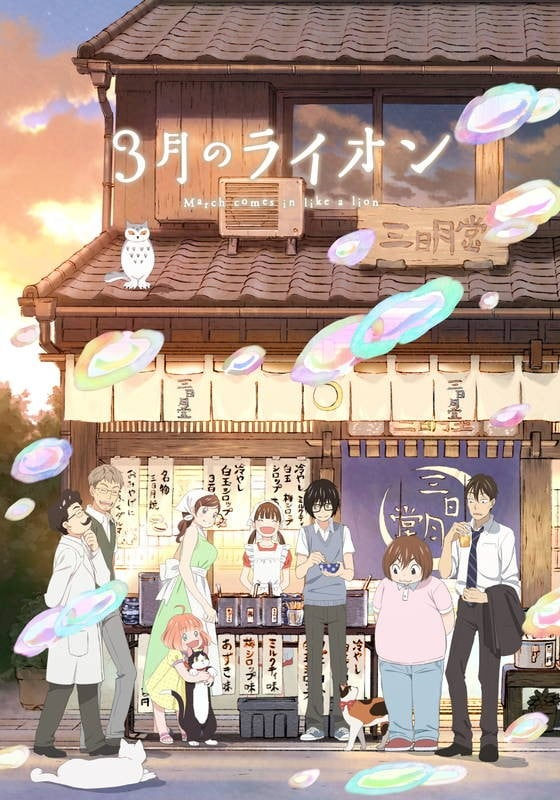
8.8「3月的狮子 第二季」（2017）是一部TV，由新房昭之执导，制作SHAFT，类型包括治愈、日常、校园，评分8.8，在本站出现在7份片单中，例如高分日漫推荐、高分TV动画推荐、高分恋爱动漫推荐。页面只做片单对照，不提供播放。这是有关各式各样的人们取回什么的温馨故事，同时也是有关斗争的故事。主人公桐山零，幼时因为意外事故失去了家人，是一个背负着沉重的孤独的17岁将棋棋士。独自居住在东京旧市镇桐山零遇见了明里、日向、桃三姐妹，少年桐山零因此发生了改变。
#4凉宫春日的消失
 8.7
8.7「凉宫春日的消失」（2010）是一部剧场版，由武本康弘执导，制作京都动画，类型包括校园、奇幻、日常，评分8.7，在本站出现在10份片单中，例如高分日漫推荐、高分动画剧场版推荐、高分治愈系动漫推荐。页面只做片单对照，不提供播放。转眼间经已12月18日，凉宫春日期待已久的圣诞节即将来临。SOS团火锅派对的活动拍板以后，阿虚就带着烦恼回家。第二天，阿虚如常上学，但他很快注意到，学校发生了与平日完全不同的事。应该在后面的座位的凉宫春日不在，却换上了理应让长门有希消灭了的。
#5白箱
「白箱」（2014）是一部TV，由水島努执导，制作P.A.WORKS，类型包括百合、日常、治愈，评分8.7，在本站出现在7份片单中，例如高分日漫推荐、高分TV动画推荐、高分热血动漫推荐。页面只做片单对照，不提供播放。本作的故事主要围绕追逐梦想的五名女生——宫森葵、安原绘麻、坂木静香、藤堂美沙、今井绿展开，是一部描写以白箱的完成为目标而奋斗的她们，每天遇到的麻烦以及策划工作时碰到的纠葛与挫折，还有制作组在制作作品时的团结和冲突的动画业界的日常的群像剧作品。
#6银魂'
 8.7
8.7「银魂'」（2011）是一部TV，由藤田陽一执导，制作Sunrise，类型包括搞笑、战斗、热血，评分8.7，在本站出现在7份片单中，例如高分日漫推荐、高分TV动画推荐、高分热血动漫推荐。页面只做片单对照，不提供播放。在2011年4月进行电视动画的第二期播放，集数承接第一期，从第202话开始。第二期动画标题做了小改动。以《银魂'》做为新标题，即在原标题的魂字右上角加了一点。
#7千年女优
 8.7
8.7「千年女优」（2002）是一部剧场版，由今敏执导，制作MADHOUSE，类型包括历史、恋爱、爱情，评分8.7，在本站出现在8份片单中，例如高分日漫推荐、高分动画剧场版推荐、高分恋爱动漫推荐。页面只做片单对照，不提供播放。风靡日本的女明星藤原千代子，三十年前当红之际，突然从银幕消声匿迹。 三十年后，千代子的影迷费尽千辛万苦，终于在人烟稀少的寂静山庄中，找到了隐居数十年的她，并献上了一把千代子当年不慎遗失的神秘钥匙。 神秘钥匙宛若开启了记忆之门，引领千代子划入。
#8虫师
 8.7
8.7「虫师」（2005）是一部TV，由長濵博史执导，制作ARTLAND，类型包括治愈、奇幻，评分8.7，在本站出现在6份片单中，例如高分日漫推荐、高分TV动画推荐、高分治愈系动漫推荐。页面只做片单对照，不提供播放。这里的虫既不是动植物，也与微生物和菌类不同，是更接近生命原生态的东西。这些东西总称为“虫”。它们的形态和存在都很暧昧，当人与虫的世界重叠之时，发生了超越人类智慧的怪异现象，此时人类才开始知道它们的存在。 所谓生命，并非为威胁异己而存在。只是。
#9哆啦A梦 大山版
 8.7
8.7「哆啦A梦 大山版」（1979）是一部TV，由無 →もとひら了→ 芝山努执导，制作シンエイ動画，类型包括搞笑、科幻、日常，评分8.7，在本站出现在6份片单中，例如高分日漫推荐、高分TV动画推荐、高分治愈系动漫推荐。页面只做片单对照，不提供播放。其实即是大家最熟悉的动画版本，有26年的历史。由于日本的哆啦A梦原声配音为大山羡代，故称之 为“大山版”。 大山版哆啦A梦哆啦A梦25年来连续放映，于八十年代曾创下30%的高收视纪绿。原作者于1997年去世后，由电视编剧自行创作的故事涌现。
#10水星领航员 第三季
 8.7
8.7「水星领航员 第三季」（2008）是一部TV，由佐藤順一执导，制作ハルフィルムメーカー[Hal Film Maker]，类型包括治愈、日常、科幻，评分8.7，在本站出现在8份片单中，例如高分日漫推荐、高分TV动画推荐、高分治愈系动漫推荐。页面只做片单对照，不提供播放。プリマ・ウンディーネを夢見る少女、水無灯里。 「ARIA」シリーズは、灯里をはじめウンディーネたちの日常を情感豊かに描いた、 未来形ヒーリングアニメーション。 待望のサードシーズン「ORIGINATION」のテーマは『始まり』。 これまで修。
#11魔法少女小圆
 8.6
8.6「魔法少女小圆」（2011）是一部TV，由新房昭之执导，制作SHAFT，类型包括治愈、百合、战斗，评分8.6，在本站出现在8份片单中，例如高分日漫推荐、高分TV动画推荐、高分热血动漫推荐。页面只做片单对照，不提供播放。大好きな家族がいて、親友がいて、時には笑い、時には泣く、そんなどこにでもある日常。 見滝原中学校に通う、普通の中学二年生・鹿目まどかも、そんな日常の中で暮らす一人。 ある日、彼女に不思議な出会いが訪れる。 この出会いは偶然なのか、必然なのか。
#12千与千寻
 8.6
8.6「千与千寻」（2001）是一部剧场版，由宫崎骏执导，制作吉卜力，类型包括奇幻、治愈、冒险，评分8.6，在本站出现在9份片单中，例如高分日漫推荐、高分动画剧场版推荐、高分治愈系动漫推荐。页面只做片单对照，不提供播放。年仅10岁的荻野千尋是一个看起来非常普通的四年级小学生，她随父母搬家来到一个陌生的城镇准备开始一个全新的生活。然而，因为途中迷路，她和父母误闯入了一个人类不应该进入的灵异小镇。小镇的主管是当地一家叫“油屋”的澡堂的巫婆：湯婆婆；而“油屋”则。
#13莉兹与青鸟
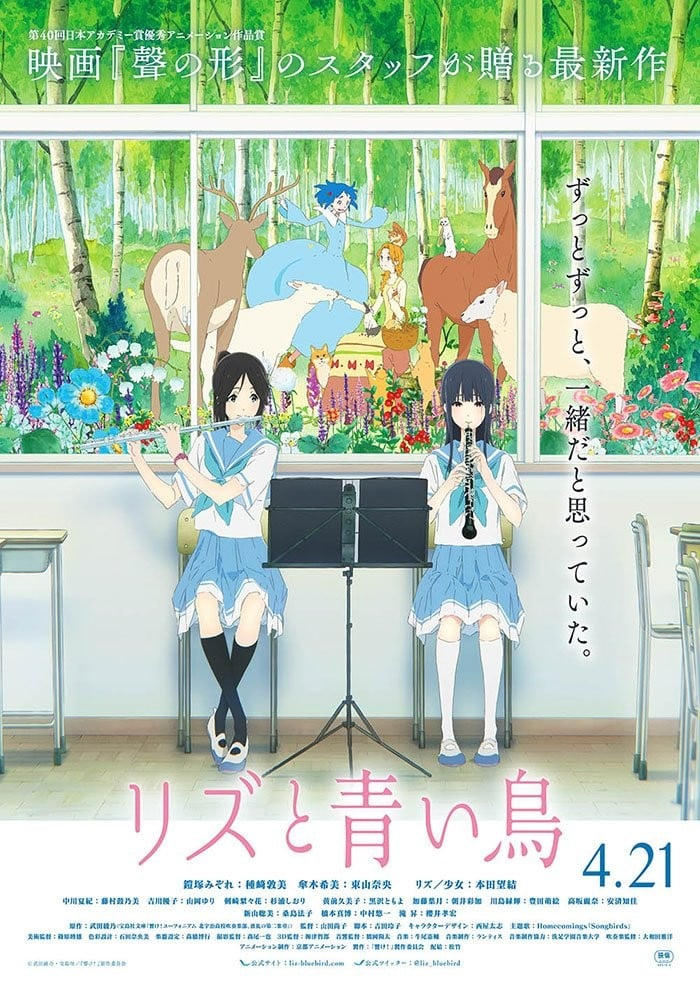
8.6「莉兹与青鸟」（2018）是一部剧场版，由山田尚子执导，制作京都动画，类型包括百合、校园、音乐，评分8.6，在本站出现在9份片单中，例如高分日漫推荐、高分动画剧场版推荐、高分治愈系动漫推荐。页面只做片单对照，不提供播放。铠塚霙，高中3年级，双簧管演奏者。 伞木希美，高中3年级，长笛演奏者。 初中时，是希美牵起了霙的手，带领她走出了孤独。 自那以后，希美就占据了霙的整个世界。 只有与希美在一起的生活，才令霙感到幸福。 可在高中一年级，希美一度退出了吹奏部。而。
#14剧场版 魔法少女小圆 [新篇] 叛逆的物语
![剧场版 魔法少女小圆 [新篇] 叛逆的物语 2013 动漫海报](../covers/b44693.jpg) 8.6
8.6「剧场版 魔法少女小圆 [新篇] 叛逆的物语」（2013）是一部剧场版，由宮本幸裕执导，制作SHAFT，类型包括百合、战斗、奇幻，评分8.6，在本站出现在9份片单中，例如高分日漫推荐、高分动画剧场版推荐、高分热血动漫推荐。页面只做片单对照，不提供播放。やっと逢えたね 運命に叛いたとき、物語は新たなる結末へ。 待望の完全新作。映画化第三弾。 魔法少女は絶望から救われたのか―― “円環の理”に導かれて、少女たちの新たな物語がはじまる。 鹿目まどか。かつて 幸せな日々をおくっていた平凡な一人の。
#15虫师 续章 第2部分
 8.6
8.6「虫师 续章 第2部分」（2014）是一部TV，由長濵博史执导，制作ARTLAND，类型包括治愈、奇幻，评分8.6，在本站出现在6份片单中，例如高分日漫推荐、高分TV动画推荐、高分治愈系动漫推荐。页面只做片单对照，不提供播放。虫师 续章 第2部分。2014。治愈、奇幻。
#16航海王：粉丝来信
 8.6
8.6「航海王：粉丝来信」（2024）是一部TV，由䂖谷恵执导，制作東映アニメーション，类型包括热血、奇幻、战斗，评分8.6，在本站出现在7份片单中，例如高分日漫推荐、高分TV动画推荐、高分热血动漫推荐。页面只做片单对照，不提供播放。故事讲述了顶上战争两年后的香波迪群岛上，娜美的小迷妹展开的一场小小冒险…… 本作改编自航海王官方外传小说《航海王 novel 草帽故事集》，小说描述了以一般人的角度来看待草帽海贼团成员们的短篇故事。
#17葬送的芙莉莲
 8.5
8.5「葬送的芙莉莲」（2023）是一部TV，由斎藤圭一郎执导，制作MADHOUSE，类型包括治愈、奇幻、异世界，评分8.5，在本站出现在8份片单中，例如高分日漫推荐、高分TV动画推荐、高分热血动漫推荐。页面只做片单对照，不提供播放。魔法使芙莉莲和勇者辛美尔等人一起，历经十年的冒险之后击败了魔王，为世界带来了和平。 身为能活上一千多年的精灵族，她于是和辛美尔等人约定再次相见后，踏上了独自一人的旅途。 自那以后，50年过去，芙莉莲又前往拜访辛美尔，相比于和50年前一点没变。
#18日常
 8.5
8.5「日常」（2011）是一部TV，由石原立也执导，制作京都动画，类型包括日常、搞笑、治愈，评分8.5，在本站出现在8份片单中，例如高分日漫推荐、高分TV动画推荐、高分治愈系动漫推荐。页面只做片单对照，不提供播放。故事的主角机器人——东云名乃，一直憧憬成为一名普通的女生，却因为背上的发条而感到自卑，在被自称为博士的8岁萝莉胡乱改造之后，每次都无可奈何地感到自己与“普通女生”的距离越来越远了。除了萝莉博士外，故事还出现了很多非日常角色，如年龄为20岁且。
#19吹响吧！上低音号 第二季
「吹响吧！上低音号 第二季」（2016）是一部TV，由石原立也执导，制作京都动画，类型包括音乐、校园、百合，评分8.5，在本站出现在8份片单中，例如高分日漫推荐、高分TV动画推荐、高分治愈系动漫推荐。页面只做片单对照，不提供播放。吹奏乐竞赛京都府大赛。在那里漂亮地取得金奖的北宇治高中吹奏乐部，向着下一个舞台·强豪云集的关西大赛发起挑战！。
#20天空之城
 8.5
8.5「天空之城」（1986）是一部剧场版，由宫崎骏执导，制作吉卜力，类型包括奇幻、冒险、治愈，评分8.5，在本站出现在9份片单中，例如高分日漫推荐、高分动画剧场版推荐、高分治愈系动漫推荐。页面只做片单对照，不提供播放。在过去的历史之中，传说着曾有人类以高科技创造了可飞行于天空的城市——拉普达。虽多数认为这是虚构幻想出来的事物，但仍有相信飞行城市存在而试图寻找出的人们。 某一日晚上，搭载众多旅客的飞行客船突遭到空中海盗团的袭击和入侵，空中海盗的目标是搭乘飞。
#21哆啦A梦
 8.5
8.5「哆啦A梦」（2005）是一部TV，由善聡一郎（#1-#421）执导，制作シンエイ動画，类型包括搞笑、科幻、日常，评分8.5，在本站出现在7份片单中，例如高分日漫推荐、高分TV动画推荐、高分治愈系动漫推荐。页面只做片单对照，不提供播放。『ドラえもん』は、藤子・F・不二雄の同名の漫画を原作としたテレビアニメ。2005年（平成17年）からテレビ朝日系列にて放送されている。テレビ朝日・シンエイ動画・ADKエモーションズ制作。 2005年から放送を開始した本シリーズ（以下、本作）。
#22虫师 续章
 8.5
8.5「虫师 续章」（2014）是一部TV，由長濵博史执导，制作ARTLAND，类型包括治愈、奇幻，评分8.5，在本站出现在6份片单中，例如高分日漫推荐、高分TV动画推荐、高分治愈系动漫推荐。页面只做片单对照，不提供播放。另一个世界，住着一群与常见动植物截然不同的生物。远古以来，人们敬畏地称它们为“虫”。当虫的世界和人的世界重合时，虫师银古便会出现。介绍中提到的虫显然不是看上去肉呼呼扭动的小东西，而是一种最接近生命本源，类似灵体的生物。它们有自己的生存方式，。
#23蜂蜜与四叶草II
「蜂蜜与四叶草II」（2006）是一部TV，由長井龍雪执导，制作J.C.STAFF，类型包括校园、治愈、恋爱，评分8.5，在本站出现在7份片单中，例如高分日漫推荐、高分TV动画推荐、高分恋爱动漫推荐。页面只做片单对照，不提供播放。在破旧公寓里过着清贫却快乐生活的美大生竹本、真山、森田。某天，三人经花本老师介绍，遇见了转学而来的叶久美。竹本和森田对叶久美一见钟情，却因各自的笨拙无法好好表达自己的心意。另一边，真山虽然清楚山田对自己的好感，却越发思念在打工处认识的建筑设。
#24孤独摇滚！
 8.4
8.4「孤独摇滚！」（2022）是一部TV，由斎藤圭一郎执导，制作CloverWorks，类型包括音乐、日常、搞笑，评分8.4，在本站出现在7份片单中，例如高分日漫推荐、高分TV动画推荐、高分治愈系动漫推荐。页面只做片单对照，不提供播放。作为网络吉他手“吉他英雄”而广受好评的后藤一里，在现实中却是个什么都不会的沟通障碍者。一里有着组建乐队的梦想，但因为不敢向人主动搭话而一直没有成功，直到一天在公园中被伊地知虹夏发现并邀请进入缺少吉他手的“结束乐队”。可是，完全没有和他人合作。
#25CLANNAD
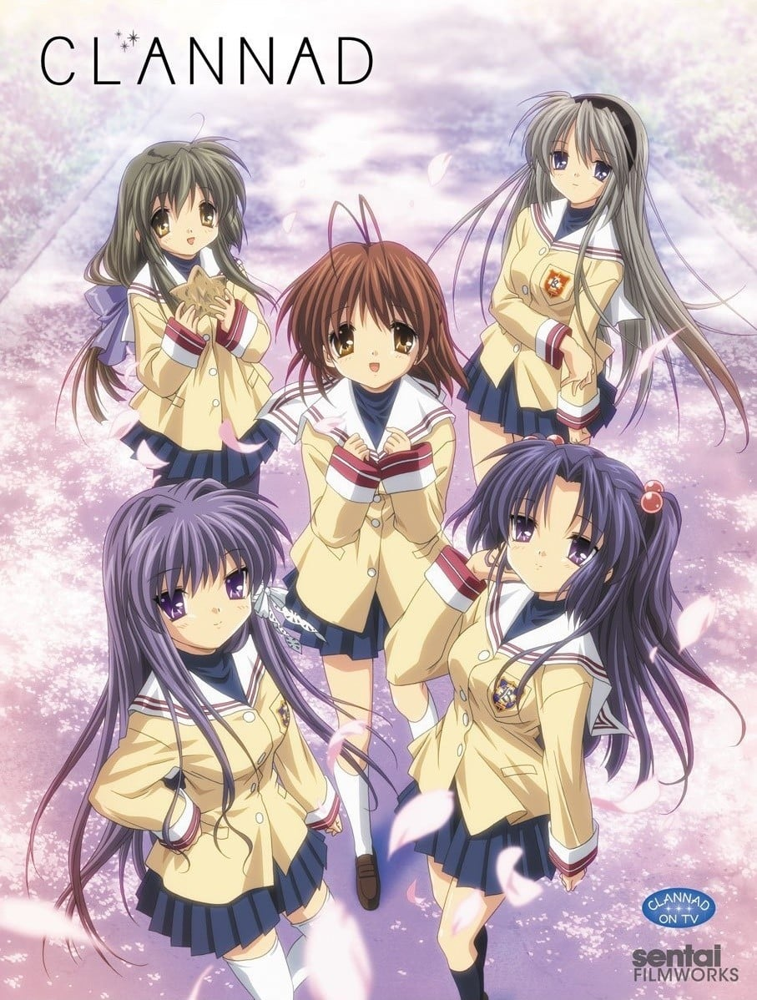
8.4「CLANNAD」（2007）是一部TV，由石原立也执导，制作京都动画，类型包括治愈、校园、恋爱，评分8.4，在本站出现在9份片单中，例如高分日漫推荐、高分TV动画推荐、高分恋爱动漫推荐。页面只做片单对照，不提供播放。故事发生在一个小镇上，冈崎朋也是光坂高中在校生，因为家庭原因他一直过着浑浑噩噩的生活。他不参加任何社团活动，唯一的朋友是春原阳平。 某天的上学途中，在樱花飞舞的坡道上，他邂逅了一名少女——古河渚，从此他的生活发生改变。渚因病休学一年，重返校。
#26轻音少女 第二季
「轻音少女 第二季」（2010）是一部TV，由山田尚子执导，制作京都动画，类型包括校园、治愈、日常，评分8.4，在本站出现在8份片单中，例如高分日漫推荐、高分TV动画推荐、高分治愈系动漫推荐。页面只做片单对照，不提供播放。新学年开始，樱丘高中轻音部（轻音乐社）因原有部员全部毕业离校而无法达到部员最低人数（至少4人）。轻音部新成员只有秋山澪和田井中律，这下该如何是好呢？此时，平泽唯在阴差阳错的情况下把“轻音”当作“轻松的音乐”，又因小时候玩响板得到老师表扬，所。
#27赛马娘 Pretty Derby 第二季
「赛马娘 Pretty Derby 第二季」（2021）是一部TV，由及川啓执导，制作スタジオKAI，类型包括运动、百合、热血，评分8.4，在本站出现在8份片单中，例如高分日漫推荐、高分TV动画推荐、高分热血动漫推荐。页面只做片单对照，不提供播放。“我要和你一起实现梦想！” 这是从异世界传承着光辉姓名与竞跑能力的“赛马娘”们，长久以来和人类共存的世界的故事。 马娘目白麦昆背负起名门的声誉，向“天皇赏”连霸发起挑战。马娘东海帝皇憧憬着赛马史上首屈一指的马娘鲁铎象征，剑指“皋月赏”、“日。
#28轻音少女 剧场版
「轻音少女 剧场版」（2011）是一部剧场版，由山田尚子执导，制作京都动画，类型包括治愈、校园、百合，评分8.4，在本站出现在9份片单中，例如高分日漫推荐、高分动画剧场版推荐、高分治愈系动漫推荐。页面只做片单对照，不提供播放。唯、澪、律、䌷四人即将高中毕业，决定进行一次毕业旅行。梓听到信息，也决定跟随学姐们一起旅行。她们各自提出自己想要去的目的地，最终通过抽签选中去伦敦的计划。几位女生在为毕业旅行做准备的同时，关于伦敦的想象也在飞驰……。
#29强风吹拂
「强风吹拂」（2018）是一部TV，由野村和也执导，制作Production I.G，类型包括运动、热血、校园，评分8.4，在本站出现在7份片单中，例如高分日漫推荐、高分TV动画推荐、高分热血动漫推荐。页面只做片单对照，不提供播放。夜晚。如同逃跑一般奔驰在城市中的藏原走。他的侧面，突然有辆自行车冲来。素不相识的男子，对阿走发问了。“喂！你很喜欢跑步吧！” 男子的名字是清濑灰二。 就这样，阿走在灰二的引导下，到达了名为竹青庄的老旧公寓。9名个性丰富的住民住在那里。阿走来。
#30异国日记
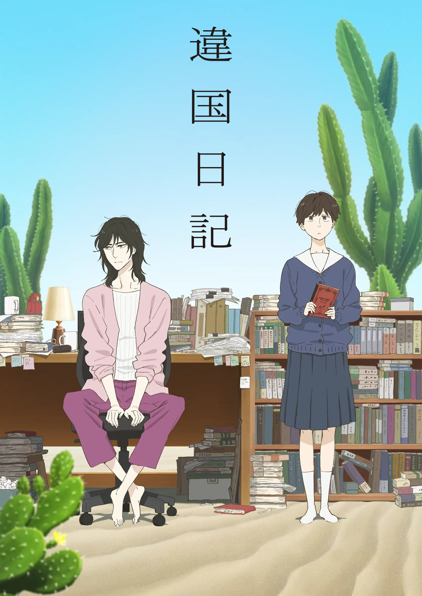
8.4「异国日记」（2026）是一部TV，由大城美幸执导，制作朱夏，类型包括治愈、日常、校园，评分8.4，在本站出现在8份片单中，例如2026年新番总表、高分日漫推荐、高分TV动画推荐。页面只做片单对照，不提供播放。怕生内向的小说家高代槙生，在姐姐夫妻的葬礼上，一时冲动收养了失去双亲的外甥女田汲朝。这段意想不到开始的同居生活，让原本宁静的槙生日常彻底改变。 因为不习惯和别人一起生活，她对与15岁的朝同住一事充满不安。另一方面，失去双亲、失去了自己立足之。
#31瑞克和莫蒂 第一季
 8.4
8.4「瑞克和莫蒂 第一季」（2013）是一部TV，由Justin Roiland执导，类型包括科幻、搞笑、奇幻，评分8.4，在本站出现在8份片单中，例如高分美漫与动画电影、高分TV动画推荐、高分治愈系动漫推荐。页面只做片单对照，不提供播放。天才兼疯子科学家Rick在失踪多年后突然回到女儿Beth的身边，并且在她的车库里搞了一个科学实验室。Rick有一把“传送门枪”，可以穿越到宇宙的各个次元。孙子Morty莫名其妙就成了他的助手，经常被拖进他的自制太空船内，跟他一同开展各种疯狂。
#32蜂蜜与四叶草
「蜂蜜与四叶草」（2005）是一部TV，由カサヰケンイチ执导，制作J.C.STAFF，类型包括校园、治愈、恋爱，评分8.4，在本站出现在7份片单中，例如高分日漫推荐、高分TV动画推荐、高分恋爱动漫推荐。页面只做片单对照，不提供播放。美大学生竹本、真山、森田在破旧不堪的公寓中过着贫困而快乐的生活。 有一天，花本老师向3人介绍了他堂兄弟的女儿——小巧、惹人爱怜的插班生花本叶久美。 看到天真烂漫的叶久美，竹本和森田在一瞬间坠入情网。 单纯得令周围人不耐烦、迟钝的竹本，以及用。
#33传说巨神伊迪安 发动篇
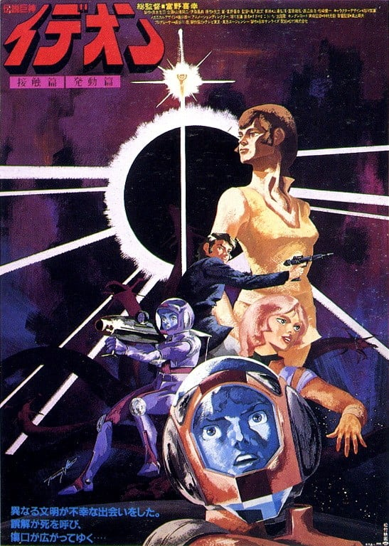
8.4「传说巨神伊迪安 发动篇」（1982）是一部剧场版，由滝沢敏文执导，制作Sunrise，类型包括科幻、机战、治愈，评分8.4，在本站出现在6份片单中，例如高分日漫推荐、高分动画剧场版推荐、高分治愈系动漫推荐。页面只做片单对照，不提供播放。憎しみは終わらなかった。 戦いは、多くの人間の命を奪っていった。 植民星で出会ったコスモの恋人キッチン、シェリルと愛し合うまでになっていたバッフ・クランの男ギジェ。 そして、ただイデオンだけが、果てしなくその力を増大させていた。 バッフ・ク。
#34轻音少女
「轻音少女」（2009）是一部TV，由山田尚子执导，制作京都动画，类型包括校园、治愈、日常，评分8.3，在本站出现在8份片单中，例如高分日漫推荐、高分TV动画推荐、高分治愈系动漫推荐。页面只做片单对照，不提供播放。春天，在新生决定社团的时候，田井中律硬拉着青梅竹马的秋山澪参观轻音部让其入部，在得知前辈们毕业后由于人数不足将面临闭部结局，秋山澪与琴吹紬成为了轻音部成员，但离4人指标还差1位名额。这时，一名弄错了部名的少女平泽唯误打误撞之下填补了最后一位。
#35辉夜大小姐想让我告白-超级浪漫-
 8.3
8.3「辉夜大小姐想让我告白-超级浪漫-」（2022）是一部TV，由畠山守(小俣真一)执导，制作A-1 Pictures，类型包括恋爱、搞笑、校园，评分8.3，在本站出现在8份片单中，例如高分日漫推荐、高分TV动画推荐、高分恋爱动漫推荐。页面只做片单对照，不提供播放。秀知院学园是秀才云集的菁英学校，在学生会中担任学生会副会长·四宫辉夜遇见了学生会长·白银御行。 原以为这两个任谁都觉得很登对的天才应该很快就会在一起，但这两人却因为过高的自尊心导致他们终没能向对方告白。 “该用什么办法才能让对方向自己告白呢。
#36吹响吧！上低音号
「吹响吧！上低音号」（2015）是一部TV，由石原立也执导，制作京都动画，类型包括音乐、校园、百合，评分8.3，在本站出现在8份片单中，例如高分日漫推荐、高分TV动画推荐、高分治愈系动漫推荐。页面只做片单对照，不提供播放。进入北宇治高中就读的主人公黄前久美子，在同班同学加藤叶月的热烈影响下加入了该校的吹奏部。北宇治高中吹奏部直到5年前还是关西大会的常客，并且过去还是全国大会出场过的强校代表，然而自从顾问换了之后，该吹奏部就再也没有挺进过关西大会。之后以新顾问。
#37幸运星
 8.3
8.3「幸运星」（2007）是一部TV，由山本寛(1-4)执导，制作京都动画，类型包括日常、搞笑、校园，评分8.3，在本站出现在9份片单中，例如高分日漫推荐、高分TV动画推荐、高分治愈系动漫推荐。页面只做片单对照，不提供播放。讲述的就是一群喜爱动画、漫画的高中女生们的日常生活。其中主角泉こなた更是为了喜欢的东西会不惜一切的女孩子，整天出入OTAKU们的的圣地秋叶原、到女仆沏茶店打工、天天都有COSPLAY。这样一名标准的AKIBA系OTAKU的她，和相对平常些的。
#38我心里危险的东西 第二季
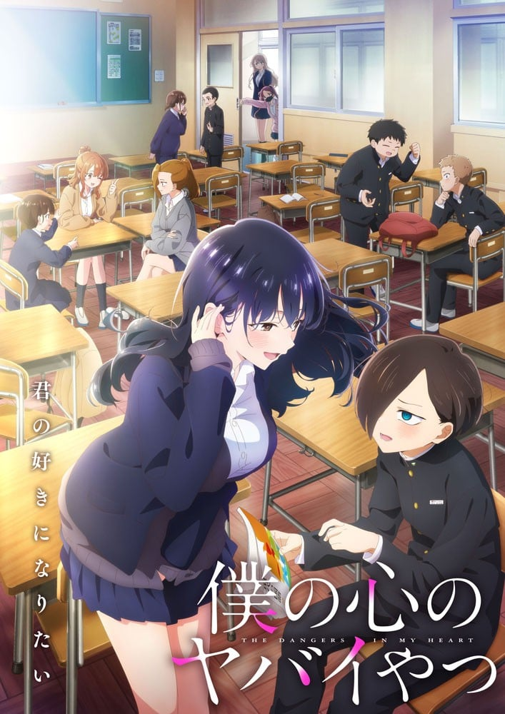
8.3「我心里危险的东西 第二季」（2024）是一部TV，由赤城博昭执导，制作シンエイ動画，类型包括恋爱、校园、日常，评分8.3，在本站出现在8份片单中，例如高分日漫推荐、高分TV动画推荐、高分恋爱动漫推荐。页面只做片单对照，不提供播放。重度の中二病で陰キャの市川京太郎と、 クラスで人気者の山田杏奈。 美少女らしからぬ行動を繰り出す山田に、 市川は目を離せずにいた。 そんな市川の恋心を知ってか知らずか、 山田は天真爛漫に近づいて来る!! 全く違う世界にいたはずの2人。 しか。
#39来自深渊 烈日的黄金乡
 8.3
8.3「来自深渊 烈日的黄金乡」（2022）是一部TV，由小島正幸执导，制作KINEMA CITRUS，类型包括奇幻、冒险、治愈，评分8.3，在本站出现在7份片单中，例如高分日漫推荐、高分TV动画推荐、高分热血动漫推荐。页面只做片单对照，不提供播放。在已被彻底探索殆尽的世界里，名为「深渊」的大洞是硕果仅存的秘境。 这个深不见底、不知会延伸到何处的巨大垂直洞穴中，不仅栖息着各种稀奇古怪的生物，还沉睡着现今人类所做不出来的珍贵遗物。 「深渊」那处处充满不可思议的神秘样貌，吸引人们前仆后继地。
#40幽灵公主
 8.3
8.3「幽灵公主」（1997）是一部剧场版，由宫崎骏执导，制作吉卜力，类型包括奇幻、冒险、治愈，评分8.3，在本站出现在10份片单中，例如高分日漫推荐、高分动画剧场版推荐、高分热血动漫推荐。页面只做片单对照，不提供播放。大和王权时期蝦夷族末代王子阿席达卡，在保卫他的村庄时被一恶魔诅咒受不治创伤。村里的巫婆劝他前往西方，寻找恶魔的来源和解除诅咒的方法。在他的旅途中，他來到山獸神森林，认识了被称为“魔法公主”的、由犬神抚养大的小桑。 在這個過程中，阿席達卡发现。
#41摇曳露营△ 第二季
「摇曳露营△ 第二季」（2021）是一部TV，由京極義昭执导，制作C-Station，类型包括日常、治愈、百合，评分8.3，在本站出现在7份片单中，例如高分日漫推荐、高分TV动画推荐、高分治愈系动漫推荐。页面只做片单对照，不提供播放。这也是，某个冬日的故事。 山梨的女高中生志摩凛，乘着钟爱的机车一路前往滨名湖。从除夕这天开始，久违了的单人露营。从山梨出发前往静冈县磐田。在磐田迎来新年，今天则是第三天。虽然行驶了相当长的距离，但仍然感觉很开心。就在此时，停靠在海边的凛忽然。
#423月的狮子
「3月的狮子」（2016）是一部TV，由新房昭之执导，制作SHAFT，类型包括治愈、日常、恋爱，评分8.3，在本站出现在6份片单中，例如高分日漫推荐、高分TV动画推荐、高分恋爱动漫推荐。页面只做片单对照，不提供播放。独自居住在东京旧市街的17岁职业将棋棋士——桐山零。 他是个幼时就因为意外失去家人，怀抱着深沉孤独的少年。 出现在这样的他面前的，是明里、日向、桃三姐妹。 与她们的相处后，零开始发生些许改变——。
#43辉夜大小姐想让我告白 通往大人的阶梯
 8.3
8.3「辉夜大小姐想让我告白 通往大人的阶梯」（2025）是一部TV，由畠山守(小俣真一)执导，制作A-1 Pictures，类型包括恋爱、校园、搞笑，评分8.3，在本站出现在9份片单中，例如2025年秋季新番推荐、高分日漫推荐、高分TV动画推荐。页面只做片单对照，不提供播放。"每一处都令人怀念，而所有的一切都是无可替代的重要回忆。" 这里是聚集秀才的精英学校——秀知院学园。在该校学生会相遇的副会长四宫辉夜与学生会长白银御行，在经历了漫长的恋爱头脑战后，终于确定了彼此关系……。时光流逝——辉夜独自在房间里翻阅着一。
#44风之谷
 8.3
8.3「风之谷」（1984）是一部剧场版，由宫崎骏执导，制作トップクラフト(スタジオジブリ)，类型包括科幻、奇幻、冒险，评分8.3，在本站出现在9份片单中，例如高分日漫推荐、高分动画剧场版推荐、高分治愈系动漫推荐。页面只做片单对照，不提供播放。該作品背景設定在未來，世界的產業文明達致巔峰後，經歷一場稱為「火之七日」的戰爭而毀於一旦。世界被一種由菌類和巨型昆蟲構成，名叫腐海的新生態體系所掩蓋，僅存的人類生活在小面積土地，在面對巨型昆蟲和會釋放瘴氣的腐海森林包圍威脅下積極求存。 風之。
#45偶像大师
「偶像大师」（2011）是一部TV，由錦織敦史执导，制作A-1 Pictures，类型包括音乐、百合、治愈，评分8.3，在本站出现在6份片单中，例如高分日漫推荐、高分TV动画推荐、高分治愈系动漫推荐。页面只做片单对照，不提供播放。偶像，是女孩子们一直以来的憧憬。但能站在顶点的，只有仅仅数人。13位少女，就此经她们所属的事务所“765 Prodution”，跨进了那个充满竞争的世界……出道约半年，事务所来了一位全新的制作人。他跟少女们都下定决心，向顶级偶像之路进发……。
#46东京教父
 8.3
8.3「东京教父」（2003）是一部剧场版，由今敏执导，制作MADHOUSE，类型包括治愈、搞笑、剧情，评分8.3，在本站出现在9份片单中，例如高分日漫推荐、高分动画剧场版推荐、高分治愈系动漫推荐。页面只做片单对照，不提供播放。中年流浪汉金、虽身为男人但内心温柔又充满母性的阿花和离家出走少女美雪，他们三人过着无家可归的生活，一起居住在东京原宿的一个角落。 圣诞夜，三人在垃圾堆中发现一个哭泣的弃婴，在孩子的襁褓里，发现了一个酒吧的名片和照片，还有奶粉。阿花非常想要小。
#47少女与战车 剧场版
 8.3
8.3「少女与战车 剧场版」（2015）是一部剧场版，由水島努执导，制作アクタス，类型包括百合、战斗、热血，评分8.3，在本站出现在9份片单中，例如高分日漫推荐、高分动画剧场版推荐、高分热血动漫推荐。页面只做片单对照，不提供播放。在关乎学校存续的第63回战车道全国高中生大赛中取得优胜后，大洗女子学园回归了平稳的日常。某天，大洗町将要举办一场表演赛。与大洗女子学园和知波单学园的混合队伍对战的是，圣葛罗莉安娜女学院与真理高中的混合队伍。如今已经完全变成大洗町红人的大洗女。
#48银魂' 延长战
 8.3
8.3「银魂' 延长战」（2012）是一部TV，由藤田陽一执导，制作Sunrise，类型包括搞笑、热血、战斗，评分8.3，在本站出现在7份片单中，例如高分日漫推荐、高分TV动画推荐、高分热血动漫推荐。页面只做片单对照，不提供播放。内容是冷饭“よりぬき銀魂さん”精选集重播加新作动画。
#49蜡笔小新：大人王国的反击
 8.3
8.3「蜡笔小新：大人王国的反击」（2001）是一部剧场版，由原恵一执导，制作シンエイ動画，类型包括搞笑、家庭、治愈，评分8.3，在本站出现在8份片单中，例如高分日漫推荐、高分动画剧场版推荐、高分治愈系动漫推荐。页面只做片单对照，不提供播放。这天在小新居住的春日部附近，突然新开了一家叫“20世纪博”的游乐园。游乐园里到处播放着从前20世纪的旧的电视节目和电影，这里，一切都是从前时光的回放。每一个到了这里的大人，都沉浸在过去的旧时光里，而对小孩子来说，这些的东西一点意思都没有。令。
#50水星领航员 第二季
 8.3
8.3「水星领航员 第二季」（2006）是一部TV，由佐藤順一执导，制作ハルフィルムメーカー[Hal Film Maker]，类型包括治愈、日常、奇幻，评分8.3，在本站出现在8份片单中，例如高分日漫推荐、高分TV动画推荐、高分治愈系动漫推荐。页面只做片单对照，不提供播放。水の星AQUA（アクア）の観光都市ネオ・ヴェネツィアを舞台に、 ウンディーネを夢見る少女、水無灯里。 そんな彼女の柔らかな日常を情感豊かに描いた未来形ヒーリングアニメーション。 「ARIA The ANIMATION」。 そのセカンド・シー。
#51昭和元禄落语心中 -助六再临篇-
「昭和元禄落语心中 -助六再临篇-」（2017）是一部TV，由畠山守(小俣真一)执导，制作スタジオディーン，类型包括治愈、历史、剧情，评分8.3，在本站出现在5份片单中，例如高分日漫推荐、高分TV动画推荐、高分治愈系动漫推荐。页面只做片单对照，不提供播放。由于难以忘记在刑务所的落语慰问会中见到的大名人·八云的“死神”，一出狱与太郎便径直前往寄席。拜倒在八云面前，成为他住所的雇工及弟子，磨炼了技艺的与太郎终于升进成为真打。他所继承的名号是第三代助六。为了八云师父，为了小夏，为了改变两人心中的助。
#52水星领航员 The AVVENIRE
 8.3
8.3「水星领航员 The AVVENIRE」（2015）是一部OVA/WEB，由佐藤順一执导，制作TYO Animations[ゆめ太カンパニー]，类型包括治愈、日常、百合，评分8.3，在本站出现在7份片单中，例如高分日漫推荐、高分OVA与WEB动画、高分治愈系动漫推荐。页面只做片单对照，不提供播放。TVアニメ放送開始10周年記念プロジェクト『蒼のカーテンコール』のひとつとしてスタート 9月26日(土)に公開される『ARIA The AVVENIRE』は過去にアニメ化されなかった原作からの２エピソードと、今回このプロジェクトのために原作。
#53怪诞小镇 第二季
 8.3
8.3「怪诞小镇 第二季」（2014）是一部TV，由John Aoshima执导，制作Disney Television Animation，类型包括奇幻、搞笑、冒险，评分8.3，在本站出现在7份片单中，例如高分美漫与动画电影、高分TV动画推荐、高分治愈系动漫推荐。页面只做片单对照，不提供播放。Dipper and Mabel Pines spend the summer at their great uncle's tourist trap, The Mystery Shack. They think it's just goi。
#54小魔女DoReMi 大合奏
 8.3
8.3「小魔女DoReMi 大合奏」（2002）是一部TV，制作東映アニメーション，类型包括治愈、校园、搞笑，评分8.3，在本站出现在7份片单中，例如高分日漫推荐、高分TV动画推荐、高分治愈系动漫推荐。页面只做片单对照，不提供播放。虽然前两任女王道鲁宾已唤起在人类世界的回忆，真身显露出来，但仍然被六条象征悲伤回忆的荆棘所围绕，因此仍继续沈睡。 又回去魔女幼稚园的小花，为了和升上六年级的DoReMi等人一起上学，使用魔法把自己变成一位12岁女孩。但因为魔法冲击太大导致她。
#55凉宫春日的忧郁
 8.2
8.2「凉宫春日的忧郁」（2006）是一部TV，由石原立也执导，制作京都动画，类型包括校园、日常、奇幻，评分8.2，在本站出现在10份片单中，例如高分日漫推荐、高分TV动画推荐、高分治愈系动漫推荐。页面只做片单对照，不提供播放。“我毕业于东中，叫做凉宫春日。我对普通的人类没有兴趣。你们之中要是有外星人、未来人、异世界人或者超能力者的话，就尽管来找我吧。”这是凉宫春日的宣言，也是她对于平庸生活的挑战。 我们可能在很小时就不再相信圣诞老人的存在，也慢慢不会再对外星人，。
#56来自深渊
 8.2
8.2「来自深渊」（2017）是一部TV，由小島正幸执导，制作KINEMA CITRUS，类型包括奇幻、冒险、治愈，评分8.2，在本站出现在7份片单中，例如高分日漫推荐、高分TV动画推荐、高分热血动漫推荐。页面只做片单对照，不提供播放。在每一个角落都被探索完毕的世界中，唯一残留的秘境——大洞穴“深渊”。不知道延续到何方，深不见底的巨大纵向洞穴，栖息着各种奇妙奇怪的生物们，沉眠着现在的人类无法制造的贵重遗物。“深渊”那充满了不可思议的姿态吸引了人们，并驱使人们展开冒险。如此。
#57摇曳露营△
「摇曳露营△」（2018）是一部TV，由京極義昭执导，制作C-Station，类型包括治愈、百合、日常，评分8.2，在本站出现在7份片单中，例如高分日漫推荐、高分TV动画推荐、高分治愈系动漫推荐。页面只做片单对照，不提供播放。这是，某个冬日的故事。 从静冈搬家到山梨的女高中生·抚子，为了观赏“在千圆纸币上都有图案的富士山”而骑着自行车来到本栖湖，但不巧天气是阴天。没能看到富士山，十分疲倦的抚子当场进入了梦乡。当她醒来的时候，时间已是深夜。在这初来乍到的地方，连回。
#58末日后酒店
 8.2
8.2「末日后酒店」（2025）是一部TV，由春藤佳奈执导，制作CygamesPictures[サイピク]，类型包括科幻、治愈、奇幻，评分8.2，在本站出现在7份片单中，例如高分日漫推荐、高分TV动画推荐、高分治愈系动漫推荐。页面只做片单对照，不提供播放。人类离开后，地球经历了漫长的岁月。 位于日本首都东京银座的「银河楼」酒店，至今仍在营业中。 工作人员是以酒店机器人八千代为中心，在各个部门工作的员工机器人们。 它们一边等待老板的归来和再次迎接人类的时刻，一边在没有住客的酒店里专心致志地工作。
#59比宇宙更远的地方
 8.2
8.2「比宇宙更远的地方」（2018）是一部TV，由いしづかあつこ执导，制作MADHOUSE，类型包括治愈、百合、日常，评分8.2，在本站出现在7份片单中，例如高分日漫推荐、高分TV动画推荐、高分治愈系动漫推荐。页面只做片单对照，不提供播放。无论何时，我们的第一步总是从好奇心开始。 不曾看过的风景，不曾听过的声音，不曾闻过的味道，不曾摸过的质感，不曾尝过的食物，以及不曾感受过的澎湃。 为了重拾不知何时忘却的记忆碎片和不知何时舍弃的感动的旅途。 在到达终点的时候，我们会想些什么呢。
#60龙猫
 8.2
8.2「龙猫」（1988）是一部剧场版，由宫崎骏执导，制作吉卜力，类型包括治愈、奇幻，评分8.2，在本站出现在9份片单中，例如高分日漫推荐、高分动画剧场版推荐、高分治愈系动漫推荐。页面只做片单对照，不提供播放。本片是對日本鄉村生活的迷人及節奏緩慢的描繪。故事背景設定於1958年（昭和33年），一位大學教授和他的兩個女兒搬進一個森林附近的一所舊房子，因為他的妻子染上了結核病，在附近的一所醫院康復中。他的女兒們發現了「煤炭屎」，她們又名「煤炭屎鬼」。
#61物语系列 第二季
 8.2
8.2「物语系列 第二季」（2013）是一部TV，由板村智幸执导，制作SHAFT，类型包括奇幻、恋爱、校园，评分8.2，在本站出现在8份片单中，例如高分日漫推荐、高分TV动画推荐、高分恋爱动漫推荐。页面只做片单对照，不提供播放。シリーズ セカンドシーズン 2013年 開幕 猫物語(白)、傾物語、花物語、囮物語、鬼物語、恋物語の 6作品が2013年にアニメ化されることが決定いたしました！ 最新情報は www.monogatari-series.com/2ndseas。
#62魔卡少女樱
 8.2
8.2「魔卡少女樱」（1998）是一部TV，由浅香守生执导，制作MADHOUSE，类型包括治愈、校园、奇幻，评分8.2，在本站出现在9份片单中，例如高分日漫推荐、高分TV动画推荐、高分恋爱动漫推荐。页面只做片单对照，不提供播放。故事讲述10岁的木之本樱打开了她父亲所藏的魔法书，意外把有魔法力量的“库洛牌”释放。由于她把卡弄失，要负责寻回，于是看守库洛牌守护兽可鲁贝洛斯，便给予小樱封印之杖，任命她为“库洛魔法使”，陪同并帮助小樱寻找回魔法卡。随后的故事，围绕着小樱寻。
#63欢迎加入NHK！
 8.2
8.2「欢迎加入NHK！」（2006）是一部TV，由山本裕介执导，制作GONZO，类型包括治愈、日常、搞笑，评分8.2，在本站出现在8份片单中，例如高分日漫推荐、高分TV动画推荐、高分恋爱动漫推荐。页面只做片单对照，不提供播放。大学退学第二年的春天，主角家里蹲废材佐藤达广在一事无成下，妄想认为自己的退学跟无职是NHK的全国性阴谋，就在这个时候在他面前出现了之前遇到过叫做中原岬的神秘美少女，并坚持达广一定要加入计划治好只会窝在家里的毛病……。
#64机器人总动员
 8.2
8.2「机器人总动员」（2008）是一部剧场版，由Andrew Stanton执导，制作Pixar Animation Studios，类型包括科幻、治愈、喜剧，评分8.2，在本站出现在10份片单中，例如高分美漫与动画电影、高分动画剧场版推荐、高分治愈系动漫推荐。页面只做片单对照，不提供播放。“WALL· E”是Waste Allocation Load Lifters - Earth（地球废品分装员）的缩写，这种职业出现在2700年，因为地球的垃圾多到爆炸，整个星球几乎被垃圾掩埋了，罪魁祸首-人类-只得移居到太空船上，并且请一。
#65悠哉日常大王 Nonstop
 8.2
8.2「悠哉日常大王 Nonstop」（2021）是一部TV，由川面真也执导，制作SILVER LINK.，类型包括日常、治愈、百合，评分8.2，在本站出现在7份片单中，例如高分日漫推荐、高分TV动画推荐、高分治愈系动漫推荐。页面只做片单对照，不提供播放。“旭丘分校”的学生，仅有五人。虽然学年性格各不相同，但大家一起做菜、一起捉虫、一起试着练习乐器……春夏秋冬四季变换的乡村生活，一直都那么让人兴奋。虽然一如既往地平和，但在欢笑和感动当中，心中也变得温暖起来。悠哉悠哉的几位成员所度过的日常，再。
#66银魂°
 8.2
8.2「银魂°」（2015）是一部TV，由宮脇千鶴执导，制作BN Pictures，类型包括搞笑、热血、战斗，评分8.2，在本站出现在7份片单中，例如高分日漫推荐、高分TV动画推荐、高分热血动漫推荐。页面只做片单对照，不提供播放。银魂°。2015。搞笑、热血、战斗。
#67水星领航员
 8.2
8.2「水星领航员」（2005）是一部TV，由佐藤順一执导，制作ハルフィルムメーカー[Hal Film Maker]，类型包括治愈、日常、奇幻，评分8.2，在本站出现在7份片单中，例如高分日漫推荐、高分TV动画推荐、高分治愈系动漫推荐。页面只做片单对照，不提供播放。本故事的时代背景在24世纪。彼时人类在火星上进行行星地球化改造工程，由于两极冰帽融解的水量超乎预期，全星球有90%被海洋覆盖，因而被人称呼为「水星」（AQUA）。在此星球上有个以过去被称为水都的威尼斯为范本所建造的城市新威尼斯（Neo-Ve。
#68虫师 特別篇 蚀日之翳
 8.2
8.2「虫师 特別篇 蚀日之翳」（2014）是一部TV，由長濵博史执导，制作ARTLAND，类型包括治愈、奇幻，评分8.2，在本站出现在6份片单中，例如高分日漫推荐、高分TV动画推荐、高分治愈系动漫推荐。页面只做片单对照，不提供播放。日食发生之时，虫子最易活跃且容易发生状况，主人公银古守护的村子就出现了奇异的虫子遮天蔽日，人们最熟悉的太阳光芒即将消失。在苦苦寻找根源的时候，银古发现了一对身体奇特的姐妹，进而找到了虫子的“根”，与村民合力把根送到太阳照到的地方，解除了阳光。
#69日常 ETV版
 8.2
8.2「日常 ETV版」（2012）是一部TV，制作京都动画，类型包括日常、搞笑、治愈，评分8.2，在本站出现在8份片单中，例如高分日漫推荐、高分TV动画推荐、高分治愈系动漫推荐。页面只做片单对照，不提供播放。由あらゐけいいち创作的搞笑漫画「日常」，在今年4月被京都动画改编成TV动画，虽然作品播出后的人气效应远不如京阿尼出品的其他动画，但也有着其可圈可点之处。明年1月在NHK的ETV中将会播放全12话的「日常」，这是对之前播出的全26话内容进行再。
#70虫师 特别篇 铃之雫
 8.2
8.2「虫师 特别篇 铃之雫」（2015）是一部剧场版，由長濵博史执导，制作ARTLAND，类型包括治愈、奇幻，评分8.2，在本站出现在7份片单中，例如高分日漫推荐、高分动画剧场版推荐、高分治愈系动漫推荐。页面只做片单对照，不提供播放。ヒトから生まれ、ヒトとは成れぬ事を定められたモノが在った。 摩滅しゆく心に灯るは無数の光——己を取り巻く総ての生命という輝き。 往くべき処を悟るモノ、還るべき温もりを示す者。 其々が其々の”生”を全うする刻、かの地に鳴り渡るのは—— 幽寂な。
#71机动警察 NEW OVA
 8.2
8.2「机动警察 NEW OVA」（1990）是一部OVA/WEB，由吉永尚之执导，制作Sunrise，类型包括科幻、机战、日常，评分8.2，在本站出现在7份片单中，例如高分日漫推荐、高分OVA与WEB动画、高分治愈系动漫推荐。页面只做片单对照，不提供播放。設定・時間軸共にTVシリーズの延長にある作品。47話での放送打ち切りに伴いはみ出したTVシリーズの最終章である、グリフォン編の完結編部分と、1話完結のオリジナル・エピソードから成る。その中で12話の「ふたりの軽井沢」はダイアログの収録を先に。
#72三千里寻母记
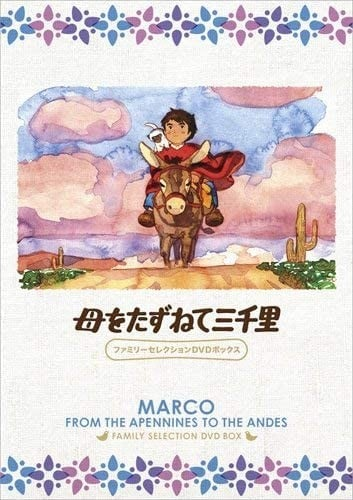
8.2「三千里寻母记」（1976）是一部TV，由高畑勲执导，制作日本アニメーション，类型包括治愈，评分8.2，在本站出现在4份片单中，例如高分日漫推荐、高分TV动画推荐、高分治愈系动漫推荐。页面只做片单对照，不提供播放。改编自意大利文学巨匠亚米契斯Edmondo De Amicis (1846-1908)传世经典[爱的教育CUORE]荣获儿童节目良影片奖，这是一段小男孩寻母的旅程,也是一段自我成长的磨练。 《三千里寻母记》是在1976年1月4日至同年12月。
#73你的名字。
 8.1
8.1「你的名字。」（2016）是一部剧场版，由新海诚执导，制作CoMix Wave Films，类型包括恋爱、奇幻、治愈，评分8.1，在本站出现在10份片单中，例如高分日漫推荐、高分动画剧场版推荐、高分恋爱动漫推荐。页面只做片单对照，不提供播放。在每千年回归一次的彗星造访过一个月之后的日本。 某个深山的乡下小镇，女高中生三叶每天都过着忧郁的生活。 而她烦恼的不光有担任镇长的父亲所举行的选举运动，还有家传神社的古老习俗。 在这个小小的城镇，周围都只是些爱瞎操心的老人。为此三叶对于大都。
#74少女终末旅行
「少女终末旅行」（2017）是一部TV，由尾崎隆晴执导，制作WHITE FOX，类型包括百合、治愈、科幻，评分8.1，在本站出现在7份片单中，例如高分日漫推荐、高分TV动画推荐、高分治愈系动漫推荐。页面只做片单对照，不提供播放。距离极尽繁荣与荣华的人类文明迎来末日，已经经过了漫长的岁月。人类几乎死绝，就连生物都消失的迎来末日的世界。复杂建造的都市化作宛如迷宫的废墟，无从整备的机械也渐渐停止了动作。是何时结束的呢，是从何时开始结束的呢，就连这种想法也不复存在的终末世。
#75寒蝉鸣泣之时 解
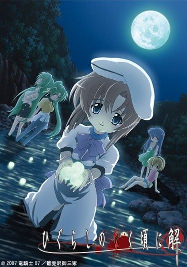
8.1「寒蝉鸣泣之时 解」（2007）是一部TV，由今千秋执导，制作スタジオディーン，类型包括悬疑、惊悚、治愈，评分8.1，在本站出现在6份片单中，例如高分日漫推荐、高分TV动画推荐、高分治愈系动漫推荐。页面只做片单对照，不提供播放。昭和58年初夏，在远离都市的山中小村雏见泽，从早到晚夏蝉们都在欢快地合唱它们的主题曲。圭一、礼奈、魅音、沙都子、梨花、诗音等社团成员明快的声音，也在雏见泽上空回荡。然而，梨花的脸上却浮现出悲哀的表情。因为每年6月举行的绵流祭又将临近，过去绵。
#76琉璃的宝石
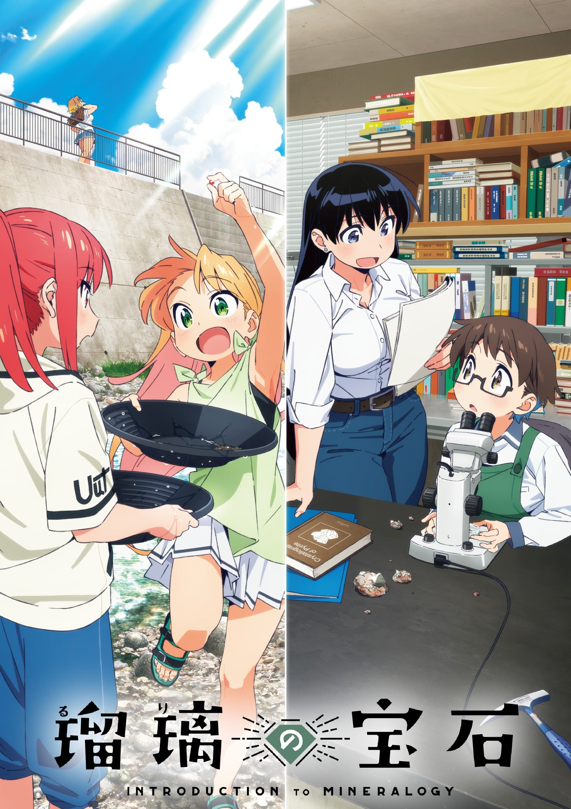
8.1「琉璃的宝石」（2025）是一部TV，由藤井慎吾执导，制作スタジオバインド，类型包括日常、治愈、百合，评分8.1，在本站出现在8份片单中，例如2025年夏季新番推荐、高分日漫推荐、高分TV动画推荐。页面只做片单对照，不提供播放。最喜欢闪亮亮事物的女高中生──谷川瑠璃，有天听说「可以靠自己采到水晶！」而为了寻找水晶前往山中。她在山里遇见专攻矿物学的女研究生──荒砥凪，于是两人决定一同采集矿物。有时为了寻找水晶走在山中的道路，有时为了捡拾石榴石浸在溪水中，有时又为了寻。
#77夏目友人帐 叁
 8.1
8.1「夏目友人帐 叁」（2011）是一部TV，由大森貴弘执导，制作Brain's Base，类型包括治愈、奇幻、日常，评分8.1，在本站出现在6份片单中，例如高分日漫推荐、高分TV动画推荐、高分治愈系动漫推荐。页面只做片单对照，不提供播放。小さい頃から妖怪を見ることができた少年・夏目貴志。 彼は、祖母レイコが妖怪を子分とする証にその名を書かせた「友人帳」を継いで以来、妖怪達に追われる日々。 自称用心棒の妖怪・ニャンコ先生と共に、妖怪達にその名を返すことを決めた夏目は、さまざま。
#78别对映像研出手！
 8.1
8.1「别对映像研出手！」（2020）是一部TV，由湯浅政明执导，制作サイエンスSARU，类型包括校园、日常、搞笑，评分8.1，在本站出现在8份片单中，例如高分日漫推荐、高分TV动画推荐、高分热血动漫推荐。页面只做片单对照，不提供播放。高中1年级学生浅草绿，是强调“设定即生命”的动画迷。在素描本上描绘积累各种各样的想法，却因不能一个人行动做事而无法迈出走向动画制作的一步。对于浅草这种才能，拥有制片人气质的金森沙耶香很快注意到了。同时，得知同学兼新星读者模特的水崎燕，其实希。
#79悠哉日常大王 Repeat
 8.1
8.1「悠哉日常大王 Repeat」（2015）是一部TV，由川面真也执导，制作SILVER LINK.，类型包括日常、治愈、百合，评分8.1，在本站出现在7份片单中，例如高分日漫推荐、高分TV动画推荐、高分治愈系动漫推荐。页面只做片单对照，不提供播放。「旭丘分校」只有5名学生。 虽然年纪和性格都不相同，一起赏花，一起在河边玩耍，一起挖白薯，一起挖雪洞…… 一起度过春夏秋冬，享受着田间生活。 虽然在平淡的生活中可能并未察觉，不知不觉中，一起欢笑，一起流泪，心中变得温暖起来。 这样悠哉游哉的。
#80剧场版 魔法少女小圆 [后篇] 永远的物语
![剧场版 魔法少女小圆 [后篇] 永远的物语 2012 动漫海报](../covers/b44692.jpg) 8.1
8.1「剧场版 魔法少女小圆 [后篇] 永远的物语」（2012）是一部剧场版，由宮本幸裕执导，制作SHAFT，类型包括百合、战斗、治愈，评分8.1，在本站出现在9份片单中，例如高分日漫推荐、高分动画剧场版推荐、高分热血动漫推荐。页面只做片单对照，不提供播放。2011年11月10日，官方宣布制作三部剧场版的消息，包括对TV版进行修正重制的两部总集篇以及一部完全新作。 总集篇前篇《起始的物语》（始まりの物語）于2012年10月6日上映，全131分钟，对应TV前8话，但部分剧情有删减。 总集篇后篇《。
#81悠久之翼2
「悠久之翼2」（2008）是一部TV，由大沼心执导，制作SHAFT，类型包括恋爱、治愈、校园，评分8.1，在本站出现在7份片单中，例如高分日漫推荐、高分TV动画推荐、高分恋爱动漫推荐。页面只做片单对照，不提供播放。ef2动画将以「ef - the latter tale.」为主线陈述， 平行描写两个苦涩的恋爱故事， 饱富抒情性，相互融合的两个恋爱故事。 能听到吗？ ——那真实的旋律……。
#82剧场版 吹响吧！上低音号～想要传达的旋律～
「剧场版 吹响吧！上低音号～想要传达的旋律～」（2017）是一部剧场版，由小川太一执导，制作京都动画，类型包括音乐、校园、百合，评分8.1，在本站出现在9份片单中，例如高分日漫推荐、高分动画剧场版推荐、高分治愈系动漫推荐。页面只做片单对照，不提供播放。吹奏楽コンクール全国大会出場を控えた、 私たち北宇治高校吹奏楽部。 うだるような夏の暑さが去り、秋の涼しげな気配が近づいたころ。 先輩が退部するかもしれない……。 私たちを襲った衝撃は大きく、不安をそう簡単に拭うことができなかった。 美人で。
#83奇诺之旅
 8.1
8.1「奇诺之旅」（2003）是一部TV，由中村隆太郎执导，制作A・C・G・T，类型包括奇幻、治愈、冒险，评分8.1，在本站出现在6份片单中，例如高分日漫推荐、高分TV动画推荐、高分治愈系动漫推荐。页面只做片单对照，不提供播放。旅行者奇诺（Kino）骑着她那会说话的摩托车汉密斯（Hermes）到各个国家旅行，在每个国家奇诺都只停留三天，在她体会了该国家人民的文化、风俗之后，她便离开并前往另一个国家…… --世界は美しくなんかない そして それ故に 美しい-- --。
#84高分少女 第二季
 8.1
8.1「高分少女 第二季」（2019）是一部TV，由山川吉樹执导，制作J.C.STAFF，类型包括恋爱、校园、搞笑，评分8.1，在本站出现在9份片单中，例如高分日漫推荐、高分TV动画推荐、高分恋爱动漫推荐。页面只做片单对照，不提供播放。喜欢游戏的少年，因为游戏与少女相遇。 对胜利的渴望，对技术的追求，对自尊的维护，在游戏中心孕育的友情与爱慕。依靠着来自朋友、家庭和游戏角色对内心的支撑，少年少女们也在不断的成长，只要继续坚持就能无限续关？ 春雄、晶、小春挑战最终关卡的结果究。
#85电脑线圈
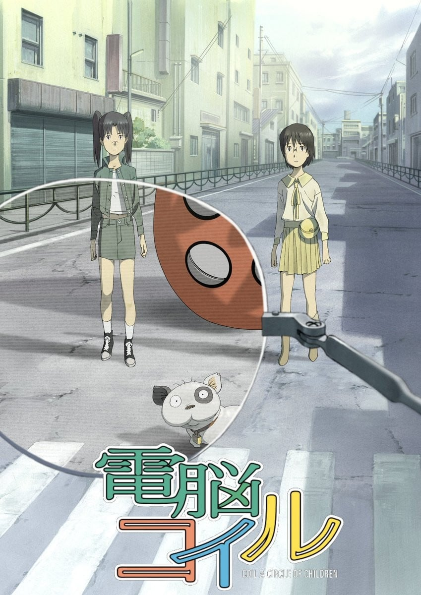
8.1「电脑线圈」（2007）是一部TV，由磯光雄执导，制作MADHOUSE，类型包括科幻、百合、治愈，评分8.1，在本站出现在7份片单中，例如高分日漫推荐、高分TV动画推荐、高分治愈系动漫推荐。页面只做片单对照，不提供播放。西元2026年，被称为“电脑眼镜”的眼镜型透明显示器已经在全世界普及了11年。在电脑内才存在的虚拟宠物、道具、或是互联网都可以戴上电脑眼镜来看到。 暑假结束时，优子（正确的念法为ゆうこ，Yūko，但通常被称为ヤサコ，Yasako）与双亲还有。
#86向山进发 Next Summit
「向山进发 Next Summit」（2022）是一部TV，由山本裕介执导，制作エイトビット，类型包括百合、日常、治愈，评分8.1，在本站出现在6份片单中，例如高分日漫推荐、高分TV动画推荐、高分治愈系动漫推荐。页面只做片单对照，不提供播放。继登上了标高197m的天览山后，葵和日向二人又登上了599m的高尾山、1786m的三峠山，不断创下新高。而后她们也登顶了那座回忆中的山——谷川岳。在周游关东名峰的过程中结识了可可奈、枫以及穗香等人，她们的户外活动也由此变得多姿多彩。而在丰富。
#87昭和元禄落语心中
「昭和元禄落语心中」（2016）是一部TV，由畠山守[小俣真一]执导，制作スタジオディーン，类型包括历史、治愈、剧情，评分8.1，在本站出现在5份片单中，例如高分日漫推荐、高分TV动画推荐、高分治愈系动漫推荐。页面只做片单对照，不提供播放。无法忘记在刑务所的落语慰问会中见到的大名人·八云的“死神”，出狱的与太郎径直前往寄席。拜倒在八云面前，成为他住所雇工以及弟子的与太郎，却发现在八云之处住着一位名叫小夏的女性。八云与小夏似乎有着他人无从触及的因缘……。
#88星空清理者
「星空清理者」（2003）是一部TV，由谷口悟朗执导，制作Sunrise，类型包括科幻、治愈、剧情，评分8.1，在本站出现在6份片单中，例如高分日漫推荐、高分TV动画推荐、高分治愈系动漫推荐。页面只做片单对照，不提供播放。主角星野八郎太(ハチマキ)是一个普通雇员。他的职业是太空船机师，工作是在太空站将名叫Debris的宇宙废物回收。他为了能够有一艘属于自己的太空船，每天和同僚ユーリ、フィー和新人タナベ一起努力工作着。工作了四年，今年 25 岁的他，正渐渐开始。
#89辉夜姬物语
 8.1
8.1「辉夜姬物语」（2013）是一部剧场版，由高畑勲执导，制作吉卜力，类型包括治愈、奇幻、历史，评分8.1，在本站出现在8份片单中，例如高分日漫推荐、高分动画剧场版推荐、高分治愈系动漫推荐。页面只做片单对照，不提供播放。《辉夜姬物语》（日语：かぐや姫の物語）是日本吉卜力工作室的动画导演高畑勋以日本古典文学《竹取物语》为蓝本所改编的动画电影。かぐや姬，汉译有不同写法，如“辉夜姬”、“赫映姬”、“竹取公主”等等。但据日本语言学家山田孝雄考证，此词源出汉语“赫奕。
#90蜡笔小新
 8.1
8.1「蜡笔小新」（1992）是一部TV，由本郷みつる（#1-#SP13）执导，制作シンエイ動画，类型包括搞笑、日常、治愈，评分8.1，在本站出现在6份片单中，例如高分日漫推荐、高分TV动画推荐、高分治愈系动漫推荐。页面只做片单对照，不提供播放。《蜡笔小新》（日语：クレヨンしんちゃん，英语：Crayon Shin-chan）是日本已故漫画家臼井仪人所著的漫画。由于蜡笔小新大受欢迎，动画版于1992年在朝日电视台播出。在日本，电视动画版自1992年4月13日开始，持续在朝日电视台播出。
#91海绵宝宝 第一季
 8.1
8.1「海绵宝宝 第一季」（1999）是一部TV，由Stephen Hillenburg执导，制作Nickelodeon Animation Studio，类型包括搞笑、日常、奇幻，评分8.1，在本站出现在7份片单中，例如高分美漫与动画电影、高分TV动画推荐、高分治愈系动漫推荐。页面只做片单对照，不提供播放。海绵宝宝是一块穿着短裤衬衫打领带、暴牙大眼睛的黄色海绵，他生活在太平洋中央一片名为比基尼的海底之下。这里风和日丽，平静祥和，生活无忧无虑。海绵宝宝住在一个菠萝形状的房子里，与之为伴的是他的宠物小蜗（蜗牛）。开朗、纯真的海绵宝宝有许多好朋友，。
#92凡人修仙传 第四季
 8.1
8.1「凡人修仙传 第四季」（2025）是一部OVA/WEB，由王裕仁执导，制作原力动画，类型包括战斗、热血、治愈，评分8.1，在本站出现在6份片单中，例如高分国漫推荐、高分OVA与WEB动画、高分热血动漫推荐。页面只做片单对照，不提供播放。外海风云篇（125-152集） 韩立于外海洞府闭关，公孙杏等人为寻灵药误闯其洞府，危急时刻被韩立所救。韩立得知外海形势大变，出关再寻突破机缘。探寻外海过程中，韩立再遇故人、潜入妖兽巢穴、智夺风雷翅、激战温天仁。在韩立反制温天仁之时，众人遭遇。
#93宇宙兄弟
「宇宙兄弟」（2012）是一部TV，由渡辺歩执导，制作A-1 Pictures，类型包括科幻、热血、治愈，评分8.1，在本站出现在7份片单中，例如高分日漫推荐、高分TV动画推荐、高分热血动漫推荐。页面只做片单对照，不提供播放。2006年7月9日，目击UFO的神奇经历让年少的南波兄弟约定要一起成为宇航员。 时光飞逝，到了2025年，日日人实现了儿时的梦想，将随同NASA的同行一同登上梦寐以求的月球。 另一方面，由于上司说了弟弟的坏话，让六太气愤而给了上司一记头锤，。
#94水星领航员 OVA ～ARIETTA～
 8.1
8.1「水星领航员 OVA ～ARIETTA～」（2007）是一部OVA/WEB，由佐藤順一执导，制作ハルフィルムメーカー[Hal Film Maker]，类型包括治愈、日常、奇幻，评分8.1，在本站出现在7份片单中，例如高分日漫推荐、高分OVA与WEB动画、高分治愈系动漫推荐。页面只做片单对照，不提供播放。梦见成为Prima的灯里，开始对自己早已熟悉了的日常风景开始感到困惑不安。即使梦醒之后这种不安仍然没有消除，灯里的脑子里慢慢出现了这样一个疑问：“为什么艾莉西亚会选择自己（进ARIA Company）呢？”为了解答灯里梦中的疑问，艾莉西亚开。
#95四叶游戏
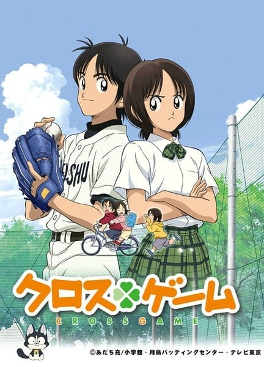
8.1「四叶游戏」（2009）是一部TV，由関田修执导，制作SynergySP，类型包括运动、恋爱、校园，评分8.1，在本站出现在7份片单中，例如高分日漫推荐、高分TV动画推荐、高分恋爱动漫推荐。页面只做片单对照，不提供播放。家里经营体育用品店的主人公・树多村光，与棒球用具店兼茶屋「三叶草」的月岛四姐妹是青梅竹马。顾家的长女・一叶，光最好的朋友・若叶，和光性格不合的三女・青叶，还有，活泼的四女・红叶。 小学5年级的夏季，若叶与光约定好去夏祭。但是，在约定的时间来。
#96Heart Catch 光之美少女！
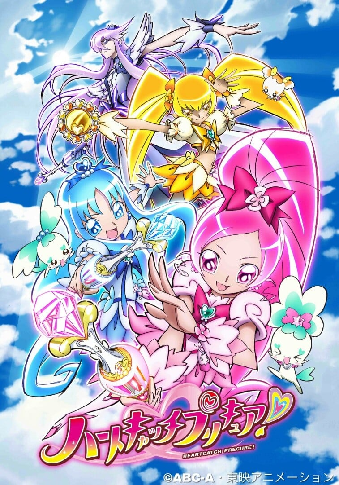
8.1「Heart Catch 光之美少女！」（2010）是一部TV，制作東映アニメーション，类型包括百合、战斗、治愈，评分8.1，在本站出现在7份片单中，例如高分日漫推荐、高分TV动画推荐、高分热血动漫推荐。页面只做片单对照，不提供播放。中学二年级的花咲蕾，在搬家的卡车上梦见心之大树被沙漠使徒袭击、Cure Moonlight被击败的场面。从镰仓移居到祖母所在的希望之花市、转入私立明堂学园的蕾希望借着搬家的机会改变内向的自己，却总被我行我素而爱管闲事的同学——来海绘理香牵着。
#97相聚一刻
 8.1
8.1「相聚一刻」（1986）是一部TV，由やまざきかずお（第1話 - 第26話）→安濃高志（第27話 - 第52話）→吉永尚之（第53話 - 第96話）执导，制作スタジオディーン，类型包括恋爱、爱情、搞笑，评分8.1，在本站出现在6份片单中，例如高分日漫推荐、高分TV动画推荐、高分恋爱动漫推荐。页面只做片单对照，不提供播放。贫穷的落榜生五代裕作住在一所名叫“一刻馆”的破旧公寓中复习备考。公寓中还住着长舌的家族主妇一濑太太、奸猾刻薄的神秘人物四谷以及泼辣开放的酒廊小姐朱美，他们日夜胡闹，令五代叫苦不迭。新来的年轻漂亮的管理员音无响子为五代带来了阳光。然而，五代优。
#98百变之星 不死鸟传说 ～蕾拉・汉密尔顿物语～
 8.1
8.1「百变之星 不死鸟传说 ～蕾拉・汉密尔顿物语～」（2006）是一部OVA/WEB，由佐藤順一执导，制作GONZO，类型包括百合、治愈、运动，评分8.1，在本站出现在7份片单中，例如高分日漫推荐、高分OVA与WEB动画、高分热血动漫推荐。页面只做片单对照，不提供播放。内容相当于TV版第53话，主角为蕾拉，描写蕾拉面对自我的心路历程。
#99小明和王猫
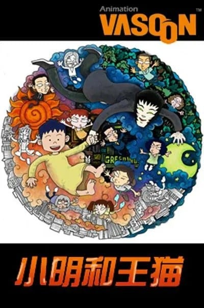
8.1「小明和王猫」（2000）是一部TV，由王川执导，制作青青树图文设计，承制：中国儿童电影制片厂，类型包括校园、日常，评分8.1，在本站出现在5份片单中，例如高分国漫推荐、高分TV动画推荐、高分治愈系动漫推荐。页面只做片单对照，不提供播放。全剧围绕二年级学生王小明及其精灵朋友“王猫”间的神奇故事展开。小明是一个普通家庭里的普通男孩，上小学二年级。小明的妈妈是国营商店的售货员，泼辣、爱美，好和别人比这比那，每天打电话为小明联系各种培训班，她的最大理想就是让小明出人头地。小明的爸。
#100马男波杰克6 下
 8.1
8.1「马男波杰克6 下」（2020）是一部TV，类型包括搞笑、日常、喜剧，评分8.1，在本站出现在4份片单中，例如高分美漫与动画电影、高分治愈系动漫推荐、必看搞笑动漫。页面只做片单对照，不提供播放。马男波杰克6 下。2020。搞笑、日常、喜剧。
#101探险活宝 第八季
 8.1
8.1「探险活宝 第八季」（2016）是一部TV，类型包括冒险、奇幻、搞笑，评分8.1，在本站出现在5份片单中，例如高分美漫与动画电影、高分治愈系动漫推荐、高分奇幻冒险动漫。页面只做片单对照，不提供播放。探险活宝 第八季。2016。冒险、奇幻、搞笑。
#102阿甘妙世界 第一季
 8.1
8.1「阿甘妙世界 第一季」（2011）是一部TV，由Mic Graves执导，类型包括搞笑、科幻、喜剧，评分8.1，在本站出现在6份片单中，例如高分美漫与动画电影、高分治愈系动漫推荐、高分科幻动漫推荐。页面只做片单对照，不提供播放。阿甘是一位魅力十足、生性乐天的12岁男孩。他做事往往因过分热衷而变成捣蛋，不过他还是会继续保持乐观的想法。阿甘拥有搞怪的冒险精神，甚麽奇怪的东西都要试试看。无论阿甘的计划最终结果如何，他都能迅速恢复心情，只可惜他从错误中学懂的，就只有如何製。
#103败犬女主太多了！
 8.0
8.0「败犬女主太多了！」（2024）是一部TV，由北村翔太郎执导，制作A-1 Pictures，类型包括恋爱、校园、搞笑，评分8.0，在本站出现在8份片单中，例如高分日漫推荐、高分TV动画推荐、高分恋爱动漫推荐。页面只做片单对照，不提供播放。没能赢得心上人恋情的女孩——“败犬女主”。 爱吃的青梅竹马系女主·八奈见杏菜。 活力充沛的运动系女主·烧盐柠檬。 怕生的小动物系女主·小鞠知花。 被有点缺憾的败犬女主——败女们环绕，新感觉、乱糟糟的败走系青春故事就此揭幕。 因失败而更加闪耀。
#104龙与虎
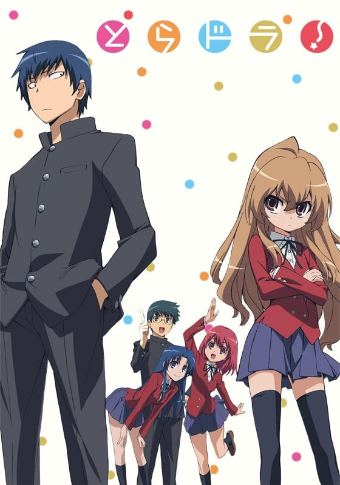
8.0「龙与虎」（2008）是一部TV，由長井龍雪执导，制作J.C.STAFF，类型包括校园、恋爱、日常，评分8.0，在本站出现在8份片单中，例如高分日漫推荐、高分TV动画推荐、高分恋爱动漫推荐。页面只做片单对照，不提供播放。因眼神凶恶而被班里同学看作不良少年的高须龙儿，进入了高中二年级，并幸运地和暗恋的少女栉枝实乃梨同班，对崭新的校园生活满怀希望。 开学典礼后龙儿与校内最恐怖的有“掌上老虎”之称的逢坂大河狭路相逢，周围人一同陷入了惊恐状态。然而他意外地发现，逢。
#105四月是你的谎言
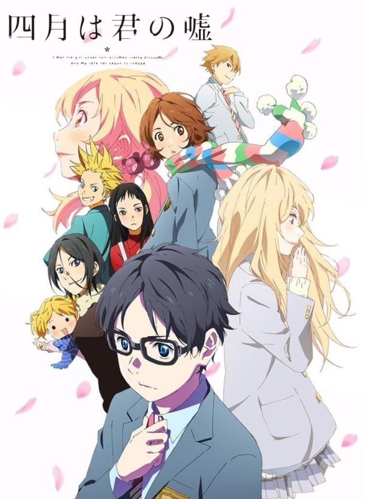
8.0「四月是你的谎言」（2014）是一部TV，由イシグロキョウヘイ执导，制作A-1 Pictures，类型包括恋爱、音乐、治愈，评分8.0，在本站出现在7份片单中，例如高分日漫推荐、高分TV动画推荐、高分恋爱动漫推荐。页面只做片单对照，不提供播放。有马公生的母亲一心想把有马培育成举世闻名的钢琴家，而有马也不负母亲的期望，在念小学时就赢得许多钢琴比赛的大奖。11岁的秋天，有马的母亲过世，从此他再也听不见自己弹奏的钢琴声，沮丧的他也只好放弃演奏，但在14岁那年，经由儿时玩伴的介绍，有马认。
#106凉宫春日的忧郁 2009
 8.0
8.0「凉宫春日的忧郁 2009」（2009）是一部TV，由团长辅佐：武本康弘执导，制作京都动画，类型包括校园、日常、奇幻，评分8.0，在本站出现在10份片单中，例如高分日漫推荐、高分TV动画推荐、高分治愈系动漫推荐。页面只做片单对照，不提供播放。“我对普通的人类没有兴趣。你们之中要是有外星人、未来人、异世界人或者超能力者的话，就尽管来找我吧！”这是围绕着被天上天下唯我独尊超积极任性女孩凉宫春日所指挥的阿虚和SOS团而展开的微妙的非日常校园故事。 或者说本作是：某女高中生想要和外星人。
#107寒蝉鸣泣之时
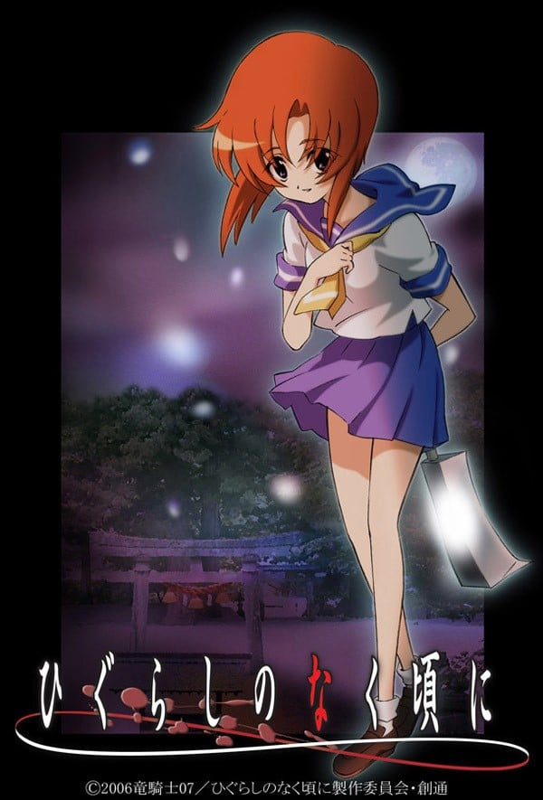
8.0「寒蝉鸣泣之时」（2006）是一部TV，由今千秋执导，制作スタジオディーン，类型包括悬疑、惊悚、治愈，评分8.0，在本站出现在6份片单中，例如高分日漫推荐、高分TV动画推荐、高分治愈系动漫推荐。页面只做片单对照，不提供播放。昭和58年的夏天，白天蝉的喧闹与傍晚茅蜩的合唱仿佛在欢迎今年早夏来临的6月，回荡在雏见泽。 雏见泽是远离都会的深山中的一个穷乡僻壤。 人口不足2千人的村子里，最近来了个从都会搬迁过来的少年前原圭一。性格开朗善于交际的圭一在学校里很快融入了周。
#108金牌得主
「金牌得主」（2025）是一部TV，由山本靖貴执导，制作ENGI，类型包括运动、热血、治愈，评分8.0，在本站出现在7份片单中，例如高分日漫推荐、高分TV动画推荐、高分热血动漫推荐。页面只做片单对照，不提供播放。作为滑冰者遭遇挫折的青年·明浦路司遇到了对花样滑冰世界充满憧憬的少女·结束祈。 在对冰场怀有执念的祈的推动下，司决定亲自担任教练。 随着祈逐渐展现出自己的才能，司也作为指导者不断成长。 两人组成搭档，目标是荣耀的“金牌得主”——！ [简介原。
#109回转企鹅罐
 8.0
8.0「回转企鹅罐」（2011）是一部TV，由幾原邦彦执导，制作Brain's Base，类型包括奇幻、治愈，评分8.0，在本站出现在6份片单中，例如高分日漫推荐、高分TV动画推荐、高分治愈系动漫推荐。页面只做片单对照，不提供播放。幾原邦彦所监督的原创动画，以高仓家的三兄妹——双子兄弟高仓冠叶和高仓晶马，以及体弱多病的妹妹高仓阳毬为中心展开的故事。 某天兄弟二人带着时日无多的妹妹去水族馆游玩，久未外出的阳毬在人群中忽然倒下气绝。之后在停尸间，在绝望的兄弟二人面前，死去。
#110悠哉日常大王
 8.0
8.0「悠哉日常大王」（2013）是一部TV，由川面真也执导，制作SILVER LINK.，类型包括日常、治愈、百合，评分8.0，在本站出现在7份片单中，例如高分日漫推荐、高分TV动画推荐、高分治愈系动漫推荐。页面只做片单对照，不提供播放。作品舞台是一个挂著“牛经过注意”的看板，公车不等上5个小时不会来的乡下农村，而主角一条萤因父亲工作调职的关系从东京迁居此地，故事即是描写萤与越谷姐妹及宫内姐妹渡过的日常光景。
#111夏目友人帐
 8.0
8.0「夏目友人帐」（2008）是一部TV，由大森貴弘执导，制作Brain's Base，类型包括治愈、奇幻、日常，评分8.0，在本站出现在6份片单中，例如高分日漫推荐、高分TV动画推荐、高分治愈系动漫推荐。页面只做片单对照，不提供播放。因为看得见妖怪而被人类疏远的女子夏目玲子，为了打发寂寞的日子，她向妖怪们发起挑战，并将败在自己手下的妖怪的名字写在一纸契约上，以此做为妖怪们成为自己属下的证据。 玲子的孙子夏目贵志得到了那些契约书所做成的“友人帐”，还继承了玲子的力量，能看。
#112辉夜大小姐想让我告白-初吻不会结束-
 8.0
8.0「辉夜大小姐想让我告白-初吻不会结束-」（2023）是一部TV，由畠山守(小俣真一)执导，制作A-1 Pictures，类型包括恋爱、搞笑、校园，评分8.0，在本站出现在8份片单中，例如高分日漫推荐、高分TV动画推荐、高分恋爱动漫推荐。页面只做片单对照，不提供播放。两人冻结的内心，在没有下雪的东京夜空渐渐融化。 爱情喜剧，在特别却又平凡的圣诞节，重新归来 — 副会长・四宫辉夜与学生会长・白银御行在秀知院学园的学生会相遇，两名天才在历经了漫长的恋爱头脑战后，终于向对方表达了自己的心意，在“奉心祭”首度接。
#113白兔糖
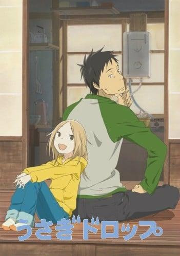
8.0「白兔糖」（2011）是一部TV，由亀井幹太执导，制作Production I.G，类型包括治愈、日常，评分8.0，在本站出现在5份片单中，例如高分日漫推荐、高分TV动画推荐、高分治愈系动漫推荐。页面只做片单对照，不提供播放。30岁的单身男大吉在外公的葬礼上遇到了从未谋面的6岁小女孩凛。而这个孩子竟然是外公的私生子，知道这一事实后的大吉十分震惊。亲戚们表面上在讨论收养凛的事宜，实际上却在互相推卸责任，实在看不下去的大吉毅然做出了收养的决定。充满正义感却又冒冒失失。
#114擅长捉弄的高木同学 第三季
 8.0
8.0「擅长捉弄的高木同学 第三季」（2022）是一部TV，由赤城博昭执导，制作シンエイ動画，类型包括恋爱、校园、日常，评分8.0，在本站出现在8份片单中，例如高分日漫推荐、高分TV动画推荐、高分恋爱动漫推荐。页面只做片单对照，不提供播放。“捉弄”缩短了二人的距离， 2022年想要守候的初恋就在这里。 在一所初中里，有一个叫做西片的男生，他时不时就会遭到同桌女生高木的捉弄。 西片每次思考对策，想要捉弄回高木，都会被高木看透。 于是西片每天都绞尽脑汁，想要扳回一城… 然而随着时。
#115狼的孩子雨和雪
 8.0
8.0「狼的孩子雨和雪」（2012）是一部剧场版，由細田守执导，制作MADHOUSE，类型包括治愈、奇幻、家庭，评分8.0，在本站出现在7份片单中，例如高分日漫推荐、高分动画剧场版推荐、高分治愈系动漫推荐。页面只做片单对照，不提供播放。女大学生的花，与一个在大学教室认识的男子结婚，并成为两个孩子的母亲。 不过，那个男子是“狼人”，姐姐“雪”和弟弟“雨”都是“狼的孩子”。即便如此，一家人还是在城市里过着幸福的生活。然而，在“雨”出生之后，男子却因为意外而去世。 对于丈夫去世。
#116续 夏目友人帐
 8.0
8.0「续 夏目友人帐」（2009）是一部TV，由大森貴弘执导，制作Brain's Base，类型包括治愈、奇幻、日常，评分8.0，在本站出现在6份片单中，例如高分日漫推荐、高分TV动画推荐、高分治愈系动漫推荐。页面只做片单对照，不提供播放。玲子的孙子夏目贵志从祖母的遗物中得到了那些契约书所做成的“友人帐”，同样他也能看到不会显现在人前的物体。可是，作为唯一继承了玲子血统的他却做出了一个重要的决定：将玲子夺过来的妖怪们的名字一一归还。伴随着归还名字的行动，贵志渐渐的认识了一个更。
#117辉夜大小姐想让我告白-初吻不会结束- 电影
 8.0
8.0「辉夜大小姐想让我告白-初吻不会结束- 电影」（2022）是一部剧场版，由畠山守(小俣真一)执导，制作A-1 Pictures，类型包括恋爱、校园、搞笑，评分8.0，在本站出现在9份片单中，例如高分日漫推荐、高分动画剧场版推荐、高分恋爱动漫推荐。页面只做片单对照，不提供播放。两人冻结的内心，在没有下雪的东京夜空渐渐融化。 爱情喜剧，在特别却又平凡的圣诞节，重新归来 — 副会长・四宫辉夜与学生会长・白银御行在秀知院学园的学生会相遇，两名天才在历经了漫长的恋爱头脑战后，终于向对方表达了自己的心意，在“奉心祭”首度接。
#118红猪
 8.0
8.0「红猪」（1992）是一部剧场版，由宫崎骏执导，制作吉卜力，类型包括奇幻、战争、战斗，评分8.0，在本站出现在10份片单中，例如高分日漫推荐、高分动画剧场版推荐、高分热血动漫推荐。页面只做片单对照，不提供播放。罗森是一战中意大利空军的王牌飞行员，但却被施了魔法变了一头猪。虽然变了猪，但罗森还是继续他的老本行，成了一位赏金猎人，专门打击在亚地里亚海空域作恶的空中劫匪。红猪侠一时威名远扬，令劫匪们闻风丧胆。匪徒们为了对付罗森，请来了超级飞行员卡基斯。
#119夏目友人帐 肆
 8.0
8.0「夏目友人帐 肆」（2012）是一部TV，由大森貴弘执导，制作Brain's Base，类型包括治愈、奇幻、日常，评分8.0，在本站出现在6份片单中，例如高分日漫推荐、高分TV动画推荐、高分治愈系动漫推荐。页面只做片单对照，不提供播放。小さい頃から妖怪を見ることができた少年・夏目貴志。 彼は、祖母レイコが妖怪を子分とする証にその名を書かせた「友人帳」を継ぎ、 自称用心棒の妖怪・ニャンコ先生と共に、妖怪達にその名を返す日々。 ようやく手に入れた大切な場所で、友人達との深まる。
#120歌牌情缘
「歌牌情缘」（2011）是一部TV，由浅香守生执导，制作MADHOUSE，类型包括治愈、恋爱、校园，评分8.0，在本站出现在8份片单中，例如高分日漫推荐、高分TV动画推荐、高分热血动漫推荐。页面只做片单对照，不提供播放。从小时候起，绫濑千早的理想就只有一个——辅佐姐姐绫濑千岁称为日本第一的模特，为了实现这个理想，千早可谓是不择手段。但是，一个名为绵谷新的转学生彻底打碎了她的幻觉。“不是自己的事就不算梦想！”被绵谷一语点醒的千早决定将理想转移到绵谷教会她的“。
#121剧场版 悠哉日常大王 Vacation
 8.0
8.0「剧场版 悠哉日常大王 Vacation」（2018）是一部剧场版，由川面真也执导，制作SILVER LINK.，类型包括日常、治愈、百合，评分8.0，在本站出现在8份片单中，例如高分日漫推荐、高分动画剧场版推荐、高分治愈系动漫推荐。页面只做片单对照，不提供播放。“旭丘分校”的学生只有5人。即使学年和性格都各不相同，也总是在四季变换中一同享受着乡村生活。某天，旭丘分校的众人在百货店的抽奖中抽到了特等奖冲绳旅行券。于是，大家利用暑假时间前往冲绳……。
#122银之匙 Silver Spoon 第二季
 8.0
8.0「银之匙 Silver Spoon 第二季」（2014）是一部TV，由出合小都美执导，制作A-1 Pictures，类型包括治愈、校园、日常，评分8.0，在本站出现在7份片单中，例如高分日漫推荐、高分TV动画推荐、高分治愈系动漫推荐。页面只做片单对照，不提供播放。累計発行部数が第８巻で1000万部を記録した人気コミック『銀の匙 Silver Spoon』を原作とするテレビアニメシリーズの第２期。第１期のスタッフ・キャストが再結集しているが、監督は第１期で副監督を務めた出合小都美が起用された。
#123偶像大师 剧场版 向着光辉的彼岸！
「偶像大师 剧场版 向着光辉的彼岸！」（2014）是一部剧场版，由錦織敦史执导，制作A-1 Pictures，类型包括音乐、百合、日常，评分8.0，在本站出现在7份片单中，例如高分日漫推荐、高分动画剧场版推荐、高分治愈系动漫推荐。页面只做片单对照，不提供播放。2013年2月10日「THE IDOLM@STER MUSIC FESTIV@L OF WINTER!!」にて情報解禁されたアニメ作品。 会場の幕張イベントホールでは号外が配布され、後日アニマス公式でPDF版が配信された。 スタッフは錦織敦。
#124小马宝莉：友谊就是魔法 第一季
 8.0
8.0「小马宝莉：友谊就是魔法 第一季」（2010）是一部TV，类型包括日常、治愈、奇幻，评分8.0，在本站出现在7份片单中，例如高分美漫与动画电影、高分TV动画推荐、高分治愈系动漫推荐。页面只做片单对照，不提供播放。2010年的10月10日，my little pony正式推出了G4“Friendship is Magic” ，比起前几代，这些小马造型更加可爱，更加Q,小马驹也在G4首次推出了羽翼独角兽，主要有7个人物，乡村小马Applejack，温柔。
#125怪诞小镇 第一季
 8.0
8.0「怪诞小镇 第一季」（2012）是一部TV，制作Disney Television Animation，类型包括奇幻、搞笑、日常，评分8.0，在本站出现在7份片单中，例如高分美漫与动画电影、高分TV动画推荐、高分治愈系动漫推荐。页面只做片单对照，不提供播放。暑假到了，双胞胎姐弟俩梅宝（克里斯汀·沙尔 Kristen Schaal 配音）和迪普（杰森·雷特 Jason Ritter 配音）被爸妈赶到一个偏僻小镇“重力泉”过暑假，在这里，他们的斯坦叔公经营着一家专门敲诈游客的旅游景点“神秘小屋”，。
#126鼹鼠的故事
 8.0
8.0「鼹鼠的故事」是一部TV，由Zdeněk Miler执导，制作Bratři v triku，类型包括治愈、搞笑，评分8.0，在本站出现在5份片单中，例如高分美漫与动画电影、高分TV动画推荐、高分治愈系动漫推荐。页面只做片单对照，不提供播放。《鼹鼠的故事》由捷克（原捷克斯洛伐克）的“Bratři v triku”工作室制作，是非常著名的动画片。电视台播放的《鼹鼠》系列大都是20世纪70年代的作品，有两部90年代出品的短片。这是一部深具自由灵动的生命气息、散发着快乐幽默的童真和意。
#127萩萩公主
 8.0
8.0「萩萩公主」（2002）是一部TV，由河本昇悟执导，制作ハルフィルムメーカー[Hal Film Maker]，类型包括奇幻、音乐、治愈，评分8.0，在本站出现在6份片单中，例如高分日漫推荐、高分TV动画推荐、高分治愈系动漫推荐。页面只做片单对照，不提供播放。当一只鸭子看见一个悲伤的王子在湖边跳舞的时候，她想令他再现笑容。这愿望把她变成了一个金冠学园的学生，鸭儿。在一个魔法垂饰的帮助下，她变身成芭蕾公主昭昭(千千)，一个有能力把王子的“心之碎片”送回王子身体的角色。到底是谁在幕后作出这种神秘的转。
#128乌龙派出所
 8.0
8.0「乌龙派出所」（1996）是一部TV，由やすみ哲夫→三沢伸→高松信司→高本宣弘→鴫野彰执导，制作ぎゃろっぷ，类型包括搞笑、日常、喜剧，评分8.0，在本站出现在5份片单中，例如高分日漫推荐、高分TV动画推荐、高分治愈系动漫推荐。页面只做片单对照，不提供播放。龟有公园前派出所隶属于东京都新葛饰署，原本只是一间平凡无奇的小派出所。但是自从大约20年前，一位举世无双的超级麻烦兼笑料制造者的警员两津勘吉被分派到此地之后，龟有这个小地方就因为他的存在，而一年365天、一天24小时都不停的有各种数不清的乌。
#129马男波杰克3
 8.0
8.0「马男波杰克3」（2016）是一部TV，类型包括搞笑、日常，评分8.0，在本站出现在5份片单中，例如高分美漫与动画电影、高分TV动画推荐、高分治愈系动漫推荐。页面只做片单对照，不提供播放。《一代骄马》获得巨大成功，波杰克终于找回感觉，然而说到私人生活，则处处一塌糊涂。
#130红发少女安妮
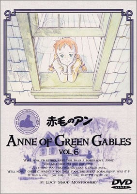
8.0「红发少女安妮」（1979）是一部TV，由高畑勲执导，类型包括剧情、日常、百合，评分8.0，在本站出现在3份片单中，例如高分治愈系动漫推荐、高分女性向动漫、轻小说改编动漫推荐。页面只做片单对照，不提供播放。住在“绿山墙农庄”的一对单身兄妹，马修和玛丽拉，因为年事渐高，想收养一个男孩帮忙农作。但是阴错阳差，孤儿院方面送来的竟是一个瘦小的红头发小孤女——安妮。这个脸上长满雀斑、有一头火红头发、活泼好动、爱说爱笑、爱幻想的少女，同马修兄妹那种沉稳拘。
#131探险活宝 第七季
 8.0
8.0「探险活宝 第七季」（2015）是一部TV，类型包括搞笑、百合、日常，评分8.0，在本站出现在6份片单中，例如高分美漫与动画电影、高分治愈系动漫推荐、高分奇幻冒险动漫。页面只做片单对照，不提供播放。探险活宝 第七季。2015。搞笑、百合、日常。
#132BanG Dream! It's MyGO!!!!!
「BanG Dream! It's MyGO!!!!!」（2023）是一部TV，由柿本広大执导，制作サンジゲン，类型包括音乐、百合、校园，评分7.9，在本站出现在5份片单中，例如高分治愈系动漫推荐、高分校园动漫推荐、高分女性向动漫。页面只做片单对照，不提供播放。「能一辈子和我搞乐队吗？」 在高一的春季即将结束之时，羽丘女子学园里人人都在参加乐队活动。 入学较晚的爱音，也为了尽快融入班级，急忙寻找乐队成员。 在寻找时，她发现被称为「羽丘的不可思议少女」的灯还没有参加乐队， 于是爱音不由得向她发出邀请。
#133秒速5厘米
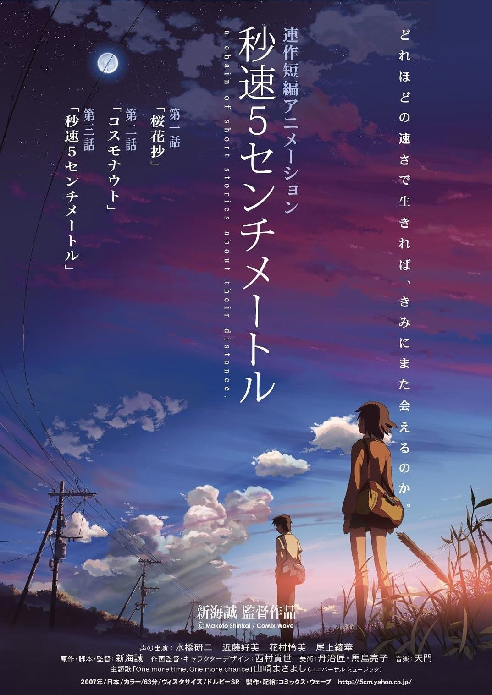
7.9「秒速5厘米」（2007）是一部剧场版，由新海诚执导，制作CoMix Wave Films，类型包括爱情、恋爱、治愈，评分7.9，在本站出现在8份片单中，例如高分动画剧场版推荐、高分恋爱动漫推荐、高分治愈系动漫推荐。页面只做片单对照，不提供播放。时间是1990年代的日本，远野贵树与筱原明里原本是同班同学的好朋友，自从小学毕业之后，两人都没有再见一次面。分隔两地的两个人，靠着书信往来保持联络，直到贵树知道即将跟随家人搬到鹿儿岛，距离明里更远的地方，于是两人约定了再见面的时间。计划好的。
#134辉夜大小姐想让我告白?～天才们的恋爱头脑战～
 7.9
7.9「辉夜大小姐想让我告白?～天才们的恋爱头脑战～」（2020）是一部TV，由畠山守(小俣真一)执导，制作A-1 Pictures，类型包括恋爱、搞笑、校园，评分7.9，在本站出现在6份片单中，例如高分恋爱动漫推荐、高分治愈系动漫推荐、高分校园动漫推荐。页面只做片单对照，不提供播放。人才云集的精英校·秀知院学园，在该校的学生会相遇的副会长·四宫辉夜与学生会长·白银御行。 无论任何人都认为十分般配的这两位天才，本以为很快就会喜结良缘，但碍于过高的自尊心而仍然未能告白！ “如何让对方告白”在这样的恋爱头脑战中穷尽智略的两人。
#135男子高中生的日常
 7.9
7.9「男子高中生的日常」（2012）是一部TV，由高松信司执导，制作Sunrise，类型包括搞笑、日常、校园，评分7.9，在本站出现在6份片单中，例如高分治愈系动漫推荐、高分校园动漫推荐、高分奇幻冒险动漫。页面只做片单对照，不提供播放。原作为山內泰延连载于《ガンガンONLINE》的漫画，是描写男子高中生的日常生活的轻喜剧作品。 在一个普通的城市里，一帮普通的男子高中生过着普通的日常生活。想像着机动战士和冒险故事，放学后交女朋友的方法，对女生的裙子充满幻想，在家讲恐怖鬼故事。
#136碧蓝之海
 7.9
7.9「碧蓝之海」（2018）是一部TV，由高松信司执导，制作ゼロジー，类型包括搞笑、日常、校园，评分7.9，在本站出现在6份片单中，例如高分恋爱动漫推荐、高分治愈系动漫推荐、高分校园动漫推荐。页面只做片单对照，不提供播放。北原伊织升入大学后，开始寄住在伊豆的叔父所经营的潜水用具店“Grand Blue”。传入耳中的波涛声、炽烈照射的太阳、开始一起生活的可爱表姐妹……青春的大学生活！ 这样的伊织所面临的却是——除了野球拳以外的猜拳一概不知的强壮男人们！！ 刚一。
#137月色真美
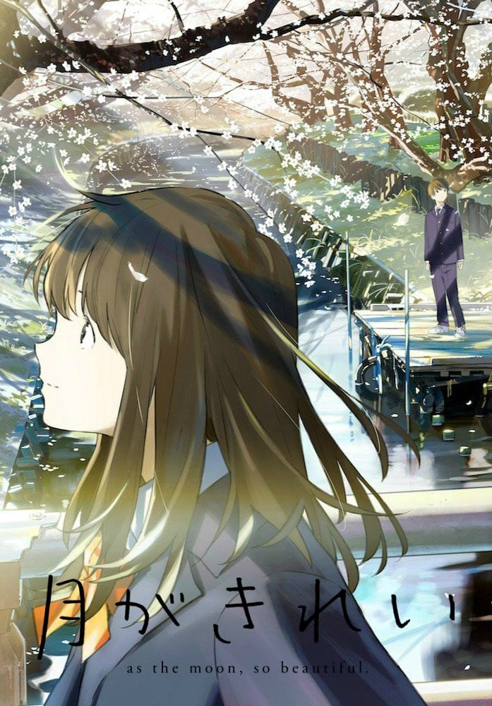
7.9「月色真美」（2017）是一部TV，由岸誠二执导，制作feel.，类型包括恋爱、校园、日常，评分7.9，在本站出现在5份片单中，例如高分恋爱动漫推荐、高分治愈系动漫推荐、高分校园动漫推荐。页面只做片单对照，不提供播放。茜与小太郎。 初三时第一次被分到同班，相识的两人。 同班同学、社团伙伴、教师、父母……与周围的关联，自己的成长。 在那个一边被变化与不安追着，一边慌慌张张地向前飞奔的季节之中，稚嫩而又令人眩目的青春期之恋。
#138玉子爱情故事
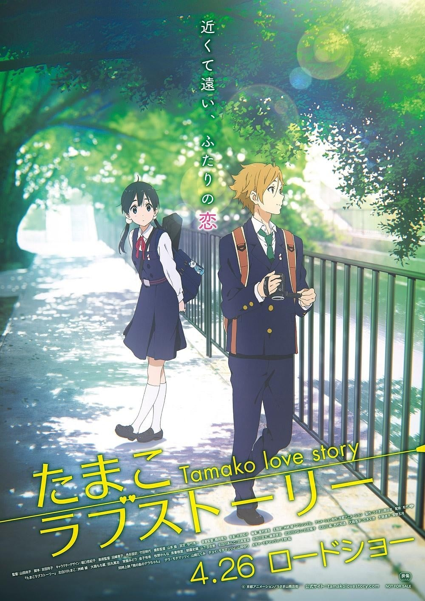
7.9「玉子爱情故事」（2014）是一部剧场版，由山田尚子执导，制作京都动画，类型包括恋爱、治愈、校园，评分7.9，在本站出现在8份片单中，例如高分动画剧场版推荐、高分恋爱动漫推荐、高分治愈系动漫推荐。页面只做片单对照，不提供播放。时已入春，已经进入高中三年级的北白川玉子仍然总是想着打糕的事情。 春天傍晚的放学路上，玉子好友四人组谈论着关于将来出路的事情。大家虽然对此感到不安，但似乎对将来的事情都有好好地考虑过。玉子也无意中说出自己将来想要继承家业。 同时，住在玉子家。
#139AIR
 7.9
7.9「AIR」（2005）是一部TV，由石原立也执导，制作京都动画，类型包括恋爱、奇幻、治愈，评分7.9，在本站出现在6份片单中，例如高分恋爱动漫推荐、高分治愈系动漫推荐、高分奇幻冒险动漫。页面只做片单对照，不提供播放。我的孩子，仔细听好 接下来我说的，是一件非常重要的事 已经忘了从何时开始 由上代讲给下代，代代传下来的故事 一个关于长久的旅程的故事…… 夏天，在靠近海边小小的街道上 一位青年从公共汽车站下车了 青年一直在旅行中 这样的小镇他无心久留 在赚。
#140来自深渊 深沉灵魂的黎明
 7.9
7.9「来自深渊 深沉灵魂的黎明」（2020）是一部剧场版，由小島正幸执导，制作KINEMA CITRUS，类型包括奇幻、冒险、治愈，评分7.9，在本站出现在7份片单中，例如高分动画剧场版推荐、高分热血动漫推荐、高分治愈系动漫推荐。页面只做片单对照，不提供播放。这个各角落都被探索殆尽的世界，只剩唯一仅存的秘境——大洞穴「阿比斯」。在这个会延伸到哪里不得而知，且深不见底的巨大纵向洞穴中，除了栖息着各种奇奇怪怪的生物之外，还藏有现今人类制作不出来的珍贵遗物。 「阿比斯」处处不可思议的景象，让人们为之着。
#141人类衰退之后
 7.9
7.9「人类衰退之后」（2012）是一部TV，由岸誠二执导，制作AIC ASTA，类型包括治愈、奇幻、日常，评分7.9，在本站出现在5份片单中，例如高分治愈系动漫推荐、高分奇幻冒险动漫、必看搞笑动漫。页面只做片单对照，不提供播放。世界的人口因为不明原因而急降，逐渐步出历史的舞台，取而代之的是一种平均身高只有10公分、三头身的妖精。妖精的平均身高只有10公分，三头身的妖精们却拥有高度的智慧，而且非常喜欢吃糖果点心。主人公作为最后一届的毕业生毕业之后就回到故乡樟树之里去。
#142悠久之翼
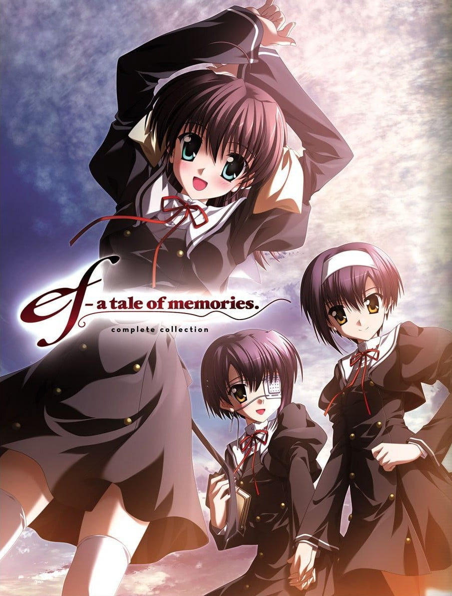
7.9「悠久之翼」（2007）是一部TV，由大沼心执导，制作SHAFT，类型包括校园、恋爱、治愈，评分7.9，在本站出现在5份片单中，例如高分恋爱动漫推荐、高分治愈系动漫推荐、高分校园动漫推荐。页面只做片单对照，不提供播放。这是曾经因遭受地震和大火侵袭，而一度坍塌的街道——音羽。 而这条街现在，犹如从欧洲的童话中飞出来一般，作为非常美丽的街景复苏了。 就像是，将那不吉祥的灾难的记忆掩盖起来一般……。 在这片重生的土地上，一个童话般的恋爱物语开始了…。
#143寻梦环游记
 7.9
7.9「寻梦环游记」（2017）是一部剧场版，由Lee Unkrich执导，制作Pixar Animation Studios，类型包括治愈、奇幻、音乐，评分7.9，在本站出现在8份片单中，例如高分美漫与动画电影、高分动画剧场版推荐、高分治愈系动漫推荐。页面只做片单对照，不提供播放。小男孩米格（安东尼·冈萨雷斯 Anthony Gonzalez 配音）一心梦想成为音乐家，更希望自己能和偶像歌神德拉库斯（本杰明·布拉特 Benjamin Bratt 配音）一样，创造出打动人心的音乐，但他的家族却世代禁止族人接触音乐。米格。
#144高分少女
 7.9
7.9「高分少女」（2018）是一部TV，由山川吉樹执导，制作J.C.STAFF，类型包括恋爱、搞笑、校园，评分7.9，在本站出现在7份片单中，例如高分恋爱动漫推荐、高分治愈系动漫推荐、高分校园动漫推荐。页面只做片单对照，不提供播放。去和比我更强的GIRL相见——。 “多边形”？那是啥？能吃吗？就在这种曾是2D全盛期的古早格斗游戏热潮到来的1991年。 在不良、阿宅、上班族蔓延的市郊游戏中心，她凛然地坐在那里——。 通过主人公春雄描绘的“90年代街机恋爱喜剧”！。
#145幸运星 OVA
 7.9
7.9「幸运星 OVA」（2008）是一部OVA/WEB，由武本康弘执导，制作京都动画，类型包括搞笑、日常、校园，评分7.9，在本站出现在8份片单中，例如高分OVA与WEB动画、高分治愈系动漫推荐、高分校园动漫推荐。页面只做片单对照，不提供播放。2007年的热门动画《幸运星》以OVA形式推出了续篇。御宅族女孩泉此方、性格迥异的柊家姐妹、经常考虑问题不周到的高良美幸，四位女孩又要开始新的故事了。 小狗Cherry的奇怪举动搞得大家哭笑不得；与老师一起玩网络游戏引出了话题大讨论；姐姐柊。
#146剧场版 魔法少女小圆 [前篇] 起始的物语
![剧场版 魔法少女小圆 [前篇] 起始的物语 2012 动漫海报](../covers/b25833.jpg) 7.9
7.9「剧场版 魔法少女小圆 [前篇] 起始的物语」（2012）是一部剧场版，由宮本幸裕执导，制作SHAFT，类型包括百合、战斗、奇幻，评分7.9，在本站出现在8份片单中，例如高分动画剧场版推荐、高分热血动漫推荐、高分治愈系动漫推荐。页面只做片单对照，不提供播放。2011年11月10日，官方宣布制作三部剧场版的消息，包括对TV版进行修正重制的两部总集篇以及一部完全新作。 总集篇前篇《起始的物语》（始まりの物語）于2012年10月6日上映，全131分钟，对应TV前8话，但部分剧情有删减。 总集篇后篇《。
#147银之匙 Silver Spoon
 7.9
7.9「银之匙 Silver Spoon」（2013）是一部TV，由伊藤智彦执导，制作A-1 Pictures，类型包括治愈、搞笑、校园，评分7.9，在本站出现在5份片单中，例如高分治愈系动漫推荐、高分校园动漫推荐、必看搞笑动漫。页面只做片单对照，不提供播放。大虾夷农业高等学校（通称：虾夷农高）是一所坐落于北海道的农业高中，校内学生多为以将从事农业当作目标的农家子女。这所拥有在全日本所有高中中最多的占地面积，被北海道壮丽的大自然和乡村风情环抱的虾夷农高，在新学年里迎来了一位特殊的学生——八轩勇吾。
#148侧耳倾听
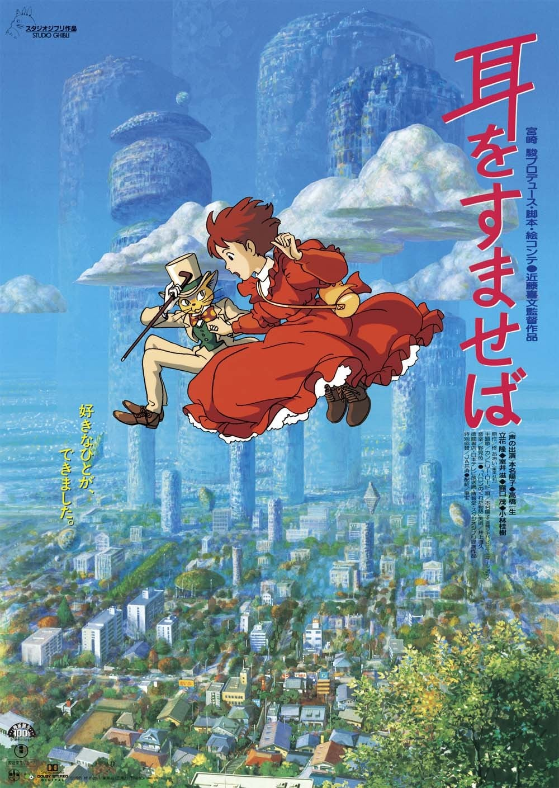
7.9「侧耳倾听」（1995）是一部剧场版，由近藤喜文执导，制作吉卜力，类型包括治愈、恋爱、校园，评分7.9，在本站出现在8份片单中，例如高分动画剧场版推荐、高分恋爱动漫推荐、高分治愈系动漫推荐。页面只做片单对照，不提供播放。讲述主人公──初中女生月岛雫爱好阅读，一天他在所借的几本图书的图书卡上留意到一个总比她早借得该书阅读的人─天泽圣司。与她及后与天泽本人遇上的经历，与一次跟天泽家的胖家猫的跟踪结缘下到达天泽在半山山丘的家，从此展开了月岛与天泽的一段感情与相互。
#149娜娜
「娜娜」（2006）是一部TV，由浅香守生执导，制作MADHOUSE，类型包括恋爱、音乐、治愈，评分7.9，在本站出现在5份片单中，例如高分恋爱动漫推荐、高分治愈系动漫推荐、高分女性向动漫。页面只做片单对照，不提供播放。娜娜本来是与本城莲同属于叫做Black Stones的乐团之中。但本城莲其后受邀到东京加入日本流行乐坛上的新兴巨星Trapnest乐团当吉他手。此时，娜娜认为和莲一起生活不是自己人生的全部，因此她放弃身为女人的幸福流泪与莲分手，为争一口气留。
#150妖精森林的小不点
 7.9
7.9「妖精森林的小不点」（2018）是一部TV，由安藤正臣执导，制作ラルケ，类型包括治愈、日常、奇幻，评分7.9，在本站出现在5份片单中，例如高分治愈系动漫推荐、高分奇幻冒险动漫、高分女性向动漫。页面只做片单对照，不提供播放。哈库梅伊与蜜珂析。 住在绿意盎然的森林中的，两位小小的女孩子。 在树洞里建造家、把树叶当做伞、坐在昆虫或鸟的背上…… 身高9厘米的话，这种事情也是能做得到的。 不去悄悄地偷看一下吗？ 她们那安详而愉快，十分可爱的生活。
#151魔卡少女樱 被封印的卡片
 7.9
7.9「魔卡少女樱 被封印的卡片」（2000）是一部剧场版，由浅香守生执导，制作MADHOUSE，类型包括恋爱、奇幻、战斗，评分7.9，在本站出现在9份片单中，例如高分动画剧场版推荐、高分热血动漫推荐、高分恋爱动漫推荐。页面只做片单对照，不提供播放。封印的卡片是《魔卡少女樱》又名《百变小樱》或《库洛魔法使》《CardCaptor Sakura》的第2部剧场版，第1部没有名字，大家公认为《香港之旅》。《封印的卡片》紧接在TV版70集后，是整个故事的大结局（不过后面还有一部同时上映的剧场版。
#152高分少女 EXTRA STAGE
 7.9
7.9「高分少女 EXTRA STAGE」（2019）是一部OVA/WEB，由山川吉樹执导，制作J.C.STAFF，类型包括恋爱、搞笑、校园，评分7.9，在本站出现在8份片单中，例如高分OVA与WEB动画、高分恋爱动漫推荐、高分治愈系动漫推荐。页面只做片单对照，不提供播放。一切都是为了重要的人…… 为了让“此刻”闪耀，不是用语言而是用拳头说话。 青春的游戏三番胜负。 来吧，堂堂正正地一决胜负吧！。
#153×××HOLiC◆继
 7.9
7.9「×××HOLiC◆继」（2008）是一部TV，由水島努执导，制作Production I.G，类型包括奇幻、治愈、日常，评分7.9，在本站出现在6份片单中，例如高分治愈系动漫推荐、高分异世界动漫推荐、高分奇幻冒险动漫。页面只做片单对照，不提供播放。高中生，四月一日君寻在偶然的机缘下闯入闻名异世界的次元魔女，侑子的魔法商店。四月一日在此许下要剔除自身灵能力的愿望 ，因此变成魔法商店的长期工读生，而围绕在他身边的同学小葵、百目鬼也同样是特殊能力者。在这之后，分散在其它异世界国家的小樱，小。
#154来自深渊 漂泊之黄昏
 7.9
7.9「来自深渊 漂泊之黄昏」（2019）是一部剧场版，由小島正幸执导，制作KINEMA CITRUS，类型包括奇幻、冒险、治愈，评分7.9，在本站出现在7份片单中，例如高分动画剧场版推荐、高分热血动漫推荐、高分治愈系动漫推荐。页面只做片单对照，不提供播放。这个各角落都被探索殆尽的世界，只剩唯一仅存的秘境—大洞穴「阿比斯」。在这个会延伸到哪里不得而知，且深不见底的巨大纵向洞穴中，除了栖息着各种奇奇怪怪的生物之外，还藏有现今人类制作不出来的珍贵遗物。 追随身为伟大探窟家的母亲脚步，启程要前往阿比。
#155笑园漫画大王
 7.9
7.9「笑园漫画大王」（2002）是一部TV，由錦織博执导，制作J.C.STAFF，类型包括搞笑、校园、日常，评分7.9，在本站出现在5份片单中，例如高分治愈系动漫推荐、高分校园动漫推荐、必看搞笑动漫。页面只做片单对照，不提供播放。某天，班上转来了两个学生，一个是跳级生美滨千代，她拥有着和可爱外表完全不匹配的天才级智商，以及同智商完全不匹配的情商。另一个叫春日步，她倒是表里如一的迟钝和呆萌。很快，她们便和同学们打成了一片。泷野智人称阿智，争强好斗的同时，却有着意外的单。
#156少年同盟 2
「少年同盟 2」（2012）是一部TV，由神戸守执导，制作J.C.STAFF，类型包括治愈、校园、日常，评分7.9，在本站出现在5份片单中，例如高分恋爱动漫推荐、高分治愈系动漫推荐、高分校园动漫推荐。页面只做片单对照，不提供播放。我想无论多少年我们都一定会这样笑着的。 从幼儿园开始的青梅竹马，双胞胎兄弟，悠太、佑希和要、春。加上转校生橘千鹤，热闹的五人组形成了他们的校园生活。 在循环的季节中，欢笑、吃惊、恋爱，新的相遇也一定在等待着。 在无可替代的日常中，一点一点地。
#157悠哉日常大王 Nonstop OAD
 7.9
7.9「悠哉日常大王 Nonstop OAD」（2022）是一部OVA/WEB，由川面真也执导，制作SILVER LINK.，类型包括日常、治愈、百合，评分7.9，在本站出现在6份片单中，例如高分OVA与WEB动画、高分治愈系动漫推荐、必看搞笑动漫。页面只做片单对照，不提供播放。TVアニメ3期の新作OADを収録した豪華特装版が登場！ 特装版はアニメ未収録の原作エピソードとオリジナルストーリーからなる 『のんのんびより のんすとっぷ』の第13話を収録したBlu-rayディスクを同梱！。
#158交响情人梦Finale
 7.9
7.9「交响情人梦Finale」（2010）是一部TV，由今千秋执导，制作J.C.STAFF，类型包括音乐、恋爱、搞笑，评分7.9，在本站出现在5份片单中，例如高分恋爱动漫推荐、高分治愈系动漫推荐、必看搞笑动漫。页面只做片单对照，不提供播放。二之宫知子创作的漫画作品「交响情人梦」已于10月完满落幕，这部以古典音乐为題材的漫画，因丰富动人的剧情而大受好评，并在全日本掀起了一股古典音乐热潮。在连载的7年间曾被改编成一部电视剧、两部TV动画，随着漫画的完结，相关制作方也决定推出第3季。
#159精灵守护者
 7.9
7.9「精灵守护者」（2007）是一部TV，由神山健治执导，制作Production I.G，类型包括奇幻、战斗、治愈，评分7.9，在本站出现在5份片单中，例如高分热血动漫推荐、高分治愈系动漫推荐、高分奇幻冒险动漫。页面只做片单对照，不提供播放。一次意外，女保镖巴鲁萨救下了落水的第二皇子查克姆。以此为契机，受二皇妃的重托，她带着被视为遭“水妖”附体的查克姆逃离皇宫。为了躲避来自朝廷的追杀，二人在民间隐姓埋名，在这一段旅程中，他们也逐渐揭开了“水妖”背后的真相……。
#160回忆积木小屋
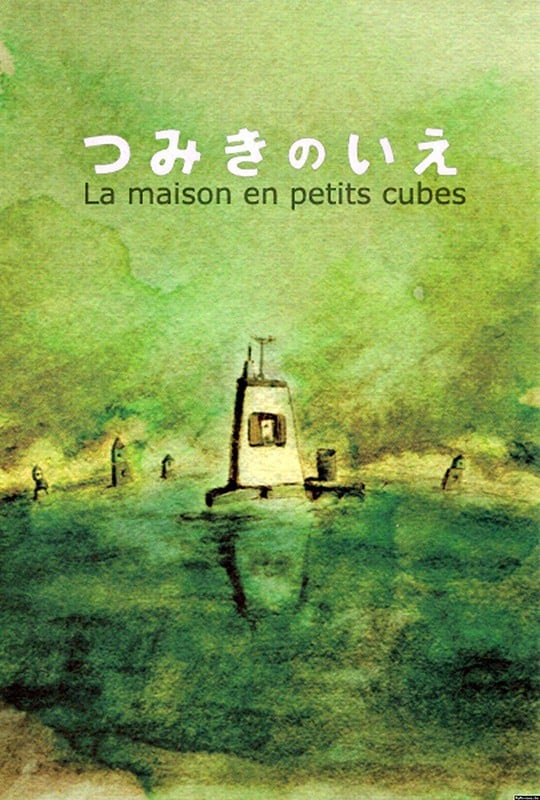
7.9「回忆积木小屋」（2008）是一部剧场版，由加藤久仁生执导，制作OH!プロダクション，类型包括治愈，评分7.9，在本站出现在6份片单中，例如高分美漫与动画电影、高分动画剧场版推荐、高分治愈系动漫推荐。页面只做片单对照，不提供播放。恍如世界末日一般，洪水一层席卷地球，世界变成一片汪洋，空旷而孤寂。一位老人孤独地生活在这个世上，或凭栏远眺，或看看电视消磨时光，几无可以交流之人。水位不断上涨，老人只能不断加盖房子，宛如摞积木一般，房子有如矗立在深海中的巨塔。在搬运家具时，。
#161天体战士
 7.9
7.9「天体战士」（2008）是一部TV，由岸誠二执导，制作AIC ASTA，类型包括喜剧、搞笑、治愈，评分7.9，在本站出现在4份片单中，例如高分治愈系动漫推荐、必看搞笑动漫、漫画改编动漫推荐。页面只做片单对照，不提供播放。《天体战士》，一部很适合拍特摄片的漫画，一个很白、很无聊、很猥琐、很脑残的故事……但是，依然有人很喜欢这个故事，于是也就当然有人敢毅然决定，要拍成动画片来非礼观众的眼球，荼毒读者的大脑了。 故事发生在神奈川县川崎市，企图征服世界的恶之怪人军。
#162小马宝莉：友谊就是魔法 第二季
 7.9
7.9「小马宝莉：友谊就是魔法 第二季」（2011）是一部TV，类型包括日常、奇幻、治愈，评分7.9，在本站出现在6份片单中，例如高分美漫与动画电影、高分治愈系动漫推荐、高分奇幻冒险动漫。页面只做片单对照，不提供播放。小马宝莉：友谊就是魔法 第二季。2011。日常、奇幻、治愈。
#163圣母在上 第3季
 7.9
7.9「圣母在上 第3季」（2006）是一部OVA/WEB，由ユキヒロマツシタ(福島宏之)执导，制作Studio DEEN(スタジオディーン)，类型包括百合、治愈、校园，评分7.9，在本站出现在6份片单中，例如高分OVA与WEB动画、高分治愈系动漫推荐、高分校园动漫推荐。页面只做片单对照，不提供播放。“真好啊，可以在我们家的别墅过暑假了……”一学期终于结束了，祐巳跟祥子有机会一起度过一个暑假，真是令人期待啊……。
#164天体战士 第2期
 7.9
7.9「天体战士 第2期」（2009）是一部TV，由松本剛彦执导，制作AIC ASTA，类型包括搞笑、治愈、日常，评分7.9，在本站出现在4份片单中，例如高分治愈系动漫推荐、必看搞笑动漫、漫画改编动漫推荐。页面只做片单对照，不提供播放。洼田诚创作的既囧又搞笑的漫画「天体战士」，故事讲述了一个怪人组织的地区指挥官班普将军，率领着超有礼貌邪恶组织弗罗夏姆，为了消灭敌人天体战士桑雷德，不断派遣旗下的怪人军团接二连三地向天体战士挑战……第2期将在秋季开播，就让本作囧无止境吧！！。
#165玛丽和马克思
「玛丽和马克思」（2009）是一部剧场版，由Adam Elliot执导，类型包括治愈、恋爱，评分7.9，在本站出现在7份片单中，例如高分美漫与动画电影、高分动画剧场版推荐、高分恋爱动漫推荐。页面只做片单对照，不提供播放。1976年，9岁的玛丽·黛西·丁格尔是澳大利亚墨尔本的一个小女孩，喜欢动画片“诺布利特”、甜炼乳和巧克力。玛丽的妈妈是个酒鬼，而在茶叶包装厂工作的父亲平日只喜欢制作鸟标本。孤独的玛丽没有朋友，某一天心血来潮给美国纽约市的马克思·杰瑞·霍罗威。
#166水星领航员 The BENEDIZIONE
 7.9
7.9「水星领航员 The BENEDIZIONE」（2021）是一部剧场版，由名取孝浩执导，制作J.C.STAFF，类型包括治愈、日常、百合，评分7.9，在本站出现在7份片单中，例如高分动画剧场版推荐、高分治愈系动漫推荐、高分科幻动漫推荐。页面只做片单对照，不提供播放。長い冬を迎えたネオ・ヴェネツィア。 寒空の下、合同練習をしていたアイ、あずさ、アーニャの3人は、 いつもと様子が違う晃の後をつけたのをきっかけに水先案内人ミュージアムを訪れることになりました。 出迎えた館長の明日香は、姫屋の伝説的なウンディ。
#167疯狂约会美丽都
 7.9
7.9「疯狂约会美丽都」（2003）是一部剧场版，由Sylvain Chomet执导，类型包括喜剧、治愈、剧情，评分7.9，在本站出现在7份片单中，例如高分美漫与动画电影、高分动画剧场版推荐、高分治愈系动漫推荐。页面只做片单对照，不提供播放。查宾是一个孤独的孩子，从小失去双亲的他每天跟苏沙婆婆相依为命。男孩有点自闭，喜欢跟小狗布鲁诺说话，喜欢独自骑单车。美丽都三姊妹的歌声陪伴他们过着平静日子。终于，婆婆看出了查宾单车方面的天分，要把他培养成才，于是风雨不改的陪孩子训练。 查宾终。
#168马男波杰克2
 7.9
7.9「马男波杰克2」（2015）是一部OVA/WEB，类型包括搞笑、剧情、日常，评分7.9，在本站出现在5份片单中，例如高分美漫与动画电影、高分OVA与WEB动画、高分治愈系动漫推荐。页面只做片单对照，不提供播放。波杰克的自传大获成功，并成为了热门电影主角，他已经准备好重新发力，迎接自己的事业和生活的第二春了。当然了，前提是他自己不要乱搞。
#169大～集合！小魔女DoReMi
 7.9
7.9「大～集合！小魔女DoReMi」（2001）是一部TV，类型包括搞笑、治愈、校园，评分7.9，在本站出现在5份片单中，例如高分治愈系动漫推荐、高分校园动漫推荐、高分奇幻冒险动漫。页面只做片单对照，不提供播放。升上五年级后，被取消魔女资格的DoReMi等人，还是一直在魔法堂花店工作。另一方面，女王向12位元老院成员说明，尽管DoReMi等人的水晶球破碎了，但考量到她们的巨大贡献，希望让四人恢复为魔女身份。此事在元老院中发生激辩，虽然有魔女哈特等人。
#170马男波杰克4
 7.9
7.9「马男波杰克4」（2017）是一部TV，类型包括搞笑、日常，评分7.9，在本站出现在4份片单中，例如高分美漫与动画电影、高分治愈系动漫推荐、必看搞笑动漫。页面只做片单对照，不提供播放。在波杰克与自我厌恶和失败较劲的同时，托德正帮助花生酱先生竞选加州州长，而戴安在一个美臀博客找到了工作。
#171大雄与奶奶的回忆
 7.9
7.9「大雄与奶奶的回忆」（2000）是一部剧场版，类型包括治愈、科幻、喜剧，评分7.9，在本站出现在6份片单中，例如高分动画剧场版推荐、高分治愈系动漫推荐、高分科幻动漫推荐。页面只做片单对照，不提供播放。ゴミ捨て場に、幼いころにお気に入りだったクマのぬいぐるみ（以下、クマちゃん）が出されているのをたまたま見つけたのび太。つぎはぎだらけな上に今はボロボロのクマちゃんをのび太は持ち帰り、幼稚園児のときに死別したおばあちゃんがぬいぐるみを繕ってく。
#172马男波杰克5
 7.9
7.9「马男波杰克5」（2018）是一部TV，类型包括搞笑、日常、喜剧，评分7.9，在本站出现在4份片单中，例如高分美漫与动画电影、高分治愈系动漫推荐、必看搞笑动漫。页面只做片单对照，不提供播放。波杰克重返荧幕，主演凯洛琳公主制作的新侦探剧集《费尔伯特》。但他心中的恶魔也随之倾巢出动。
#173探险活宝 第六季
 7.9
7.9「探险活宝 第六季」（2014）是一部TV，类型包括奇幻、日常、冒险，评分7.9，在本站出现在4份片单中，例如高分美漫与动画电影、高分治愈系动漫推荐、高分奇幻冒险动漫。页面只做片单对照，不提供播放。探险活宝 第六季。2014。奇幻、日常、冒险。
#174莫莫
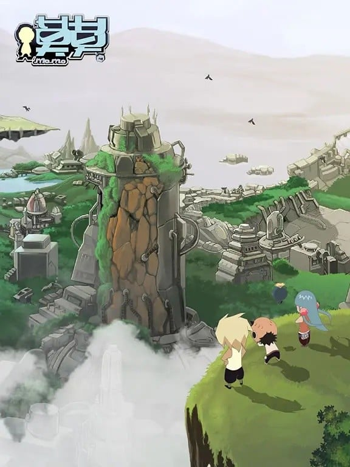
7.9「莫莫」是一部TV，由周俊执导，制作漫想族(漫想族文化) 制作，类型包括治愈、科幻，评分7.9，在本站出现在3份片单中，例如高分治愈系动漫推荐、高分科幻动漫推荐、原创动画推荐。页面只做片单对照，不提供播放。在一个人心越来越冷漠的架空未来世界里，每个人都一边怀念着过去温暖的人心，一边扔弃着自己温暖的心。城市在过去分为很多块，不同的城市里的人们所拥有最多的品德特质也不同，但是在架空的未来世界里，所有的城市都越来越相近，人们都像一块冰冷的钢铁。因为。
#175辉夜大小姐想让我告白～天才们的恋爱头脑战～
 7.8
7.8「辉夜大小姐想让我告白～天才们的恋爱头脑战～」（2019）是一部TV，由畠山守(小俣真一)执导，制作A-1 Pictures，类型包括恋爱、搞笑、校园，评分7.8，在本站出现在6份片单中，例如高分恋爱动漫推荐、高分治愈系动漫推荐、高分校园动漫推荐。页面只做片单对照，不提供播放。家庭背景与人品都很棒！！一大群有前途的秀才所聚集的秀知院学园！！在那里的学生会相遇的副会长·四宫辉夜与会长·白银御行原本应该是彼此受到了对方吸引…但想不到都过半年了却仍然什么事情也没发生！！最麻烦的是这两个自尊心超强、无法坦率的家伙，居然开。
#176月刊少女野崎君
 7.8
7.8「月刊少女野崎君」（2014）是一部TV，由山﨑みつえ执导，类型包括搞笑、恋爱、校园，评分7.8，在本站出现在7份片单中，例如高分恋爱动漫推荐、高分治愈系动漫推荐、高分校园动漫推荐。页面只做片单对照，不提供播放。高中女生佐仓千代好不容易提起勇气向同年级的野崎梅太郎告白，得到的却是野崎的亲笔签名，和“要不要来我家？”的邀请。佐仓虽然对意料之外的展开感到困惑，却还是带着期待来到野崎家，没想到等着她的却是漫画原稿，不知不觉间就顺着野崎的指示开始进行涂黑作。
#177JOJO的奇妙冒险 不灭钻石
 7.8
7.8「JOJO的奇妙冒险 不灭钻石」（2016）是一部TV，由津田尚克执导，制作david production，类型包括热血、战斗、奇幻，评分7.8，在本站出现在6份片单中，例如高分热血动漫推荐、高分治愈系动漫推荐、高分奇幻冒险动漫。页面只做片单对照，不提供播放。在埃及与宿敌DIO的死斗之后过了11年。1999年，空条承太郎为了与祖父乔瑟夫·乔斯达的私生子东方仗助见面，而来到了日本M县S市杜王町。但，仗助却持有与承太郎相同的特殊能力“替身”。之后，以承太郎的来访为开端，仿佛被吸引一般，新的“替身使”。
#178我心里危险的东西
 7.8
7.8「我心里危险的东西」（2023）是一部TV，由赤城博昭执导，制作シンエイ動画，类型包括恋爱、校园、日常，评分7.8，在本站出现在7份片单中，例如高分恋爱动漫推荐、高分治愈系动漫推荐、高分校园动漫推荐。页面只做片单对照，不提供播放。有着重度中二病的阴沉少年市川京太郎，因为很看不惯位于学校金字塔顶端的阳角美少女山田杏奈，每天都在妄想着要怎么结束掉她的性命。没想到在一次偶然情况下，京太郎撞见了杏奈不为人知的一面，爱吃零食的她常躲进京太郎的圣地图书室偷吃零食，就这样图书室变。
#179佐贺偶像是传奇
 7.8
7.8「佐贺偶像是传奇」（2018）是一部TV，由境宗久执导，类型包括搞笑、音乐、百合，评分7.8，在本站出现在5份片单中，例如高分治愈系动漫推荐、必看搞笑动漫、高分女性向动漫。页面只做片单对照，不提供播放。いつもの朝。いつもの音楽。いつもの自分。 7人の少女たちの安寧は、突如崩壊する。 死して蠢く、ゾンビによって…… 否応なく踏み込んだ世界、そこは“最高×最悪のゾンビワールド” 少女たちの願いは、たった一つ。 「私たち、生きたい。」 これは、。
#180穿越时空的少女
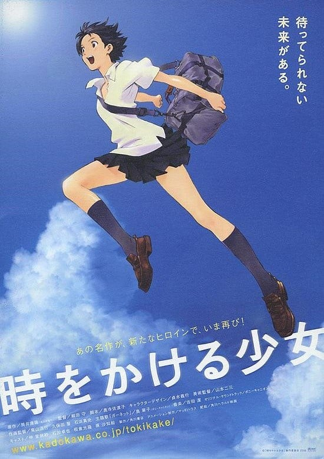
7.8「穿越时空的少女」（2006）是一部剧场版，由細田守执导，类型包括恋爱、校园、治愈，评分7.8，在本站出现在9份片单中，例如高分动画剧场版推荐、高分恋爱动漫推荐、高分治愈系动漫推荐。页面只做片单对照，不提供播放。17岁的绀野真琴是一个活泼跳脱的少女。在一次普通值日工作中，真琴不小心摔倒了，自此她发现自己拥有了穿越时空的能力。她兴奋不已，掌握了穿越时空的方法后，她经常用这个方法去解决生活中许多令她十分困扰的事。 喜欢棒球的真琴与同班的两名男生千昭与功。
#181蓦然回首
 7.8
7.8「蓦然回首」（2024）是一部剧场版，由押山清高执导，制作Studio DURIAN，类型包括治愈、剧情、百合，评分7.8，在本站出现在7份片单中，例如高分动画剧场版推荐、高分治愈系动漫推荐、高分奇幻冒险动漫。页面只做片单对照，不提供播放。在年级报纸上连载着四格漫画的小学四年级学生藤野。被同班同学高度评价、对自己的画工抱有绝对的自信的藤野，她在某天看到了不去上学的同级生京本于年级报纸上首次发表的4格漫画，并对其高超的画工感到震惊。从那时起，只顾着继续专心画漫画的藤野被完全无法。
#182哈尔的移动城堡
 7.8
7.8「哈尔的移动城堡」（2004）是一部剧场版，由宫崎骏执导，制作吉卜力，类型包括奇幻、恋爱、治愈，评分7.8，在本站出现在10份片单中，例如高分动画剧场版推荐、高分恋爱动漫推荐、高分治愈系动漫推荐。页面只做片单对照，不提供播放。继母因无力负担生活，将苏菲和她的两个姐姐都送到了制帽店去当学徒。两个姐姐很快先后就离开了制帽店去追寻各自的梦想，只有苏菲坚持了下来。一天，小镇旁边来了一座移动堡垒，传说堡垒的主人哈尔专吸取年轻姑娘的灵魂，所以小镇的姑娘都不敢靠近。 一个恶毒。
#183狼与香辛料
 7.8
7.8「狼与香辛料」（2008）是一部TV，由高橋丈夫执导，制作イマジン，类型包括治愈、奇幻、恋爱，评分7.8，在本站出现在6份片单中，例如高分恋爱动漫推荐、高分治愈系动漫推荐、高分奇幻冒险动漫。页面只做片单对照，不提供播放。到处旅行靠贩卖一些小商品为生的商人罗兰斯，从因为收获祭而沸腾的帕斯洛耶村回来后却发现自己的运货马车中貌似有什么东西在里面，罗兰斯把麦束拨开一看，里面却睡着一只长有狼耳和狼尾巴的少女。这位少女自称是“掌控丰收的贤狼——赫萝”，靠麦子为生的她如。
#184恶魔人 crybaby
 7.8
7.8「恶魔人 crybaby」（2018）是一部OVA/WEB，由湯浅政明执导，类型包括战斗、奇幻、治愈，评分7.8，在本站出现在6份片单中，例如高分OVA与WEB动画、高分热血动漫推荐、高分治愈系动漫推荐。页面只做片单对照，不提供播放。随着恶魔觉醒，人类世界陷入混乱。性格温柔的男孩与恶魔合体，在神秘好友飞鸟了的指引下，卷入一场残酷、堕落的对抗邪恶之战。
#185相合之物
 7.8
7.8「相合之物」（2022）是一部TV，由追崎史敏执导，制作エンカレッジフィルムズ（鵲），类型包括治愈、日常、搞笑，评分7.8，在本站出现在5份片单中，例如高分恋爱动漫推荐、高分治愈系动漫推荐、必看搞笑动漫。页面只做片单对照，不提供播放。为了追寻梦想来到东京的纳野和，得知了父亲住院的消息后，决定回到了阔别十年的老家，继承和式点心店·绿松。 但是店内已经有了另一位候补继承人：看板娘雪平一果，在纳野家一边寄居一边工作。 和被委以代替一果的父母的重任，但一果对曾经弃店的和怀有敌意。
#186终将成为你
「终将成为你」（2018）是一部TV，由加藤誠执导，制作TROYCA，类型包括百合、恋爱、校园，评分7.8，在本站出现在6份片单中，例如高分恋爱动漫推荐、高分治愈系动漫推荐、高分校园动漫推荐。页面只做片单对照，不提供播放。不明白与人恋爱的心情，为此感到烦恼的小糸侑，在初中毕业时被要好的男生告白，却无法给予回应。 她在此时邂逅的学生会成员七海灯子，不论被谁告白，都无法喜欢上对方。 与灯子感到共鸣的侑，将自己的烦恼坦诚相告，却反而从灯子那里听到了意想不到的话语—。
#187佐贺偶像是传奇 复仇
 7.8
7.8「佐贺偶像是传奇 复仇」（2021）是一部TV，由境宗久执导，制作MAPPA，类型包括搞笑、音乐、治愈，评分7.8，在本站出现在6份片单中，例如高分治愈系动漫推荐、必看搞笑动漫、高分女性向动漫。页面只做片单对照，不提供播放。2018年10月、オリジナルTVアニメ「ゾンビランドサガ」の放送が深夜にひっそりと開始。 2019年、佐賀県凱旋LIVEで続篇の制作を発表したが、 今日まで沈黙を続けてきた。 そして、沈黙は破られ2021年4月オリジナルTVアニメ「ゾンビラ。
#188擅长捉弄的高木同学 第二季
 7.8
7.8「擅长捉弄的高木同学 第二季」（2019）是一部TV，由赤城博昭执导，类型包括恋爱、校园、日常，评分7.8，在本站出现在6份片单中，例如高分恋爱动漫推荐、高分治愈系动漫推荐、高分校园动漫推荐。页面只做片单对照，不提供播放。某所初中学校，男生西片总是被邻座的女生高木同学捉弄。他为了对此反击而用尽计策，却总是被高木同学看透。 季节轮回，西片升入2年级，这一次他是否能够顺利反击高木同学呢……？。
#189街角魔族 2丁目
 7.8
7.8「街角魔族 2丁目」（2022）是一部TV，由桜井弘明执导，类型包括百合、日常、搞笑，评分7.8，在本站出现在6份片单中，例如高分治愈系动漫推荐、高分奇幻冒险动漫、必看搞笑动漫。页面只做片单对照，不提供播放。大人気ご町内日常ファンタジーが帰ってくる！ 魔族の力に目覚めて以来、闇の一族の封印を解くため ポンコツながらも戦ってきた主人公・シャミ子。 ライバルだったはずの魔法少女・桃とは、なぜか協力関係になってしまい、 町から姿を消した魔法少女の謎を。
#190狼与香辛料 第二季
 7.8
7.8「狼与香辛料 第二季」（2009）是一部TV，由高橋丈夫执导，制作Brain's Base／マーヴィージャック，类型包括奇幻、治愈、恋爱，评分7.8，在本站出现在5份片单中，例如高分恋爱动漫推荐、高分治愈系动漫推荐、高分奇幻冒险动漫。页面只做片单对照，不提供播放。从教会都市出发的商人罗伦斯与贤狼赫罗，为了收集赫罗的故乡约伊兹的情报，而来到了冬季有着大祭典的热闹城市库梅尔森。在这里两人与鱼商人阿玛蒂邂逅了，而且阿玛蒂对赫罗一见钟情，并迅速开始对她展开追求攻势。另一方面，罗伦斯却和赫罗之间的微妙感情却因。
#191金牌得主 第二季
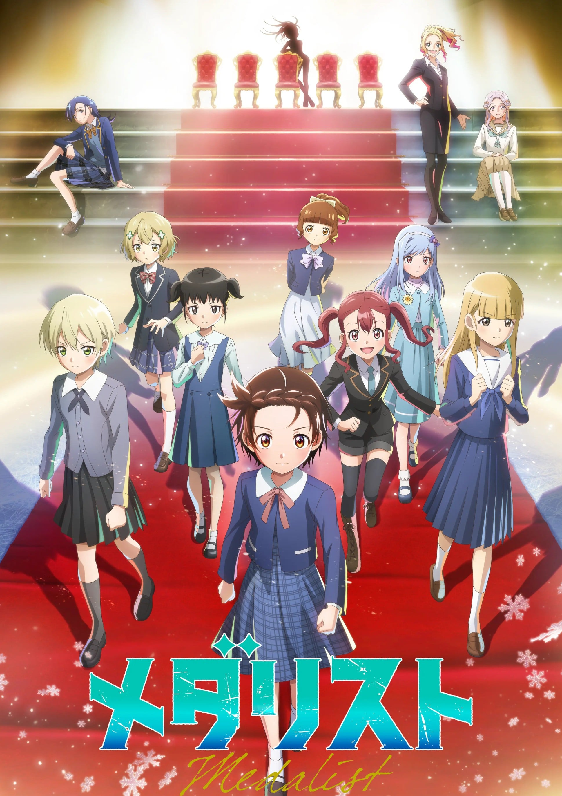
7.8「金牌得主 第二季」（2026）是一部TV，由山本靖貴执导，制作ENGI，类型包括运动、热血、治愈，评分7.8，在本站出现在6份片单中，例如2026年新番总表、高分热血动漫推荐、高分治愈系动漫推荐。页面只做片单对照，不提供播放。怀揣着各自对花样滑冰的执念和梦想，结束祈与明浦路司以「选手与教练」的身份相遇。 祈以成为荣耀的「金牌得主」为目标，在名港杯与西日本中小学生大赛中取得名次，通过等级测试后，终于获得了与「天才少女」狼嵜光同级竞技的资格。 接下来的目标，是决定了。
#192剧场版 空之境界 未来福音
 7.8
7.8「剧场版 空之境界 未来福音」（2013）是一部剧场版，由須藤友徳执导，类型包括奇幻、战斗、恋爱，评分7.8，在本站出现在9份片单中，例如高分动画剧场版推荐、高分热血动漫推荐、高分恋爱动漫推荐。页面只做片单对照，不提供播放。黑桐干也偶然遇到了能看见未来的少女濑尾静音。干也和静音愉快的在冷饮点聊天时，爆弹魔事件接连发生。赶去阻止事件再次发生的两仪式发现爆弹魔仓密目琉夏也拥有着一双能看到未来的眼睛。静音的未来和目琉夏的未来，似乎殊途同归，然而却有着决定性的不同。 。
#193魔女宅急便
 7.8
7.8「魔女宅急便」（1989）是一部剧场版，由宫崎骏执导，制作吉卜力，类型包括治愈、奇幻、冒险，评分7.8，在本站出现在8份片单中，例如高分动画剧场版推荐、高分治愈系动漫推荐、高分奇幻冒险动漫。页面只做片单对照，不提供播放。琪琪是一个13岁的实习魔女。依家族惯例，琪琪是时候离开她的家，到一个新的城市去展开独立的新生活，修行成为正式的魔女。 动画宣传用文宣： 虽然有时会不如意，但我很好。（おちこんだりもしたけれど、私はげんきです。）──由糸井重里提供。 虽然有失。
#194有顶天家族
 7.8
7.8「有顶天家族」（2013）是一部TV，由吉原正行执导，制作P.A.WORKS，类型包括奇幻、治愈、日常，评分7.8，在本站出现在5份片单中，例如高分治愈系动漫推荐、高分奇幻冒险动漫、必看搞笑动漫。页面只做片单对照，不提供播放。作品讲述原狸猫一族名门下鸭家的家主被人类下火锅后，不中用的下鸭四兄弟与其老母撑起家道中落的下鸭家的故事。老大矢一郎个性认真，但一到紧要关头就手足无措；老二变身为青蛙，不肯出井底；老三最爱看好戏，喜欢恶作剧；老幺胆子小，变身总是忘了藏尾巴。不。
#195再见绝望先生
 7.8
7.8「再见绝望先生」（2007）是一部TV，由新房昭之执导，制作SHAFT，类型包括搞笑、校园、日常，评分7.8，在本站出现在5份片单中，例如高分治愈系动漫推荐、高分校园动漫推荐、必看搞笑动漫。页面只做片单对照，不提供播放。故事发生在一个问题班集体——2年へ组中，全班32个学生全部都曾经留过级，被喻为是“绝望的学生们”。 担任该班班主任老师的是一个名叫糸色望的青年男子。 11月4日出生，在家排行老四，戴眼镜，喜欢穿和服，所有的装扮全都是怀旧风，喜欢读书，酷爱太。
#196罗小黑战记
 7.8
7.8「罗小黑战记」（2011）是一部OVA/WEB，由木头(MTJJ)执导，制作寒木春华，类型包括战斗、治愈、奇幻，评分7.8，在本站出现在9份片单中，例如高分国漫推荐、高分OVA与WEB动画、高分热血动漫推荐。页面只做片单对照，不提供播放。这是讲述一个少女养猫的平淡故事。 号称耗资三千元打造的中国动画癫疯之作。 故事主要讲述一个少女养猫而发生的种种离奇事件，整个作品画面风格很“中国式”。故事情节搞笑！目前正在连载中。
#197即使如此小镇依然转动
 7.8
7.8「即使如此小镇依然转动」（2010）是一部TV，制作SHAFT，类型包括搞笑、日常、治愈，评分7.8，在本站出现在5份片单中，例如高分治愈系动漫推荐、高分校园动漫推荐、必看搞笑动漫。页面只做片单对照，不提供播放。女高中生岚山步鸟，在丸子商店街的咖啡厅SEASIDE的做兼职服务生。有一天，店长宣告为了咖啡厅的繁盛要构想新策略。于是，最终敲定把咖啡厅改造成时下流行的女仆咖啡厅。但是，店里的相关人员没人了解女仆咖啡厅，最后就只让服务员换上女仆装就宣布重新。
#198Little Busters! 〜Refrain〜
「Little Busters! 〜Refrain〜」（2013）是一部TV，由山川吉樹执导，类型包括校园、治愈、恋爱，评分7.8，在本站出现在6份片单中，例如高分恋爱动漫推荐、高分治愈系动漫推荐、高分校园动漫推荐。页面只做片单对照，不提供播放。幼时曾深陷绝望深渊的直枝理树，与4位少年少女相遇了。 在那之后数年，理树作为Little Busters的一员，喧闹地过着快乐的每一天。 这样的时间能够一直持续就好了。理树所期望的只有这样。 某日，恭介突然表示要成立一支棒球队伍， 理树则开。
#199AIR 夏季篇
 7.8
7.8「AIR 夏季篇」（2005）是一部TV，由石原立也执导，制作京都动画，类型包括治愈、恋爱、奇幻，评分7.8，在本站出现在6份片单中，例如高分恋爱动漫推荐、高分治愈系动漫推荐、高分奇幻冒险动漫。页面只做片单对照，不提供播放。在电视动画系列准备播放最后动画结束的第十三话时，京都动画另外要求原本系列动画制作人员以及角色配音人员另外推出特别篇“AIR in Summer”，在《山路～mountain path～》（やまみち～mountain path～）与《天地～u。
#200×××HOLiC
 7.8
7.8「×××HOLiC」（2006）是一部TV，由水島努执导，制作Production I.G，类型包括奇幻、治愈、日常，评分7.8，在本站出现在4份片单中，例如高分治愈系动漫推荐、高分奇幻冒险动漫、漫画改编动漫推荐。页面只做片单对照，不提供播放。故事讲述能看见妖怪的“四月一日君寻”进入了别名为次元的魔女并自称伪名为“壹原侑子”所拥有的能够实现任何愿望的店。而当时四月一日正为自己能够看见妖怪而烦恼，而侑子说只要四月一日能付出对等的代价，就可以帮助四月一日实现“可以让你看不见妖怪，而且。
#201现视研
 7.8
7.8「现视研」（2004）是一部TV，由池端隆史执导，类型包括校园、日常、搞笑，评分7.8，在本站出现在5份片单中，例如高分治愈系动漫推荐、高分校园动漫推荐、必看搞笑动漫。页面只做片单对照，不提供播放。“现代视觉文化研究会”，简称“现视研”，是一个以研究动漫等综合性现代视觉文化为成立宗旨，但行吃喝玩乐之实的社团。主角笹原完士在成为大学新人后，跟同为一年级新生的重度御宅族高坂真琴一起加入了现视研。但在都是“御宅族”的社团活动中，高坂的青梅竹。
#202草莓棉花糖
 7.8
7.8「草莓棉花糖」（2005）是一部TV，由佐藤卓哉执导，类型包括治愈、百合、日常，评分7.8，在本站出现在5份片单中，例如高分治愈系动漫推荐、必看搞笑动漫、高分女性向动漫。页面只做片单对照，不提供播放。伸惠是短期大学的女大学生，妹妹千佳是普通的小学生。但这平凡的日子却总是充满麻烦，问题就在于千佳的同班同学，邻居美羽是个不折不扣的麻烦制造大王。经常从窗户跳入千佳房间的美羽，俨然成了这个家的一员。 千佳的好友茉莉是一个胆小又可爱的女孩，一天，。
#203俗・再见绝望先生
 7.8
7.8「俗・再见绝望先生」（2008）是一部TV，由新房昭之执导，制作SHAFT，类型包括搞笑、校园、日常，评分7.8，在本站出现在6份片单中，例如高分治愈系动漫推荐、高分校园动漫推荐、必看搞笑动漫。页面只做片单对照，不提供播放。主人公糸色 望[各位请看清楚，这是三个字糸色 望]在去学校赴任2年へ组班主任的途中开始。与其说糸色 望是赴任，还不如说是在赴任中途准备找棵树自杀来得贴切，所幸得到心中充满无限阳光的美少女相救姑且保全一命，于是这位班主任灰暗的教学生涯开始了…。
#204有顶天家族 第二季
 7.8
7.8「有顶天家族 第二季」（2017）是一部TV，由吉原正行执导，类型包括奇幻、日常、治愈，评分7.8，在本站出现在5份片单中，例如高分治愈系动漫推荐、高分奇幻冒险动漫、必看搞笑动漫。页面只做片单对照，不提供播放。人居市街内，狸猫匍地行，天狗翱长空。 居于京都下鸭神社糺之森的下鸭一家。 继承了离世的昔日狸猫界首领下鸭总一郎血脉的兄弟四人，和母亲快乐地生活着。 而以继承了父亲总一郎浓厚的“傻瓜之血”的三男矢三郎为中心，引发了一夜骚乱。 无论是下任的“伪。
#205罗小黑战记 众生之门篇
 7.8
7.8「罗小黑战记 众生之门篇」（2021）是一部OVA/WEB，由阿根(李根)执导，类型包括治愈、战斗、奇幻，评分7.8，在本站出现在8份片单中，例如高分国漫推荐、高分OVA与WEB动画、高分热血动漫推荐。页面只做片单对照，不提供播放。罗小黑战记 众生之门篇。2021。治愈、战斗、奇幻。
#206忏・再见绝望先生
 7.8
7.8「忏・再见绝望先生」（2009）是一部TV，由新房昭之执导，制作SHAFT，类型包括搞笑、校园、日常，评分7.8，在本站出现在5份片单中，例如高分治愈系动漫推荐、高分校园动漫推荐、必看搞笑动漫。页面只做片单对照，不提供播放。久米田康治自2005年开始于讲谈社发行的「周刊少年Magazine」上连载的漫画作品「忏・绝望先生」，其最大的特色是大量渗入对日本的社会现象及自我的嘲讽，并在作者久米田康治本身所具有的学识基础上，使用自行创作或特定的词汇，带出相关事件及笑点。
#207校园迷糊大王 二学期
 7.8
7.8「校园迷糊大王 二学期」（2006）是一部TV，由金﨑貴臣执导，类型包括搞笑、校园、恋爱，评分7.8，在本站出现在6份片单中，例如高分恋爱动漫推荐、高分治愈系动漫推荐、高分校园动漫推荐。页面只做片单对照，不提供播放。文化祭にクリスマス、天満の誕生日とイベント目白押しのアニメ第2期。天満に振られたと勘違いした播磨、ついにショックで国外逃亡…!?播磨の天満に対する気持ちを知った八雲は、彼を応援しようと心に決めるが、自分の気持ちにも気付き始めて…。
#208少年同盟
 7.8
7.8「少年同盟」（2011）是一部TV，由神戸守执导，类型包括治愈、校园、日常，评分7.8，在本站出现在5份片单中，例如高分治愈系动漫推荐、高分校园动漫推荐、必看搞笑动漫。页面只做片单对照，不提供播放。自少便认识的四位少年，有冷酷的双胞胎哥哥浅羽悠太、脱线的双胞胎弟弟浅羽佑希、学年首位的优等生班长冢原要、长着一张女生脸，个性温和的松冈春，这四名少年自少便组成一个属于他们的圈子，常常也因为一些很小或常给人忽略的不重要事而认真起来。在这四人少。
#209现视研2
 7.8
7.8「现视研2」（2007）是一部TV，由よしもときんじ执导，类型包括校园、日常、搞笑，评分7.8，在本站出现在6份片单中，例如高分恋爱动漫推荐、高分治愈系动漫推荐、高分校园动漫推荐。页面只做片单对照，不提供播放。シリーズ第2期（OVA版を含めれば3期）。全12話。スタッフは柳田と横手、声優など一部を除きOVA版から変更された。原作第27話「志・ミノタケ」から第42話「メンセツ」まで（作中時間で約1年3か月）の内容がアニメ化された。
#210神枪少女
「神枪少女」（2003）是一部TV，由浅香守生执导，类型包括战斗、科幻、治愈，评分7.8，在本站出现在6份片单中，例如高分热血动漫推荐、高分治愈系动漫推荐、高分科幻动漫推荐。页面只做片单对照，不提供播放。原為相田裕發行的同人誌漫畫，後來改到商業誌月刊Comic電擊大王上連載，至2009年7月總共發行了十一本單行本。此外共有兩期電視動畫。第一期在日本從2003年10月8日到2004年2月18日在富士電視台跟CS播出。第二期從2008年1月7日。
#211×××HOLiC 笼
 7.8
7.8「×××HOLiC 笼」（2010）是一部OVA/WEB，由水島努执导，制作Production I.G，类型包括奇幻、治愈，评分7.8，在本站出现在5份片单中，例如高分OVA与WEB动画、高分治愈系动漫推荐、高分奇幻冒险动漫。页面只做片单对照，不提供播放。故事开始于四月一日君寻和壹原侑子的命运相遇。自从遇到侑子后，四月一日遇到了形形色色的人和物，发生了许许多多的好事坏事，他自己也发生了很大的改变。然而店主人侑子留下了最后的愿望之后，却消失了。于是四月一日守在店里，等待有一天与她重逢。 这十年。
#212夏目友人帐 柒
 7.8
7.8「夏目友人帐 柒」（2024）是一部TV，由伊藤秀樹执导，类型包括治愈、奇幻、日常，评分7.8，在本站出现在5份片单中，例如高分治愈系动漫推荐、高分校园动漫推荐、高分奇幻冒险动漫。页面只做片单对照，不提供播放。心優しき友人たちとの、大切な日々── 美しく儚き、人と妖の物語。 小さい頃から妖怪を見ることができた少年・夏目貴志は、 祖母レイコの遺産「友人帳」を受け継ぎ、 自称用心棒のニャンコ先生と共に、 そこに名を縛られた妖怪たちに名を返す日々を送る。
#213画完这个再去死
「画完这个再去死」（2026）是一部TV，由赤城博昭执导，制作シンエイ動画，类型包括日常、校园、治愈，评分7.8，在本站出现在7份片单中，例如2026年夏季新番推荐、2026年新番总表、高分治愈系动漫推荐。页面只做片单对照，不提供播放。高一生安海相住在东京都离岛・伊豆王岛。 非常喜欢阅读漫画的她，因为某个契机，开始萌生「创作」漫画的念头… 少女踏出的漫画创作之路，前方等待着她的会是!? 熟悉却又陌生的漫画创作世界。孕育作品的苦涩与喜悦全都毫无保留地浓缩其中的漫画浪漫成长故。
#214相反的你和我 第二季
 7.8
7.8「相反的你和我 第二季」（2026）是一部TV，由長友孝和执导，类型包括恋爱、校园、搞笑，评分7.8，在本站出现在8份片单中，例如2026年夏季新番推荐、2026年新番总表、高分恋爱动漫推荐。页面只做片单对照，不提供播放。总是充满活力却在意周围目光的女孩 — 铃木，以及沉静但能坚定表达自己意见的男孩 — 谷。 这是一个由两个性格截然不同的人、彼此尊重、慢慢加深理解，并与朋友们一起度过校园生活的爱情喜剧！ [简介原文] いつも元気いっぱいだけど周りの目を気にし。
#215蜡笔小新：决一胜负！逆袭的机器人爸爸
 7.8
7.8「蜡笔小新：决一胜负！逆袭的机器人爸爸」（2014）是一部剧场版，由高橋渉执导，制作シンエイ動画，类型包括搞笑、治愈、科幻，评分7.8，在本站出现在7份片单中，例如高分动画剧场版推荐、高分治愈系动漫推荐、高分科幻动漫推荐。页面只做片单对照，不提供播放。美好的周末假期，野原新之助（矢岛晶子 配音）和爸爸广志（藤原启治 配音）一起去看机器人的科幻电影，走出电影后的父子俩兴奋地大玩合体游戏，谁知广志却不慎扭伤了腰。忍受不了老婆的碎碎念，广志去医院看病，可是周末医院休诊，父子俩只得来到公园休息，。
#216向阳素描×蜂窝
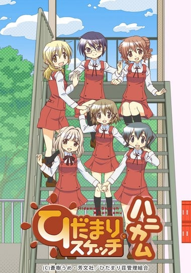
7.8「向阳素描×蜂窝」（2012）是一部TV，由新房昭之执导，制作SHAFT，类型包括治愈、百合、日常，评分7.8，在本站出现在5份片单中，例如高分治愈系动漫推荐、高分校园动漫推荐、高分女性向动漫。页面只做片单对照，不提供播放。蒼樹うめ原作、「ひだまりスケッチ」TVシリーズ第4作。 私立やまぶき高校の美術科に通うゆのは、 学校のまん前にある小さなアパート「ひだまり荘」で同級生の宮子や、 先輩のヒロと沙英、後輩の乃莉やなずなたちと、6人一緒に毎日を過ごす。 楽しいこ。
#217圣母在上 春
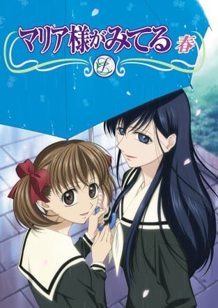
7.8「圣母在上 春」（2004）是一部TV，由ユキヒロマツシタ(福島宏之)执导，制作Studio DEEN(スタジオディーン)，类型包括百合、治愈、校园，评分7.8，在本站出现在5份片单中，例如高分治愈系动漫推荐、高分校园动漫推荐、高分女性向动漫。页面只做片单对照，不提供播放。继圣母在上第一季大受欢迎后，日方再接再厉，推出该动画的第2季，继续讲述淑女们在莉莉安优雅的生活。到底佑巳和祥子她们的关系会怎样发展？我们拭目以待。
#218圣母在上 第4季
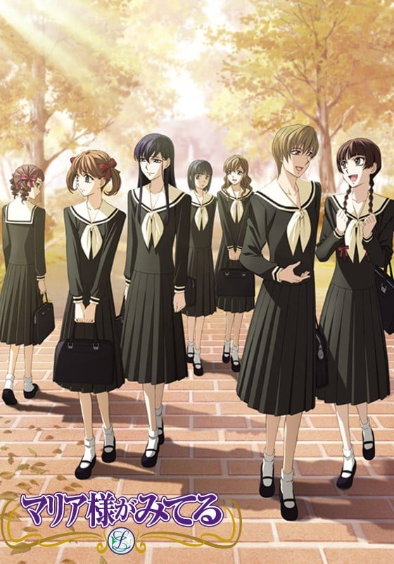
7.8「圣母在上 第4季」（2009）是一部TV，由加藤敏幸执导，类型包括百合、治愈、校园，评分7.8，在本站出现在5份片单中，例如高分治愈系动漫推荐、高分校园动漫推荐、高分女性向动漫。页面只做片单对照，不提供播放。在莉莉安女子学园，有一个传统，被称为该sœur系统（sœur在法文中解作“姊妹”），其中二或三年级的学生会给予一个低年级生一串念珠，而低年级生就会成为她的妹妹，身为姊姊的高年级生须承诺会照顾妹妹，并教导他们。 当故事开始时，福泽祐巳像其他学。
#219海绵宝宝 第二季
 7.8
7.8「海绵宝宝 第二季」（2000）是一部TV，由Stephen Hillenburg执导，类型包括搞笑、日常、治愈，评分7.8，在本站出现在6份片单中，例如高分美漫与动画电影、高分治愈系动漫推荐、高分奇幻冒险动漫。页面只做片单对照，不提供播放。The second season of the American animated television series SpongeBob SquarePants, created by Stephen Hillenburg, aired。
#220银魂 〜无论什么事开始虽然重要但伸个懒腰的话也不错〜
 7.8
7.8「银魂 〜无论什么事开始虽然重要但伸个懒腰的话也不错〜」（2009）是一部OVA/WEB，类型包括搞笑、日常、战斗，评分7.8，在本站出现在6份片单中，例如高分OVA与WEB动画、高分热血动漫推荐、高分治愈系动漫推荐。页面只做片单对照，不提供播放。春天晴空万里的一天，去赏花的万事屋的一行人，撞上了一样到那里去赏花的真选组。在赏花地点开始了万事屋和真选组之间的争斗，由于在有平民的地方动刀不好，所以就以“打打戴戴包剪锤”决胜负。因私怨而击溃近藤的妙，一上来就相互殴打的神乐和冲田，比试酒量。
#221小马宝莉：友谊就是魔法 第四季
 7.8
7.8「小马宝莉：友谊就是魔法 第四季」（2013）是一部TV，类型包括日常、奇幻、治愈，评分7.8，在本站出现在6份片单中，例如高分美漫与动画电影、高分治愈系动漫推荐、高分奇幻冒险动漫。页面只做片单对照，不提供播放。小马宝莉：友谊就是魔法 第四季。2013。日常、奇幻、治愈。
#222小马宝莉：友谊就是魔法 第五季
 7.8
7.8「小马宝莉：友谊就是魔法 第五季」（2015）是一部TV，类型包括日常、奇幻、百合，评分7.8，在本站出现在6份片单中，例如高分美漫与动画电影、高分治愈系动漫推荐、高分奇幻冒险动漫。页面只做片单对照，不提供播放。小马宝莉：友谊就是魔法 第五季。2015。日常、奇幻、百合。
#223魔术师
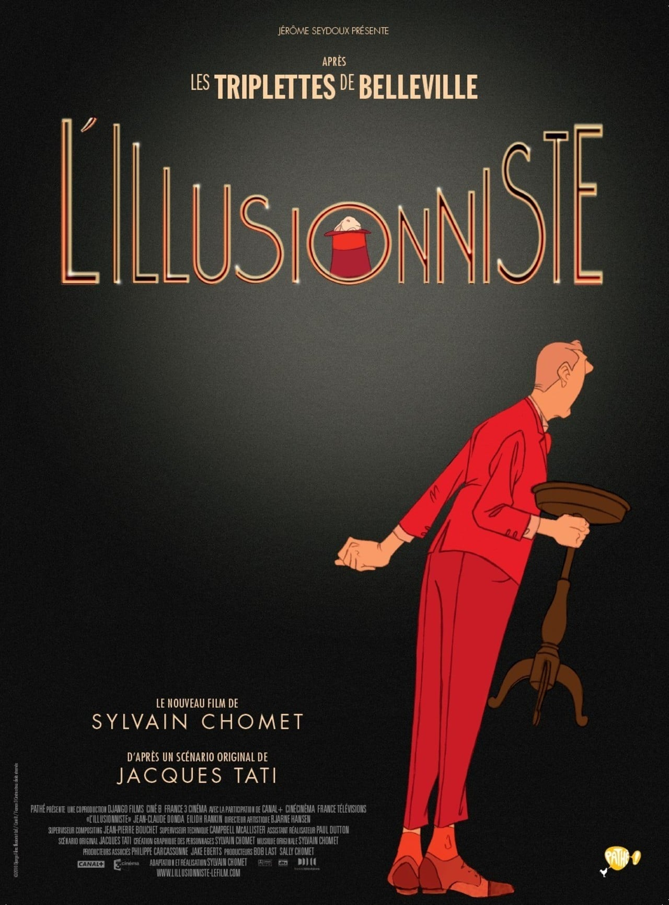
7.8「魔术师」（2010）是一部剧场版，由Sylvain Chomet执导，制作PATHE，类型包括治愈，评分7.8，在本站出现在5份片单中，例如高分美漫与动画电影、高分动画剧场版推荐、高分治愈系动漫推荐。页面只做片单对照，不提供播放。20世纪50年代末期，曾经风靡一时的剧场风云变幻，人们迷恋电视、迷恋摇滚，对于曾经伴随他们长大的各种杂耍则不再关注。他是一个经验丰富的魔术师，舞台上得体从容，现实中却不得不为了可怜的生活费而流转于各个表演场所，上至华贵的音乐厅，下至破落偏僻。
#224查理布朗和史努比
 7.8
7.8「查理布朗和史努比」（1983）是一部TV，类型包括搞笑、治愈、喜剧，评分7.8，在本站出现在4份片单中，例如高分美漫与动画电影、高分治愈系动漫推荐、必看搞笑动漫。页面只做片单对照，不提供播放。这是关于查理•布朗和他的小猎犬史努比，还有“花生帮”的朋友们之间的故事，围绕童年生活的种种快乐和烦恼而展开。每一个角色都有着不同的奇怪性格，有时候仿佛拥有超越他们年龄的智慧，让情节变得有趣而特别。查理•布朗、史努比和它的小鸟糊涂塌克、查理任。
#225POKÉTOON动画系列
 7.8
7.8「POKÉTOON动画系列」（2020）是一部OVA/WEB，由井上卓(1)执导，制作ダンデライオンアニメーションス(1)，类型包括奇幻、日常、治愈，评分7.8，在本站出现在4份片单中，例如高分OVA与WEB动画、高分治愈系动漫推荐、高分奇幻冒险动漫。页面只做片单对照，不提供播放。『POKÉTOON』（ポケトゥーン）は、2020年よりYouTubeチャンネル「ポケモン Kids TV」にて配信されているポケットモンスターのWebアニメシリーズ。 2020年6月5日に第1弾となる『ズルッグとミミッキュ』が、2021年5。
#226魔法之星爱美 蝉时雨
 7.8
7.8「魔法之星爱美 蝉时雨」（1986）是一部OVA/WEB，由安濃高志执导，类型包括日常、治愈、校园，评分7.8，在本站出现在5份片单中，例如高分OVA与WEB动画、高分治愈系动漫推荐、高分校园动漫推荐。页面只做片单对照，不提供播放。TVシリーズのダイジェスト映像15分とオリジナル映像45分で構成。オリジナルは成長した舞がTVシリーズの第12話と第13話の間に相当する夏の4日間を回想する形で描かれた。特別大きな事件は起こらず、舞と周辺の人々の日常が淡々と描かれ、全編を通。
#227花园墙外
 7.8
7.8「花园墙外」（2014）是一部TV，类型包括奇幻、治愈、音乐，评分7.8，在本站出现在4份片单中，例如高分美漫与动画电影、高分治愈系动漫推荐、高分奇幻冒险动漫。页面只做片单对照，不提供播放。CARTOON NETWORK出品 讲述了两兄弟在一片神秘的森林中迷失，并寻找回家的路的故事。
#228阿尔卑斯山的少女海蒂
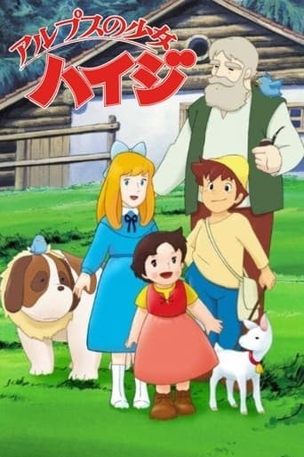
7.8「阿尔卑斯山的少女海蒂」（1974）是一部TV，由高畑勲执导，类型包括治愈、日常，评分7.8，在本站出现在3份片单中，例如高分治愈系动漫推荐、高分女性向动漫、轻小说改编动漫推荐。页面只做片单对照，不提供播放。海蒂自幼失去双亲，跟随姨母到处寄人篱下，海蒂飘泊四年后亦遭姨母遗弃，被逼要到山上投靠性情古怪的爷爷，住在雅林小屋。虽然爷爷性格古怪，但他十分喜欢海蒂，后来海蒂认识了牧羊的彼得，时常一起上山，更经历过不少危险，大雨、大风雪等等，后来因为爷爷不。
#229罗密欧的蓝天
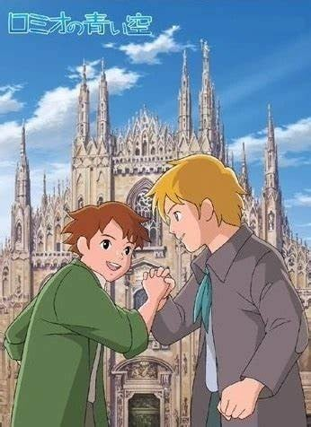
7.8「罗密欧的蓝天」（1995）是一部TV，由楠葉宏三执导，类型包括治愈，评分7.8，在本站出现在2份片单中，例如高分治愈系动漫推荐、轻小说改编动漫推荐。页面只做片单对照，不提供播放。19世纪后半叶的1875年，在瑞士的一个小村子，索诺纽村里的住着一位11岁少年罗密欧。在生活和平的罗密欧一家，某天在村子里出现人口贩子，这位人口贩子是被称为死神的安东尼奥‧路易尼，他用他的魔爪袭击了这个村子。把罗密欧家的稻田给烧毁，罗密欧的。
#230猫头鹰魔法社 第三季
 7.8
7.8「猫头鹰魔法社 第三季」（2022）是一部剧场版，由Amelia Lorenz执导，制作Disney Television Animation，类型包括百合、奇幻、冒险，评分7.8，在本站出现在5份片单中，例如高分美漫与动画电影、高分治愈系动漫推荐、高分奇幻冒险动漫。页面只做片单对照，不提供播放。Luz and her friends find themselves stuck in the human realm and are willing to go to daring lengths to return to the Bo。
#231为美好的世界献上祝福！
 7.7
7.7「为美好的世界献上祝福！」（2016）是一部TV，由金﨑貴臣执导，类型包括搞笑、异世界、奇幻，评分7.7，在本站出现在6份片单中，例如高分治愈系动漫推荐、高分异世界动漫推荐、高分奇幻冒险动漫。页面只做片单对照，不提供播放。热爱游戏的家里蹲少年·佐藤和真的人生，因交通事故（!?）而轻易闭幕……本该是这样，但当他醒来之时，眼前有一位自称是女神的美少女。“喂，我有点好事要告诉你。要去异世界吗？只带一样你喜欢的东西没问题喔。”“那，我就带着你好了。”由此开始，在异世。
#232为美好的世界献上祝福！ 第二季
 7.7
7.7「为美好的世界献上祝福！ 第二季」（2017）是一部TV，由金﨑貴臣执导，类型包括搞笑、异世界、奇幻，评分7.7，在本站出现在5份片单中，例如高分治愈系动漫推荐、高分异世界动漫推荐、高分奇幻冒险动漫。页面只做片单对照，不提供播放。由于意外事故而在异世界转生，热爱游戏的家里蹲·佐藤和真， 与“在如同RPG游戏一样的异世界，享受憧憬的冒险者生活！目标勇者！” 这样的梦想失之交臂，但也总算是有模有样地开始在异世界生活。 作为转生的特典被他带来同行的女神·阿库娅。每天只能击。
#233齐木楠雄的灾难
 7.7
7.7「齐木楠雄的灾难」（2016）是一部TV，由桜井弘明执导，制作EGG FIRM×J.C.STAFF，类型包括搞笑、校园、超能力，评分7.7，在本站出现在4份片单中，例如高分治愈系动漫推荐、高分校园动漫推荐、必看搞笑动漫。页面只做片单对照，不提供播放。高中生·齐木楠雄是超能力者。心灵感应、念动力、透视、预知、瞬间移动、千里眼等，不论任何事情都自由自在。但这任谁都羡慕不已的最强能力，实际上对于本人而言是引来灾难的不幸元凶。因此，他在别人面前封印了超能力，以不起眼、不和他人有所牵扯为信条，默。
#234异种族风俗娘评鉴指南
 7.7
7.7「异种族风俗娘评鉴指南」（2020）是一部TV，由小川優樹执导，制作パッショーネ，类型包括搞笑、奇幻、异世界，评分7.7，在本站出现在5份片单中，例如高分治愈系动漫推荐、高分异世界动漫推荐、高分奇幻冒险动漫。页面只做片单对照，不提供播放。ここは人間だけではなく、エルフ、獣人、悪魔に天使と、あらゆる異種族が混在し、暮らしている世界。そこには当然、あらゆる異種族のスケベなお店もあるわけで…。 足しげくムフフなサービスをしてくれるお店に通う人間の冒険者・スタンクは、ある日種族間の。
#235为美好的世界献上祝福！第三季
 7.7
7.7「为美好的世界献上祝福！第三季」（2024）是一部TV，由安部祐二郎执导，制作ドライブ，类型包括搞笑、异世界、奇幻，评分7.7，在本站出现在5份片单中，例如高分治愈系动漫推荐、高分异世界动漫推荐、高分奇幻冒险动漫。页面只做片单对照，不提供播放。交通事故（!?）によりあっけなく人生の幕を閉じるはずだった ゲームを愛するひきこもり・佐藤和真（カズマ）は、 ひょんなことから、女神・アクアを道連れに 異世界転生することに。 「RPGゲームのような異世界で、 憧れの冒険者生活エンジョイ！め。
#236ReLIFE
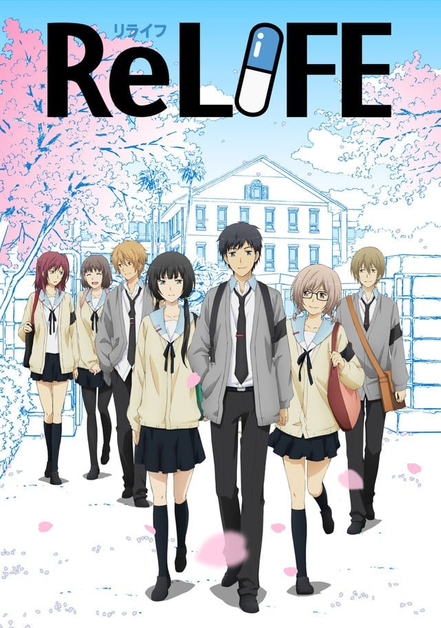
7.7「ReLIFE」（2016）是一部TV，由小坂知执导，制作トムス・エンタテインメント，类型包括恋爱、校园、治愈，评分7.7，在本站出现在4份片单中，例如高分恋爱动漫推荐、高分治愈系动漫推荐、高分校园动漫推荐。页面只做片单对照，不提供播放。海崎新太（27岁）在作为新毕业生进入的公司工作了3个月就辞职了。 之后他的就职活动也不顺利。 双亲寄来的生活费也中断了，不得已只好回到乡下。 能够倾听他烦恼的朋友和女友全都没有…… 穷途末路的海崎面前出现了一位神秘人物·夜明了。 夜明向海崎。
#237路人女主的养成方法 Fine
 7.7
7.7「路人女主的养成方法 Fine」（2019）是一部剧场版，由柴田彰久执导，类型包括恋爱、校园、日常，评分7.7，在本站出现在8份片单中，例如高分动画剧场版推荐、高分恋爱动漫推荐、高分治愈系动漫推荐。页面只做片单对照，不提供播放。某个春天的日子，安艺伦也决定做一部以在樱花飞舞的坡道上命中注定般相遇的少女——加藤惠为女主角的同人游戏。邀请了加入了美术部、作为同人插画家活动的泽村·斯潘塞·英梨梨，以及学年第一的优等生、作为轻小说作家活跃的霞之丘诗羽，成立了blessin。
#238夏日大作战
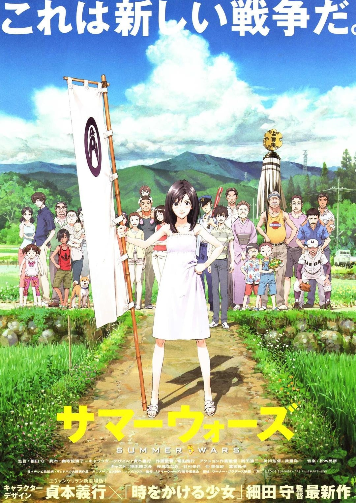
7.7「夏日大作战」（2009）是一部剧场版，由細田守执导，类型包括科幻、家庭、热血，评分7.7，在本站出现在6份片单中，例如高分动画剧场版推荐、高分热血动漫推荐、高分治愈系动漫推荐。页面只做片单对照，不提供播放。高二的暑假，性格懦弱的天才数学少年小矶健二答应为憧憬的前辈夏希打工。于是，两人来到夏希的长野老家。没想到夏希的老家是一个有着27人的大家族。夏希的曾祖母荣则是从室町时代起就延续下来的战国一家·阵内家的大当家，也是这一族的一家之主。全家人为了。
#239齐木楠雄的灾难 第二季
 7.7
7.7「齐木楠雄的灾难 第二季」（2018）是一部TV，由桜井弘明执导，制作EGG FIRM × J.C.STAFF，类型包括搞笑、校园、日常，评分7.7，在本站出现在4份片单中，例如高分治愈系动漫推荐、高分校园动漫推荐、必看搞笑动漫。页面只做片单对照，不提供播放。齐木楠雄的灾难 第二季。2018。搞笑、校园、日常。
#240跃动青春
「跃动青春」（2023）是一部TV，由出合小都美执导，类型包括校园、日常、恋爱，评分7.7，在本站出现在4份片单中，例如高分恋爱动漫推荐、高分治愈系动漫推荐、高分校园动漫推荐。页面只做片单对照，不提供播放。岩仓美津未从乡下的小初中，以第一名的成绩考入了东京的高升学率高中。 这位乡村神童心怀完美的人生蓝图、独自来到东京。她成绩优异，却与他人有着独特的距离感，稍显格格不入。 她虽然偶尔会失败，但还是凭借天真的性格一点点打动班上的同学，使他们那各不。
#241时光流逝，饭菜依旧美味
「时光流逝，饭菜依旧美味」（2025）是一部TV，由春水融・川面真也执导，类型包括日常、百合、治愈，评分7.7，在本站出现在4份片单中，例如高分治愈系动漫推荐、高分校园动漫推荐、高分女性向动漫。页面只做片单对照，不提供播放。可爱×美味=最强美食 五名刚刚成为大学生的女孩们共同演绎的日常故事。 热爱美食，想和大家一起尽情玩耍，学习也要稍加努力，如此这般，尽情享受大学生活吧！。
#242CLANNAD 另一个世界 智代篇
 7.7
7.7「CLANNAD 另一个世界 智代篇」（2008）是一部OVA/WEB，由石原立也执导，类型包括校园、治愈、恋爱，评分7.7，在本站出现在5份片单中，例如高分OVA与WEB动画、高分恋爱动漫推荐、高分治愈系动漫推荐。页面只做片单对照，不提供播放。每天浑浑噩噩，除了迟到便是逃学，被同学当作不良少年的光坂高中学生冈崎朋也在这一过程中和温柔美丽的女孩坂上智代熟稔，不知不觉便成为恋人。青春的爱恋平淡，却不乏幸福可言。未过多久，智代当选学生会长，在得到同学们祝贺的同时，他和朋也看似并不搭调的。
#243摇曳百合
 7.7
7.7「摇曳百合」（2011）是一部TV，由太田雅彦执导，类型包括百合、搞笑、日常，评分7.7，在本站出现在5份片单中，例如高分治愈系动漫推荐、高分校园动漫推荐、必看搞笑动漫。页面只做片单对照，不提供播放。在七森中学的校园里，无所事事四人帮——女主角赤座灯里、暴走的岁纳京子、吐糟役的船见结衣，以及在人前会伪装成可爱女孩的吉川千夏，擅自把废了部的茶道社部室据为己用，并且自称地建立了娱乐部。擅自使用课室又引来了学生会的介入，于是各种百合妄想也在作。
#244更衣人偶坠入爱河 第二季
 7.7
7.7「更衣人偶坠入爱河 第二季」（2025）是一部TV，由篠原啓輔执导，制作CloverWorks，类型包括恋爱、校园、日常，评分7.7，在本站出现在6份片单中，例如2025年夏季新番推荐、高分恋爱动漫推荐、高分治愈系动漫推荐。页面只做片单对照，不提供播放。以某次的相遇为契机，喜多川海梦和五条新菜透过Cosplay加深了交流。 他们还有许多想Cosplay的角色和想制作的服装。 透过和同学们的交流，以及新的Cosplay同伴的相遇，近一步拓展了海梦和新菜的世界。 除此之外，新菜与令人不断脸红心。
#245ReLIFE 完结篇
 7.7
7.7「ReLIFE 完结篇」（2018）是一部OVA/WEB，由小坂知执导，制作トムス・エンタテインメント，类型包括恋爱、校园、治愈，评分7.7，在本站出现在5份片单中，例如高分OVA与WEB动画、高分恋爱动漫推荐、高分治愈系动漫推荐。页面只做片单对照，不提供播放。無職でニートの海崎新太(27歳)はリライフ研究所の社会復帰プログラム「リライフ」へ参加し、1年間限定で高校生として高校に通っていた。 2学期に入り日代と一緒に青葉祭の実行委員を任された海崎は日代にある気持ちを抱く。一方、日代も花火大会以降、。
#246暗杀教室 第二季
 7.7
7.7「暗杀教室 第二季」（2016）是一部TV，由岸誠二执导，类型包括搞笑、校园、战斗，评分7.7，在本站出现在5份片单中，例如高分热血动漫推荐、高分治愈系动漫推荐、高分校园动漫推荐。页面只做片单对照，不提供播放。暗杀教室 第二季。2016。搞笑、校园、战斗。
#247相反的你和我
 7.7
7.7「相反的你和我」（2026）是一部TV，由長友孝和执导，制作ラパントラック，类型包括恋爱、校园、搞笑，评分7.7，在本站出现在6份片单中，例如2026年新番总表、高分恋爱动漫推荐、高分治愈系动漫推荐。页面只做片单对照，不提供播放。总是充满活力却在意周围目光的女孩 — 铃木，以及沉静但能坚定表达自己意见的男孩 — 谷。 这是一个由两个性格截然不同的人、彼此尊重、慢慢加深理解，并与朋友们一起度过校园生活的爱情喜剧！ [简介原文] いつも元気いっぱいだけど周りの目を気にし。
#248摇曳百合♪♪
 7.7
7.7「摇曳百合♪♪」（2012）是一部TV，由太田雅彦执导，类型包括百合、搞笑、日常，评分7.7，在本站出现在4份片单中，例如高分治愈系动漫推荐、必看搞笑动漫、高分女性向动漫。页面只做片单对照，不提供播放。占据了旧茶道部的活动室、继续擅自进行“娱乐部”活动（虽说如此也没啥明确的活动内容）的4人组。 对她们的行为持续关注、继续多管闲事（？）的学生会。 延续第一季的爱意满载、每天元气满满的轻松百合故事。
#249偶像大师 灰姑娘女孩 U149
「偶像大师 灰姑娘女孩 U149」（2023）是一部TV，由岡本学执导，制作CygamesPictures[サイピク]，类型包括音乐、日常、治愈，评分7.7，在本站出现在3份片单中，例如高分治愈系动漫推荐、高分女性向动漫、游戏改编动漫推荐。页面只做片单对照，不提供播放。某一个午后。迎来暑假的橘爱丽丝，进入了某个事务所的房间。在那里，她见到了年级和性格都大相径庭的8位少女们。房间的名字是“第3艺能课”。杂乱狭小的房间里，小小（149cm以下）的女孩子们怀揣着梦想。我们作为偶像的故事，也从此开始了呢。接下来登。
#250Kanon
 7.7
7.7「Kanon」（2006）是一部TV，由石原立也执导，制作京都动画，类型包括校园、恋爱、治愈，评分7.7，在本站出现在6份片单中，例如高分恋爱动漫推荐、高分治愈系动漫推荐、高分校园动漫推荐。页面只做片单对照，不提供播放。梦。 我做着一个悠远而长久的梦。 从很久以前就一直在做着这个梦； 在梦中我凝望四季的街道， 期望与永远不会到来的人再度见面， 找寻连自己也早已忘却的遗失的东西。 多少时间、多少岁月从我身边流逝而过， 在无尽的黑夜中，一直、一直都在孤单地等待。
#251兽娘动物园
 7.7
7.7「兽娘动物园」（2017）是一部TV，由たつき执导，制作ヤオヨロズ，类型包括百合、治愈、奇幻，评分7.7，在本站出现在4份片单中，例如高分治愈系动漫推荐、高分奇幻冒险动漫、高分女性向动漫。页面只做片单对照，不提供播放。《动物朋友》是由“动物朋友企划”（famima.com、东京电视台、KADOKAWA、胜利娱乐、Crunchyroll SC动画基金、AT-X、SYS、人脉、Age Global Networks、Just Production、DOCOM。
#252彻夜之歌 第二季
 7.7
7.7「彻夜之歌 第二季」（2025）是一部TV，由板村智幸执导，制作ライデンフィルム，类型包括恋爱、奇幻、日常，评分7.7，在本站出现在6份片单中，例如2025年夏季新番推荐、高分恋爱动漫推荐、高分治愈系动漫推荐。页面只做片单对照，不提供播放。"夜はまだ終わらない" 吸血鬼になることへの戸惑いを乗り越え、 ナズナを“好き”になることを決めたコウと、コウに“惚れさせる”決意をしたナズナ。 「恋」が一体なんなのか、わからないまま二人の夜は加速していく。 吸血鬼を殺そうと企む探偵・鶯 。
#253樱兰高校男公关部
 7.7
7.7「樱兰高校男公关部」（2006）是一部TV，由五十嵐卓哉执导，类型包括搞笑、校园、恋爱，评分7.7，在本站出现在5份片单中，例如高分恋爱动漫推荐、高分治愈系动漫推荐、高分校园动漫推荐。页面只做片单对照，不提供播放。这是一个发生在贵族学校的故事。私立樱兰高校是日本上流社会的一个缩影。而这个学校最闻名的社团之一，就是六个英俊不凡的男子组成的男公关部。而庶民春绯虽然得以凭借奖学金以特优生的身份进入这个高校，却因为一次偶遇加入公关部工作。青春，友情，爱情，感。
#254元气囝仔
 7.7
7.7「元气囝仔」（2014）是一部TV，由橘正紀执导，类型包括治愈、搞笑、日常，评分7.7，在本站出现在3份片单中，例如高分治愈系动漫推荐、必看搞笑动漫、漫画改编动漫推荐。页面只做片单对照，不提供播放。因缘际会下，来到日本最西端的岛上生活的年轻帅哥书法家·半田清舟。在开始不习惯的乡村生活的“老师”面前，出现了一名天真浪漫的岛上囝仔·奈留……？在都市长大的傲娇老师和胸襟异常宽阔的岛上居民交织而成的触动人心岛屿喜剧！。
#255飞屋环游记
 7.7
7.7「飞屋环游记」（2009）是一部剧场版，由Pete Docter执导，制作Pixar Animation Studios，类型包括治愈、冒险、奇幻，评分7.7，在本站出现在8份片单中，例如高分美漫与动画电影、高分动画剧场版推荐、高分治愈系动漫推荐。页面只做片单对照，不提供播放。小男孩卡尔（Carl Fredricksen）怀揣着对于冒险的热爱偶遇假小子艾丽（Ellie），而艾丽把整个屋子当成一艘大飞船游戏居然使他对这个女孩子有些着迷，相同的爱好最终使两个人成为了一生的爱侣。 他们有一个梦想，那就是有朝一日要去南美。
#256摇曳百合 3☆High!
 7.7
7.7「摇曳百合 3☆High!」（2015）是一部TV，由畑博之执导，制作TYO Animations（ゆめ太カンパニー），类型包括百合、日常、搞笑，评分7.7，在本站出现在4份片单中，例如高分治愈系动漫推荐、必看搞笑动漫、高分女性向动漫。页面只做片单对照，不提供播放。摇曳百合 3☆High!。2015。百合、日常、搞笑。
#257剧场版 吹响吧！上低音号～欢迎来到北宇治高中吹奏乐部～
「剧场版 吹响吧！上低音号～欢迎来到北宇治高中吹奏乐部～」（2016）是一部剧场版，由石原立也执导，类型包括音乐、校园、百合，评分7.7，在本站出现在6份片单中，例如高分动画剧场版推荐、高分治愈系动漫推荐、高分校园动漫推荐。页面只做片单对照，不提供播放。剧场版 吹响吧！上低音号～欢迎来到北宇治高中吹奏乐部～。2016。音乐、校园、百合。
#258擅长捉弄的高木同学 剧场版
 7.7
7.7「擅长捉弄的高木同学 剧场版」（2022）是一部剧场版，由赤城博昭执导，制作シンエイ動画，类型包括恋爱、日常、校园，评分7.7，在本站出现在7份片单中，例如高分动画剧场版推荐、高分恋爱动漫推荐、高分治愈系动漫推荐。页面只做片单对照，不提供播放。在一所初中里，有一个叫做西片的男生，时常遭到同桌女生高木同学的捉弄。每次他设法捉弄回去，都会被高木同学看透。季节变换，两个人都升上了三年级。周围的同学们开始思考将来，掺杂着不安与期待的同时，高木同学与西片之间的距离仍未改变。于是，初中最后的。
#259夏目友人帐 伍
 7.7
7.7「夏目友人帐 伍」（2016）是一部TV，由出合小都美执导，类型包括治愈、奇幻、日常，评分7.7，在本站出现在4份片单中，例如高分治愈系动漫推荐、高分校园动漫推荐、高分奇幻冒险动漫。页面只做片单对照，不提供播放。从小便能看见妖怪的少年夏目贵志。 自从他从祖母玲子那里继承了与妖怪成为主从并将其名字书写在上的契约书“友人帐”以来，便与自称为保镖的妖怪猫咪老师一同，开始了将名字返还给妖怪的每一天。 夏目与各种各样的妖怪与善良人们相遇，在构筑温暖的场所同时。
#260向山进发 第三季
「向山进发 第三季」（2018）是一部TV，由山本裕介执导，制作エイトビット，类型包括百合、治愈、日常，评分7.7，在本站出现在3份片单中，例如高分治愈系动漫推荐、高分女性向动漫、漫画改编动漫推荐。页面只做片单对照，不提供播放。一起去吧—— 与无可替代的朋友一起，去与那美丽的景色相会。 喜爱室内活动、有恐高症的葵，升入高中时与儿时好友日向重逢，虽然她在日向的带领下疲惫不堪，却也因此累积了登山和户外活动的经验。葵也逐渐对于登山乐在其中。 之后，她们的季节由夏转秋——。
#261夏目友人帐 陆
 7.7
7.7「夏目友人帐 陆」（2017）是一部TV，由出合小都美执导，类型包括治愈、奇幻、日常，评分7.7，在本站出现在4份片单中，例如高分治愈系动漫推荐、高分校园动漫推荐、高分奇幻冒险动漫。页面只做片单对照，不提供播放。心優しき友人たちとの、大切な日々── 美しく儚き、人と妖の物語。 小さい頃から妖怪を見ることができた少年・夏目貴志は、 祖母レイコの遺産「友人帳」を受け継ぎ、 自称用心棒のニャンコ先生と共に、 そこに名を縛られた妖怪たちに名を返す日々を送る。
#262罗小黑战记2
 7.7
7.7「罗小黑战记2」（2025）是一部剧场版，由木头(MTJJ)执导，制作北京寒木春华动画技术有限公司，类型包括战斗、奇幻、冒险，评分7.7，在本站出现在8份片单中，例如2025年夏季新番推荐、高分国漫推荐、高分动画剧场版推荐。页面只做片单对照，不提供播放。小黑跟随师父在小镇上过着安宁日子，分会馆遇袭，打破了妖精世界维系多年的和平，来自妖灵会馆的“全新任务”也让两人陷入分离危机，更让师父无限的处境发生翻天覆地的变化。面对环环相扣的谜团，小黑与师姐鹿野共同开启了寻找真相的新冒险。这一次小黑能否经。
#263悠哉日常大王 OAD
 7.7
7.7「悠哉日常大王 OAD」（2014）是一部OVA/WEB，由川面真也执导，制作SILVER LINK.，类型包括日常、治愈、百合，评分7.7，在本站出现在5份片单中，例如高分OVA与WEB动画、高分治愈系动漫推荐、必看搞笑动漫。页面只做片单对照，不提供播放。单行本第7卷同捆OAD。
#264放浪男孩
 7.7
7.7「放浪男孩」（2011）是一部TV，由あおきえい执导，制作AIC Classic，类型包括治愈、校园、日常，评分7.7，在本站出现在5份片单中，例如高分恋爱动漫推荐、高分治愈系动漫推荐、高分校园动漫推荐。页面只做片单对照，不提供播放。想变成女生的男孩二鸟修一，在新转校的小学遇到帅气的女生高槻佳乃。最初修一一直压抑着想成为女生的心情，之后发现佳乃经常穿着男生学生服到远方城镇。彼此共享秘密的两人，修一穿着水手服、佳乃穿着男生学生服，一起到远方的城镇冒险。然而当二人升入中学后。
#265日常 OAD
 7.7
7.7「日常 OAD」（2011）是一部OVA/WEB，由石原立也执导，类型包括日常、搞笑、校园，评分7.7，在本站出现在5份片单中，例如高分OVA与WEB动画、高分治愈系动漫推荐、高分校园动漫推荐。页面只做片单对照，不提供播放。京阿尼新作动画《日常》最终还是敲定为OAD先行TV版紧接其后的推出方式，OAD版如早前所公布的，将在3月发售的最新漫画单行版中捆绑发行，而TV版的播放时间确定为2011年4月，正式参战明年4月的新番狂潮。 除了即将捆绑发行的OAD“日常0话。
#266夏娃的时间
 7.7
7.7「夏娃的时间」（2008）是一部OVA/WEB，由吉浦康裕执导，类型包括科幻、治愈，评分7.7，在本站出现在4份片单中，例如高分OVA与WEB动画、高分治愈系动漫推荐、高分科幻动漫推荐。页面只做片单对照，不提供播放。夏娃的时间（日语：イヴの時間）是2008年8月的一部科幻在线动画。讲述了未来的日本，机器人十分普及的情况。主人公陆夫偶然间发现了一间咖啡店，在里面人与机器人是平等的。 （Via wikipedia）。
#267悠哉日常大王 Repeat OAD
 7.7
7.7「悠哉日常大王 Repeat OAD」（2016）是一部OVA/WEB，由川面真也执导，制作SILVER LINK.，类型包括日常、治愈、百合，评分7.7，在本站出现在5份片单中，例如高分OVA与WEB动画、高分治愈系动漫推荐、必看搞笑动漫。页面只做片单对照，不提供播放。单行本第10卷同捆OAD。
#268夏娃的时间 剧场版
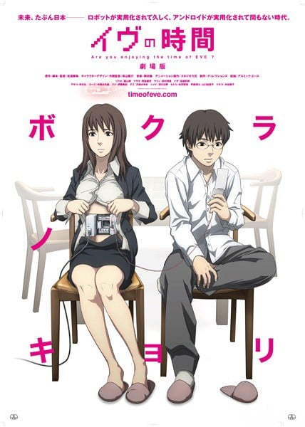
7.7「夏娃的时间 剧场版」（2010）是一部剧场版，由吉浦康裕执导，类型包括科幻、治愈，评分7.7，在本站出现在5份片单中，例如高分动画剧场版推荐、高分治愈系动漫推荐、高分科幻动漫推荐。页面只做片单对照，不提供播放。剧场版全名为《夏娃的时间》，是对网络版本进行再编辑并加入新画面制作而成。 故事的舞台在未来的日本，机器人早已进入人们的生活，人型机器人刚刚实用化的时代。受机器人伦理委员会的影响，将机器人当作“家电”对待成为了人们的常识，甚至对那些除了头上的。
#269银魂.
 7.7
7.7「银魂.」（2017）是一部TV，由宮脇千鶴执导，类型包括搞笑、热血、战斗，评分7.7，在本站出现在4份片单中，例如高分热血动漫推荐、高分治愈系动漫推荐、必看搞笑动漫。页面只做片单对照，不提供播放。银魂.。2017。搞笑、热血、战斗。
#270淡岛百景
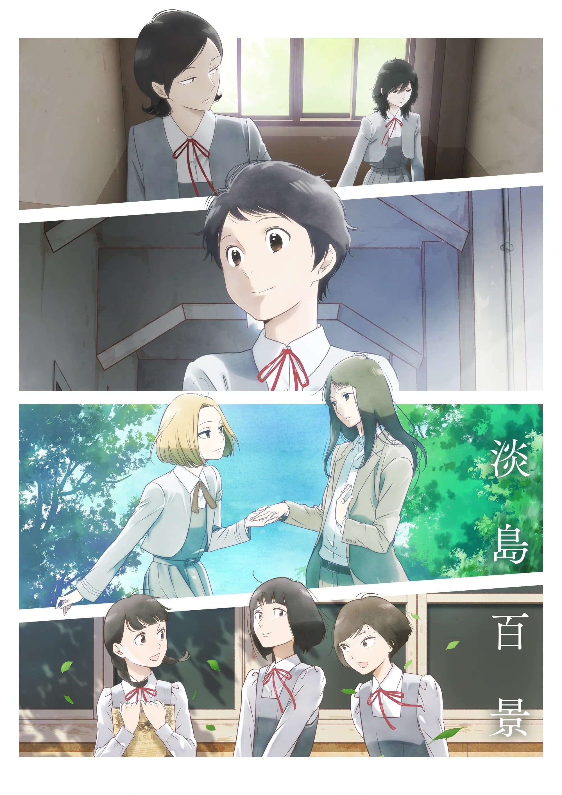
7.7「淡岛百景」（2026）是一部TV，由浅香守生执导，制作MADHOUSE，类型包括校园、百合、日常，评分7.7，在本站出现在6份片单中，例如2026年春季新番推荐、2026年新番总表、高分治愈系动漫推荐。页面只做片单对照，不提供播放。淡岛歌剧学校里，梦想着站上舞台的少女们自全国各地齐聚而来。憧憬着歌舞剧明星而入学的新生・若菜。背负着挚友的思念努力学习的舍长・绢枝。散发出压倒性存在感的，美丽特待生・绘美。憧憬她、嫉妒她，并不断渴求她目光的桂子与其家人――。她们无可替代的日。
#271来自深渊 启程之拂晓
 7.7
7.7「来自深渊 启程之拂晓」（2019）是一部剧场版，由小島正幸执导，类型包括奇幻、冒险、治愈，评分7.7，在本站出现在6份片单中，例如高分动画剧场版推荐、高分热血动漫推荐、高分治愈系动漫推荐。页面只做片单对照，不提供播放。在这个各个角落都被探索尽的世界，唯一仅存的秘境—大洞穴「阿比斯」。 这个会延伸到哪里不得而知、深不见底的巨大纵向洞穴中，栖息着各种奇奇怪怪的生物，还藏有现今人类制作不出来的珍贵遗物。 「阿比斯」处处不可思议的景象，让人们为之着迷，前仆后继地。
#272热带雨林的爆笑生活
 7.7
7.7「热带雨林的爆笑生活」（2001）是一部TV，由水島努执导，类型包括搞笑、日常，评分7.7，在本站出现在3份片单中，例如高分治愈系动漫推荐、必看搞笑动漫、漫画改编动漫推荐。页面只做片单对照，不提供播放。小晴，一个平凡的男孩，和有点不负责的妈妈——维达生活在热带的雨林中，每天都是在摘香蕉，打游戏，在学校和瞌睡老师与一群傻傻的同学打交道中度过。一天，维达打发小晴去摘香蕉，他却遇见了一奇怪而巨大的影子。在听见一声“咕噜”后，然后一片漆黑……在路。
#273狱・再见绝望先生
 7.7
7.7「狱・再见绝望先生」（2008）是一部OVA/WEB，由新房昭之执导，制作SHAFT，类型包括搞笑、校园、日常，评分7.7，在本站出现在5份片单中，例如高分OVA与WEB动画、高分治愈系动漫推荐、高分校园动漫推荐。页面只做片单对照，不提供播放。名为“第2.5季”的OVA獄・さよなら絶望先生、其上卷和2008年10月17日发售的单行本第十五集初回限定版一起发售、下卷在2009年2月17日和第十六集的初回限定版一起发售。每卷定价都是3470日元、和日语“再见”（さよなら）的读音相同。
#274交响情人梦 巴黎篇
 7.7
7.7「交响情人梦 巴黎篇」（2008）是一部TV，由今千秋执导，类型包括音乐、恋爱、治愈，评分7.7，在本站出现在4份片单中，例如高分恋爱动漫推荐、高分治愈系动漫推荐、必看搞笑动漫。页面只做片单对照，不提供播放。内容改编自原作漫画第10集开始，描写千秋真一和野田惠在巴黎的故事。
#275圣母在上
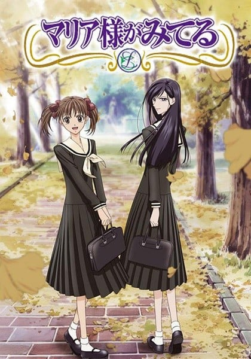
7.7「圣母在上」（2004）是一部TV，由ユキヒロマツシタ(福島宏之)执导，制作Studio DEEN(スタジオディーン)，类型包括百合、治愈、校园，评分7.7，在本站出现在4份片单中，例如高分治愈系动漫推荐、高分校园动漫推荐、高分女性向动漫。页面只做片单对照，不提供播放。在莉莉安女子学院，每个一年级的新生都会被一位二年级的学姐选为“妹妹”，而这个学姐也会以“姐姐”的身份照顾选中的学妹，不管是学习还是生活上。这其实是一种一对一的监护人制度，这种制度不但可以让新生更好的适应学院生活，同时也能促进不同年级学生的交。
#276草莓棉花糖 OVA 第2期
 7.7
7.7「草莓棉花糖 OVA 第2期」（2009）是一部OVA/WEB，由佐藤卓哉执导，类型包括治愈、日常、百合，评分7.7，在本站出现在5份片单中，例如高分OVA与WEB动画、高分治愈系动漫推荐、必看搞笑动漫。页面只做片单对照，不提供播放。「かわいいは正義！」を合言葉に、TVアニメ、OVAと二度アニメ化された「苺ましまろ」がまたまたOVAで帰ってきました！ みなさんのアンコールに応えて、ただいま！とばかりに“ましまろ”ワールドが、賑やかに帰ってきたぁ！ 二度あるアニメは三度あ。
#277草莓棉花糖 OVA 第1期
 7.7
7.7「草莓棉花糖 OVA 第1期」（2007）是一部OVA/WEB，由佐藤卓哉执导，类型包括治愈、日常、百合，评分7.7，在本站出现在5份片单中，例如高分OVA与WEB动画、高分治愈系动漫推荐、必看搞笑动漫。页面只做片单对照，不提供播放。「苺ましまろ」（原作 「電撃大王」連載）は、とってもキュートで個性的な４人の小学生と １人の二十歳の短大生の女の子が繰り広げる、 一見どこでもありそうなゆる～い日常をコミカルに描いた作品です。 おしゃれなファッション、ちょっとおませな行動、。
#278×××HOLiC・笼 徒梦
 7.7
7.7「×××HOLiC・笼 徒梦」（2011）是一部OVA/WEB，由水島努执导，类型包括奇幻、治愈、日常，评分7.7，在本站出现在4份片单中，例如高分OVA与WEB动画、高分治愈系动漫推荐、高分奇幻冒险动漫。页面只做片单对照，不提供播放。这是一家可以实现任何愿望的店，只要委托人愿意付出对等的代价。在命运的安排下，有缘人必然会走进这家店里进行委托。高中生四月一日君寻，有着异于常人的体质，他可以看到并且吸引各种鬼怪。他身边的好友百目鬼和小葵都是特殊能力者。 原店主壹原侑子消失后。
#279向阳素描×365
「向阳素描×365」（2008）是一部TV，由新房昭之执导，制作SHAFT，类型包括百合、治愈、日常，评分7.7，在本站出现在4份片单中，例如高分治愈系动漫推荐、高分校园动漫推荐、高分女性向动漫。页面只做片单对照，不提供播放。蒼樹うめ原作、「ひだまりスケッチ」TVシリーズ第2作。 憧れの私立やまぶき高校美術科に入学したゆの。 親元を離れ、学校のまん前にある小さなアパート『ひだまり荘』で 一人暮らしをはじめたゆのは、そこで同級生の宮子、 先輩の沙英とヒロの三人に出。
#280向阳素描×☆☆☆
「向阳素描×☆☆☆」（2010）是一部TV，由新房昭之执导，制作SHAFT，类型包括治愈、百合、日常，评分7.7，在本站出现在4份片单中，例如高分治愈系动漫推荐、高分校园动漫推荐、高分女性向动漫。页面只做片单对照，不提供播放。蒼樹うめ原作、「ひだまりスケッチ」TVシリーズ第3作。 憧れの私立やまぶき高校美術科に入学したゆの。 親元を離れ、学校のまん前にある小さなアパート『ひだまり荘』で 一人暮らしをはじめたゆのは、そこで同級生の宮子、 先輩の沙英とヒロの三人に出。
#281忏・再见绝望先生 番外地
 7.7
7.7「忏・再见绝望先生 番外地」（2009）是一部OVA/WEB，由新房昭之执导，制作SHAFT，类型包括搞笑、校园、日常，评分7.7，在本站出现在5份片单中，例如高分OVA与WEB动画、高分治愈系动漫推荐、高分校园动漫推荐。页面只做片单对照，不提供播放。制作组决定再推出新的OAD懺・さよなら絶望先生 番外地。其上卷与2009年11月17日发售的单行本第十九卷初回限定版一起发售，下卷则与2010年2月17日发售的单行本第二十卷初回限定版一起发售。 作者在每一集中、大量渗入对日本的社会现象及自。
#282我的邻居山田君
 7.7
7.7「我的邻居山田君」（1999）是一部剧场版，由高畑勲执导，类型包括日常、家庭、喜剧，评分7.7，在本站出现在5份片单中，例如高分动画剧场版推荐、高分治愈系动漫推荐、必看搞笑动漫。页面只做片单对照，不提供播放。山田先生是一个在表面上具有家长威严却又因小事而感到哀愁的普通公司职员，山田太太是有着浓重关西口音的家庭主妇，儿子阿德是个刚刚进入青春期学习一般的中学生，女儿野野子则是个天真的幼稚园小朋友，还有孩子们的老外婆 ——老却经常很酷的样子，说话总是。
#283热带雨林的爆笑生活DELUXE
 7.7
7.7「热带雨林的爆笑生活DELUXE」（2002）是一部OVA/WEB，由水島努执导，类型包括搞笑、日常，评分7.7，在本站出现在4份片单中，例如高分OVA与WEB动画、高分治愈系动漫推荐、必看搞笑动漫。页面只做片单对照，不提供播放。第一部OVA《热带雨林的爆笑生活DELUXE》（以下简称DELUXE）于2002年末至2003年初制作，共12集（分为6卷）。
#284热带雨林的爆笑生活FINAL
 7.7
7.7「热带雨林的爆笑生活FINAL」（2003）是一部OVA/WEB，由水島努执导，类型包括搞笑、日常、奇幻，评分7.7，在本站出现在5份片单中，例如高分OVA与WEB动画、高分治愈系动漫推荐、高分奇幻冒险动漫。页面只做片单对照，不提供播放。第二部OVA《热带雨林的爆笑生活FINAL》（以下简称FINAL）于2003年末至2004年初制作，共14集（分为7卷）。OVA在日本KIDS STATION电视台播出。
#285在这世界(更多一些)的角落
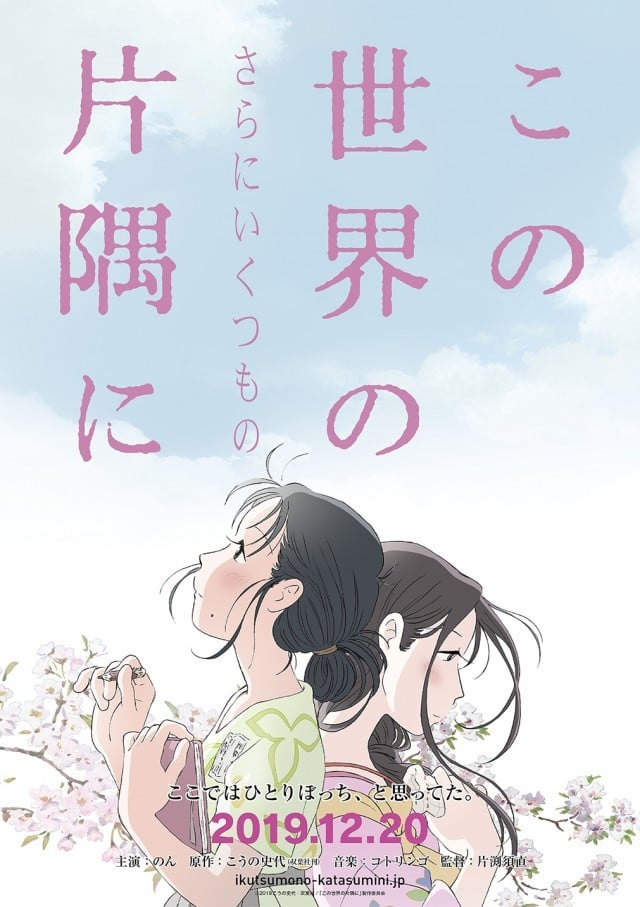
7.7「在这世界(更多一些)的角落」（2019）是一部剧场版，类型包括战争、历史、治愈，评分7.7，在本站出现在4份片单中，例如高分动画剧场版推荐、高分治愈系动漫推荐、漫画改编动漫推荐。页面只做片单对照，不提供播放。戦時下の日常を生きるすずの想いがより深く描かれるーー。 2016年11月12日に公開され、深い感動の輪を拡げていき、大きな反響を呼んだ映画『この世界の片隅に』。多くのファンと上映劇場の熱意に支えられ、公開から1日も途絶えることなく600日以。
#286水星领航员 The CREPUSCOLO
 7.7
7.7「水星领航员 The CREPUSCOLO」（2021）是一部剧场版，由名取孝浩执导，制作J.C.STAFF，类型包括治愈、日常、百合，评分7.7，在本站出现在6份片单中，例如高分动画剧场版推荐、高分治愈系动漫推荐、高分科幻动漫推荐。页面只做片单对照，不提供播放。TVアニメ放送開始15周年記念プロジェクト『蒼のカーテンコール』第2章 開幕 新威尼斯的街道已被落叶染成秋天的颜色。有件事让现在正在橘色行星实习的阿妮亚感到非常在意。那就是因为彼此都很忙碌、已经有段时间没有见面的爱丽丝以及雅典娜。因此失去精。
#287小马宝莉：友谊就是魔法 第三季
 7.7
7.7「小马宝莉：友谊就是魔法 第三季」（2012）是一部TV，类型包括日常、奇幻、治愈，评分7.7，在本站出现在5份片单中，例如高分美漫与动画电影、高分治愈系动漫推荐、高分奇幻冒险动漫。页面只做片单对照，不提供播放。小马宝莉：友谊就是魔法 第三季。2012。日常、奇幻、治愈。
#288马男波杰克
 7.7
7.7「马男波杰克」（2014）是一部TV，由Joel Moser执导，制作Tornante Television，类型包括搞笑、日常、剧情，评分7.7，在本站出现在4份片单中，例如高分美漫与动画电影、高分治愈系动漫推荐、必看搞笑动漫。页面只做片单对照，不提供播放。本剧的世界设定是普通人类和拟人化的动物共同生活在一起，除了外形，这些动物跟人类没什么不同。马男波杰克（威尔·阿奈特 Will Arnett 配音）就是一匹中年过气明星马，他年轻时主演的电视剧《胡闹的小马》风靡一时，而今他已是无人问津的过气明。
#289海绵宝宝 第三季
 7.7
7.7「海绵宝宝 第三季」（2001）是一部TV，类型包括搞笑、日常、奇幻，评分7.7，在本站出现在5份片单中，例如高分美漫与动画电影、高分治愈系动漫推荐、高分奇幻冒险动漫。页面只做片单对照，不提供播放。Deep down in the Pacific Ocean in the subterranean city of Bikini Bottom lives a square yellow sponge named SpongeBob Sq。
#290偶像活动 第一年
「偶像活动 第一年」（2012）是一部TV，由木村隆一执导，制作Sunrise，类型包括百合、音乐、校园，评分7.7，在本站出现在4份片单中，例如高分治愈系动漫推荐、高分校园动漫推荐、高分女性向动漫。页面只做片单对照，不提供播放。「アイカツ=アイドル活動」を行うための近道は、アイドル学校に通うこと! アイドル名門校「スターライト学園」に編入した主人公 星宮いちごは、さまざまなライバルたちと出会い、 アイドルとしての心得を学びながら、アイカツ!カードを使って数々のオー。
#291东方活动写真馆
 7.7
7.7「东方活动写真馆」（2009）是一部OVA/WEB，类型包括治愈、百合、奇幻，评分7.7，在本站出现在5份片单中，例如高分OVA与WEB动画、高分治愈系动漫推荐、高分奇幻冒险动漫。页面只做片单对照，不提供播放。上海アリス幻樂団様制作の東方Project作品の二次創作作品ミュージック・ビデオアニメーションを制作いたしました。 内容は東方Projectに出てくるキャラクターたちをゲームBGMのアレンジした曲に載せてお送りする ミュージック・ビデオアニ。
#292剧场版 魔法少女小圆〈瓦尔普吉斯的回天〉
 7.7
7.7「剧场版 魔法少女小圆〈瓦尔普吉斯的回天〉」（2026）是一部剧场版，由宮本幸裕执导，制作SHAFT，类型包括百合、奇幻、战斗，评分7.7，在本站出现在9份片单中，例如2026年夏季新番推荐、2026年新番总表、高分动画剧场版推荐。页面只做片单对照，不提供播放。とある地方都市・見滝原市に住む鹿目まどかは、 少し引っ込み思案な、どこにでもいる女子中学生。 だが“魔法少女”となって魔女と戦う少女たちの存在を知り、その戦いに巻き込まれていく。 魔法少女たちが傷つき倒れていく姿を悲観した彼女は、キュゥべえ。
#293了不起的狐狸爸爸
 7.7
7.7「了不起的狐狸爸爸」（2009）是一部剧场版，由Wes Anderson执导，制作Indian Paintbrush，类型包括喜剧、搞笑、剧情，评分7.7，在本站出现在6份片单中，例如高分美漫与动画电影、高分动画剧场版推荐、高分治愈系动漫推荐。页面只做片单对照，不提供播放。本片根据挪威藉英国儿童文学作家罗尔德·达尔（Roald Dahl）的同名儿童故事改编。狐狸爸爸（乔治·克鲁尼 George Clooney 配音）和狐狸太太（梅丽尔斯·特里普 Meryl Streep 配音）在乳鸽场偷窃时得知狐狸太太怀孕，。
#294花田少年史
 7.7
7.7「花田少年史」（2002）是一部TV，由小島正幸执导，类型包括治愈、奇幻、日常，评分7.7，在本站出现在4份片单中，例如高分治愈系动漫推荐、高分奇幻冒险动漫、必看搞笑动漫。页面只做片单对照，不提供播放。花田一路，虽然只是一个小学三年级学生，却是村里远近闻名的小捣蛋鬼，性格属于天不怕地不怕，唯一弱点却是害怕幽灵，甚至不敢自己上厕所。一天，花田一路闯下大祸，把家里唯一的黑白电视机打坏了。为了躲避妈妈的追打，他骑着邻居的自行车逃跑，却在半路发生。
#295哆啦A梦回来了
 7.7
7.7「哆啦A梦回来了」（1998）是一部剧场版，类型包括治愈、科幻、搞笑，评分7.7，在本站出现在6份片单中，例如高分动画剧场版推荐、高分治愈系动漫推荐、高分科幻动漫推荐。页面只做片单对照，不提供播放。ドラえもん のび太の南海大冒険併映作品。
#296来来猫 第二季
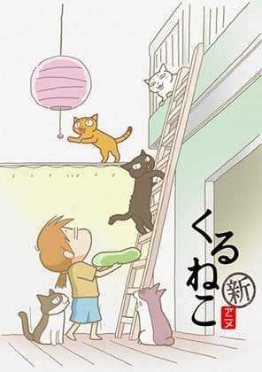
7.7「来来猫 第二季」（2010）是一部TV，由大地丙太郎执导，制作ダックスプロダクション，类型包括治愈、日常，评分7.7，在本站出现在2份片单中，例如高分治愈系动漫推荐、漫画改编动漫推荐。页面只做片单对照，不提供播放。讲述饲主与猫咪悠闲的日常生活的《くるねこ》将于2010年7月开始新一季动画，声优为中谷美紀一人役（第一季为小林聡美）。 中谷美紀（NAKATANI MIKI），1976年東京都出身，1993年以女演员的身份出道，主要作品包括电视剧《白洲次郎。
#297艾特熊和赛娜鼠
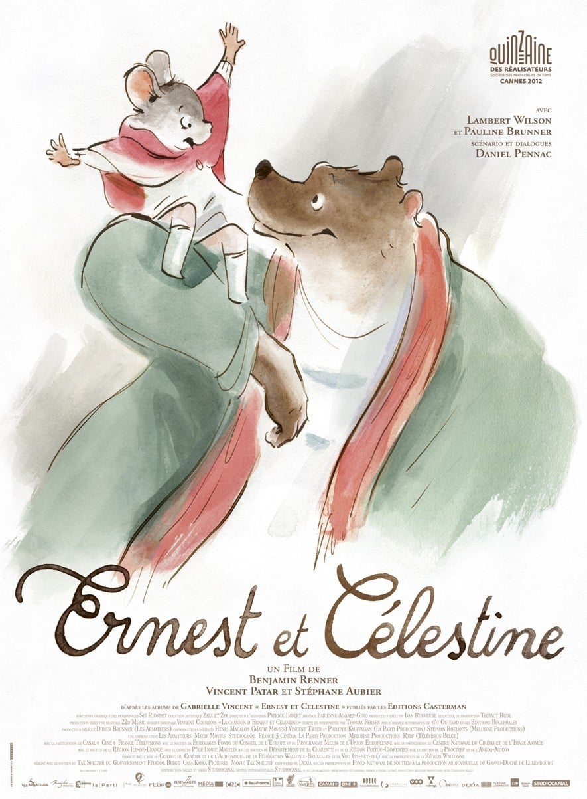
7.7「艾特熊和赛娜鼠」（2012）是一部剧场版，由Stéphane Aubier执导，类型包括治愈，评分7.7，在本站出现在5份片单中，例如高分美漫与动画电影、高分动画剧场版推荐、高分治愈系动漫推荐。页面只做片单对照，不提供播放。在熊的国度，传统观念中和老鼠做朋友是会被看不起的。然而艾特熊，这个体型硕大的马戏团演员和音乐家，却热情接待了赛娜鼠，这个从地下鼠国逃出来的孤儿。这二者不一般的友谊，不仅相互支持，相互鼓舞，他们还将共同挑战现有秩序。
#298希尔达 第一季
 7.7
7.7「希尔达 第一季」（2018）是一部OVA/WEB，由Andy Coyle执导，类型包括治愈、喜剧、奇幻，评分7.7，在本站出现在6份片单中，例如高分美漫与动画电影、高分OVA与WEB动画、高分治愈系动漫推荐。页面只做片单对照，不提供播放。Hilda is an animated television series based on the graphic novel series of the same name by Luke Pearson. Produced by S。
#299马男波杰克6 上
 7.7
7.7「马男波杰克6 上」（2019）是一部TV，类型包括搞笑、日常、喜剧，评分7.7，在本站出现在4份片单中，例如高分美漫与动画电影、高分治愈系动漫推荐、必看搞笑动漫。页面只做片单对照，不提供播放。在康复中心的日子迫使波杰克面对自己犯下的过错并开始着手弥补，一步一步慢慢地走上救赎之道。
#300猫怪麦克
 7.7
7.7「猫怪麦克」（1988）是一部TV，制作スタジオ古留美，类型包括搞笑、喜剧，评分7.7，在本站出现在3份片单中，例如高分治愈系动漫推荐、必看搞笑动漫、漫画改编动漫推荐。页面只做片单对照，不提供播放。这是一部描写在日常生活中猫与人类之间相互关系的幽默故事，我们的主人公麦克，毫无疑问是只猫，但故事同样也反映了人类的态度。一天，麦克出现在漫画家小林的家中。即使从那一天起，小林和他的妻子便开始尽力与麦克相处，猫想上他自己的事情，而人类则时时要。
#301怪诞小镇短篇集
 7.7
7.7「怪诞小镇短篇集」（2013）是一部TV，类型包括搞笑、奇幻、日常，评分7.7，在本站出现在6份片单中，例如高分美漫与动画电影、高分治愈系动漫推荐、高分悬疑推理动漫。页面只做片单对照，不提供播放。A series of Gravity Falls shorts were produced to air between Seasons 1 and 2, riding the momentum of the series' succes。
#302希尔达 第二季
 7.7
7.7「希尔达 第二季」（2020）是一部OVA/WEB，类型包括冒险、治愈、奇幻，评分7.7，在本站出现在5份片单中，例如高分美漫与动画电影、高分OVA与WEB动画、高分治愈系动漫推荐。页面只做片单对照，不提供播放。希尔达 第二季。2020。冒险、治愈、奇幻。
#303水色时代
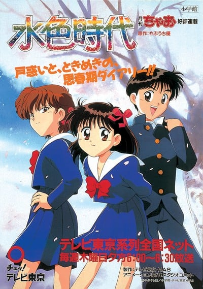
7.7「水色时代」（1996）是一部TV，由ときたひろこ执导，类型包括恋爱、日常、校园，评分7.7，在本站出现在4份片单中，例如高分恋爱动漫推荐、高分治愈系动漫推荐、高分校园动漫推荐。页面只做片单对照，不提供播放。12岁，既不是大人也不是小孩，但说青春还太早，正确而言应该是从纯白的孩童时代，稍微的，染上了一点青春的蓝，而这个过渡期的颜色，正是水色，就让我们一起来看看这个属于我们的水色时代的故事吧。
#304少女乐队的呐喊
 7.6
7.6「少女乐队的呐喊」（2024）是一部TV，类型包括音乐、百合、搞笑，评分7.6，在本站出现在4份片单中，例如高分治愈系动漫推荐、必看搞笑动漫、高分女性向动漫。页面只做片单对照，不提供播放。无论是愤怒、喜悦还是悲伤，全都倾注其中。 高中二年级，从学校退学，只身在东京以大学为目标的主人公。被同伴背叛，不知如何是好的少女。被父母抛弃，一个人在大城市里打工维生的女孩子。 虽然这个世界总是背叛我们。虽然什么都不能称心如意。但是，因为我。
#305天使的心跳！
 7.6
7.6「天使的心跳！」（2010）是一部TV，由岸誠二执导，制作P.A.WORKS，类型包括治愈、校园、奇幻，评分7.6，在本站出现在6份片单中，例如高分恋爱动漫推荐、高分治愈系动漫推荐、高分校园动漫推荐。页面只做片单对照，不提供播放。故事从男主角死亡之后从“死后的世界”醒来开始，在“死后的世界”中的学校里，他与一位名为由利(ゆり)、在“死后的世界”率领着一个名为“死んだ(Shinda)世界(Sekai)战线(Sensen)”简称“SSS”的组织的少女相遇了。“SSS”成。
#306紫罗兰永恒花园
 7.6
7.6「紫罗兰永恒花园」（2018）是一部TV，由石立太一执导，制作京都动画，类型包括治愈、奇幻、日常，评分7.6，在本站出现在6份片单中，例如高分热血动漫推荐、高分恋爱动漫推荐、高分治愈系动漫推荐。页面只做片单对照，不提供播放。某个大陆的、某个时代。 大陆南北分割的战争结束了，世界逐渐走向了和平。 在战争中、作为军人而战斗的薇尔莉特·伊芙加登离开了军队，来到了大港口城市。怀抱着战场上一个对她而言比谁都重要的人告诉了她“某个话语”――。 街道上人群踊跃，有轨电车在排。
#307异世界舅舅
 7.6
7.6「异世界舅舅」（2022）是一部TV，由河合滋樹执导，类型包括搞笑、异世界、奇幻，评分7.6，在本站出现在5份片单中，例如高分治愈系动漫推荐、高分异世界动漫推荐、高分奇幻冒险动漫。页面只做片单对照，不提供播放。2017年秋，敬文的舅舅17岁时被卡车撞上，从此陷入昏迷，直到17年后他奇迹般苏醒。 敬文去医院探望舅舅，却只见他独自胡言乱语，宣称自己是从大巴哈马鲁异世界归来。 ......舅舅的脑袋显然是坏掉了。 敬文不知所措，但舅舅却施展魔法，证明自。
#308别当欧尼酱了！
 7.6
7.6「别当欧尼酱了！」（2023）是一部TV，由藤井慎吾执导，类型包括日常、搞笑、百合，评分7.6，在本站出现在4份片单中，例如高分治愈系动漫推荐、必看搞笑动漫、高分女性向动漫。页面只做片单对照，不提供播放。某天，家里蹲的啃老族绪山真寻一觉醒来发现自己变成了“女孩子”！？正当真寻不知道镜子里的美少女是自己而陷入混乱的时候，跳级进入大学的科学家妹妹绪山美波里出现了。她透露在饮料里加了一种奇怪的药物！ 真寻最近2年一直疯狂宅家玩小黄游，偶尔不得已才。
#309只有我不存在的城市
 7.6
7.6「只有我不存在的城市」（2016）是一部TV，由伊藤智彦执导，类型包括悬疑、推理、治愈，评分7.6，在本站出现在4份片单中，例如高分治愈系动漫推荐、高分悬疑推理动漫、高分奇幻冒险动漫。页面只做片单对照，不提供播放。藤沼悟是一个三流漫画家，但是他却拥有着名为“再上映”（可以穿越到事件发生之前的时间点，阻止事件发生，但失败了会一直重复）的能力。某天，当回到家里的时候他发现了自己母亲遇害的一幕，并且自己被嫁祸为杀人凶手。就在这时候，由于再上映的关系，他突然。
#310末日时在做什么？有没有空？可以来拯救吗？
 7.6
7.6「末日时在做什么？有没有空？可以来拯救吗？」（2017）是一部TV，由和田純一执导，制作サテライト×C2C，类型包括恋爱、奇幻、治愈，评分7.6，在本站出现在6份片单中，例如高分热血动漫推荐、高分恋爱动漫推荐、高分治愈系动漫推荐。页面只做片单对照，不提供播放。被称作妖精兵器的少女们与残存的准勇者之间的虚幻而痛切的物语。 地上遭到正体不明的怪物“兽”的蹂躏，包括人类在内的多种族被毁灭之后的世界。 勉强残存的种族离开地面，移居到名为浮游大陆群（Regulu Ere）的空中群岛上生活。 在500年后的。
#311女高中生的无所事事
 7.6
7.6「女高中生的无所事事」（2019）是一部TV，由さんぺい聖执导，制作パッショーネ，类型包括搞笑、日常、校园，评分7.6，在本站出现在5份片单中，例如高分治愈系动漫推荐、高分校园动漫推荐、必看搞笑动漫。页面只做片单对照，不提供播放。被浪费的青春—— 偏差值差不多的田中（通称“笨蛋”）、沉迷于BL的菊池（通称：“御宅”）、面无表情的才女・鹭宫（通称“机”）。个性十足的女高中生们无所事事的日常校园生活—— [简介原文] 浪費する、青春――。 WEBコミック誌「コミックNe。
#312约定的梦幻岛
 7.6
7.6「约定的梦幻岛」（2019）是一部TV，由神戸守执导，类型包括悬疑、冒险、奇幻，评分7.6，在本站出现在4份片单中，例如高分治愈系动漫推荐、高分悬疑推理动漫、高分奇幻冒险动漫。页面只做片单对照，不提供播放。仰慕的母亲并非亲生母亲。一起生活的他们并非兄弟。 Grace=Field House是没有父母的孩子们居住的地方。虽然没有血缘关系，但妈妈和38个兄弟都度过了幸福的每一天，这是不可替代的家。 但是，他们的日常在某一天突然宣告结束……。
#313妄想学生会
 7.6
7.6「妄想学生会」（2010）是一部TV，由金澤洪充执导，制作GoHands，类型包括搞笑、校园、日常，评分7.6，在本站出现在4份片单中，例如高分治愈系动漫推荐、高分校园动漫推荐、必看搞笑动漫。页面只做片单对照，不提供播放。故事的舞台——私立樱才学园，原本是传统的女子高中，但因少子化问题影响，不得不改制为男女合校。作为改制后第一年入学的28名男性新生之一的津田隆利，偶然之下被拉入了学校的学生会。在外人看来，学生会是美女如云的天堂，但是津田身边的三位学生会女干部。
#314CLANNAD ～AFTER STORY～另一个世界 杏篇
 7.6
7.6「CLANNAD ～AFTER STORY～另一个世界 杏篇」（2009）是一部OVA/WEB，由石原立也执导，类型包括校园、治愈、恋爱，评分7.6，在本站出现在5份片单中，例如高分OVA与WEB动画、高分恋爱动漫推荐、高分治愈系动漫推荐。页面只做片单对照，不提供播放。在光坂高中空无一人的教室内，藤林椋终于鼓起勇气向被人当作不良少年的冈崎朋也表白。幸运的是，她的爱意没有落于虚空，得到了冈崎热情而肯定的回应。两人自此开始交往，望着沉浸在幸福中的妹妹，藤林杏心中自是无法道出的复杂感受。某个明媚的假日，冈崎和杏。
#315幻想嘉年华
 7.6
7.6「幻想嘉年华」（2011）是一部OVA/WEB，由岸誠二执导，制作ラルケ，类型包括搞笑、日常、奇幻，评分7.6，在本站出现在5份片单中，例如高分OVA与WEB动画、高分治愈系动漫推荐、高分奇幻冒险动漫。页面只做片单对照，不提供播放。在一间由猫经营的酒吧里，有一群猫在谈话。从他们的言谈之间可以隐约得知，一场可能会打破时空之间界限的狂凶之盛宴即将到来。 冬木市再度举行了让魔术师为之疯狂得“圣杯争霸战”，参与争夺的卫宫士郎、Saber、远坂凛、Archer、葛木宗一郎、Ri。
#316妄想学生会＊
 7.6
7.6「妄想学生会＊」（2014）是一部TV，由金澤洪充执导，类型包括搞笑、校园、日常，评分7.6，在本站出现在5份片单中，例如高分恋爱动漫推荐、高分治愈系动漫推荐、高分校园动漫推荐。页面只做片单对照，不提供播放。妄想学生会＊。2014。搞笑、校园、日常。
#317明日同学的水手服
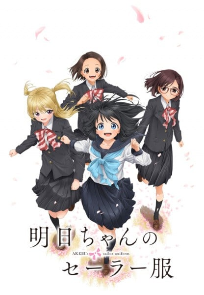
7.6「明日同学的水手服」（2022）是一部TV，由黒木美幸执导，制作CloverWorks，类型包括日常、百合、校园，评分7.6，在本站出现在4份片单中，例如高分治愈系动漫推荐、高分校园动漫推荐、高分女性向动漫。页面只做片单对照，不提供播放。舞台位于乡下的名门女子初级中学——私立蜡梅学园。 有一位名叫明日小路的少女，梦想着能够穿上这所学园的水手服。 因为某个契机，她实现了这一梦想，于是在紧张中迎来了开学典礼的日子—— 「我要穿水手服」 怀抱着决心，少女梦想的初中生活就此展开♪ 。
#318隐瞒之事
 7.6
7.6「隐瞒之事」（2020）是一部TV，由村野佑太执导，制作亜細亜堂，类型包括日常、治愈、搞笑，评分7.6，在本站出现在3份片单中，例如高分治愈系动漫推荐、必看搞笑动漫、漫画改编动漫推荐。页面只做片单对照，不提供播放。ちょっと下品な漫画を描いてる漫画家の後藤可久士。 一人娘の小学4年生の姫。 可久士は、何においても、愛娘・姫が最優先。 親バカ・可久士が娘・姫に知られたくないこと。 それは…… 自分の仕事が『漫画家』であること。 自分の“かくしごと”が知ら。
#319南家三姐妹
 7.6
7.6「南家三姐妹」（2007）是一部TV，由太田雅彦执导，制作童夢，类型包括搞笑、日常、喜剧，评分7.6，在本站出现在4份片单中，例如高分治愈系动漫推荐、高分校园动漫推荐、必看搞笑动漫。页面只做片单对照，不提供播放。南春香是一个外表出色个性优秀的完美学生。在学校里，性格开朗温和的她是许多人爱慕的对象，保坂就是其中的一员。学校里流传着许多和春香有关的传说，她更是以“第一代首领”的名号著称。在妹妹南夏奈和南千秋的眼中，春香是一个母亲般的存在。夏奈是个四肢发。
#320来玩游戏吧
 7.6
7.6「来玩游戏吧」（2018）是一部TV，由岸誠二执导，制作Lerche(ラルケ)，类型包括搞笑、日常、校园，评分7.6，在本站出现在5份片单中，例如高分治愈系动漫推荐、高分校园动漫推荐、必看搞笑动漫。页面只做片单对照，不提供播放。生在日本长在日本、完全不会说英语的金发美少女·奥莉薇，性格认真、知性洋溢、完全不会说英语的短发眼镜娘·香纯，以及虽然性格开朗却无法成为现充的下双马尾少女·华子，三名初中女生创造出来的是“游戏研究会”！？超级可爱有趣、令人捧腹绝倒的JC女生喜。
#321好想告诉你
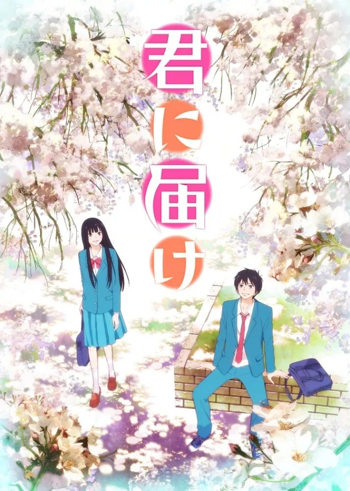
7.6「好想告诉你」（2009）是一部TV，由鏑木ひろ执导，类型包括校园、治愈、恋爱，评分7.6，在本站出现在5份片单中，例如高分恋爱动漫推荐、高分治愈系动漫推荐、高分校园动漫推荐。页面只做片单对照，不提供播放。故事围绕着一个外表看起来阴暗到会被周围人称为“贞子”的女高中生黑沼爽子展开，描述她通过努力逐渐消除周围人的误解，并得到友情与爱情的故事。有着浓黑长发，惨白皮肤的黑沼爽子的座右铭是“日行一善”，喜欢帮助他人，所以一直担任班级委员，由于小学时不。
#322迷糊餐厅 第二季
 7.6
7.6「迷糊餐厅 第二季」（2011）是一部TV，由大槻敦史执导，类型包括搞笑、日常、恋爱，评分7.6，在本站出现在4份片单中，例如高分恋爱动漫推荐、高分治愈系动漫推荐、必看搞笑动漫。页面只做片单对照，不提供播放。wagnaria，2011年10月，再开业！ 官网地址：http://www.wagnaria.com/。
#323荒川爆笑团2
 7.6
7.6「荒川爆笑团2」（2010）是一部TV，由新房昭之执导，制作SHAFT，类型包括搞笑、日常、恋爱，评分7.6，在本站出现在5份片单中，例如高分恋爱动漫推荐、高分治愈系动漫推荐、必看搞笑动漫。页面只做片单对照，不提供播放。“能和我谈一场恋爱么？” 舞台是荒川河畔。在那里相遇的精英青年・市之宫行（通称リク）与自称是金星人的无家美少女・ニノ，笨拙的两人的恋爱有时古怪、有时又令人心痛……。以这样的两人为中心，描绘荒川居民不断卷起骚动的日常。 元祖电波系新感觉温馨恋。
#324罗小黑战记
 7.6
7.6「罗小黑战记」（2019）是一部剧场版，由木头(MTJJ)执导，制作寒木春华，类型包括奇幻、治愈、战斗，评分7.6，在本站出现在7份片单中，例如高分动画剧场版推荐、高分热血动漫推荐、高分治愈系动漫推荐。页面只做片单对照，不提供播放。在熙攘的人类世界里，很多妖精隐匿其中，他们与人类相安无事地生活着。猫妖罗小黑因为家园被破坏，开始了它的流浪之旅。这场旅途中惺惺相惜的妖精同类与和谐包容的人类伙伴相继出现，让小黑陷入了两难抉择，究竟何处才是真正的归属？。
#325请问您今天要来点兔子吗？BLOOM
 7.6
7.6「请问您今天要来点兔子吗？BLOOM」（2020）是一部TV，由橋本裕之执导，制作エンカレッジフィルムズ（鵲），类型包括百合、日常、治愈，评分7.6，在本站出现在4份片单中，例如高分治愈系动漫推荐、必看搞笑动漫、高分女性向动漫。页面只做片单对照，不提供播放。心爱来到这木造街道，也已度过第二次夏天，季节即将来到，充满各式祭典的秋天。学校也好、Rabbit House也好，今天也有许多有趣的事。心爱、智乃、还有大家，未来仍有更多令人兴奋的事件。
#326剧场版 空之境界 未来福音 extra chorus
 7.6
7.6「剧场版 空之境界 未来福音 extra chorus」（2013）是一部剧场版，由あおきえい执导，类型包括奇幻、战斗、恋爱，评分7.6，在本站出现在7份片单中，例如高分动画剧场版推荐、高分热血动漫推荐、高分恋爱动漫推荐。页面只做片单对照，不提供播放。「劇場版 空の境界 未来福音」の同時上映作品。「空の境界」シリーズの原作者・奈須きのこと武内崇による同人サークル「竹箒」名義で2008年に発表された「空の境界 未来福音」（小説2編・漫画3編）に収録されている、武内崇による漫画「1998年」。
#327好想告诉你 第二季
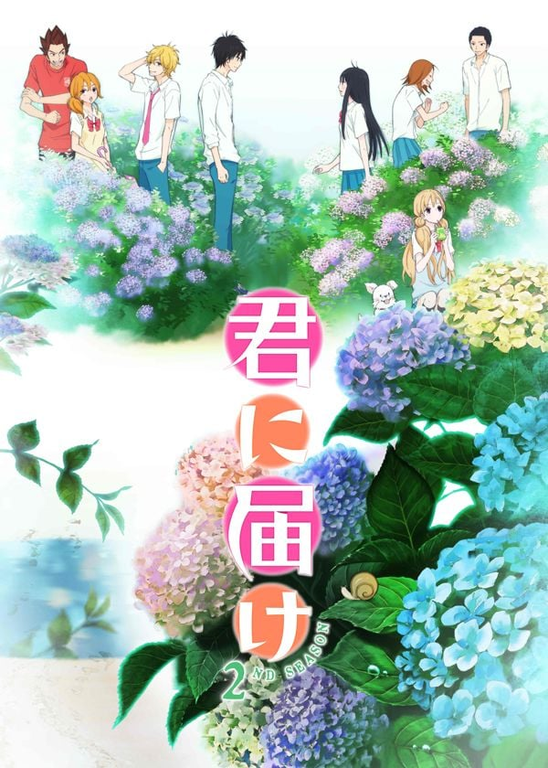
7.6「好想告诉你 第二季」（2011）是一部TV，由鏑木ひろ执导，类型包括恋爱、治愈、校园，评分7.6，在本站出现在4份片单中，例如高分恋爱动漫推荐、高分治愈系动漫推荐、高分校园动漫推荐。页面只做片单对照，不提供播放。因为外表阴暗而被人疏远，有着外号“贞子”的黑沼爽子。习惯了周围回避自己的爽子对接受自己的风早翔太满怀憧憬。在鼓励着自己的风早、失野朱音、吉田千鹤、真田龙这些同班同学的关怀下，爽子渐渐地改变着自己。 这是一部细腻地描写爽子认识友情和爱情、对手。
#328剧场版 花开伊吕波 HOME SWEET HOME
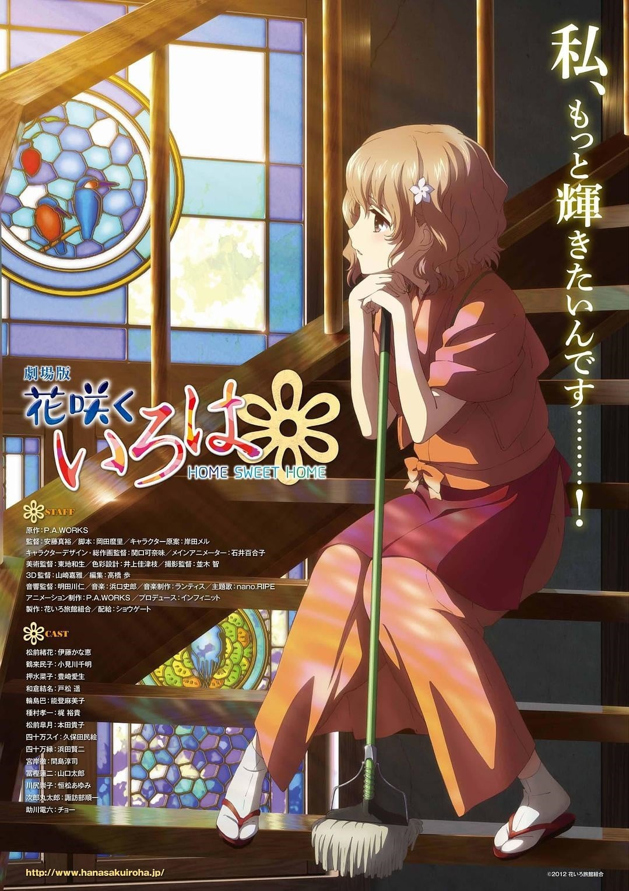
7.6「剧场版 花开伊吕波 HOME SWEET HOME」（2013）是一部剧场版，由安藤真裕执导，类型包括治愈、日常、恋爱，评分7.6，在本站出现在5份片单中，例如高分动画剧场版推荐、高分恋爱动漫推荐、高分治愈系动漫推荐。页面只做片单对照，不提供播放。东京出身的女子高中生 松前绪花 入住了祖母经营的温泉旅馆“喜翠庄”。在与见习厨师鹤来民子和见习仲居押水菜子度过的日子中，习惯了喜翠庄生活的绪花渐渐开始注意到的自身的变化。 深秋的某天，同班同学、竞争对手“福屋”旅馆的女儿 和仓结名来到了喜翠。
#329南家三姐妹 我回来了
 7.6
7.6「南家三姐妹 我回来了」（2013）是一部TV，由川口敬一郎执导，类型包括日常、搞笑、治愈，评分7.6，在本站出现在4份片单中，例如高分治愈系动漫推荐、高分校园动漫推荐、必看搞笑动漫。页面只做片单对照，不提供播放。讲述了南家三姐妹，春香、夏奈和千秋三人在家和校园里的日常生活以及周围人们故事。
#330妄想学生会 OAD
 7.6
7.6「妄想学生会 OAD」（2011）是一部OVA/WEB，由金澤洪充执导，类型包括搞笑、校园、日常，评分7.6，在本站出现在5份片单中，例如高分OVA与WEB动画、高分治愈系动漫推荐、高分校园动漫推荐。页面只做片单对照，不提供播放。这部「妄想学生会」将依然以男生28人、女生524人的樱才学园学生会作为故事主要的舞台，依然将以糟糕NETA乱飞的风格呈献给各位观众。 出演这次OAD的STAFF、CAST依然和TV保持一致。
#331向山进发 第二季
「向山进发 第二季」（2014）是一部TV，由山本裕介执导，制作エイトビット，类型包括百合、治愈、日常，评分7.6，在本站出现在3份片单中，例如高分治愈系动漫推荐、高分女性向动漫、漫画改编动漫推荐。页面只做片单对照，不提供播放。故事承接第一季剧情，葵在重遇喜欢户外活动的青梅竹马朋友日向后，再次进行登山活动，实现了再一次看到小时候看过的山顶日出这样想法，并且与枫和心夏成为了好朋友。 而接下来，葵她们将不断的挑战着自己，决定登上富士山。
#332DDDD 恶魔的破坏
 7.6
7.6「DDDD 恶魔的破坏」（2024）是一部OVA/WEB，由黒川智之执导，类型包括科幻、日常、剧情，评分7.6，在本站出现在5份片单中，例如高分OVA与WEB动画、高分治愈系动漫推荐、高分科幻动漫推荐。页面只做片单对照，不提供播放。3年前の8月31日、巨大な宇宙船「母艦」が突如として東京に襲来し、世界は終わりを迎えるかに見えた。その後、絶望的な状況は次第に日常に溶け込み、上空に母艦が浮遊する異様な光景が当たり前となっていた。そんな中、女子高生の小山門出と「おんたん」こ。
#333编舟记
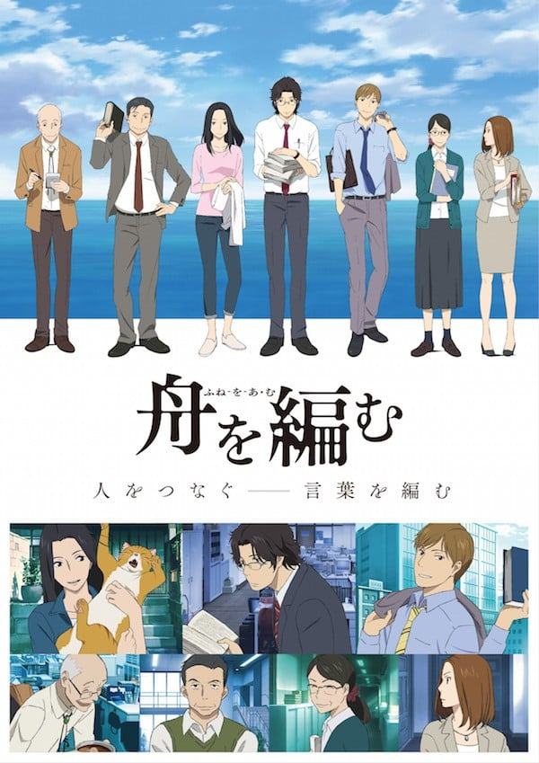
7.6「编舟记」（2016）是一部TV，由黒柳トシマサ执导，类型包括治愈、日常、剧情，评分7.6，在本站出现在2份片单中，例如高分治愈系动漫推荐、轻小说改编动漫推荐。页面只做片单对照，不提供播放。不善言辞却成为营业部员的马缔光也，与看似轻佻却成为辞典编辑部员的西冈正志，偶然在街上相遇。 推进着中型国语辞典《大渡海》刊行计划的出版社·玄武书房的老牌编辑·荒木，因自己临近退休而努力寻找着后继者。此时他从西冈那里听闻了马缔的事情，于是选上。
#334你看起来很好吃
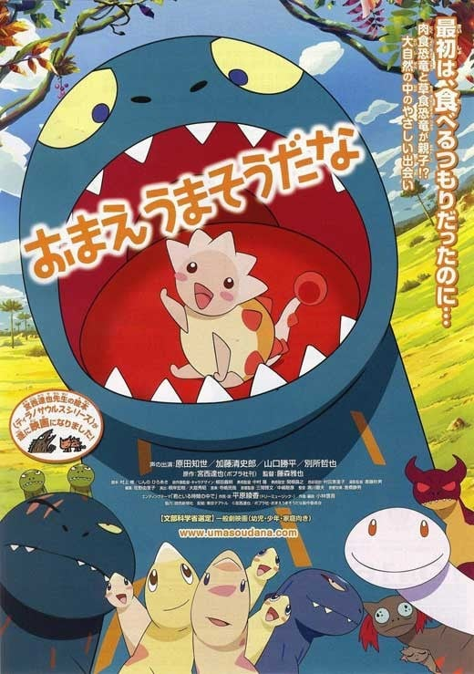
7.6「你看起来很好吃」（2010）是一部剧场版，类型包括治愈，评分7.6，在本站出现在4份片单中，例如高分动画剧场版推荐、高分治愈系动漫推荐、漫画改编动漫推荐。页面只做片单对照，不提供播放。被草食系恐龙母亲抚养长大的霸王龙 Heart 一天天长高长大，也一天天发现身边出现了很多害怕它的声音。一天，Heart 敲碎了一个蛋壳，于是，它遇上了从蛋壳里蹦出来的草食系小甲龙。Heart 脱口而出，“你看起来好像很好吃。”令它意外的是，。
#335妄想学生会＊ OAD
 7.6
7.6「妄想学生会＊ OAD」（2014）是一部OVA/WEB，由金澤洪充执导，类型包括搞笑、校园、日常，评分7.6，在本站出现在5份片单中，例如高分OVA与WEB动画、高分治愈系动漫推荐、高分校园动漫推荐。页面只做片单对照，不提供播放。2期OAD系列。 2#14は2014年5月16日発売 第10巻限定版同梱DVDに収録。 2#16は2015年2月17日発売 第11巻限定版同梱DVDに収録。 2#17は2015年9月17日発売 第12巻限定版同梱DVDに収録。 2#18は2。
#336心灵奇旅
 7.6
7.6「心灵奇旅」（2020）是一部剧场版，由Pete Docter执导，制作Pixar Animation Studios，类型包括治愈、奇幻、音乐，评分7.6，在本站出现在7份片单中，例如高分美漫与动画电影、高分动画剧场版推荐、高分治愈系动漫推荐。页面只做片单对照，不提供播放。主角Gardner是一个生活很容易看穿的中学音乐老师，而他真正的梦想是弹钢琴——不是像他现在做的一样只教孩子们弹钢琴，而是以做音乐、做爵士乐来谋生。当他终于拿到人生第一份音乐人的工作，却不小心掉进了下水道“死”了，并在一个黑洞中醒来，成为了。
#337灰羽联盟
 7.6
7.6「灰羽联盟」（2002）是一部TV，由ところともかず执导，制作RADIX MOBANIMATION，类型包括治愈、百合、奇幻，评分7.6，在本站出现在4份片单中，例如高分治愈系动漫推荐、高分奇幻冒险动漫、高分女性向动漫。页面只做片单对照，不提供播放。从梦中惊醒的少女，突然注意到自己在什么东西里面，很柔软的东西，还有从对面传来的声音···。（砾）发现了Old Home的一间房里有一个很大的“茧”正在形成，便急忙开始了准备。原来是同族的新成员要诞生了。 过不大一会儿，好像是受声音的引导，一。
#338监狱兔 第四季
 7.6
7.6「监狱兔 第四季」（2011）是一部TV，类型包括搞笑、喜剧、日常，评分7.6，在本站出现在3份片单中，例如高分治愈系动漫推荐、必看搞笑动漫、原创动画推荐。页面只做片单对照，不提供播放。故事围绕着两只在1961年的苏联时于监狱服刑的兔子普京(プーチン)和基里连科(キレネンコ)展开。 接第三季结尾，普京和基里连科得到了兹鲁宗洛夫的财产，打算要安定下来。普京把损坏的机械列克修好，而基里连科还像往常一样沉迷于鞋类杂志。然而复活的。
#339夏目友人帐 曾几何时下雪之日
 7.6
7.6「夏目友人帐 曾几何时下雪之日」（2014）是一部OVA/WEB，由出合小都美执导，类型包括治愈、奇幻、日常，评分7.6，在本站出现在5份片单中，例如高分OVA与WEB动画、高分治愈系动漫推荐、高分校园动漫推荐。页面只做片单对照，不提供播放。『夏目友人帐』第四季的新作OVA。描写了能够看见妖怪的少年夏目与猫咪老师一起，和其他妖怪们进行交流的小故事。
#340向山进发 回忆的礼物
 7.6
7.6「向山进发 回忆的礼物」（2018）是一部OVA/WEB，由山本裕介执导，类型包括百合、日常、治愈，评分7.6，在本站出现在4份片单中，例如高分OVA与WEB动画、高分治愈系动漫推荐、高分女性向动漫。页面只做片单对照，不提供播放。「Present1 夏 ここなの8/31」 8月31日。夏休みの最後に、大好きなお母さんとおでかけの約束をしていたここな。 ところが急な仕事が入ったお母さんはここなと一緒に出かけられなくなってしまい、ここなはひとりで飯能の街を散歩することに。
#341乱马1/2
 7.6
7.6「乱马1/2」（1989）是一部TV，由芝山努执导，类型包括搞笑、奇幻、日常，评分7.6，在本站出现在5份片单中，例如高分恋爱动漫推荐、高分治愈系动漫推荐、高分奇幻冒险动漫。页面只做片单对照，不提供播放。早乙女乱马是一名修习武学的日本少年，来到中国青海咒泉乡（虚构的地点）修行，不慎落入“女溺泉”（又称娘溺泉），因而遇到冷水就会变成女孩，遇到热水又会恢复成男孩。而他的父亲，朋友等也因为曾经掉到不同的泉水里会变身为熊猫、小黑猪、猫、鸭子等等。这。
#342岁月的童话
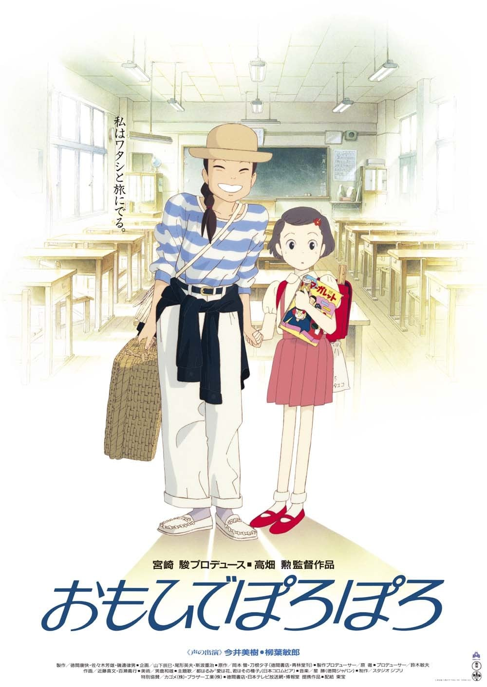
7.6「岁月的童话」（1991）是一部剧场版，由高畑勲执导，类型包括治愈、剧情、日常，评分7.6，在本站出现在4份片单中，例如高分动画剧场版推荐、高分治愈系动漫推荐、漫画改编动漫推荐。页面只做片单对照，不提供播放。妙子是27岁的粉领族，有一天，她开始对自己的生活方式和意义产生疑问，百思不得其解下，于是独自一人出发，展开为期10天的旅行。在旅途中，小学五年级的回忆突然在她的脑海浮现，伴随着她一路来到了山形。在当地停留期间，妙子敞开心灵亲近田园景致，更和。
#343×××HOLiC 春梦记
 7.6
7.6「×××HOLiC 春梦记」（2009）是一部OVA/WEB，由水島努执导，制作Production I.G，类型包括奇幻、治愈、日常，评分7.6，在本站出现在4份片单中，例如高分OVA与WEB动画、高分治愈系动漫推荐、高分奇幻冒险动漫。页面只做片单对照，不提供播放。高中生四月一日君寻，有着异于常人的体质，他可以看到并且吸引各种鬼怪。他的好友百目鬼也是特殊能力者，有驱除妖魔的能力。在命运的牵引下，四月一日在壹原侑子的店里打工。这是一家可以帮人实现任何愿望的店，但是委托人必须付出对等代价。不久后，四月一日。
#344玩具总动员3
 7.6
7.6「玩具总动员3」（2010）是一部剧场版，由Lee Unkrich执导，制作Pixar Animation Studios，类型包括搞笑、治愈、奇幻，评分7.6，在本站出现在8份片单中，例如高分美漫与动画电影、高分动画剧场版推荐、高分治愈系动漫推荐。页面只做片单对照，不提供播放。距上一次的冒险已经过去11个年头，转眼间安迪（约翰·莫里斯 John Morris 配音）变成了17岁的阳光男孩。这年夏天，安迪即将开始大学生活，他必须将自己的房间收拾整齐留给妹妹。此前，伍迪（汤姆·汉克斯 Tom Hanks 配音）与巴斯。
#345江户盗贼团五叶
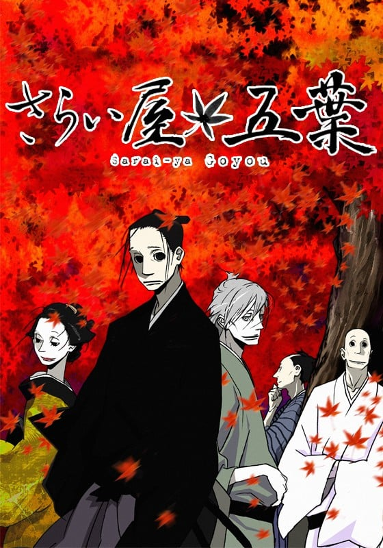
7.6「江户盗贼团五叶」（2010）是一部TV，由望月智充执导，制作Manglobe，类型包括历史、治愈，评分7.6，在本站出现在2份片单中，例如高分治愈系动漫推荐、漫画改编动漫推荐。页面只做片单对照，不提供播放。主人公秋津政之助是一个浪人。他害怕见到生人，很容易紧张和说错话，所以丢掉了好不容易找到的工作。因为剑法不错，所以被美男子弥一雇用为保镖。没想到弥一其实是从事诱拐绑架活动的组织“五叶”的头领。因为家里需要用钱，政之助无法辞掉这份工作。
#346樱桃小丸子
 7.6
7.6「樱桃小丸子」（1995）是一部TV，由須田裕美子执导，制作日本アニメーション，类型包括搞笑、日常、治愈，评分7.6，在本站出现在3份片单中，例如高分治愈系动漫推荐、必看搞笑动漫、漫画改编动漫推荐。页面只做片单对照，不提供播放。『ちびまる子ちゃん』（ちびまるこちゃん）は、さくらももこによる日本の漫画作品やそれを元にしたアニメ作品、またはその主人公のあだ名。作者の子供時代の思い出を軸に、普通の小学生の生活を綴るコメディ。また、ドラマでまる子を演じた森迫永依・伊藤綺夏。
#347哆啦A梦：大雄的绘画奇遇记
 7.6
7.6「哆啦A梦：大雄的绘画奇遇记」（2025）是一部剧场版，由寺本幸代执导，类型包括奇幻、异世界、治愈，评分7.6，在本站出现在8份片单中，例如高分动画剧场版推荐、高分治愈系动漫推荐、高分异世界动漫推荐。页面只做片单对照，不提供播放。哆啦A梦电影45周年纪念之作！新闻中一幅价值数十亿日元的名画引发轰动，而画作残片竟意外坠入到大雄手中！哆啦A梦一行人进入画中的世界并邂逅了神秘少女可蕾雅。在她的请求下，众人前往新闻中的中世纪欧洲“雅托利亚公国”。传说中这里存在一种蕴含神秘力。
#348不可思议的教室
 7.6
7.6「不可思议的教室」（2005）是一部TV，由新房昭之执导，制作ガンジス，类型包括搞笑、校园、日常，评分7.6，在本站出现在4份片单中，例如高分治愈系动漫推荐、高分校园动漫推荐、必看搞笑动漫。页面只做片单对照，不提供播放。11岁的桃月学院高中老师丽贝卡·宫本，毕业于美国麻省理工大学，是一个超级天才混血儿。担当1年级C班导师的她，发现自己班上的学生全部是些不可思议的怪人——宫本老师愉快而又多灾多难的教书生涯，就在这样的一群人中展开了……。
#349逮捕令
 7.6
7.6「逮捕令」（1996）是一部TV，由わたなべひろし(～30話)执导，类型包括搞笑、日常，评分7.6，在本站出现在3份片单中，例如高分治愈系动漫推荐、必看搞笑动漫、漫画改编动漫推荐。页面只做片单对照，不提供播放。故事是在叙述警视厅墨东警署交通科的二个女警员─小早川美幸和辻本夏实的故事，除了发生在她们身上的各个事件外，再加上她们和周遭朋友的关系所构成的轻松风格写实喜剧。
#350ToHeart
「ToHeart」（1999）是一部TV，由高橋ナオヒト执导，制作OLM Team WASAKI，类型包括恋爱、校园、日常，评分7.6，在本站出现在4份片单中，例如高分恋爱动漫推荐、高分治愈系动漫推荐、高分校园动漫推荐。页面只做片单对照，不提供播放。1999年，KSS制作了动画《To Heart》，共十三集。第二个相关动画《To Heart 青春纪事》（To Heart ～Remember My Memories～）直到2004年10月才在日本推出。《To Heart》系列在日本受到相。
#351向阳素描×365 特别篇
 7.6
7.6「向阳素描×365 特别篇」（2009）是一部OVA/WEB，由新房昭之执导，制作SHAFT，类型包括治愈、百合、日常，评分7.6，在本站出现在5份片单中，例如高分OVA与WEB动画、高分治愈系动漫推荐、高分校园动漫推荐。页面只做片单对照，不提供播放。[可以算是为第三季预热把] 一位憧憬山吹高中美术科，并以优异的成绩入学的少女由乃。因为家中离学校很远，而住在学校校门前的公寓“向阳庄”。住在隔壁的是同学年的同学宫子而在各自房间正下方的是学姊寻和沙英。因为聚集了各种不同性格的艺术家，使得每天。
#352空中秋千
 7.6
7.6「空中秋千」（2009）是一部TV，类型包括治愈、奇幻、剧情，评分7.6，在本站出现在4份片单中，例如高分治愈系动漫推荐、高分奇幻冒险动漫、必看搞笑动漫。页面只做片单对照，不提供播放。突然遭遇失败的空中秋千运动员、有极度恐高证的小流氓、有妄想证且自我感觉过分良好的模特……像这些抱着各种烦恼的病人，不断地拜访伊良部综合医院。在这里担任心理治疗的是院长的儿子伊良部一郎，他的助手是拥有F-CUP的性感护士真由美。对待病人，伊良。
#353海洋之歌
 7.6
7.6「海洋之歌」（2015）是一部剧场版，由Tomm Moore执导，类型包括奇幻、音乐、治愈，评分7.6，在本站出现在6份片单中，例如高分美漫与动画电影、高分动画剧场版推荐、高分治愈系动漫推荐。页面只做片单对照，不提供播放。故事背景设置在了现代社会，是有关于一个塞尔奇小精灵的民间传说，她是最后一个拥有着海豹外貌却能化为人形的生物，尝试着想要重新回到大海里——那是一个童话世界即将终结的时间点，所有只存在于民间传说中的生物全部在现代社会的影响下，愈加地堕落、腐败，。
#354向阳素描×☆☆☆ 特别篇
 7.6
7.6「向阳素描×☆☆☆ 特别篇」（2010）是一部OVA/WEB，由新房昭之执导，制作SHAFT，类型包括治愈、百合、日常，评分7.6，在本站出现在5份片单中，例如高分OVA与WEB动画、高分治愈系动漫推荐、高分校园动漫推荐。页面只做片单对照，不提供播放。由苍树梅老师创作的四格漫画「向阳素描」，在新房及SHAFT的制作小组合作下，围绕向阳四子由乃、小宫、寻及沙英展开的动画在今年年初已经顺利播放了第三季，并一如以往四子的萌力在动画中大放异彩，成为值得推介的作品。向阳的故事是讲述向往着美术班的由。
#355向阳素描×SP
 7.6
7.6「向阳素描×SP」（2011）是一部OVA/WEB，由新房昭之执导，制作SHAFT，类型包括治愈、百合、日常，评分7.6，在本站出现在5份片单中，例如高分OVA与WEB动画、高分治愈系动漫推荐、高分校园动漫推荐。页面只做片单对照，不提供播放。真-治愈系《向阳素描》第四季预热用OVA。
#356茄子：安达卢西亚之夏
「茄子：安达卢西亚之夏」（2003）是一部剧场版，由高坂希太郎执导，类型包括运动、治愈、剧情，评分7.6，在本站出现在5份片单中，例如高分动画剧场版推荐、高分热血动漫推荐、高分治愈系动漫推荐。页面只做片单对照，不提供播放。安达卢西亚位于西班牙南部的地中海西岸，面临太平洋。现在，这里正在举行世界最大自行车比赛之一的环西班牙大奖赛。选手帕帕·贝奈海利所属的PaoPao啤酒队是一只弱小的队伍。但是，在山路的安达卢西亚赛段，强队的选手们都会保存体力，所以这就成了为P。
#357风人物语
 7.6
7.6「风人物语」（2004）是一部TV，由西村純二执导，制作Production I.G，类型包括治愈、日常、校园，评分7.6，在本站出现在4份片单中，例如高分治愈系动漫推荐、高分校园动漫推荐、高分奇幻冒险动漫。页面只做片单对照，不提供播放。中学二年级的奈绪是学校里数码摄影部的部长，虽说是部长，不过也只是有两个部员参加的小社团而已。奈绪很喜欢四处摄影，不过不知为什么奈绪拍的尽是些天空和云的照片。 这一天，奈绪象往常一样在校舍屋顶上拍摄，却意外的遇上了一只能自由的操纵风，在天空中。
#358RE:cycle of the PENGUINDRUM [后篇] 我爱你
![RE:cycle of the PENGUINDRUM [后篇] 我爱你 2022 动漫海报](../covers/b379789.jpg) 7.6
7.6「RE:cycle of the PENGUINDRUM [后篇] 我爱你」（2022）是一部剧场版，由幾原邦彦执导，类型包括奇幻、治愈、日常，评分7.6，在本站出现在5份片单中，例如高分动画剧场版推荐、高分治愈系动漫推荐、高分奇幻冒险动漫。页面只做片单对照，不提供播放。2011年にテレビ放送された幾原邦彦監督によるオリジナルアニメ「輪（まわ）るピングドラム」のテレビシリーズ全24話を再構築し、新作パートを追加して前後編で劇場公開する2部作の後編。高倉家の双子の兄弟・冠葉と晶馬が病気の妹・陽毬の命を救うため。
#359甜甜私房猫 第二季
 7.6
7.6「甜甜私房猫 第二季」（2009）是一部TV，由増原光幸执导，制作MADHOUSE，类型包括治愈、搞笑、日常，评分7.6，在本站出现在3份片单中，例如高分治愈系动漫推荐、必看搞笑动漫、漫画改编动漫推荐。页面只做片单对照，不提供播放。描述一只黑灰斑纹的小猫跟丢母亲又找不到回家的路，在筋疲力尽累瘫之际巧遇一个跌倒的小男孩，从此由男孩一家暂时照顾。因男孩家为禁止饲养宠物的公寓，一家人还得费尽心机不让邻居发现小猫的存在，只是偏偏一直找不到饲主又和小猫日久生情。在经历某些事情后。
#360小马宝莉：友谊就是魔法 第六季
 7.6
7.6「小马宝莉：友谊就是魔法 第六季」（2016）是一部TV，类型包括日常、奇幻、搞笑，评分7.6，在本站出现在6份片单中，例如高分美漫与动画电影、高分治愈系动漫推荐、高分奇幻冒险动漫。页面只做片单对照，不提供播放。小马宝莉：友谊就是魔法 第六季。2016。日常、奇幻、搞笑。
#361玻璃假面
「玻璃假面」（2005）是一部TV，由浜津守执导，制作東京ムービー，类型包括少女、百合、治愈，评分7.6，在本站出现在4份片单中，例如高分恋爱动漫推荐、高分治愈系动漫推荐、高分女性向动漫。页面只做片单对照，不提供播放。北岛麻亚是个平凡的高中生，与母亲住在中华料理店的二楼，但麻亚十分喜爱戏剧，只要是她看过一次的戏，就可以将全部台词背起来。她获选参与学园祭的戏剧演出机会，但她所饰演的角色是村裏最穷，受人嘲笑的角色，令她感到十分自卑。这时，一个偶然的机会，让麻。
#362悲惨世界 少女珂赛特
「悲惨世界 少女珂赛特」（2007）是一部TV，由桜井弘明执导，类型包括治愈、少女、历史，评分7.6，在本站出现在3份片单中，例如高分治愈系动漫推荐、高分女性向动漫、轻小说改编动漫推荐。页面只做片单对照，不提供播放。主角珂赛特是一位开朗坚强又友善的少女。原作上是有活力，有着艰苦的意力做着。有着与母亲一样的蓝宝石般大眼睛和白皙肌肤，也拥有漂亮的金发。珂赛特在3岁时寄托给德纳第一天之后，到8岁的生日6月17日为止的5年来都在蒙菲尔美度过的。她在德纳第所经营。
#363来来猫
 7.6
7.6「来来猫」（2009）是一部TV，由大地丙太郎执导，制作ダックスプロダクション，类型包括治愈、日常、搞笑，评分7.6，在本站出现在3份片单中，例如高分治愈系动漫推荐、必看搞笑动漫、漫画改编动漫推荐。页面只做片单对照，不提供播放。故事开始时，主角遇到了沉稳的小猫“文小姐”，接着在公园里遇到了任性的小猫“碰子”，接着还有淘气但很有兄长气质的“波”也加入了进来。后来又捡到了一只猫，并给它起名为“留”，寓意“猫到此为止了”。不知不觉中，主角与这四只被称为“佝偻猫愚连队”的。
#364老鼠的麻烦
 7.6
7.6「老鼠的麻烦」（1944）是一部剧场版，由约瑟夫·巴伯拉执导，类型包括搞笑、治愈，评分7.6，在本站出现在6份片单中，例如高分美漫与动画电影、高分动画剧场版推荐、高分治愈系动漫推荐。页面只做片单对照，不提供播放。汤姆邮购了一本书，名为《如何捉老鼠》。它按照书中的章节逐个尝试，要么不灵验，要么就被杰瑞一一破解。两个小家伙的战争并未就此结束，它们在家中大打出手，从最初的老鼠夹子到各类工具再到烟花炮竹，无所不用其极，都成了它们的制胜武器。然而无论汤姆多么。
#365男孩和世界
「男孩和世界」（2014）是一部剧场版，由Alê Abreu执导，类型包括治愈，评分7.6，在本站出现在5份片单中，例如高分美漫与动画电影、高分动画剧场版推荐、高分治愈系动漫推荐。页面只做片单对照，不提供播放。Suffering from the lack of the father, a boy leaves his village and discovers a fantastic world dominated by animal-mach。
#366埃塞尔与欧内斯特
「埃塞尔与欧内斯特」（2016）是一部剧场版，由Roger Mainwood执导，类型包括治愈、家庭、历史，评分7.6，在本站出现在5份片单中，例如高分美漫与动画电影、高分动画剧场版推荐、高分治愈系动漫推荐。页面只做片单对照，不提供播放。英国手绘动画电影，改编自Raymond Briggs以其父母真实人生为故事所绘的获奖和畅销绘本，讲述Raymond Briggs的父母，一对普通英国夫妇从1928年初遇相爱到1971年相继离世的故事，日子随男主人的发际线一起消逝，一生平淡无。
#367BB有心事
「BB有心事」（1996）是一部TV，由大森貴弘执导，制作ぴえろ，类型包括治愈、家庭、日常，评分7.6，在本站出现在2份片单中，例如高分治愈系动漫推荐、漫画改编动漫推荐。页面只做片单对照，不提供播放。11岁的少年榎木拓也拥有一个幸福的家庭，父母关系和睦，同时还有一个可爱的弟弟榎木实。一场突出起来的车祸让他的生活发生了翻天覆地的变化，母亲在车祸中丧生，在悲痛中，父亲榎木春美成为了家里唯一的支柱。为了减轻父亲的负担，拓也担负起了照顾弟弟的责。
#368我们仍未知道那天所看见的花的名字。
 7.5
7.5「我们仍未知道那天所看见的花的名字。」（2011）是一部TV，由長井龍雪执导，类型包括治愈、恋爱、日常，评分7.5，在本站出现在4份片单中，例如高分恋爱动漫推荐、高分治愈系动漫推荐、高分奇幻冒险动漫。页面只做片单对照，不提供播放。从小时候起一直青梅竹马的6人，却在升上高中之后彼此有了距离。不太与人们接触的主角宿海仁太、有点被小太妹熏染的安城鸣子、进入重点高中的松雪集与鹤见知利子、放弃读高中而展开旅行的久川铁道、只有幼年死去的本间芽衣子（灵魂，只有仁太能看见）还是一如。
#369我的青春恋爱物语果然有问题
 7.5
7.5「我的青春恋爱物语果然有问题」（2013）是一部TV，由吉村愛执导，类型包括恋爱、校园、日常，评分7.5，在本站出现在6份片单中，例如高分恋爱动漫推荐、高分治愈系动漫推荐、高分校园动漫推荐。页面只做片单对照，不提供播放。别扭的，没有朋友，没有女朋友，对着那些讴歌青春的同学吐槽着“他们都是骗子，都在说谎，快点爆发把我”的男主角的爱情物语，将来的梦想是“不工作”—— 这样的高中生八幡被生活指导老师的带到了学校第一美少女雪乃所属的“侍奉部”，与美少女意想不到的相。
#370小林家的龙女仆S
 7.5
7.5「小林家的龙女仆S」（2021）是一部TV，由石原立也执导，类型包括日常、搞笑、百合，评分7.5，在本站出现在5份片单中，例如高分治愈系动漫推荐、高分奇幻冒险动漫、必看搞笑动漫。页面只做片单对照，不提供播放。那位不可思议的龙女仆再度登场！ 因为各种奇妙的原因而作为小林家的女仆而工作中的龙·托尔。 偶尔（胡说，是经常）给亲爱的小林添麻烦，总算是融入了人类社会，成为了一个完美的（骗人，也就还行）女仆。 同样是龙的康娜、露科亚、法夫纳、艾露玛一行，也。
#371花开伊吕波
「花开伊吕波」（2011）是一部TV，由安藤真裕执导，类型包括治愈、日常、恋爱，评分7.5，在本站出现在4份片单中，例如高分恋爱动漫推荐、高分治愈系动漫推荐、高分女性向动漫。页面只做片单对照，不提供播放。16岁少女松前緒花，平凡的日常生活在某天迎来了戏剧化的改变。 生于东京的她离开熟悉的环境，来到祖母所经营的拥有大正浪漫氛围的山间温泉旅馆——喜翠庄打工，展开了崭新的生活。 如同阳光下盛开的鲜花一般，相信梦想终有一天一定会开花……。
#372葬送的芙莉莲 第二季
 7.5
7.5「葬送的芙莉莲 第二季」（2026）是一部TV，由北川朋哉执导，制作MADHOUSE，类型包括奇幻、治愈、异世界，评分7.5，在本站出现在6份片单中，例如2026年新番总表、高分热血动漫推荐、高分治愈系动漫推荐。页面只做片单对照，不提供播放。「流泪道别并不适合我们，因为下次再见时会很难为情。」 在勇者欣梅尔一行人击败魔王后的世界中，与欣梅尔等人一同为世界带来和平、活了千年以上的精灵魔法使──芙莉莲。 在面对寿命已尽的欣梅尔之死时，因落下的泪水与心中涌现的情感，踏上了「理解人类之。
#373药屋少女的呢喃
「药屋少女的呢喃」（2023）是一部TV，由長沼範裕执导，制作TOHO animation STUDIO×OLM，类型包括推理、悬疑、治愈，评分7.5，在本站出现在6份片单中，例如高分国漫推荐、高分恋爱动漫推荐、高分治愈系动漫推荐。页面只做片单对照，不提供播放。大陆的中央有个大国，在那个国家的后宫之中有一位少女，其名为“猫猫”。她以前在花街做药师，现在在后宫做事。某天，她得知皇子们皆早夭，而现在的两个皇子都因为生病而逐渐衰弱。于是，在好奇心的驱使下，她开始调查事情的真相，就好像在说世上不可能存在诅。
#374名侦探柯南
「名侦探柯南」（1996）是一部TV，由こだま兼嗣（#1-#118）→山本泰一郎（#119-#332）→佐藤真人（#162执导，制作東京ムービー→トムス・エンタテインメント( V1Studio )，类型包括推理、悬疑、恋爱，评分7.5，在本站出现在4份片单中，例如高分恋爱动漫推荐、高分治愈系动漫推荐、高分悬疑推理动漫。页面只做片单对照，不提供播放。主角工藤新一原本是一位颇具名声的高中生侦探，在目击黑暗组织的地下交易后，正准备追踪时却被突袭击昏，并被灌下代号为“APTX4869”（アポトキシン4869）的不明药物。后来虽然幸免于死，但身体就此缩小为小学时期的模样。之后他化名为江户川柯南。
#375擅长捉弄的高木同学
 7.5
7.5「擅长捉弄的高木同学」（2018）是一部TV，由赤城博昭执导，类型包括恋爱、校园、日常，评分7.5，在本站出现在5份片单中，例如高分恋爱动漫推荐、高分治愈系动漫推荐、高分校园动漫推荐。页面只做片单对照，不提供播放。“今天一定要捉弄高木同学，让她害羞！” 某所中学，在各种方面都被邻座的女生高木同学捉弄的男生西片。 他为了对此反击而每天奋斗，但……？ 这样的高木同学与西片带来的全力“捉弄”青春大战开始了！。
#376街角魔族
 7.5
7.5「街角魔族」（2019）是一部TV，由桜井弘明执导，类型包括百合、日常、搞笑，评分7.5，在本站出现在5份片单中，例如高分治愈系动漫推荐、高分奇幻冒险动漫、必看搞笑动漫。页面只做片单对照，不提供播放。某日突然觉醒暗之力的女子高中生 吉田优子，为着解除施加在暗之一族身上的诅咒，为打倒魔法少女不懈努力。竟对曾经的救命恩人下手？！ 但是却完全没有胜算！ 废柴贫穷魔族与沉稳肌肉魔法少女之间的日常魔法喜剧，就此开幕！。
#377笨蛋，测验，召唤兽！
 7.5
7.5「笨蛋，测验，召唤兽！」（2011）是一部TV，由大沼心执导，制作SILVER LINK.，类型包括搞笑、校园、恋爱，评分7.5，在本站出现在6份片单中，例如高分恋爱动漫推荐、高分治愈系动漫推荐、高分校园动漫推荐。页面只做片单对照，不提供播放。文月学园是按照升学考试的成绩严格分班。集中优等生的A班有着可调节后倾角度的斜靠椅和空调设备，成绩最差的F班只有破烂的矮饭桌和腐烂的榻榻米。F班学生吉井明久为了暗自憧憬的活力少女姫路瑞希，以F班的代表坂本雄二为契机开始挑起战争……。
#378紫罗兰永恒花园 外传 - 永远与自动手记人偶 -
 7.5
7.5「紫罗兰永恒花园 外传 - 永远与自动手记人偶 -」（2019）是一部剧场版，由藤田春香执导，制作京都动画，类型包括治愈、百合、奇幻，评分7.5，在本站出现在7份片单中，例如高分动画剧场版推荐、高分治愈系动漫推荐、高分奇幻冒险动漫。页面只做片单对照，不提供播放。暁佳奈の人気ライトノベルを原作とする京都アニメーション制作のTVアニメ「ヴァイオレット・エヴァーガーデン」の外伝作品。感情を持たない元軍人の少女ヴァイオレットが、手紙を代筆する“自動手記人形”の仕事を通して様々な人たちの想いと向き合い、愛の。
#379电影 中二病也要谈恋爱！ -Take On Me-
 7.5
7.5「电影 中二病也要谈恋爱！ -Take On Me-」（2018）是一部剧场版，由石原立也执导，制作京都动画，类型包括恋爱、校园、搞笑，评分7.5，在本站出现在8份片单中，例如高分动画剧场版推荐、高分恋爱动漫推荐、高分治愈系动漫推荐。页面只做片单对照，不提供播放。“18岁，高中的最后一年。但六花却……依然是中二病！” 在大学考试逼近的高三的春假，勇太与六花依然在一起生活，但看起来至今依然尚未缔结上级契约。就在某天，十花突然说要带六花去意大利生活：因为工作已经稳定下来，所以想要全家一起搬过去住。虽然勇。
#380朝花夕誓——于离别之朝束起约定之花
 7.5
7.5「朝花夕誓——于离别之朝束起约定之花」（2018）是一部剧场版，由岡田麿里执导，制作P.A.WORKS，类型包括治愈、奇幻，评分7.5，在本站出现在6份片单中，例如高分动画剧场版推荐、高分治愈系动漫推荐、高分奇幻冒险动漫。页面只做片单对照，不提供播放。经为流逝的日月。纬为人们的生业。 住在远离尘嚣的土地，一边将每天的事情编织成名为希比欧的布，一边静静生活的伊欧夫人民。在15岁左右外表就停止成长，拥有数百年寿命的他们，被称为“离别的一族”，并被视为活着的传说。没有双亲的伊欧夫少女玛奇亚，过。
#381剧场版 紫罗兰永恒花园
 7.5
7.5「剧场版 紫罗兰永恒花园」（2020）是一部剧场版，由石立太一执导，制作京都动画，类型包括治愈、恋爱、奇幻，评分7.5，在本站出现在7份片单中，例如高分动画剧场版推荐、高分恋爱动漫推荐、高分治愈系动漫推荐。页面只做片单对照，不提供播放。从事代笔职业的她，名叫薇尔莉特·伊芙加登。在让人们伤痕累累的战争结束后数年，崭新的时代来临，世界也逐渐恢复平稳，生活也随着新技术的开发而改变，大家都在向前迈进。但是，薇尔莉特每天都在思念“那个人”，她坚信他一定还活着。直到某天，她在邮局的仓。
#382来自风平浪静的明天
 7.5
7.5「来自风平浪静的明天」（2013）是一部TV，由篠原俊哉执导，制作P.A.WORKS，类型包括恋爱、奇幻、校园，评分7.5，在本站出现在5份片单中，例如高分恋爱动漫推荐、高分治愈系动漫推荐、高分校园动漫推荐。页面只做片单对照，不提供播放。以前的人们生活在海中的世界，能够在大海中呼吸并且生活。然而不久之后憧憬陆地的人们抛弃了大海，舍弃了海神所赐予的羽衣。人类逐渐分成在海中生活的人类以及在陆上生活的人类，原本同样相互交流的人们，随着时间流逝，想法也不相同了。 在海中生活的四名少。
#383卫宫家今天的饭
 7.5
7.5「卫宫家今天的饭」（2017）是一部OVA/WEB，由三浦貴博・佐藤哲人执导，类型包括日常、治愈、搞笑，评分7.5，在本站出现在5份片单中，例如高分OVA与WEB动画、高分治愈系动漫推荐、高分奇幻冒险动漫。页面只做片单对照，不提供播放。Fate×料理所交织而出的美味并温柔的世界—— 那里是随处都可见的稍稍有些热闹的餐桌上的光景。 春夏秋冬、在卫宫家每天都能享受到美味的料理。 今天做些什么呢。
#384小城日常
 7.5
7.5「小城日常」（2025）是一部TV，由石立太一执导，类型包括日常、搞笑、治愈，评分7.5，在本站出现在4份片单中，例如2025年夏季新番推荐、高分治愈系动漫推荐、必看搞笑动漫。页面只做片单对照，不提供播放。この街、ただの街にあらず。 笑いあり プププッ ラブあり キュンキュン ホロリあり ホロリホロリ 住人たちが織りなす 予測不能な平凡ライフ！ ワクワクが連鎖する CITYへようこそ。 [中文简介] 这座城镇，绝非寻常之地。 有欢笑（噗嗤嗤！。
#385请问您今天要来点兔子吗？？
 7.5
7.5「请问您今天要来点兔子吗？？」（2015）是一部TV，由橋本裕之执导，制作KINEMA CITRUS，类型包括百合、治愈、日常，评分7.5，在本站出现在4份片单中，例如高分治愈系动漫推荐、必看搞笑动漫、高分女性向动漫。页面只做片单对照，不提供播放。道に迷って喫茶ラビットハウスにやってきたココア。 実は、そこが彼女が住み込むことになっていた喫茶店で…。 ちっちゃくてクールなチノ、軍人気質なリゼ、おっとり和風な千夜、気品あふれる庶民派のシャロと全方位的なかわいさの登場人物に、チノの同級生。
#386荒川爆笑团
 7.5
7.5「荒川爆笑团」（2010）是一部TV，由新房昭之执导，制作SHAFT，类型包括搞笑、日常、恋爱，评分7.5，在本站出现在4份片单中，例如高分恋爱动漫推荐、高分治愈系动漫推荐、必看搞笑动漫。页面只做片单对照，不提供播放。故事主人翁市之宫行是企业社长的儿子，事刻准备着继承那间世界顶尖的家族生意。从年幼的时候开始，父亲就告诉他“不欠人，不求人”的道理，生活时刻遵守家训。 可是，在一次意外溺水，行被住在桥下荒川钓鱼的ニノ救回性命，就此欠下救命之恩。为了报恩，ニノ。
#387齐木楠雄的灾难 完结篇
 7.5
7.5「齐木楠雄的灾难 完结篇」（2018）是一部TV，由桜井弘明执导，制作EGG FIRM×J.C.STAFF，类型包括搞笑、校园、超能力，评分7.5，在本站出现在4份片单中，例如高分治愈系动漫推荐、高分校园动漫推荐、必看搞笑动漫。页面只做片单对照，不提供播放。完結編では、原作漫画の「忍舞市旅行エピソード」も描かれるぞ！ 忍舞市に集合した斉木たちを襲う災難とは…!? 更にメインビジュアルに空助と鳥束とねこ戦車が登場！ いつもの「澄んだ目をした煩悩だらけのエロ霊能力者・鳥束」の様子が何だかおかしい…。
#388药屋少女的呢喃 第二季
「药屋少女的呢喃 第二季」（2025）是一部TV，由筆坂明規执导，制作TOHO animation STUDIO×OLM，类型包括推理、悬疑、恋爱，评分7.5，在本站出现在6份片单中，例如高分国漫推荐、高分恋爱动漫推荐、高分治愈系动漫推荐。页面只做片单对照，不提供播放。帝の寵妃・玉葉妃の妊娠判明により、 猫猫は翡翠宮の毒見役に復帰。 妃、そして帝の御子を狙った事件が再び起きないよう 警戒をしながら、日々を送っていた。 先帝時代からの重臣を父にもつ新たな淑妃・楼蘭妃の入内、 壬氏の命が狙われた、前代未聞の未。
#389迷糊餐厅
 7.5
7.5「迷糊餐厅」（2010）是一部TV，由平池芳正执导，制作A-1 Pictures，类型包括搞笑、日常、恋爱，评分7.5，在本站出现在4份片单中，例如高分恋爱动漫推荐、高分治愈系动漫推荐、必看搞笑动漫。页面只做片单对照，不提供播放。在史克威尔艾尼克斯的漫画杂志YOUNG GANGAN2005年1号开始连载的四格漫画。以北海道某处被常客评论为“危险的感觉令人上瘾”的餐厅“瓦古娜利亚”为舞台，充满各种奇人异事的四格漫画。登场角色彼此间吐槽相当轻快。 平时以六页为一个单位连。
#390明天，美食广场见。
 7.5
7.5「明天，美食广场见。」（2025）是一部TV，由古賀一臣执导，类型包括日常、百合、搞笑，评分7.5，在本站出现在6份片单中，例如2025年夏季新番推荐、高分治愈系动漫推荐、高分校园动漫推荐。页面只做片单对照，不提供播放。話しかけ難い雰囲気を漂わせる和田と、 ギャルのような見た目で周囲から恐れられている山本。 クラスではそれぞれ一人きりで過ごす和田と山本は、 別々の高校に通っているものの、 毎日のようにショッピングセンターのフードコートに集まっている。 と言。
#391特别篇 吹响吧！上低音号～合奏比赛～
「特别篇 吹响吧！上低音号～合奏比赛～」（2023）是一部剧场版，由石原立也执导，类型包括音乐、校园、百合，评分7.5，在本站出现在6份片单中，例如高分动画剧场版推荐、高分治愈系动漫推荐、高分校园动漫推荐。页面只做片单对照，不提供播放。新世代，开启！ 这是由京都动画所描绘的、 将梦想寄托于吹奏乐上的高中生们那微不足道却又“无比特别"的青春篇章！ 本次中篇动画改编自武田绫乃所著小说「吹响吧！上低音号 北宇治高中吹奏部的真实故事」（宝岛社出版）中的人气章节！ 吹奏乐强校的吹奏。
#392剧场版 白箱
「剧场版 白箱」（2020）是一部剧场版，由水島努执导，类型包括日常、治愈、百合，评分7.5，在本站出现在5份片单中，例如高分动画剧场版推荐、高分治愈系动漫推荐、高分女性向动漫。页面只做片单对照，不提供播放。总有一天不论如何都要一起制作动画——上山高中动画同好会的5人向葫芦屋的甜甜圈如此起誓。她们毕业以后，分别在各自的岗位从事动画制作，并通过《第三飞行少女队》而接近了自己的梦想。 4年后——。在动画的世界找到了自己的容身之所、逐渐成长起来的5人。
#393Love Live! 虹咲学园校园偶像同好会
「Love Live! 虹咲学园校园偶像同好会」（2020）是一部TV，由河村智之执导，类型包括百合、音乐、校园，评分7.5，在本站出现在4份片单中，例如高分治愈系动漫推荐、高分校园动漫推荐、高分女性向动漫。页面只做片单对照，不提供播放。位于东京台场，拥有自由校风和多项专科的人气高中「虹咲学园」。对学园偶像的魅力感到心动的普通科2年级高咲侑，和儿时玩伴上原步梦一起敲响了「学园偶像同好会」的门。 有时作为对手，有时作为同伴，胸怀各自的心意，每天展开活动的成员们。 「如果能够为。
#394出包王女Darkness
 7.5
7.5「出包王女Darkness」（2012）是一部TV，由大槻敦史执导，类型包括校园、搞笑、恋爱，评分7.5，在本站出现在5份片单中，例如高分恋爱动漫推荐、高分治愈系动漫推荐、高分校园动漫推荐。页面只做片单对照，不提供播放。梨斗出包连连的每一天回来了。菈菈的双胞胎妹妹‧梦梦与娜娜转学到彩南高中。为了帮助梨斗变成肉食系男孩，梦梦正策划着「打造后宫」这样的诡异计划……？！不仅如此，还出现了神秘敌人袭击梨斗？！。
#395齐木楠雄的灾难 再始动篇
 7.5
7.5「齐木楠雄的灾难 再始动篇」（2019）是一部OVA/WEB，由桜井弘明执导，制作EGG FIRM×J.C.STAFF，类型包括搞笑、校园、日常，评分7.5，在本站出现在5份片单中，例如高分OVA与WEB动画、高分治愈系动漫推荐、高分校园动漫推荐。页面只做片单对照，不提供播放。楠雄和他那帮自称为朋友的人回来面对更多的超能力灾难。如果说以前他的问题不够多，那现在可谓是麻烦缠身。
#396乱马1/2
 7.5
7.5「乱马1/2」（2024）是一部TV，由宇田鋼之介执导，类型包括恋爱、搞笑、日常，评分7.5，在本站出现在5份片单中，例如高分恋爱动漫推荐、高分治愈系动漫推荐、高分奇幻冒险动漫。页面只做片单对照，不提供播放。早乙女乱馬と、 天道道場三女の天道あかねは親が決めた許婚同士。 しかし乱馬にはある悩みが…。 中国での修行中、伝説の修行場「呪泉郷」に落ちてしまい、 水をかぶると女に、 お湯をかぶると男に戻る という、不思議な体質になってしまっていた！？ 。
#397人形电脑天使心
「人形电脑天使心」（2002）是一部TV，由浅香守生执导，制作MADHOUSE，类型包括治愈、恋爱、科幻，评分7.5，在本站出现在4份片单中，例如高分恋爱动漫推荐、高分治愈系动漫推荐、高分科幻动漫推荐。页面只做片单对照，不提供播放。在不久的将来，电子技术飞速发展，电脑成为人们生活中不可缺少的一部分。主角的名字是本须和秀树，是个19岁的少年，由于考试失败，来到东京上补习班，过着贫穷潦倒的生活…… 到达东京的第一天，他很幸运的在垃圾堆捡到一个人型电脑，一直以来秀树都非常渴。
#398恋如雨止
「恋如雨止」（2018）是一部TV，由渡辺歩执导，类型包括恋爱、治愈、校园，评分7.5，在本站出现在5份片单中，例如高分恋爱动漫推荐、高分治愈系动漫推荐、高分校园动漫推荐。页面只做片单对照，不提供播放。“我，喜欢店长——” 曾是田径部的王牌，但由于某个事件而放弃跑步的17岁女高中生·橘晶。 不擅长表现感情，总被人误会成待人冷淡的晶，其视线的前方是自己在打工的家庭餐厅“Garden”的万年店长·近藤正己。 对店长的心意满溢而出的晶，以及对于。
#399此花绮谭
 7.5
7.5「此花绮谭」（2017）是一部TV，由岡本英樹执导，类型包括百合、治愈、日常，评分7.5，在本站出现在4份片单中，例如高分治愈系动漫推荐、高分奇幻冒险动漫、高分女性向动漫。页面只做片单对照，不提供播放。侍奉神明的狐娘们工作的温泉旅馆“此花亭”。 “此花绮谭”便是来此花亭服务的新人服务员柚，和围绕着柚的伙伴们的暖人心怀的故事。 服务员们想法只有一个。 “不论真实身份是什么，不论是何等样人，客人就是神。” 当然，现在在眼前的你也是…… 请接触。
#400飞翔的魔女
 7.5
7.5「飞翔的魔女」（2016）是一部TV，由桜美かつし执导，制作J.C.STAFF，类型包括日常、治愈、搞笑，评分7.5，在本站出现在4份片单中，例如高分治愈系动漫推荐、高分奇幻冒险动漫、必看搞笑动漫。页面只做片单对照，不提供播放。在青森开始做魔女！ 青森——在这片被丰饶的大自然围绕的土地上，有时会发生些不可思议的事情。 木幡真琴15岁，魔女。和黑猫千户一同从横滨过来的她，开始在青森的亲戚家里修行。虽然现在还只是仅仅能飞上天空这种程度，但她仍然和表兄妹圭和千夏一起度过。
#401恶魔阿萨谢尔在召唤你
 7.5
7.5「恶魔阿萨谢尔在召唤你」（2011）是一部TV，由水島努执导，类型包括搞笑、奇幻、日常，评分7.5，在本站出现在4份片单中，例如高分治愈系动漫推荐、高分奇幻冒险动漫、必看搞笑动漫。页面只做片单对照，不提供播放。芥边侦探事务所，最强的无敌恶魔使芥边以及工读生助手佐隈，依照委托人的要求，召唤出恶魔来执行被委托案件。 然而，召唤出来的恶魔虽然每个都赫赫有名，但每个却也都有着奇妙的中二病性格，让每次的案件都不是这么的顺利…… 原作在日本青年向双周刊《EV。
#402迷糊餐厅 第三季
 7.5
7.5「迷糊餐厅 第三季」（2015）是一部TV，由鎌倉由実执导，类型包括搞笑、日常、恋爱，评分7.5，在本站出现在4份片单中，例如高分恋爱动漫推荐、高分治愈系动漫推荐、必看搞笑动漫。页面只做片单对照，不提供播放。迷糊餐厅 第三季。2015。搞笑、日常、恋爱。
#403借东西的小人阿丽埃蒂
 7.5
7.5「借东西的小人阿丽埃蒂」（2010）是一部剧场版，由米林宏昌执导，类型包括治愈、奇幻、恋爱，评分7.5，在本站出现在7份片单中，例如高分动画剧场版推荐、高分恋爱动漫推荐、高分治愈系动漫推荐。页面只做片单对照，不提供播放。在《借东西的小人阿丽埃蒂》故事里，身高只有10公分的少女“阿丽埃蒂”与她的迷你家族，在日常生活中必须跟老鼠作战、还必须要躲过杀虫剂和补蟑屋等各种不同的危险。 由于必须“借用”许多人类的日用品来生活，又不能被人类发现他们的存在，因此自古以来人。
#404星之梦～星之人～
 7.5
7.5「星之梦～星之人～」（2016）是一部剧场版，由津田尚克执导，类型包括治愈、科幻、恋爱，评分7.5，在本站出现在7份片单中，例如高分动画剧场版推荐、高分恋爱动漫推荐、高分治愈系动漫推荐。页面只做片单对照，不提供播放。「CLANNAD」「Angel Beats!」などで知られるゲームブランドの「Key」が2004年に発表したPCゲーム「planetarian ちいさなほしのゆめ」をアニメーション化。世界大戦によって文明が荒廃した世界。空に星は見えなくなり。
#405妄想学生会 OVA
 7.5
7.5「妄想学生会 OVA」（2012）是一部OVA/WEB，由金澤洪充执导，类型包括搞笑、校园、日常，评分7.5，在本站出现在5份片单中，例如高分OVA与WEB动画、高分治愈系动漫推荐、高分校园动漫推荐。页面只做片单对照，不提供播放。圧倒的な女子高生天国の中、ひょんなことから生徒会副会長に就任した津田タカトシ。 彼は作中登場キャラの中でも、ゴクゴク普通な一般・常識人。 堅いイメージの生徒会。だがそこは、想像を遥かに絶するメンバーがいた… 収録の第16話は何がくるのか見て。
#406剧场版 妄想学生会
 7.5
7.5「剧场版 妄想学生会」（2017）是一部剧场版，由金澤洪充执导，类型包括搞笑、校园、日常，评分7.5，在本站出现在7份片单中，例如高分动画剧场版推荐、高分恋爱动漫推荐、高分治愈系动漫推荐。页面只做片单对照，不提供播放。「週刊少年マガジン」連載の氏家ト全による人気ギャグ漫画をアニメ化し、2010年にシリーズ第1期、14年に第2期がテレビ放送された「生徒会役員共」の劇場版。少子化の影響で女子高から共学化され、男女比が28：524という圧倒的に女子が多い私立桜。
#407摇曳百合 夏日时光！
 7.5
7.5「摇曳百合 夏日时光！」（2015）是一部OVA/WEB，由畑博之执导，制作TYO Animations（ゆめ太カンパニー），类型包括百合、日常、搞笑，评分7.5，在本站出现在5份片单中，例如高分OVA与WEB动画、高分治愈系动漫推荐、必看搞笑动漫。页面只做片单对照，不提供播放。「コミック百合姫」に連載された人気コミックを原作に、2011年にテレビシリーズ第1期、12年に第2期が放送された日常系アニメ「ゆるゆり」のOVA。廃部になった茶道部の部室に集まり、特に明確な活動目的もない「ごらく部」を続ける赤座あかり、歳納。
#408坂道上的阿波罗
「坂道上的阿波罗」（2012）是一部TV，由渡边信一郎执导，制作MAPPA，类型包括音乐、校园、恋爱，评分7.5，在本站出现在5份片单中，例如高分恋爱动漫推荐、高分治愈系动漫推荐、高分校园动漫推荐。页面只做片单对照，不提供播放。原作为小玉ユキ于2007年到2012年初在小学館《月刊flowers》所连载的漫画，在2009年度“这本漫画真厉害·女性篇”中获得第一位。 故事发生在1966年初夏，高中一年生西见薰因父亲工作调动而独自一人从横须贺市搬到亲戚所在的九州。自闭。
#409BanG Dream! 少女乐团派对！☆PICO
 7.5
7.5「BanG Dream! 少女乐团派对！☆PICO」（2018）是一部TV，由宮嶋星矢执导，制作DMM.futureworks，类型包括搞笑、音乐、百合，评分7.5，在本站出现在4份片单中，例如高分治愈系动漫推荐、必看搞笑动漫、高分女性向动漫。页面只做片单对照，不提供播放。あのガルパキャラがちっちゃくなってミニアニメで大あばれ！ バンドガール達の隠れた聖地、 ライブハウス「さーくる」を舞台に、 ちっちゃくなったガルパのキャラ達が大活躍！ 期待の超新星「Poppin'Party」、 頂点に咲き誇る蒼き薔薇「Ro。
#410恶魔阿萨谢尔在召唤你Z
 7.5
7.5「恶魔阿萨谢尔在召唤你Z」（2013）是一部TV，由水島努执导，制作Production I.G，类型包括搞笑、奇幻、日常，评分7.5，在本站出现在4份片单中，例如高分治愈系动漫推荐、高分奇幻冒险动漫、必看搞笑动漫。页面只做片单对照，不提供播放。芥边侦探事务所，最强的无敌恶魔使芥边以及工读生助手佐隈，依照委托人的要求，召唤出恶魔来执行被委托案件。 然而，召唤出来的恶魔虽然每个都赫赫有名，但每个却也都有着奇妙的中二病性格，让每次的案件都不是这么的顺利…… 原作在日本青年向双周刊《EV。
#411男子高中生的日常 特典
 7.5
7.5「男子高中生的日常 特典」（2012）是一部OVA/WEB，类型包括搞笑、日常、校园，评分7.5，在本站出现在5份片单中，例如高分OVA与WEB动画、高分治愈系动漫推荐、高分校园动漫推荐。页面只做片单对照，不提供播放。通常特典 男子高校生と理想（1巻特典映像） 男子高校生と孤独（2巻特典映像） 男子高校生とチャック（3巻特典映像） 男子高校生とひっかけ（4巻特典映像） 男子高校生としゃっくり（5巻特典映像） 男子高校生と気遣い（6巻特典映像）。
#412Little Busters! EX
 7.5
7.5「Little Busters! EX」（2014）是一部OVA/WEB，由山川吉樹执导，类型包括治愈、校园、恋爱，评分7.5，在本站出现在5份片单中，例如高分OVA与WEB动画、高分恋爱动漫推荐、高分治愈系动漫推荐。页面只做片单对照，不提供播放。正篇讲述关系很亲密的5个人组成的小组织“Little Busters”的成员——少年直枝理树和领袖人物枣恭介为了享受最后的高中生活而组建了一支棒球队“Little Busters”，然后棒球队的成员们遇到了各种各样的烦恼的故事，本作作为特典。
#413摇曳百合 夏日时光！+
 7.5
7.5「摇曳百合 夏日时光！+」（2015）是一部TV，由畑博之执导，制作TYO Animations（ゆめ太カンパニー），类型包括百合、日常、搞笑，评分7.5，在本站出现在4份片单中，例如高分治愈系动漫推荐、必看搞笑动漫、高分女性向动漫。页面只做片单对照，不提供播放。7月25日｢なちゅやちゅみ｣をテレビ東京で放送 8月と9月完全新作アニメ｢なちゅやちゅみ＋｣放送（それぞれ単発）。
#414魔卡少女樱 香港之旅
 7.5
7.5「魔卡少女樱 香港之旅」（1999）是一部剧场版，由浅香守生执导，类型包括奇幻、恋爱、治愈，评分7.5，在本站出现在8份片单中，例如高分动画剧场版推荐、高分热血动漫推荐、高分恋爱动漫推荐。页面只做片单对照，不提供播放。终于到了寒假，小樱来到真树姐的小店买笔记本，商店正在作抽奖活动，小樱却无意抽中了：香港5日4人游。高兴的小樱邀请了知世，雪兔和哥哥一起去（小可也顺利逃过海关）。然而在他们在逛鸟街时小樱却感觉到一股气息从两只鸟身上发出。于是小樱便追了上去，在。
#415白熊咖啡馆
 7.5
7.5「白熊咖啡馆」（2012）是一部TV，类型包括治愈、搞笑、日常，评分7.5，在本站出现在3份片单中，例如高分治愈系动漫推荐、必看搞笑动漫、漫画改编动漫推荐。页面只做片单对照，不提供播放。原作是在《月刊flowers》上连载的动物漫画，讲述咖啡馆主人白熊和常客熊猫、企鹅等动物的故事。动画为4季预定年番。
#416妄想学生会＊ OVA
 7.5
7.5「妄想学生会＊ OVA」（2014）是一部OVA/WEB，由金澤洪充执导，类型包括搞笑、校园、日常，评分7.5，在本站出现在5份片单中，例如高分OVA与WEB动画、高分治愈系动漫推荐、高分校园动漫推荐。页面只做片单对照，不提供播放。2期OVA系列。 2#15は2014年10月22日発売 『生徒会役員共* OVA』。
#417头脑特工队
 7.5
7.5「头脑特工队」（2015）是一部剧场版，由Pete Docter执导，制作Pixar Animation Studios，类型包括搞笑、治愈、奇幻，评分7.5，在本站出现在9份片单中，例如高分美漫与动画电影、高分动画剧场版推荐、高分治愈系动漫推荐。页面只做片单对照，不提供播放。主角莱莉因为父亲工作的因素举家搬迁至旧金山，要准备适应新环境，但就在此时，莱莉脑中控制欢乐与忧伤的两位脑内大臣乐乐与忧忧迷失在茫茫脑海中，大脑总部只剩下掌管愤怒、害怕与厌恶的三位干部负责，导致本来乐观的莱莉变成愤世忌俗少女。乐乐与忧忧必须要。
#418水果篮子
 7.5
7.5「水果篮子」（2001）是一部TV，由大地丙太郎执导，类型包括治愈、校园、恋爱，评分7.5，在本站出现在5份片单中，例如高分恋爱动漫推荐、高分治愈系动漫推荐、高分校园动漫推荐。页面只做片单对照，不提供播放。积极开朗又有些“脱线”的高中女生本田透由于相依为命的妈妈意外车祸离世，被好心的爷爷收养。但是由于姑姑也要到爷爷家住，爷爷家的房子要改建，小透只好以到朋友家住的名义暂时在森林里搭起了帐篷住了下来，就是在这片草摩家的森林里，小透重新结识了班里的。
#419摇曳百合、
 7.5
7.5「摇曳百合、」（2019）是一部OVA/WEB，由山岸大悟执导，类型包括百合、日常、搞笑，评分7.5，在本站出现在6份片单中，例如高分OVA与WEB动画、高分治愈系动漫推荐、高分校园动漫推荐。页面只做片单对照，不提供播放。変わらない毎日が帰ってきた！ 赤座あかり・歳納京子・船見結衣・吉川ちなつの ４人が行っている部活動「ごらく部」。 それに目をつけ、ちょっかい（？）を 出し続ける「生徒会」。 愛が溢れまくりで明日から元気に生きていけること 請け合いのまったり。
#420糖果男孩
 7.5
7.5「糖果男孩」（2008）是一部OVA/WEB，由ほしかわたかふみ执导，制作AIC，类型包括百合、治愈、校园，评分7.5，在本站出现在6份片单中，例如高分OVA与WEB动画、高分治愈系动漫推荐、高分校园动漫推荐。页面只做片单对照，不提供播放。关于孪生姐妹之间超过亲情以上的暧昧关系，以及两姐妹在一个学妹的出现所产生的隔阂。剧中樱井雪乃和樱井奏是双胞胎。在同学的渲染下，奏误会雪乃对学妹神山咲夜产生情愫，进而疏远和雪乃的关系。雪乃察觉奏对自己的冷漠，大胆向奏告白示爱，两姐妹终于认清对。
#421剧场版 妄想学生会2
 7.5
7.5「剧场版 妄想学生会2」（2021）是一部剧场版，由金澤洪充执导，类型包括搞笑、校园、日常，评分7.5，在本站出现在7份片单中，例如高分动画剧场版推荐、高分恋爱动漫推荐、高分治愈系动漫推荐。页面只做片单对照，不提供播放。少数の男子に多数の女子というハーレム状態の学園を舞台に、下ネタ交じりのギャグがさく裂する脱力系コメディ「生徒会役員共」の劇場版アニメ第2弾。原作は「週刊少年マガジン」連載の氏家ト全による4コマ漫画で、これまで劇場版のほかテレビシリーズ2期や。
#422再见菈菈
 7.5
7.5「再见菈菈」（2026）是一部TV，由小出卓史执导，制作KINEMA CITRUS，类型包括奇幻、恋爱、百合，评分7.5，在本站出现在7份片单中，例如2026年夏季新番推荐、2026年新番总表、高分恋爱动漫推荐。页面只做片单对照，不提供播放。很久很久以前，在某个地方，有一位名叫菈菈的人鱼公主。她在身为海之王的父亲与姐姐们的疼爱下，健康茁壮地长大。某天，菈菈爱上了生活在陆地上的人类王子。这在人鱼的世界里，是不被允许的禁忌之恋。尽管如此，菈菈依然启程前往陆地。她喝下了魔女给她的药，。
#423向阳素描
「向阳素描」（2007）是一部TV，由チーフディレクター：上坪亮樹执导，制作SHAFT，类型包括百合、治愈、日常，评分7.5，在本站出现在4份片单中，例如高分治愈系动漫推荐、高分校园动漫推荐、高分女性向动漫。页面只做片单对照，不提供播放。蒼樹うめ原作、「ひだまりスケッチ」TVシリーズ第1作。 憧れの私立やまぶき高校美術科に入学したゆの。 親元を離れ、学校のまん前にある小さなアパート『ひだまり荘』で 一人暮らしをはじめたゆのは、そこで同級生の宮子、 先輩の沙英とヒロの三人に出。
#424大室家 亲爱的姐妹们
 7.5
7.5「大室家 亲爱的姐妹们」（2024）是一部剧场版，由龍輪直征执导，制作パッショーネ&スタジオリングス，类型包括百合、日常、搞笑，评分7.5，在本站出现在6份片单中，例如高分动画剧场版推荐、高分治愈系动漫推荐、必看搞笑动漫。页面只做片单对照，不提供播放。中学1年生の大室櫻子は、学校でも家でも元気いっぱい。 三姉妹の中心として姉の撫子、妹の花子に呆れられながらも楽しい毎日を過ごしている。 今日は学校で向日葵に宿題を手伝ってもらい意気揚々と帰宅した櫻子。 しかし家は静まり返っており誰もいない様。
#425无敌破坏王
 7.5
7.5「无敌破坏王」（2012）是一部剧场版，制作Walt Disney Animation Studios，类型包括搞笑、治愈、奇幻，评分7.5，在本站出现在7份片单中，例如高分美漫与动画电影、高分动画剧场版推荐、高分治愈系动漫推荐。页面只做片单对照，不提供播放。无敌破坏王（约翰·C·赖利 John C. Reilly 配音）生活在一个80年代出品的低精度游戏中。他的设定身份是一个反派，每天的生活就是在游戏《快手阿修》中大搞破坏，其后由玩家操作的英雄人物快手阿修（杰克·麦克布瑞尔 Jack McBr。
#426超元气三姐妹 增量中！
 7.5
7.5「超元气三姐妹 增量中！」（2011）是一部TV，由太田雅彦执导，类型包括搞笑、日常、校园，评分7.5，在本站出现在4份片单中，例如高分治愈系动漫推荐、高分校园动漫推荐、必看搞笑动漫。页面只做片单对照，不提供播放。《超元气三姐妹》近日正式确定了第二季的开播，第二季题目确定为《超元气三姐妹 增量中！》，将于2011年1月开始放送。 《超元气三姐妹》改编自连载于《周刊少年Champion》的樱井纪雄老师的同名作品，TV第一季于2010年7月至10月间播放。
#427现视研 OVA
 7.5
7.5「现视研 OVA」（2006）是一部OVA/WEB，由水島努执导，类型包括校园、日常、搞笑，评分7.5，在本站出现在6份片单中，例如高分OVA与WEB动画、高分恋爱动漫推荐、高分治愈系动漫推荐。页面只做片单对照，不提供播放。2006年12月22日より発売された『くじびきアンバランス DVD-BOX』の購入特典として同梱された完全新作。全3話。2008年6月には1巻にまとめた『げんしけんOVA COLLECTION』が発売された。2007年12月31日にキッズス。
#428银魂. 走光篇
 7.5
7.5「银魂. 走光篇」（2017）是一部TV，由宮脇千鶴执导，类型包括搞笑、热血、战斗，评分7.5，在本站出现在4份片单中，例如高分热血动漫推荐、高分治愈系动漫推荐、必看搞笑动漫。页面只做片单对照，不提供播放。动画第4期的分割播放，副标题为“走光篇”（ポロリ篇），内容为原作漫画尚未动画化的日常内容。
#429大室家 亲爱的朋友们
 7.5
7.5「大室家 亲爱的朋友们」（2024）是一部剧场版，由龍輪直征执导，制作パッショーネ&スタジオリングス，类型包括百合、日常、搞笑，评分7.5，在本站出现在6份片单中，例如高分动画剧场版推荐、高分治愈系动漫推荐、必看搞笑动漫。页面只做片单对照，不提供播放。その日の大室家は、いつになく緊張感に包まれていた。 「やだし。だったらもう――姉妹、やめるし」と花子が怒りをにじませると、 その言葉を聞いて櫻子は思わず泣きそうになる。 「そんなに、そんなに…私のお下がりのパーカーがいやか!?」。 ケンカの。
#430宝可梦 太阳&月亮
 7.5
7.5「宝可梦 太阳&月亮」（2016）是一部TV，由冨安大貴执导，制作OLM TEAM KATO，类型包括搞笑、日常、战斗，评分7.5，在本站出现在5份片单中，例如高分热血动漫推荐、高分治愈系动漫推荐、高分奇幻冒险动漫。页面只做片单对照，不提供播放。小智与皮卡丘新的冒险开始了！新的冒险舞台是自然资源丰富的阿罗拉地区。在阿罗拉地区，这个四处都是蔚蓝的天空和蓝色的大海的地方，等待着小智和皮卡丘的是？新的精灵宝可梦，新的伙伴，以及新的经历……新的冒险旅程终于拉开了帷幕！去吧！全力！大冒险！。
#431双恋 Alternative
 7.5
7.5「双恋 Alternative」（2005）是一部TV，由チーフディレクター：平尾隆之执导，制作ufotable × studio FLAG × feel.，类型包括恋爱、日常、治愈，评分7.5，在本站出现在5份片单中，例如高分恋爱动漫推荐、高分治愈系动漫推荐、必看搞笑动漫。页面只做片单对照，不提供播放。“二子魂川”小镇的居民大多是双胞胎。在二子魂川经营侦探事务所的双叶恋太郎，与两个性格截然不同的双胞胎助手，白钟沙罗和白钟双树，展开令人羡慕的三人恋爱生活。 作品的中文名字容易让人理解为《双恋》的第二季作品，但实际上是另一部重新设定的作品。故。
#432横滨购物纪行
 7.5
7.5「横滨购物纪行」（1998）是一部OVA/WEB，由安濃高志执导，类型包括治愈、科幻、日常，评分7.5，在本站出现在5份片单中，例如高分OVA与WEB动画、高分治愈系动漫推荐、高分科幻动漫推荐。页面只做片单对照，不提供播放。第一部OVA由株式会社亚细亚堂制作，由安浓高志导演，1998年5月及12月以VHS和镭射影碟形式发售。剧情选择性地讲述单行本一至三册，包括阿尔法与菜心的邂逅，以及阿尔法遭到雷击并被医生治愈的事情。后来本OVA又以DVD形式重新推出。 在大海。
#433福星小子 第二季
 7.5
7.5「福星小子 第二季」（2024）是一部TV，由髙橋秀弥・木村泰大执导，类型包括恋爱、搞笑、日常，评分7.5，在本站出现在5份片单中，例如高分恋爱动漫推荐、高分治愈系动漫推荐、高分校园动漫推荐。页面只做片单对照，不提供播放。福星小子 第二季。2024。恋爱、搞笑、日常。
#434玉响～more aggressive～
「玉响～more aggressive～」（2013）是一部TV，由佐藤順一执导，制作TYOアニメーションズ [ゆめ太カンパニー]，类型包括治愈、百合、日常，评分7.5，在本站出现在4份片单中，例如高分治愈系动漫推荐、高分校园动漫推荐、高分女性向动漫。页面只做片单对照，不提供播放。并不是很擅长摄影，只是单纯的喜欢——泽渡枫就是这样的一个女孩，喜欢摄影的她搬到了濑户内海的一个被青山和大海所包围的宁静小镇——广岛县竹原市。这是她去世的父亲童年生活的地方，这里有陈旧的街道、美丽的海景和善良的居民，当然，还有泽渡枫交到的新朋。
#435同级生
「同级生」（2016）是一部剧场版，由中村章子执导，制作A-1 Pictures，类型包括校园、恋爱、治愈，评分7.5，在本站出现在6份片单中，例如高分动画剧场版推荐、高分恋爱动漫推荐、高分治愈系动漫推荐。页面只做片单对照，不提供播放。高中入学考试全科满分的秀才佐条利人，在女孩子中很有人气的乐队成员草壁光，大概是没有交集的两个男孩子。“类型不同”的他们以合唱节的练习为契机开始有了交集。放学后的教室，草壁教佐条唱歌，两人的心随着歌唱相互回响，在偶然的瞬间迸发出了爱情。为人轻。
#436雪孩子
「雪孩子」是一部剧场版，由林文肖执导，类型包括治愈，评分7.5，在本站出现在4份片单中，例如高分动画剧场版推荐、高分治愈系动漫推荐、原创动画推荐。页面只做片单对照，不提供播放。严冬，白雪覆盖的森林中，寂寞的主人公得到了一名人工造物的好友，友人名为雪孩子。二人共渡了一段美好时光，快乐的日子好似没有尽头，然而灾难还是在某天不期而至。 主人公熟睡时房屋意外着火，雪孩子奋不顾身地冲进火海救出了主人公，自身却因违背了自然规。
#437甜甜私房猫
 7.5
7.5「甜甜私房猫」（2008）是一部TV，类型包括治愈、日常、搞笑，评分7.5，在本站出现在3份片单中，例如高分治愈系动漫推荐、必看搞笑动漫、漫画改编动漫推荐。页面只做片单对照，不提供播放。初次散步就迷路的虎斑条纹小猫“chi”，被亲切的山田捡了回去，不过山田家住的却是禁止养宠物的公寓。由于无法找到新的饲主，山田一家只能偷偷地养起了它。小猫是如此淘气、如此容易让他们心惊胆战，却又是如此可爱，可爱到让人忘了一切，只剩下孩子一样单。
#438摸索吧！部活剧 再来一个
 7.5
7.5「摸索吧！部活剧 再来一个」（2014）是一部TV，由石ダテコー太郎执导，类型包括搞笑、日常、校园，评分7.5，在本站出现在5份片单中，例如高分治愈系动漫推荐、高分校园动漫推荐、必看搞笑动漫。页面只做片单对照，不提供播放。摸索吧！部活剧 再来一个。2014。搞笑、日常、校园。
#439向阳素描 特别篇
 7.5
7.5「向阳素描 特别篇」（2007）是一部OVA/WEB，由チーフディレクター：上坪亮樹；監督：飯村正之(1)执导，制作SHAFT，类型包括治愈、百合、日常，评分7.5，在本站出现在5份片单中，例如高分OVA与WEB动画、高分治愈系动漫推荐、高分校园动漫推荐。页面只做片单对照，不提供播放。また特別編が2007年8月に開催されたTBSアニメフェスタ2007で前編が先行公開され、2007年10月18日にBS-iで前編・後編の2話が放送された。
#440昭和元禄落语心中 OAD
 7.5
7.5「昭和元禄落语心中 OAD」（2015）是一部OVA/WEB，由畠山守[小俣真一]执导，制作スタジオディーン，类型包括治愈、历史、剧情，评分7.5，在本站出现在3份片单中，例如高分OVA与WEB动画、高分治愈系动漫推荐、漫画改编动漫推荐。页面只做片单对照，不提供播放。刑務所を満期出所した元チンピラの与太郎は、1年前に慰問で訪れた落語家の八代目有楽亭八雲演じる「死神」を聞いて感動し、出所後そのまま八雲が出演している寄席に押しかけて弟子入りを申し出る。内弟子をこれまで取っていなかった八雲だが、彼なりの考えで。
#441机器人之梦
「机器人之梦」（2023）是一部剧场版，由Pablo Berger执导，类型包括科幻、治愈、剧情，评分7.5，在本站出现在6份片单中，例如高分美漫与动画电影、高分动画剧场版推荐、高分治愈系动漫推荐。页面只做片单对照，不提供播放。主人翁Dog厌倦了孤单一人的生活，决定购买组装机械人Robot「做朋友」。一狗一机械人一拍即合，共同走遍纽约市大街小巷，在展开一段段历险的同时亦与对方共同创造了各种美好的回忆。然而，正当友谊之花盛开之际，Robot在一次不幸的意外中被困于海。
#442逮捕令 OVA
 7.5
7.5「逮捕令 OVA」（1994）是一部OVA/WEB，由古橋一浩执导，类型包括搞笑、日常、热血，评分7.5，在本站出现在6份片单中，例如高分OVA与WEB动画、高分热血动漫推荐、高分治愈系动漫推荐。页面只做片单对照，不提供播放。藤島康介原作の人気ポリスアクションをＯＶ化。監督は初期ＯＶＡシリーズの全ての作品で監督を務めた古橋一浩が手がける。墨東署に配属になった夏実は初出勤早々に大遅刻してしまう。急ぐために裏道を走っていると、警邏中だった美幸に捕まり、違反キップを切。
#443嘟嘟猫观察日记
 7.5
7.5「嘟嘟猫观察日记」（2012）是一部TV，类型包括治愈、搞笑、日常，评分7.5，在本站出现在3份片单中，例如高分治愈系动漫推荐、必看搞笑动漫、漫画改编动漫推荐。页面只做片单对照，不提供播放。原作是《まんがライフ》（竹書房）上连载的四格漫画，以主人公圆嘟嘟的猫・佐藤ポヨ为中心，讲述饲主佐藤萌和周围人的故事。
#444怪医黑杰克
 7.5
7.5「怪医黑杰克」（2004）是一部TV，由手塚眞执导，类型包括奇幻、科幻、治愈，评分7.5，在本站出现在4份片单中，例如高分治愈系动漫推荐、高分科幻动漫推荐、高分奇幻冒险动漫。页面只做片单对照，不提供播放。《怪医黑杰克》于1992年首次改编为OVA，共十集。1996年播映剧场版，2004年起改编为电视动画，2006年再度播映剧场版。也多次拍成电视剧。
#445飞哥与小佛 第一季
 7.5
7.5「飞哥与小佛 第一季」（2007）是一部TV，类型包括搞笑、科幻、日常，评分7.5，在本站出现在6份片单中，例如高分美漫与动画电影、高分治愈系动漫推荐、高分科幻动漫推荐。页面只做片单对照，不提供播放。飞哥与小佛（Phineas and Ferb）是DisneyChannel（迪士尼频道）中的一个节目，于2007年出第一季，2009年出第二季，目前正在播出第三季。播出时间：逢星期一至五，上午十一点，晚上六点半（台湾迪士尼下午两点）。现在少。
#446父与女
「父与女」（2001）是一部剧场版，由Michaël Dudok de Wit执导，类型包括治愈、家庭，评分7.5，在本站出现在5份片单中，例如高分美漫与动画电影、高分动画剧场版推荐、高分治愈系动漫推荐。页面只做片单对照，不提供播放。秋日温暖的傍晚，父亲带着女儿一起骑单车，他们穿过林间小路，骑过草地，骑上高坡，来到平静的湖边。 父亲抱抱女儿，登上了小船。女儿在湖边静静的等待，等到船在视线里变模糊，等到太阳就要落山。父亲迟迟不归，女儿一个人骑着小小的脚踏车回去了。从那以后。
#447甜梦猫
 7.5
7.5「甜梦猫」（2020）是一部TV，由桜井弘明执导，制作J.C.STAFF，类型包括治愈、搞笑、日常，评分7.5，在本站出现在4份片单中，例如高分治愈系动漫推荐、高分奇幻冒险动漫、必看搞笑动漫。页面只做片单对照，不提供播放。日向ゆめは、とっても明るく元気な中学1年生。ゆめは入学式の前日、お空の上から落ちてきた謎のぬいぐるみを拾います。 そのぬいぐるみは自らを「みゅー」と名乗り、突然話し始めたのです。しかも、「みゅー」はパートナーと心と心を通じ合わせると、同じ夢。
#448小魔女DoReMi ♯
 7.5
7.5「小魔女DoReMi ♯」（2000）是一部TV，类型包括校园、治愈、搞笑，评分7.5，在本站出现在5份片单中，例如高分治愈系动漫推荐、高分校园动漫推荐、高分奇幻冒险动漫。页面只做片单对照，不提供播放。即将升上四年级的DoReMi、羽月、小爱及音符已经成为好朋友，但同时也失去魔女身份。一天晚上，她们四人回到了魔法堂想和魔女莉卡道别，但魔女莉卡她们却不辞而别。而在无意间发现女王变出来的魔女莉卡的吹风机，因此想借口把吹风机送回给魔女莉卡以重回。
#449明日的娜嘉
「明日的娜嘉」（2003）是一部TV，制作東映アニメーション，类型包括治愈，评分7.5，在本站出现在3份片单中，例如高分治愈系动漫推荐、高分女性向动漫、原创动画推荐。页面只做片单对照，不提供播放。介绍自少生活于孤儿院的妮嘉的寻亲历程。很久很久以前…大约一百年前…孤儿院长大的少女…面对命运之门而踏上旅程… 20世纪初的英国。孤儿院快乐长大的妮嘉，在满13岁的前几天，收到了一个包裹，里面有一件礼服及一本日记本…此外，也带来了母亲还活着的。
#450京剧猫之乘风破浪
 7.5
7.5「京剧猫之乘风破浪」（2018）是一部TV，制作璀璨星空，类型包括战斗、奇幻、冒险，评分7.5，在本站出现在5份片单中，例如高分国漫推荐、高分热血动漫推荐、高分治愈系动漫推荐。页面只做片单对照，不提供播放。猫土世界再起波澜，京剧猫们扬帆起航，驶入神秘海域，为了心中的信念，披荆斩棘，守护苍生，寻找埋藏已久的真相，为猫土重新带来光明与希望！ 离开永乐都后，星罗班赶往小青的故乡身宗。然而，随着小青的身世一步步揭开，星罗班逐渐发现，看似安定的身宗背后。
#451辛普森一家 第一季
 7.5
7.5「辛普森一家 第一季」（1989）是一部TV，类型包括搞笑、日常，评分7.5，在本站出现在4份片单中，例如高分美漫与动画电影、高分治愈系动漫推荐、必看搞笑动漫。页面只做片单对照，不提供播放。《辛普森一家》（英语：The Simpsons）是马特·格勒宁为美国福克斯广播公司创作的一部动画情景喜剧。该剧通过对霍默、玛琦、巴特、莉萨和玛吉一家五口生活的描绘，戏仿了美国中产阶级的生活方式。空间设定于虚构小镇春田镇的《辛普森一家》，用搞。
#452大坏狐狸的故事
 7.5
7.5「大坏狐狸的故事」（2017）是一部剧场版，由Patrick Imbert执导，类型包括搞笑、治愈、喜剧，评分7.5，在本站出现在6份片单中，例如高分美漫与动画电影、高分动画剧场版推荐、高分治愈系动漫推荐。页面只做片单对照，不提供播放。谁要是以为村里太平安详那TA就大错特错了，因为村子里有一群异常欢脱的动物们。一只狐狸被误认为一只母鸡，一只和白鹳纠缠不清的兔子，还有一门想取代圣诞老人的鸭子。你们打算来度假吗？嗯，路过别停，直接开走吧…… 面对一只傻兔子，一头园丁猪，一只懒。
#453新我们这一家
 7.5
7.5「新我们这一家」（2015）是一部TV，制作シンエイ動画，类型包括搞笑、日常，评分7.5，在本站出现在3份片单中，例如高分治愈系动漫推荐、必看搞笑动漫、漫画改编动漫推荐。页面只做片单对照，不提供播放。母、父、みかん、ユズヒコ、いわゆるふつうの4人家族「タチバナ家」。この家族の日常を中心に、学校生活、母の交友関係などなど、人々の暮らしがいきいきと描かれています。「そうそう！」と共感できるエピソードもあれば、「えっ！」と驚く発見もある。時に。
#454我出生的那一天
「我出生的那一天」（2002）是一部剧场版，类型包括治愈、科幻，评分7.5，在本站出现在5份片单中，例如高分动画剧场版推荐、高分治愈系动漫推荐、高分科幻动漫推荐。页面只做片单对照，不提供播放。炎炎夏日，大雄（小原乃梨子 配音）一蹦一跳行走在小路上。今天是8月7日，大雄的生日，他满心期待在这一天能得到所有人的称赞以及生日礼物。可是事与愿违，大雄遭到了爸爸妈妈的一通臭骂。此时此刻，他的心情就如同窗外的雷雨天，简直糟透了。回到房间后，。
#455哆啦A梦 日视版
 7.5
7.5「哆啦A梦 日视版」（1973）是一部TV，由岡迫和之执导，制作日本テレビ動画，类型包括科幻、日常、搞笑，评分7.5，在本站出现在4份片单中，例如高分治愈系动漫推荐、高分科幻动漫推荐、必看搞笑动漫。页面只做片单对照，不提供播放。《哆啦A梦》在朝日电视台热播了三十年，鲜少有人知道，《哆啦A梦》最初是在日本电视台播出的。不过，日本电视台版由于只播出半年，再加上后续几乎没有重播，因此被称为“旧哆啦”、“日本电视台版哆啦”或“虚幻的哆啦A梦”。 日本电视台版的《哆啦A梦》。
#456查理布朗的圣诞节
「查理布朗的圣诞节」（1965）是一部TV，类型包括治愈，评分7.5，在本站出现在3份片单中，例如高分美漫与动画电影、高分治愈系动漫推荐、漫画改编动漫推荐。页面只做片单对照，不提供播放。When Charlie Brown complains about the overwhelming materialism that he sees amongst everyone during the Christmas seaso。
#457咪咪流浪记
「咪咪流浪记」（1977）是一部TV，类型包括治愈，评分7.5，在本站出现在3份片单中，例如高分治愈系动漫推荐、高分女性向动漫、轻小说改编动漫推荐。页面只做片单对照，不提供播放。フランスの田舎町に住む少女レミは、ある日父親から自分が拾われた子だと知らされる。生活の苦しい父は悪者にそそのかされてレミを売ろうとする。しかし偶然レミの歌のうまさを知った旅芸人のヴィタリスに助けられ、レミは一緒に旅を出ることを決意したあると。
#458住宅区友夫
 7.5
7.5「住宅区友夫」（2013）是一部TV，类型包括治愈、日常、搞笑，评分7.5，在本站出现在3份片单中，例如高分治愈系动漫推荐、必看搞笑动漫、漫画改编动漫推荐。页面只做片单对照，不提供播放。居住在枝岛小区29号楼的小学四年级生木下友夫，平时与做兼职的母亲和正在读初中的姐姐一起生活，他最喜欢的爸爸则独自在外地工作。 家庭情况中流，在班里的人气也一般般，运动和学习也不太理想。尽管如此，友夫还是健康快乐地过着每一天。 作品主要描述友。
#459史蒂文的宇宙 第一季
 7.5
7.5「史蒂文的宇宙 第一季」（2013）是一部TV，类型包括奇幻、治愈、日常，评分7.5，在本站出现在5份片单中，例如高分美漫与动画电影、高分治愈系动漫推荐、高分奇幻冒险动漫。页面只做片单对照，不提供播放。Steven Universe is a coming-of-age story told from the perspective of Steven, a chubby and happy-go-lucky boy and the yo。
#460中二病也要谈恋爱！
 7.4
7.4「中二病也要谈恋爱！」（2012）是一部TV，由石原立也执导，类型包括恋爱、搞笑、校园，评分7.4，在本站出现在5份片单中，例如高分恋爱动漫推荐、高分治愈系动漫推荐、高分校园动漫推荐。页面只做片单对照，不提供播放。富㭴勇太于初中毕业的时候，决定同时为自己举办中二病毕业的仪式。打算顺利渡过高中生活的他，在开学日以最后的中二语录完全封锁这段黑历史。可惜天意弄人，勇太遇上了现任中二病患者暨同班同学小鸟游六花，更被对方看出中二病的残余症状。六花于是以此威逼勇。
#461青春猪头少年不会梦到兔女郎学姐
 7.4
7.4「青春猪头少年不会梦到兔女郎学姐」（2018）是一部TV，由増井壮一执导，类型包括恋爱、校园、奇幻，评分7.4，在本站出现在5份片单中，例如高分恋爱动漫推荐、高分治愈系动漫推荐、高分校园动漫推荐。页面只做片单对照，不提供播放。思春期症候群——这是一种只发生在易敏感和不稳定的青春期的、不可思议的现象。 例如，在梓川咲太面前出现的野生兔女郎。 她的真实身份是高中高年级学生，明星活动休止的女演员樱岛麻衣。她迷人的身姿，不知为何在周围的人眼里看不出来。 咲太决定解开这一。
#462小林家的龙女仆
 7.4
7.4「小林家的龙女仆」（2017）是一部TV，由武本康弘执导，制作京都动画，类型包括日常、搞笑、百合，评分7.4，在本站出现在5份片单中，例如高分治愈系动漫推荐、必看搞笑动漫、高分女性向动漫。页面只做片单对照，不提供播放。在单身的辛苦OL小林身边突然出现的女仆装束的美少女托尔。 长着角和尾巴的她的身姿正是所谓的龙娘。 在醉酒的小林邀请下说要到家里去的托尔，鬼使神差地开始以小林家女仆的身份工作……！？ “女仆”+“龙”=“女仆龙”有着笨手笨脚的可爱之处！ 龙娘。
#463樱花庄的宠物女孩
「樱花庄的宠物女孩」（2012）是一部TV，由いしづかあつこ执导，类型包括校园、恋爱、治愈，评分7.4，在本站出现在4份片单中，例如高分恋爱动漫推荐、高分治愈系动漫推荐、高分校园动漫推荐。页面只做片单对照，不提供播放。就读水明艺术大学附属高中的神田空太，一年级夏天时在宿舍养猫，而被校长叫去问话，并要他把猫赶走，不然就搬出宿舍。身为爱猫一族的空太，企图反抗权威，结果被撵出宿舍，流落到恶名昭彰的“樱花庄”。 隔年春天，随着世界级天才画家椎名真白搬进了樱花庄，。
#464我的青春恋爱物语果然有问题 续
 7.4
7.4「我的青春恋爱物语果然有问题 续」（2015）是一部TV，由及川啓执导，类型包括恋爱、校园、日常，评分7.4，在本站出现在6份片单中，例如高分恋爱动漫推荐、高分治愈系动漫推荐、高分校园动漫推荐。页面只做片单对照，不提供播放。因过去的心理阴影而以独自的别扭思考回路讴歌着“独自生活”的比企谷八幡，由于意外的事件而被生活指导担当教师平冢静带去“侍奉部”并加入其中。他和同社团所属的令人窒息的完美美少女·雪之下雪乃，以及班级上位阶级所属的时髦女子·由比滨结衣一同，从解决。
#465言叶之庭
「言叶之庭」（2013）是一部剧场版，由新海诚执导，类型包括爱情、恋爱、治愈，评分7.4，在本站出现在5份片单中，例如高分恋爱动漫推荐、高分治愈系动漫推荐、高分校园动漫推荐。页面只做片单对照，不提供播放。作品以爱情来临前的孤独——“孤悲”来呈现“恋爱”的主题。梅雨时节，以成为鞋匠为目标的高中生孝雄与神秘的女性百香里，在雨中的日本庭园中相遇。以女性留给少年的一篇万叶集为契机，故事就此开展……。
#466笨蛋，测验，召唤兽
 7.4
7.4「笨蛋，测验，召唤兽」（2010）是一部TV，由大沼心执导，制作SILVER LINK.，类型包括搞笑、校园、日常，评分7.4，在本站出现在5份片单中，例如高分恋爱动漫推荐、高分治愈系动漫推荐、高分校园动漫推荐。页面只做片单对照，不提供播放。文月学园的学生的学习成绩一直十分低下，而在偶然的机会下，学园以科学和超自然能力为基础开发出了“考试召唤系统”，系统的应用在学园里掀起了一股新风潮。学园实行按成绩分班制，主人公·吉井明久自信满满地接受了考试，而迎接他的却是最差的班级·F班，这。
#467青春猪头少年不会梦到怀梦美少女
 7.4
7.4「青春猪头少年不会梦到怀梦美少女」（2019）是一部剧场版，由増井壮一执导，类型包括恋爱、校园、奇幻，评分7.4，在本站出现在6份片单中，例如高分恋爱动漫推荐、高分治愈系动漫推荐、高分校园动漫推荐。页面只做片单对照，不提供播放。居住在天空与海洋辉映的城镇“藤泽”的梓川咲太，就读高中二年级。 他与既是学姐又是恋人的樱岛麻衣所度过的令人雀跃的日常，随着初恋对象牧之原翔子的出现而改变。 不知为何，存在着“中学生”和“大人”两个翔子。 出于无奈开始和翔子住在一起的咲太，受。
#468义妹生活
「义妹生活」（2024）是一部TV，由上野壮大执导，类型包括恋爱、日常、校园，评分7.4，在本站出现在5份片单中，例如高分恋爱动漫推荐、高分治愈系动漫推荐、高分校园动漫推荐。页面只做片单对照，不提供播放。高中生浅村悠太因父亲太一再婚，将与同龄少女绫濑沙季及其母亲亚季子在同一屋檐下生活。 由于双方都经历过父母不和与离婚， 对男女关系都很谨慎，他们约定以义兄妹的身份保持适当的距离。 我对你没有任何期待， 也请你不要对我抱有任何期待。 悠太和沙季。
#469暗杀教室
 7.4
7.4「暗杀教室」（2015）是一部TV，由岸誠二执导，类型包括搞笑、校园、战斗，评分7.4，在本站出现在5份片单中，例如高分热血动漫推荐、高分治愈系动漫推荐、高分校园动漫推荐。页面只做片单对照，不提供播放。故事讲述了将月球炸掉了七成并扬言要炸掉地球的“杀老师”，赴任椚丘中学3年E班的教师。而以日本为首的各国首脑在得知这一消息后决定将暗杀他的重任交付给3年E班的学生们，寄望他们能在一年之内把老师除掉，成功得手后的报酬为一百亿日元。于是，各路同学。
#470彻夜之歌
 7.4
7.4「彻夜之歌」（2022）是一部TV，由板村智幸执导，类型包括恋爱、奇幻、日常，评分7.4，在本站出现在5份片单中，例如高分恋爱动漫推荐、高分治愈系动漫推荐、高分奇幻冒险动漫。页面只做片单对照，不提供播放。“我第一次在夜里，没跟任何人说就出来了。” 讨厌女生的初中二年级学生夜守光，现在不知为何不去上学了。 而且，每天晚上都睡不着觉。 有一天，小光第一次在夜里没告诉任何人就出去了。 夜风怡人，自由自在，与白天完全不同。小光发现夜晚才是他的归宿。
#471NEW GAME!
 7.4
7.4「NEW GAME!」（2016）是一部TV，由藤原佳幸执导，类型包括百合、日常、治愈，评分7.4，在本站出现在4份片单中，例如高分治愈系动漫推荐、必看搞笑动漫、高分女性向动漫。页面只做片单对照，不提供播放。高中毕业后，进入了曾制作自己自幼便入迷的游戏的制作公司“Eagle Jump”的青叶，在那里与担任这款游戏角色设计师的八神光相遇了。 开始在憧憬的人手下工作的青叶，虽然对于第一次的工作感到困惑，但在以光为首的充满个性的前辈社员的帮助下一点一。
#472学生会的一己之见
 7.4
7.4「学生会的一己之见」（2009）是一部TV，由佐藤卓哉执导，类型包括校园、搞笑、日常，评分7.4，在本站出现在6份片单中，例如高分恋爱动漫推荐、高分治愈系动漫推荐、高分校园动漫推荐。页面只做片单对照，不提供播放。在私立碧阳学园。学生会成员的选举，有一套特殊的制度。 不举行一般的选举，只是单纯地用《人气投票》来选取学生会成员。 因此，每年被选出的基本上是《可爱的女孩》。这是因为美男子会遭到男性学生的不满，而美少女对男女学生来说，都是喜欢的对象。 可是。
#473恋爱随意链接
 7.4
7.4「恋爱随意链接」（2012）是一部TV，由川面真也执导，类型包括恋爱、校园、奇幻，评分7.4，在本站出现在5份片单中，例如高分恋爱动漫推荐、高分治愈系动漫推荐、高分校园动漫推荐。页面只做片单对照，不提供播放。本作的舞台位于私立山星高中，在这所学校的文化研究部内，八重樫太一、永濑伊织、稻叶姬子、桐山唯、青木义文这五名成员目前面临着不可思议的现象。起初是成员中的唯及义文，在毫无前兆的情况下发生了人格交换，之后周围的其他成员也是如此。爱与青春的五角形。
#474NEW GAME!!
 7.4
7.4「NEW GAME!!」（2017）是一部TV，由藤原佳幸执导，类型包括百合、日常、搞笑，评分7.4，在本站出现在4份片单中，例如高分治愈系动漫推荐、必看搞笑动漫、高分女性向动漫。页面只做片单对照，不提供播放。——有想要实现的梦想！ 高中毕业后，进入游戏制作公司“Eagle Jump”的凉风青叶，开始参与她自幼热衷的游戏《妖精物语》系列的最新作《妖精物语3》的制作。 与使自己立志成为角色设计师的契机——八神光相遇，由此开始，在可靠的前辈们帮助下，。
#475Just Because!
「Just Because!」（2017）是一部TV，由小林敦执导，制作PINE JAM，类型包括恋爱、校园、日常，评分7.4，在本站出现在4份片单中，例如高分恋爱动漫推荐、高分治愈系动漫推荐、高分校园动漫推荐。页面只做片单对照，不提供播放。高中三年级的冬天、剩下没多久的高中生活，大家都认为会在毫无变化的情况下迎来毕业之日……但在某一天，他突然回来了，在中学时搬到遥远城镇的同学，变成不合时节的转学生再次相会，伴随着某种不确定的感情、转变开始的信号微弱的发出了声响……。
#476真实之泪
「真实之泪」（2008）是一部TV，由西村純二执导，制作P.A.WORKS，类型包括校园、恋爱、爱情，评分7.4，在本站出现在5份片单中，例如高分恋爱动漫推荐、高分治愈系动漫推荐、高分校园动漫推荐。页面只做片单对照，不提供播放。少女“乃绘”因幼年的精神创伤而变得不会流泪，即使上了高中后这点还是依然如故…… 某天，乃绘在高校饲养的小动物不知道被谁残忍的杀害了。也就在那时，她结识了志愿成为绘本作家的仲上真一郎。在与真一郎的交往中，乃绘的心扉逐渐敞开，她的精神创伤能逐渐。
#477超超超超超喜欢你的100个女朋友 第二季
 7.4
7.4「超超超超超喜欢你的100个女朋友 第二季」（2025）是一部TV，由佐藤光执导，类型包括恋爱、搞笑、校园，评分7.4，在本站出现在5份片单中，例如高分恋爱动漫推荐、高分治愈系动漫推荐、高分校园动漫推荐。页面只做片单对照，不提供播放。爱城恋太郎在初中的失恋次数达到了100次的大关，他抱着高中一定要交到女朋友的心愿造访神社。出现在那里的恋爱之神告诉他「你会在高中遇见的真命天女有100人」。 然而神表示，和命中注定的人相遇的人，如果不和那个人彼此相爱并获得幸福的话就会死掉…。
#478无头骑士异闻录×2 承
 7.4
7.4「无头骑士异闻录×2 承」（2015）是一部TV，由大森貴弘执导，制作朱夏，类型包括奇幻、剧情、战斗，评分7.4，在本站出现在5份片单中，例如高分热血动漫推荐、高分治愈系动漫推荐、高分悬疑推理动漫。页面只做片单对照，不提供播放。从那之后过了半年……我们之间应该是、什么都没有发生改变 卷入池袋街道的那个抗争风波过了半年——。 街道取回了平稳，过着不变的日常。 高中生们讴歌着青春、池袋最凶勤于工作、情报贩子为新的策划而心跃不已、都市传说·无头骑士在街道上奔驰并被白机车。
#479旋风管家
 7.4
7.4「旋风管家」（2007）是一部TV，由川口敬一郎执导，制作SynergySP，类型包括搞笑、喜剧、日常，评分7.4，在本站出现在4份片单中，例如高分恋爱动漫推荐、高分治愈系动漫推荐、必看搞笑动漫。页面只做片单对照，不提供播放。故事讲述了公立高中一年级生的绫崎飒，因其父母性格懒散，使得他不得不每天都打工养家。圣诞夜，回到家中的绫崎飒发现父母留给他一张白条，原来，父母欠下了一亿五千万日圆债务后逃之夭夭。为了还债甚至还企图贩卖绫崎飒的器官。被黑道追杀走投无路的绫崎飒，。
#480濑户的花嫁
 7.4
7.4「濑户的花嫁」（2007）是一部TV，由岸誠二执导，类型包括搞笑、恋爱、校园，评分7.4，在本站出现在5份片单中，例如高分恋爱动漫推荐、高分治愈系动漫推荐、高分校园动漫推荐。页面只做片单对照，不提供播放。满潮永澄是个就读于埼玉县某中学的平凡中学生。某个暑假他在海边渡假时突然溺水，意识模糊之际为美丽的人鱼濑户灿小姐所救。但是，人鱼世界中有一条规矩：被人类得见人鱼真身的话，那双方必须要有一方选择死亡。而能回避这条铁律的最后手段就是也变成人鱼家族。
#481企鹅公路
 7.4
7.4「企鹅公路」（2018）是一部剧场版，由石田祐康执导，类型包括奇幻、治愈、冒险，评分7.4，在本站出现在3份片单中，例如高分治愈系动漫推荐、高分奇幻冒险动漫、轻小说改编动漫推荐。页面只做片单对照，不提供播放。全日本最会写笔记的小学生「青山君」，有着不输给任何大人，既聪明又优秀的头脑。某天，亲眼目睹一大群阿德利企鹅突然出现在牙科医院前面，一只又一只地摇头晃脑地排队踱步，形成不可能在南极以外出现的“企鹅公路”，在小镇上引起了大骚动！而这群企鹅似乎是。
#482小凉宫春日的忧郁
 7.4
7.4「小凉宫春日的忧郁」（2009）是一部OVA/WEB，由武本康弘执导，类型包括搞笑、校园、日常，评分7.4，在本站出现在5份片单中，例如高分OVA与WEB动画、高分治愈系动漫推荐、高分校园动漫推荐。页面只做片单对照，不提供播放。凉宫春日酱的忧郁是由作家ぷよ根据谷川流的原作改编的漫画二次创作。版权和凉宫春日一样归于角川书店所有。漫画以四格为主要表现形式，里面的主人公基本保留了原有的个性，但同时又新增不少搞笑有趣的新设定，因此一经推出就大受欢迎。目前凉宫春日酱的忧郁已。
#483Love Live! 虹咲学园校园偶像同好会 第二季
「Love Live! 虹咲学园校园偶像同好会 第二季」（2022）是一部TV，由河村智之执导，类型包括百合、音乐、校园，评分7.4，在本站出现在4份片单中，例如高分治愈系动漫推荐、高分校园动漫推荐、高分女性向动漫。页面只做片单对照，不提供播放。位于东京台场，拥有自由校风和多项专科的人气高中「虹咲学园」。对学园偶像的魅力感到心动的普通科2年级高咲侑，和儿时玩伴上原步梦一起敲响了「学园偶像同好会」的门。 有时作为对手，有时作为同伴，胸怀各自的心意，每天展开活动的成员们。 「如果能够为。
#484出包王女Darkness 第二季
 7.4
7.4「出包王女Darkness 第二季」（2015）是一部TV，由大槻敦史执导，类型包括搞笑、校园、恋爱，评分7.4，在本站出现在5份片单中，例如高分恋爱动漫推荐、高分治愈系动漫推荐、高分校园动漫推荐。页面只做片单对照，不提供播放。出包王女Darkness 第二季。2015。搞笑、校园、恋爱。
#485魔法少女奈叶
 7.4
7.4「魔法少女奈叶」（2004）是一部TV，由新房昭之执导，制作Seven Arcs，类型包括百合、战斗、奇幻，评分7.4，在本站出现在6份片单中，例如高分热血动漫推荐、高分治愈系动漫推荐、高分异世界动漫推荐。页面只做片单对照，不提供播放。主角高町奈叶是个平凡的小学三年级女生，与好友在如同日常作息的前往补习途中，发现了从异世界米德其路达（又译米德芝尔达）来的雪貂尤诺·斯克莱亚。他利用心灵感应告诉奈叶，他来到这个世界的理由是为了回收他所挖掘到的太古遗产（平行次元中的高度文明的遗。
#486BanG Dream! 第三季
「BanG Dream! 第三季」（2020）是一部TV，由柿本広大执导，制作サンジゲン，类型包括音乐、百合、校园，评分7.4，在本站出现在4份片单中，例如高分治愈系动漫推荐、高分校园动漫推荐、高分女性向动漫。页面只做片单对照，不提供播放。PoPiPa主办的演唱会已经过了四个月，度过快乐的暑假后，时序进入秋天。 在仓库练习、打工、学生会—— 一如既往过着每一天的香澄以及Poppin’ Party的成员们，在Live House Galaxy看到了某张海报。 另一方面，一封邀请。
#487女子落语
 7.4
7.4「女子落语」（2012）是一部TV，由水島努执导，类型包括搞笑、日常、百合，评分7.4，在本站出现在4份片单中，例如高分治愈系动漫推荐、必看搞笑动漫、高分女性向动漫。页面只做片单对照，不提供播放。由久米田康治所著、泰(ヤス)负责作画的漫画作品「女子落」，于今年1月初宣布了动画化的消息。这也是久米田康治继「再见！绝望先生」、「妄想改造人改藏」后第三部被改编成动画的作品，了解久米田康治的人都知道，富有个性的他创作出的作品也都独具特色，这。
#488奇诺之旅
 7.4
7.4「奇诺之旅」（2017）是一部TV，由田口智久执导，类型包括奇幻、治愈、冒险，评分7.4，在本站出现在3份片单中，例如高分治愈系动漫推荐、高分奇幻冒险动漫、轻小说改编动漫推荐。页面只做片单对照，不提供播放。主人公——人类奇诺与会说话的摩托车汉密斯，毫无目的地在世界各处旅行。 在世界的各处有着充满个性的国度，人们在与自己相适应的法律与常识之下生活，奇诺与汉密斯造访各种这样的国度，基本上只停留3天，之后便出发前往下一个国度。 奇诺与汉密斯的这些旅。
#489听着这电波
 7.4
7.4「听着这电波」（2020）是一部TV，由南川達馬执导，类型包括搞笑、日常、治愈，评分7.4，在本站出现在3份片单中，例如高分治愈系动漫推荐、必看搞笑动漫、漫画改编动漫推荐。页面只做片单对照，不提供播放。“唉呀……过了25岁跟男人分手的话好难受啊！” 居住在北海道札幌，在浓汤咖喱店工作的鼓田美奈丽，在酒馆里与刚认识的当地广播局的导播·麻藤兼嗣谈起了自己的失恋经历。 第二天，就在她跟往常一样准备在工作岗位上开始工作时，店内播放的广播传来了美奈。
#490猫的报恩
 7.4
7.4「猫的报恩」（2002）是一部剧场版，由森田宏幸执导，类型包括治愈、奇幻，评分7.4，在本站出现在3份片单中，例如高分治愈系动漫推荐、高分奇幻冒险动漫、漫画改编动漫推荐。页面只做片单对照，不提供播放。内容描述一位平凡善良的高中女生小春，在一次上学途中救了一只猫，意外开启了一趟奇幻冒险经历。小春救的是猫王国的王子，“猫之国度”的猫国王为了报答她，不断送她礼物，并邀请小春到猫王国作客，希望她嫁给猫王子。困惑的小春向“猫事务所”的猫男爵巴隆（。
#491请问您今天要来点兔子吗？？～Dear My Sister～
 7.4
7.4「请问您今天要来点兔子吗？？～Dear My Sister～」（2017）是一部剧场版，由橋本裕之执导，制作production dóA，类型包括百合、日常、治愈，评分7.4，在本站出现在4份片单中，例如高分治愈系动漫推荐、必看搞笑动漫、高分女性向动漫。页面只做片单对照，不提供播放。转学的高中女生保登心爱来到一个充满木㐀房屋与石板路的小镇，寻找寄宿家庭时却迷了路，意外走进咖啡店“Rabbit House”，遇到了娇小的少女智乃、一只安哥拉兔提比，原来“Rabbit House”就是她要找的寄宿家庭。在这里就读的高中规定。
#492三颗星彩色冒险
 7.4
7.4「三颗星彩色冒险」（2018）是一部TV，由河村智之执导，类型包括日常、搞笑、治愈，评分7.4，在本站出现在5份片单中，例如高分治愈系动漫推荐、高分奇幻冒险动漫、必看搞笑动漫。页面只做片单对照，不提供播放。默默坐落于上野的公园的秘密基地。 在那里的是3位小学生少女——。 没错，她们正是守护上野的正义组织“COLORS”！！ 结衣、小幸、琴叶3人今天也为了守护上野的和平， 每日每夜（骗你的，只到傍晚而已）在街上来回奔走！！。
#493白色相簿-后半
「白色相簿-后半」（2009）是一部TV，由吉田泰三执导，类型包括恋爱、爱情，评分7.4，在本站出现在3份片单中，例如高分恋爱动漫推荐、高分治愈系动漫推荐、游戏改编动漫推荐。页面只做片单对照，不提供播放。冬季的相片总是哀伤的白色…… 歌声传了过来。在吹着冰冷的风的冬天街道上，脚步为了歌声而停驻。 在唱片店的橱窗中，对面的显示器中，她正在唱歌。 我在外侧静静站着观赏。 冬天的风正在劲吹着，在归途中，我一直驻立着……。 ……我的日常生活中，一直。
#494地狱少女 二笼
 7.4
7.4「地狱少女 二笼」（2006）是一部TV，由大森貴弘执导，制作Studio Deen(スタジオディーン)，类型包括奇幻、治愈、悬疑，评分7.4，在本站出现在5份片单中，例如高分治愈系动漫推荐、高分悬疑推理动漫、高分奇幻冒险动漫。页面只做片单对照，不提供播放。在都市的小孩子中，有着这样一个传言： 只要在深夜0点的时候与“地狱通信”取得联系，将无法发泄的怨恨写下来，地狱少女就会出现，她将为你把怨恨的人打入地狱。 然而让人意想不到的是，这个传言竟然是真实的。 写给地狱通信的信件都会传达给一名叫做阎魔。
#495酷爱电影的庞波小姐
「酷爱电影的庞波小姐」（2021）是一部剧场版，由平尾隆之执导，类型包括治愈、热血、剧情，评分7.4，在本站出现在3份片单中，例如高分热血动漫推荐、高分治愈系动漫推荐、漫画改编动漫推荐。页面只做片单对照，不提供播放。干练的电影制片人·彭波小姐手下担任制作助手的吉恩。完全被电影吸引的他，是个将看过的所有电影都完整记住的电影迷。他虽然也很憧憬拍摄电影的工作，却认为自己无法做到而每天过着卑微的生活。但他被彭波小姐委派制作15秒的CM，从而体会到埋头于制作电影。
#496青之芦苇
「青之芦苇」（2022）是一部TV，由さとう陽执导，制作Production I.G，类型包括运动、热血、恋爱，评分7.4，在本站出现在4份片单中，例如高分热血动漫推荐、高分恋爱动漫推荐、高分治愈系动漫推荐。页面只做片单对照，不提供播放。「我会带你，走向世界。」 住在爱媛县的初中生·青井苇人是一家实力弱小的足球部的王牌。在输掉了初中最后的大赛的那一天，苇人为了发泄心中的不甘而来到海边跑步，在那里他遇见了一个观看了他比赛的男人。这个男人——福田达也是J联赛屈指可数的俱乐部「东。
#497出包王女Darkness OAD
 7.4
7.4「出包王女Darkness OAD」（2012）是一部OVA/WEB，由大槻敦史执导，类型包括搞笑、校园、恋爱，评分7.4，在本站出现在6份片单中，例如高分OVA与WEB动画、高分恋爱动漫推荐、高分治愈系动漫推荐。页面只做片单对照，不提供播放。单行本第五卷限定版同捆OAD于2012年8月17日发售。 单行本第六卷限定版同捆OAD于2012年12月19日发售。 单行本第八卷限定版同捆OAD于2013年8月19日发售。 单行本第九卷限定版同捆OAD于2013年12月4日发售。 单行本。
#498阿松
 7.4
7.4「阿松」（2015）是一部TV，由藤田陽一执导，类型包括搞笑、日常，评分7.4，在本站出现在3份片单中，例如高分治愈系动漫推荐、必看搞笑动漫、漫画改编动漫推荐。页面只做片单对照，不提供播放。为纪念漫画作者赤冢不二夫80周年诞辰，以“即使长大了，依然是笨蛋”为标语，将故事时间轴转移到了六胞胎已经成年后的背景下，然而他们却一如既往地选择了家里蹲，每天过着无所事事的日子。作品在维持了原作风格的同时，大胆融入了各种NETA和现实要素。
#499超元气三姐妹
 7.4
7.4「超元气三姐妹」（2010）是一部TV，由太田雅彦执导，类型包括搞笑、日常、校园，评分7.4，在本站出现在5份片单中，例如高分治愈系动漫推荐、高分校园动漫推荐、必看搞笑动漫。页面只做片单对照，不提供播放。改编自樱井纪雄的同名漫画作品，《超元气3姐妹》故事以丸井家就读小学六年级的三胞胎姐妹为中心，长女「三叶」是一个稍嫌早熟的虐待狂少女，以女王自居的她，认为所有的人都要对他服从。次女「双叶」是个有点色色的少女，头脑简单四肢发达的她，最喜欢的东西。
#500凸变英雄
 7.4
7.4「凸变英雄」（2016）是一部OVA/WEB，由李豪凌执导，制作STUDIO.LAN！，类型包括搞笑、战斗、喜剧，评分7.4，在本站出现在7份片单中，例如高分国漫推荐、高分OVA与WEB动画、高分热血动漫推荐。页面只做片单对照，不提供播放。马桶垫设计师伢叔是个吊儿郎当的风流老爸，他与妻子离婚后和女儿小敏同住一个屋檐下。但两人却格格不入，日常充满着争执和吐槽。某日，伢叔被吸入马桶中，获得了拯救地球的重要使命，而形象却从高富帅变成了矮挫丑。与此同时，外星侵略者如期而至，超能英雄与。
#501噗妮露是可爱史莱姆 第二季
 7.4
7.4「噗妮露是可爱史莱姆 第二季」（2025）是一部TV，由伊部勇志执导，制作TOHO animation STUDIO，类型包括搞笑、日常、喜剧，评分7.4，在本站出现在5份片单中，例如2025年夏季新番推荐、高分治愈系动漫推荐、高分奇幻冒险动漫。页面只做片单对照，不提供播放。噗妮露是可爱史莱姆 第二季。2025。搞笑、日常、喜剧。
#502现视研 二代目
 7.4
7.4「现视研 二代目」（2013）是一部TV，由水島努执导，制作Production I.G，类型包括日常、搞笑、校园，评分7.4，在本站出现在5份片单中，例如高分恋爱动漫推荐、高分治愈系动漫推荐、高分校园动漫推荐。页面只做片单对照，不提供播放。椎应大学现代视觉文化研究会、通称「现视研」。 成为新会长的荻上千佳，借鉴着去年的迎新活动经验，在今年也力争拉入更多的新生入部。在迎新会场，把仍然自娱自乐地玩着COSPLAY的前会长·大野加奈子放在一边，荻上现场表演了即兴手绘大幅插画的功夫！。
#503玉响～hitotose～
「玉响～hitotose～」（2011）是一部TV，由佐藤順一执导，制作TYOアニメーションズ[ゆめ太カンパニー]，类型包括治愈、百合、日常，评分7.4，在本站出现在4份片单中，例如高分治愈系动漫推荐、高分校园动漫推荐、高分女性向动漫。页面只做片单对照，不提供播放。沢渡枫幼年时不幸的失去了父亲，在悲痛中，坚强的她决定拾起父亲最爱的相机，通过摄影来完成对父亲的回忆和思念。在某一次拍摄中，枫偶然发现了一种名为“玉响”的光芒，为了捕捉这能够让人得到幸福的神迹，枫彻底的走上了摄影的道路。 这一天，枫来到了父亲。
#504全金属狂潮 The Second Raid OVA 战队长悠闲的一天
 7.4
7.4「全金属狂潮 The Second Raid OVA 战队长悠闲的一天」（2006）是一部OVA/WEB，由武本康弘执导，类型包括搞笑、科幻、机战，评分7.4，在本站出现在5份片单中，例如高分OVA与WEB动画、高分治愈系动漫推荐、高分科幻动漫推荐。页面只做片单对照，不提供播放。做料理的加里宁？看动画片的克鲁佐？这些正剧中无法表现出来的人物的另一面，在这部短篇中将一一呈现。故事以泰莎舰长的日记作为铺垫，从更私人的角度描写泰莎对舰内众人的看法，以及对宗介的感情。当然，整个故事的基调还是轻松活泼的，一些经典搞笑的段子也。
#505黄金宝贝
 7.4
7.4「黄金宝贝」（1995）是一部OVA/WEB，由北久保弘之执导，制作A.P.P.P.，类型包括搞笑、喜剧、日常，评分7.4，在本站出现在5份片单中，例如高分OVA与WEB动画、高分治愈系动漫推荐、必看搞笑动漫。页面只做片单对照，不提供播放。大江锦太郎，25岁，东京大学法学部中辍生，提前修完所有学分后主动退学。退学之后他便从事各种职业，动画6集换了6个职业，进行人生的学习。他骑着自己的爱车，在旅行兼职中与每个美少女的邂逅，其中发生的搞笑故事，今天也不断的向前迈进，而他或许是拯救。
#506BanG Dream! 少女乐团派对！☆PICO～大份～
 7.4
7.4「BanG Dream! 少女乐团派对！☆PICO～大份～」（2020）是一部OVA/WEB，由宮嶋星矢执导，制作DMM.futureworks，类型包括搞笑、音乐、百合，评分7.4，在本站出现在5份片单中，例如高分OVA与WEB动画、高分治愈系动漫推荐、必看搞笑动漫。页面只做片单对照，不提供播放。バンドガール達隠れた聖地、ライブハウス「さーくる」を舞台に、 ちっちゃくなったガルパのキャラ達が再集結！ 「Poppin'Party」「Afterglow」「Pastel＊Palettes」 「Roselia」「ハロー、ハッピーワールド！」。
#507黑塔利亚 第2期
 7.4
7.4「黑塔利亚 第2期」（2009）是一部OVA/WEB，制作Studio DEEN（スタジオディーン），类型包括搞笑、历史、日常，评分7.4，在本站出现在4份片单中，例如高分OVA与WEB动画、高分治愈系动漫推荐、必看搞笑动漫。页面只做片单对照，不提供播放。以世界史为主轴，将世界上各式各样国家固有的风俗、风潮、风气、水土等模拟到人物身上，将国家拟人化的历史喜剧。以主角意大利所属的轴心国为中心，在史实中夹杂民族诙谐，描写各国的各种事情。
#508壳中少女 燃烧
「壳中少女 燃烧」（2011）是一部剧场版，类型包括科幻、赛博朋克、治愈，评分7.4，在本站出现在5份片单中，例如高分热血动漫推荐、高分治愈系动漫推荐、高分科幻动漫推荐。页面只做片单对照，不提供播放。『天地明察』で2010年本屋大賞に輝いた人気作家・冲方丁の出世作にして2003年日本ＳＦ大賞受賞の傑作サイバーパンク小説『マルドゥック・スクランブル』を、原作者自らの脚本でアニメ化する全３部作の映画プロジェクト、その第２弾。賭博師シェルの犯。
#509美食总动员
 7.4
7.4「美食总动员」（2007）是一部剧场版，由Brad Bird执导，类型包括治愈、搞笑、喜剧，评分7.4，在本站出现在4份片单中，例如高分美漫与动画电影、高分治愈系动漫推荐、必看搞笑动漫。页面只做片单对照，不提供播放。小老鼠雷米在嗅觉方面有着无与伦比的天赋，不想过与垃圾堆为伴的生活，心怀成为五星大厨的梦想。 一个偶然的机会，他认识了古斯特餐厅的学徒林奎尼，这个倒霉的学徒生性害羞，在厨艺上更是没有什么天赋，并且遭到餐厅大厨的排挤，即将被解雇。这一人一鼠结成。
#510监狱兔 第二季
 7.4
7.4「监狱兔 第二季」（2007）是一部TV，由富岡聡执导，类型包括搞笑、喜剧、日常，评分7.4，在本站出现在4份片单中，例如高分热血动漫推荐、高分治愈系动漫推荐、必看搞笑动漫。页面只做片单对照，不提供播放。在普京出狱当天，基廉列克在球鞋杂志里发现了限量版的帆布鞋即将发售，因而决定要逃狱，普京也在逃狱行动中被误认为同党而被迫跟了上去。故事讲述了他们于山坡道间驾车时发生的事情。这一集中也出现了两名警察兔，因为和基廉列克结下梁子而展开了追捕行动。
#511BanG Dream! 少女乐团派对！☆PICO FEVER！
 7.4
7.4「BanG Dream! 少女乐团派对！☆PICO FEVER！」（2021）是一部OVA/WEB，类型包括搞笑、音乐、百合，评分7.4，在本站出现在5份片单中，例如高分OVA与WEB动画、高分治愈系动漫推荐、必看搞笑动漫。页面只做片单对照，不提供播放。BanG Dream! 少女乐团派对！☆PICO FEVER！。2021。搞笑、音乐、百合。
#512僵尸新娘
 7.4
7.4「僵尸新娘」（2005）是一部剧场版，由Tim Burton执导，类型包括爱情、奇幻、恋爱，评分7.4，在本站出现在5份片单中，例如高分美漫与动画电影、高分恋爱动漫推荐、高分治愈系动漫推荐。页面只做片单对照，不提供播放。维克多的父母为儿子安排了一场婚姻，未婚妻是没落贵族小姐维多利亚。维克多内向敏感，不善表达，于是婚礼前夜来到小树林中暗暗排练宣誓仪式。然而，意外发生了。当他把戒指套进地上一根树枝上面时，愕然发现树枝竟然变成了一根腐烂了的手指！维克多惊魂未定，。
#513监狱兔 第三季
 7.4
7.4「监狱兔 第三季」（2008）是一部TV，由富岡聡执导，类型包括搞笑、喜剧、日常，评分7.4，在本站出现在4份片单中，例如高分热血动漫推荐、高分治愈系动漫推荐、必看搞笑动漫。页面只做片单对照，不提供播放。依照其帆布鞋发行的日期，发生在1961年9月21日以后。讲述基廉列克等人到达一座城市里，进入一所商店打算购买限量版帆布鞋，然而该商店的老板觊觎基廉列克的金钱而打算除之为快，而基廉列克为了得到被收走的帆布鞋而逐层向上突破的故事。此集出现了由普。
#514Keroro军曹
 7.4
7.4「Keroro军曹」（2004）是一部TV，由山本裕介（1-103）→近藤信宏（104-358）执导，类型包括搞笑、科幻、日常，评分7.4，在本站出现在4份片单中，例如高分治愈系动漫推荐、高分科幻动漫推荐、必看搞笑动漫。页面只做片单对照，不提供播放。“伽玛（Gamma）星云第58号行星·宇宙侵略军特殊先锋部队队长”Keroro军曹，为了要进行征服蓝星（K隆星（ケロン星）人对地球的称呼）前的准备工作，而潜入日向家。但却轻易的被冬树和夏美掳获，侵略用武器Kero球也落入冬树手中。其后，侵略。
#515海月姬
 7.4
7.4「海月姬」（2010）是一部TV，由大森貴弘执导，制作Brain's Base，类型包括搞笑、恋爱、日常，评分7.4，在本站出现在4份片单中，例如高分恋爱动漫推荐、高分治愈系动漫推荐、必看搞笑动漫。页面只做片单对照，不提供播放。仓下月海是一名梦想着成为插画家，并且非常喜欢水母的女孩。她为了梦想而来到东京，后入住了女生公寓“天水馆”，这里的住客大多是宅女，对她们来讲拥有时尚感的人就全是她们的敌人。一天，为了营救水母，月海遇到了一名超美的伪娘。于是发生在宅女、伪娘之间。
#516萌菌物语
 7.4
7.4「萌菌物语」（2007）是一部TV，由矢野雄一郎执导，制作白組，类型包括校园、治愈、日常，评分7.4，在本站出现在4份片单中，例如高分治愈系动漫推荐、高分校园动漫推荐、必看搞笑动漫。页面只做片单对照，不提供播放。拥有用肉眼看见“菌”能力的少年泽木惣右卫门直保和青梅竹马结城萤进入农业大学所发生一连串的趣事，透过直保和其他人物的互动可以了解许多跟菌相关的知识，也因为直保的特殊能力而招惹许多事情……。
#517哆啦A梦：大雄的恐龙2006
 7.4
7.4「哆啦A梦：大雄的恐龙2006」（2006）是一部剧场版，由渡辺歩执导，类型包括科幻、喜剧、冒险，评分7.4，在本站出现在5份片单中，例如高分治愈系动漫推荐、高分科幻动漫推荐、高分奇幻冒险动漫。页面只做片单对照，不提供播放。大雄在尋找化石時無意中發現了一個白堊紀時代在日本附近生活的恐龍蛋，恐龍蛋在大雄的照顧下孵化出了一隻應該已經絕種的小長頸龍－皮皮。後來因為皮皮越長越大，家裡無法飼養，大雄只好將皮皮放到公園的水塘中。不料卻引起附近居民的大騷動，於是哆啦Ａ夢及大。
#518机动警察 OVA
 7.4
7.4「机动警察 OVA」（1988）是一部OVA/WEB，由押井守（ヘッドギア）执导，类型包括科幻、机战、搞笑，评分7.4，在本站出现在5份片单中，例如高分OVA与WEB动画、高分治愈系动漫推荐、高分科幻动漫推荐。页面只做片单对照，不提供播放。「機動警察パトレイバー」シリーズ、全ての原点がここに！ゆうきまさみ、出渕裕、伊藤和典、高田明美、押井守の５人からなるクリエイター集団「ヘッドギア」が生み出し、メディアミックスアニメの先駆けとなったシリーズ。特車二課の活躍を描く、近未来ポリス。
#519神是中学生
「神是中学生」（2005）是一部TV，由舛成孝二执导，类型包括治愈、校园、日常，评分7.4，在本站出现在4份片单中，例如高分恋爱动漫推荐、高分治愈系动漫推荐、高分校园动漫推荐。页面只做片单对照，不提供播放。心地よい自然が残り、ゆるやかな時が流れる瀬戸内の町。主人公、一橋ゆりえは普通の中学生。ある日突然、彼女はひょんなことから神様になってしまった!! 人は予想もできない大きな力を手に入れたらどうするのだろう。でも、大切なことは一生懸命がんばるこ。
#520奇诺之旅 活着的目标 -活下去。-
 7.4
7.4「奇诺之旅 活着的目标 -活下去。-」（2005）是一部剧场版，由渡部高志执导，类型包括治愈、奇幻、冒险，评分7.4，在本站出现在4份片单中，例如高分治愈系动漫推荐、高分奇幻冒险动漫、高分女性向动漫。页面只做片单对照，不提供播放。『コロシアム』再編集版とともに単館上映された、劇場用作品第一弾。故郷から飛び出してきた幼い頃のキノはまだ少女の姿のまま、師匠やエルメスと朗らかに暮らしていた。しかしそんな折、生まれ育った国で自分をかばって命を落とした青年と同じコートを着た旅。
#521奇诺之旅 塔之国 -自由创作-
 7.4
7.4「奇诺之旅 塔之国 -自由创作-」（2005）是一部OVA/WEB，由中村隆太郎执导，类型包括治愈、奇幻、冒险，评分7.4，在本站出现在4份片单中，例如高分OVA与WEB动画、高分治愈系动漫推荐、高分奇幻冒险动漫。页面只做片单对照，不提供播放。2005年2月19日、『キノの旅 何かをするために -life goes on.-』が劇場公開された。同年3月30日発売のDVDビジュアルノベル『キノの旅 旅人の話 -You-』の限定版DVD内にこの劇場アニメが収録された（その後、市販DV。
#522圣枪修女
 7.4
7.4「圣枪修女」（2003）是一部TV，由紅優（森川滋）执导，制作GONZO DIGIMATION，类型包括治愈、奇幻、战斗，评分7.4，在本站出现在4份片单中，例如高分热血动漫推荐、高分治愈系动漫推荐、高分奇幻冒险动漫。页面只做片单对照，不提供播放。她叫罗塞特修女，玛克达拉修道院的除魔师。 公元1928年，美国纽约。依旧是夜晚被黑暗妆点的时候。第一次世界大战结束后不久，美国经济开始了前所未有的发展。但是过于急速的发展吸引了一些不速之客。人眼看不到的怪异，在黑暗中蠢蠢欲动。专司除魔的玛克。
#523On Your Mark
 7.4
7.4「On Your Mark」（1995）是一部剧场版，类型包括科幻、治愈、音乐，评分7.4，在本站出现在4份片单中，例如高分治愈系动漫推荐、高分科幻动漫推荐、高分奇幻冒险动漫。页面只做片单对照，不提供播放。“ON YOUR MARK Ghibli实验剧场”（On Your Mark ジブリ実験劇場），简称"ON YOUR MARK"，是由宫崎骏在1995年为日本双人组合乐队恰克與飛鳥的同名歌曲制作的音乐短片。整个影片全长约6分40秒，除了音乐。
#524侦探歌剧 少女福尔摩斯 第二幕
 7.4
7.4「侦探歌剧 少女福尔摩斯 第二幕」（2012）是一部TV，由森脇真琴执导，制作J.C.STAFF，类型包括搞笑、百合、日常，评分7.4，在本站出现在4份片单中，例如高分治愈系动漫推荐、必看搞笑动漫、高分女性向动漫。页面只做片单对照，不提供播放。せっかくトイズが戻ってきたのもつかの間、またまたトイズを失ってしまったミルキィホームズの4人。好敵手の復活を強く望む「怪盗帝国」のリーダー・アルセーヌは、ミルキィホームズがトイズを取り戻すようにと、陰になり日向になり4人をサポートするが4人。
#525咱们裸熊
 7.4
7.4「咱们裸熊」（2015）是一部TV，由Manny Hernandez执导，类型包括搞笑、治愈、日常，评分7.4，在本站出现在5份片单中，例如高分美漫与动画电影、高分热血动漫推荐、高分治愈系动漫推荐。页面只做片单对照，不提供播放。改编自新加坡华裔Daniel Chong网络漫画《三裸熊》。生活在旧金山地区附近森林的山洞里的三只熊兄弟——热血行动派的棕熊大大(Grizz)，离不开手机性格敏感又柔软的熊猫胖达(Panda)和话少面瘫却十项全能的冷幽默北极熊(Ice Be。
#526超译百人一首 歌之恋
 7.4
7.4「超译百人一首 歌之恋」（2012）是一部TV，制作TYO Animations（ゆめ太カンパニー），类型包括恋爱、治愈、历史，评分7.4，在本站出现在4份片单中，例如高分恋爱动漫推荐、高分治愈系动漫推荐、必看搞笑动漫。页面只做片单对照，不提供播放。原作是在NicoNico动画知名的杉田圭（cdm）的漫画出道作。是以百人一首和歌为题材，将紫式部、在原业平、藤原定家等歌人的作品，在平安时代的背景下加入现代流行语和外来语搞笑新译成爱情故事。
#527剧场版 黄金拼图 谢谢你!!
「剧场版 黄金拼图 谢谢你!!」（2021）是一部剧场版，由名和宗則执导，制作Studio五組／AXsiZ，类型包括百合、日常、治愈，评分7.4，在本站出现在4份片单中，例如高分治愈系动漫推荐、高分校园动漫推荐、高分女性向动漫。页面只做片单对照，不提供播放。ゆるふわ美少女アニメの金字塔「きんいろモザイク」の 集大成となるファイナルエピソードが劇場版「きんいろモザイクThank You!!」です！ ときにおかしく、いつも明るく、まっすぐできらきらした日々。 彼女たちの最後の高校生活を、劇場でお楽。
#528巴加的工作室
 7.4
7.4「巴加的工作室」（2017）是一部OVA/WEB，由木上益治执导，类型包括治愈、奇幻，评分7.4，在本站出现在4份片单中，例如高分OVA与WEB动画、高分治愈系动漫推荐、高分奇幻冒险动漫。页面只做片单对照，不提供播放。故事的舞台是制作充满梦想的动画的工作室“KOHATA动画工作室”，巴加在这间工作室里，被制作动画的人们养育成长。工作室外有浮在池子里的鸭子朋友们，巴加的每一天都幸福快乐。在一个人们都离开了工作室的夜晚，巴加不经意间望向屋外，看到了鸭子们被猫。
#529樱桃小丸子
 7.4
7.4「樱桃小丸子」（1990）是一部TV，由芝山努执导，类型包括搞笑、日常、治愈，评分7.4，在本站出现在4份片单中，例如高分治愈系动漫推荐、高分校园动漫推荐、必看搞笑动漫。页面只做片单对照，不提供播放。故事围绕着小丸子以及其家人和同学展开，有关于亲情、友谊等，或是一些生活小事，但当中有笑有泪，令人回想起童年的稚气。 在1990年至1992年，《樱桃小丸子》第一次动画化，于富士电视台播出。
#530MIX：明青故事
「MIX：明青故事」（2019）是一部TV，由渡部穏寛执导，制作OLM TEAM KOJIMA，类型包括运动、恋爱、校园，评分7.4，在本站出现在4份片单中，例如高分恋爱动漫推荐、高分治愈系动漫推荐、高分校园动漫推荐。页面只做片单对照，不提供播放。由于父母的再婚，虽然无血缘关系的但出生年日相同的双胞胎（？）兄弟——立花投马与立花走一郎是明青学园初中部·棒球社的初中二年级生。作为捕手和击球手的走一郎非常的活跃。而投马由于某些原因而担任三垒手，却拥有着作为投手的才能。走一郎的亲妹妹同时也。
#531麦兜故事
 7.4
7.4「麦兜故事」（2001）是一部剧场版，由謝立文执导，类型包括治愈、搞笑、日常，评分7.4，在本站出现在4份片单中，例如高分国漫推荐、高分治愈系动漫推荐、必看搞笑动漫。页面只做片单对照，不提供播放。这是关于九龙大角咀猪样小朋友麦兜的成长故事，由他的出生、上幼儿园、上中学、再讲讲讲讲，到负家产的故事。麦兜单纯乐观、资质平平，却有很多梦想。麦太是单亲妈妈，把所有梦想寄托在儿子身上。希望、失望、希望、失望……一个一个的，都是失败，但麦兜还是。
#532银河铁道之夜
 7.4
7.4「银河铁道之夜」（1985）是一部剧场版，类型包括奇幻、科幻、治愈，评分7.4，在本站出现在4份片单中，例如高分治愈系动漫推荐、高分科幻动漫推荐、高分奇幻冒险动漫。页面只做片单对照，不提供播放。主人公乔万尼是一个贫困家庭的孩子，他要靠努力打工来养活被疾病困扰的妈妈。他的好朋友康佩内拉家境富裕，家中有很多书籍，他常常无私地邀请穷苦的乔万尼去他家一起阅读。有一天上自然科学课，老师拿出了银河的图片让同学们回答，当乔万尼被点到的时候，他明。
#533鹬
「鹬」（2016）是一部剧场版，由Alan Barillaro执导，类型包括治愈，评分7.4，在本站出现在3份片单中，例如高分美漫与动画电影、高分治愈系动漫推荐、原创动画推荐。页面只做片单对照，不提供播放。《鹬》片长为6分钟，为皮克斯2016动画长片《海底总动员2》的前贴片，讲述了一只饥饿的小矶鹬（sandpiper，一种海鸟），努力克服恐水症，到海浪肆虐的沙滩上觅食的故事。这部短片由皮克斯新一代的动画人Alan Barillaro导演，创意。
#534破晓之翼
 7.4
7.4「破晓之翼」（2020）是一部OVA/WEB，由山下清悟执导，制作スタジオコロリド，类型包括奇幻、治愈、战斗，评分7.4，在本站出现在5份片单中，例如高分OVA与WEB动画、高分热血动漫推荐、高分治愈系动漫推荐。页面只做片单对照，不提供播放。《破晓之翼》跟新游戏《宝可梦 剑/盾》一样是以“伽勒尔地区”为舞台背景，真实描绘住在“伽勒尔地区”年轻人们烦恼与纠葛的多线并行群像剧，适合所有年龄段的正式动画作品。 “伽勒尔地区”是一个有着以宝可梦对战为产业发展的区域。在总共7集的故事的展。
#535再见绝望先生 Blu-ray BOX化纪念话
 7.4
7.4「再见绝望先生 Blu-ray BOX化纪念话」（2012）是一部OVA/WEB，由新房昭之执导，制作SHAFT，类型包括搞笑、日常、校园，评分7.4，在本站出现在5份片单中，例如高分OVA与WEB动画、高分治愈系动漫推荐、高分校园动漫推荐。页面只做片单对照，不提供播放。集齐全三季 さよなら絶望先生 BD可以召唤出的隐藏话。
#536素描本
「素描本」（2007）是一部TV，由平池芳正执导，制作ハルフィルムメーカー[Hal Film Maker]，类型包括治愈、校园、日常，评分7.4，在本站出现在4份片单中，例如高分治愈系动漫推荐、高分校园动漫推荐、高分女性向动漫。页面只做片单对照，不提供播放。梶原空是一个个性沉默害羞的女孩，对于刚刚进入的高中校园这件事情，经常处于放空状态下的她还是有些不适应，而同学们热衷的课后社团对于空来说也变成了一个难以解决的问题。在好友麻生夏海的邀请下，空来到了美术社，这个安静的小小角落一下子就吸引 了空的。
#537乱马1/2 热斗篇
 7.4
7.4「乱马1/2 热斗篇」（1989）是一部TV，由澤井幸次(19-24执导，类型包括搞笑、恋爱、战斗，评分7.4，在本站出现在5份片单中，例如高分热血动漫推荐、高分恋爱动漫推荐、高分治愈系动漫推荐。页面只做片单对照，不提供播放。前作の終了から1ヵ月後に、放送時間枠を変更して開始された新シリーズ。およそ20話で終わった前作と異なり、結果的に本作は約3年のロングラン放映を成し遂げた。またアニメオリジナルの部分が濃い点も本作の特徴である。通学先の風林館高校や私生活で男と。
#538巴加的工作室 ～巴加眼中的海洋～
 7.4
7.4「巴加的工作室 ～巴加眼中的海洋～」（2020）是一部OVA/WEB，由木上益治执导，制作京都动画，类型包括治愈、奇幻，评分7.4，在本站出现在5份片单中，例如高分OVA与WEB动画、高分治愈系动漫推荐、高分奇幻冒险动漫。页面只做片单对照，不提供播放。夢にあふれるアニメーションを作っている『ＫＯＨＡＴＡアニメスタジオ』 バジャは友だちのガーちゃんと一緒に楽しい日々を送っていました。 そんなある日、バジャはカナ子たちが楽しそうに『海』について話しているのを聞きます。 「ぼくたちも、いつか行。
#539小魔女DoReMi
 7.4
7.4「小魔女DoReMi」（1999）是一部TV，制作東映アニメーション，类型包括校园、搞笑、治愈，评分7.4，在本站出现在6份片单中，例如高分治愈系动漫推荐、高分校园动漫推荐、高分奇幻冒险动漫。页面只做片单对照，不提供播放。自称为“世界上最不幸的美少女”的春风DoReMi，一直相信这世界上有魔女，并希望自己成为魔女后可以向喜欢的人（当时是五十岚学长）表白。 有一天放学时，春风DoReMi经过一间名叫“新旗山莉卡魔法堂”的店铺。进入一探究竟时，碰巧拆穿了当时魔法。
#540翡翠森林狼与羊
「翡翠森林狼与羊」（2005）是一部剧场版，类型包括治愈，评分7.4，在本站出现在2份片单中，例如高分治愈系动漫推荐、原创动画推荐。页面只做片单对照，不提供播放。小羊咩咩为了躲避暴风雨，闯入了阴暗的山间小屋，他发现小屋里还有个一同避难的伙伴。虽然看不到彼此，也闻不到对方，但是两人无所不谈。一起经历了狂风暴雨，他们也从陌生人成了朋友。两人相约要一起去野餐，到时候确认彼此身份的暗语就是：「暴风雨之夜」。
#541福星小子
 7.4
7.4「福星小子」（1981）是一部TV，制作ぴえろ（～129話），类型包括搞笑、恋爱、日常，评分7.4，在本站出现在5份片单中，例如高分恋爱动漫推荐、高分治愈系动漫推荐、高分奇幻冒险动漫。页面只做片单对照，不提供播放。福星小子描述的是外星鬼族女子拉姆与地球少年诸星当之间的爱情故事。拉姆是遥远的鬼星公主，随其父踏上了企图征服地球的旅程，然而却在一场决定地球命运的捉迷藏对决中被诸星当打败。随后双方就上演了一场又一场令人捧腹大笑的爱情欢笑故事。
#542咱们裸熊 第二季
 7.4
7.4「咱们裸熊 第二季」（2016）是一部TV，类型包括搞笑、治愈，评分7.4，在本站出现在4份片单中，例如高分美漫与动画电影、高分治愈系动漫推荐、必看搞笑动漫。页面只做片单对照，不提供播放。咱们裸熊 第二季。2016。搞笑、治愈。
#543大雄的结婚前夜
 7.4
7.4「大雄的结婚前夜」（1999）是一部剧场版，类型包括科幻、治愈、爱情，评分7.4，在本站出现在5份片单中，例如高分恋爱动漫推荐、高分治愈系动漫推荐、高分科幻动漫推荐。页面只做片单对照，不提供播放。静香和出木杉英才在空地排练白雪公主话剧，撞见这个情形的大雄开始焦虑未来能否真的娶静香并共组家庭。 因此他决定与哆啦A梦搭乘时光机，到未来看看大雄婚礼，结果哆啦A梦按早了一天，因此到了婚礼的前一天。大雄和哆啦A梦经历了一系列事情，受到了很深的。
#544加菲猫
 7.4
7.4「加菲猫」（1982）是一部TV，类型包括搞笑、日常，评分7.4，在本站出现在4份片单中，例如高分美漫与动画电影、高分治愈系动漫推荐、必看搞笑动漫。页面只做片单对照，不提供播放。加菲是一只橙色、只吃人类食物的猫，包括一只不太聪明的宠物狗欧迪（Odie）及它们的主人乔恩·艾伯克。 加菲猫系列自推出以来受到众多观众的喜爱，是一个成功的虚拟角色。
#545海绵宝宝 第四季
 7.4
7.4「海绵宝宝 第四季」（2005）是一部TV，类型包括搞笑、日常、奇幻，评分7.4，在本站出现在5份片单中，例如高分美漫与动画电影、高分治愈系动漫推荐、高分奇幻冒险动漫。页面只做片单对照，不提供播放。Deep down in the Pacific Ocean in the subterranean city of Bikini Bottom lives a square yellow sponge named SpongeBob Sq。
#546小马宝莉：友谊就是魔法 第七季
 7.4
7.4「小马宝莉：友谊就是魔法 第七季」（2017）是一部TV，类型包括日常、治愈、百合，评分7.4，在本站出现在5份片单中，例如高分美漫与动画电影、高分治愈系动漫推荐、高分奇幻冒险动漫。页面只做片单对照，不提供播放。小马宝莉：友谊就是魔法 第七季。2017。日常、治愈、百合。
#547风雨廊桥
 7.4
7.4「风雨廊桥」（2020）是一部OVA/WEB，由柳迪执导，制作微尘定格动画工作室，类型包括武侠、战斗、治愈，评分7.4，在本站出现在5份片单中，例如高分国漫推荐、高分OVA与WEB动画、高分热血动漫推荐。页面只做片单对照，不提供播放。唐末乱世，以人肉为食的现象随处可见。曾经仗剑天涯的侠客变成了如今旧病缠身的老者，为了果腹而小心生存着。直到遇见一个小女孩，老者沉睡的斗志与人性的光辉被唤醒。杀强盗、斩军官，除暴安良......但极端环境中，闪耀的侠义精神真的能照亮人内心的阴。
#548佛兰德斯的狗
「佛兰德斯的狗」（1997）是一部剧场版，类型包括治愈，评分7.4，在本站出现在2份片单中，例如高分治愈系动漫推荐、轻小说改编动漫推荐。页面只做片单对照，不提供播放。尼洛是一个孤儿，和爷爷一起生活在安特卫普城附近的霍布肯村。一个偶然的机会，他们收养了一条被人遗弃的大狗帕托拉休。男孩尼洛与大狗帕托拉休的患难友情从此展开……尼洛和爷爷过着穷苦的生活，帕托拉休尽自己所能帮助他们，为他们拉车进城卖牛奶。尼洛虽然。
#549玩偶游戏
 7.4
7.4「玩偶游戏」（1996）是一部TV，由大地丙太郎执导，类型包括恋爱、校园、搞笑，评分7.4，在本站出现在6份片单中，例如高分恋爱动漫推荐、高分治愈系动漫推荐、高分校园动漫推荐。页面只做片单对照，不提供播放。以“小孩子”的角度去探讨学级崩坏、青少年犯罪、家庭关系破裂、父母离异等现代的社会问题。作品超越了一般的少女漫画，得到社会各年代的支持。主角是一名童星，在作品发表时童星是非常备受注目的。在漫画连载初期到动漫放映初期的1996年间，童星是社会的。
#550宝可梦 礼宾部
 7.4
7.4「宝可梦 礼宾部」（2023）是一部OVA/WEB，由小川育执导，类型包括治愈、日常、奇幻，评分7.4，在本站出现在4份片单中，例如高分OVA与WEB动画、高分治愈系动漫推荐、高分奇幻冒险动漫。页面只做片单对照，不提供播放。舞台は南の島のポケモンリゾート。 新米コンシェルジュとして働くハルが、お客さまとして訪れるポケモンと触れ合いながら成長を遂げていく物語。
#551我们这一家
 7.4
7.4「我们这一家」（2002）是一部TV，由大地丙太郎（第1回 - 第4回） → やすみ哲夫（第9回 - ）执导，类型包括治愈、日常、搞笑，评分7.4，在本站出现在3份片单中，例如高分治愈系动漫推荐、必看搞笑动漫、漫画改编动漫推荐。页面只做片单对照，不提供播放。《我们这一家》（あたしンち；ATASHIn'CHI）是以日本漫画家Eiko Kera（けらえいこ）为原创的动漫作品。原文名是“私の家”（あたしのうち，意即“我的家”）的口语化及女性说法。 故事题材以作者的家庭为蓝本，内容贴近大众，有亲情、友。
#552gdgd妖精s
 7.4
7.4「gdgd妖精s」（2011）是一部TV，由菅原そうた执导，类型包括搞笑，评分7.4，在本站出现在4份片单中，例如高分治愈系动漫推荐、高分奇幻冒险动漫、必看搞笑动漫。页面只做片单对照，不提供播放。搞笑短片动画《gdgd妖精s》描写的是皮克匹克、希露希露和库洛库洛三位妖精的日常搞笑故事，采用全CG技术制作，每话包括三位妖精的日常聊天、在“精神与时间小屋”使用魔法进行比赛，以及通过镜之湖来观察“另一边”的世界等几个环节。动画第一期曾于2。
#553咕噜咕噜魔法阵 心跳传说
 7.4
7.4「咕噜咕噜魔法阵 心跳传说」（2000）是一部TV，由高木淳执导，制作日本アニメーション，类型包括搞笑、治愈、奇幻，评分7.4，在本站出现在5份片单中，例如高分恋爱动漫推荐、高分治愈系动漫推荐、高分奇幻冒险动漫。页面只做片单对照，不提供播放。正如前系列，勇者仁杰和魔法使歌莉的最终目的是要把魔王纪力打倒。究竟在这新系列中他们要做什么呢？是歌莉要把藏于各地的魔神呼唤出来，以确认他们的魔力并收为己用。而仁杰，需要寻找自然界四王──风、水、地、火的王，并得到他们的承认，从而集齐四柄剑─。
#554银河天使Z
 7.4
7.4「银河天使Z」（2002）是一部TV，由浅香守生・大橋誉志光执导，类型包括搞笑、科幻、治愈，评分7.4，在本站出现在4份片单中，例如高分治愈系动漫推荐、高分科幻动漫推荐、必看搞笑动漫。页面只做片单对照，不提供播放。“银河天使队”是特兰斯巴尔皇国近卫军所属的特殊部队。任务是收集古代文明遗留下的“遗失科技”。但是实际上，从猫的搜索、VIP和犯罪者的护送、垃圾处理到钉在行星上的钉子的拔除，可谓是无所不做的万事屋。
#555gdgd妖精s 第2季
 7.4
7.4「gdgd妖精s 第2季」（2013）是一部TV，由菅原そうた执导，类型包括搞笑、日常、奇幻，评分7.4，在本站出现在4份片单中，例如高分治愈系动漫推荐、高分奇幻冒险动漫、必看搞笑动漫。页面只做片单对照，不提供播放。曾于2011年秋在NICONICO动画网站和TOKYO MX电视台放送的搞笑短片动画《gdgd妖精s》，10月12日在动画官网放出了第二期制作决定的消息，预定2013年1月放送。两期的主标题没有分别，惟第2期副标题标示特别拉长的尾音。此外，。
#556克劳斯：圣诞节的秘密
 7.4
7.4「克劳斯：圣诞节的秘密」（2019）是一部剧场版，由Sergio Pablos执导，类型包括治愈、搞笑、冒险，评分7.4，在本站出现在5份片单中，例如高分美漫与动画电影、高分治愈系动漫推荐、高分奇幻冒险动漫。页面只做片单对照，不提供播放。《克劳斯：圣诞节的秘密》是一部节日喜剧动画片，由《神偷奶爸》联合创剧人Sergio Pablos担任导演。 贾斯帕被认为是邮政学院最差的学生，他驻扎在北极圈内的一个冰冻岛屿上，那里的当地人之间几乎不交流，更不用说写信了。当贾斯帕准备放弃之时。
#557星蝶公主 第二季
 7.4
7.4「星蝶公主 第二季」（2016）是一部TV，类型包括搞笑、奇幻、治愈，评分7.4，在本站出现在6份片单中，例如高分美漫与动画电影、高分恋爱动漫推荐、高分治愈系动漫推荐。页面只做片单对照，不提供播放。Star Butterfly is a magical princess from the dimension of Mewni. On her 14th birthday, she receives the family heirloom。
#558小麻烦千惠 剧场版
 7.4
7.4「小麻烦千惠 剧场版」（1981）是一部剧场版，由高畑勲执导，制作東京ムービー新社，类型包括搞笑，评分7.4，在本站出现在3份片单中，例如高分治愈系动漫推荐、必看搞笑动漫、漫画改编动漫推荐。页面只做片单对照，不提供播放。高畑勲監督が、はるき悦巳の同名漫画をアニメーション映画化。大阪の下町を舞台に、しっかり者の小学生チエと周囲の人々が織り成す日常を人情味あふれるタッチで描く。小学5年生のチエは、ぐうたらな父親テツに代わり、家業のホルモン焼き店をひとりで切り盛。
#559路人女主的养成方法 ♭
 7.3
7.3「路人女主的养成方法 ♭」（2017）是一部TV，由亀井幹太执导，类型包括恋爱、校园、日常，评分7.3，在本站出现在6份片单中，例如高分恋爱动漫推荐、高分治愈系动漫推荐、高分校园动漫推荐。页面只做片单对照，不提供播放。御宅族高中生“安艺伦也”，某天在樱花飞舞的坂道上遇见了，不起眼的普通少女兼同班同学“加藤惠”。 想要以惠为主要女主角制作Galgame的伦也，邀请了金发青梅竹马“泽村·斯宾塞·英梨梨”担当原画，年级第一的优等生前辈“霞之丘诗羽”担当剧本，并。
#560间谍过家家 第2部分
 7.3
7.3「间谍过家家 第2部分」（2022）是一部TV，由古橋一浩执导，制作WIT STUDIO×CloverWorks，类型包括搞笑、日常、治愈，评分7.3，在本站出现在4份片单中，例如高分热血动漫推荐、高分治愈系动漫推荐、必看搞笑动漫。页面只做片单对照，不提供播放。人人都有不愿对他人露出的一面。 这是一个情报战的年代，全球各国都全力参与其中，表面上却不动声色。 东国和西国已陷入冷战长达十多年。“黄昏”是一名顶尖间谍，隶属西国专门对付东国的情报局 WISE。他奉命执行一项秘密任务：追踪东国国家统一党党魁。
#561天使降临到了我身边！
 7.3
7.3「天使降临到了我身边！」（2019）是一部TV，由平牧大輔执导，类型包括百合、日常、搞笑，评分7.3，在本站出现在4份片单中，例如高分治愈系动漫推荐、必看搞笑动漫、高分女性向动漫。页面只做片单对照，不提供播放。怕生的御宅族女大学生宫子，遇到了天使般的小学生！？ 在看到妹妹带来的新朋友小花的瞬间，宫子就无法抑制住心跳！！ 她为了和小花成为朋友而奋斗，但…… “想要和超绝可爱的她做朋友”系小品喜剧，开幕♪。
#562超超超超超喜欢你的100个女朋友
 7.3
7.3「超超超超超喜欢你的100个女朋友」（2023）是一部TV，由佐藤光执导，类型包括恋爱、搞笑、校园，评分7.3，在本站出现在5份片单中，例如高分恋爱动漫推荐、高分治愈系动漫推荐、高分校园动漫推荐。页面只做片单对照，不提供播放。爱城恋太郎在初中的失恋次数达到了100次的大关，他抱着高中一定要交到女朋友的心愿造访神社。出现在那里的恋爱之神告诉他「你会在高中遇见的真命天女有100人」。 然而神表示，和命中注定的人相遇的人，如果不和那个人彼此相爱并获得幸福的话就会死掉…。
#563请问您今天要来点兔子吗？
 7.3
7.3「请问您今天要来点兔子吗？」（2014）是一部TV，由橋本裕之执导，类型包括百合、治愈、日常，评分7.3，在本站出现在4份片单中，例如高分治愈系动漫推荐、必看搞笑动漫、高分女性向动漫。页面只做片单对照，不提供播放。为了便于上高中，高中入学新生心爱准备搬来这由石板路、木制房组成的街道。她在寻找寄宿的地点时迷路了，迷茫之中来到了一家名为“rabbit house”的咖啡店门前。看到这间名字都充满小兔风格的可爱咖啡店，心爱忍不住踏进了店门。在店里，她遇见了。
#564萤火之森
 7.3
7.3「萤火之森」（2011）是一部剧场版，由大森貴弘执导，制作Brain's Base，类型包括治愈、恋爱、奇幻，评分7.3，在本站出现在4份片单中，例如高分恋爱动漫推荐、高分治愈系动漫推荐、高分奇幻冒险动漫。页面只做片单对照，不提供播放。某年夏天，6岁小女孩竹川萤来到爷爷家度假，她闯进了传说住满妖怪的山神森林。正当她因为迷路而焦急万分的时候，一个戴着狐狸面具的大男孩出现在她面前，并引领着萤找到回家的路。虽然萤分外感激，可是男孩却禁止她碰触自己的身体，原来这名叫银的男孩并非人。
#565碧蓝之海 第二季
 7.3
7.3「碧蓝之海 第二季」（2025）是一部TV，由高松信司执导，制作ゼロジー×リーベル，类型包括搞笑、喜剧、日常，评分7.3，在本站出现在5份片单中，例如2025年夏季新番推荐、高分治愈系动漫推荐、高分校园动漫推荐。页面只做片单对照，不提供播放。我们的夏天不会结束！北原伊织在伊豆开始大学生活已经三个月—— 寄住的潜水商店「Grand Blue」里，他和可爱的表妹古手川千纱同住一个屋檐下。再加上表姊古手川奈奈华、散发成熟魅力令人难以抗拒的滨冈梓，以及同学吉原爱菜，共同度过了顺风顺水的。
#566天降之物
 7.3
7.3「天降之物」（2009）是一部TV，由斎藤久执导，类型包括搞笑、奇幻、日常，评分7.3，在本站出现在5份片单中，例如高分恋爱动漫推荐、高分治愈系动漫推荐、高分奇幻冒险动漫。页面只做片单对照，不提供播放。被美丽的自然所包围的小镇，空美町。住在那里的樱井智树是一名将“和平第一”作为标语的普通学生。不过，自从某日从天空中掉下一位名为伊卡洛斯的女孩，他平静的日常生活开始脱轨了。自称“娱乐用万能天使”的她，将降落后见到的第一位人类，也就是智树称呼为。
#567安达与岛村
「安达与岛村」（2020）是一部TV，由桑原智执导，制作手塚プロダクション，类型包括百合、恋爱、校园，评分7.3，在本站出现在5份片单中，例如高分恋爱动漫推荐、高分治愈系动漫推荐、高分校园动漫推荐。页面只做片单对照，不提供播放。我和安达是在体育馆的二楼偶然认识的逃课伙伴。 偶尔一起打打乒乓这种程度的关系， 对于基本上把与人交往视作麻烦的我来说， 是刚好合适的距离。 但是，最近安达的样子有点奇怪。 就好比，明明是只对人没有兴趣的猫咪， 变得越来越像条狗狗一样的感觉。
#568深夜重拳
 7.3
7.3「深夜重拳」（2024）是一部TV，由本間修执导，类型包括搞笑、百合、奇幻，评分7.3，在本站出现在5份片单中，例如高分治愈系动漫推荐、高分奇幻冒险动漫、必看搞笑动漫。页面只做片单对照，不提供播放。全世界最多觀看次數的影片分享平台「NewTube」。 三人組NewTuber「活力姐妹」中的「真吉」真咲真希， 由於直播中的問題行為引發炎上， 最終被頻道開除並趕了出來。 為了絕地反擊，真咲遇到了對她有命運感應的吸血鬼利布。 有了利布那超凡。
#569天降之物f
 7.3
7.3「天降之物f」（2010）是一部TV，由斎藤久执导，制作AIC ASTA，类型包括搞笑、奇幻、恋爱，评分7.3，在本站出现在5份片单中，例如高分恋爱动漫推荐、高分治愈系动漫推荐、高分奇幻冒险动漫。页面只做片单对照，不提供播放。动画《天降之物》第2季，《天降之物 F》，其中f是 forte 的缩写。关于本次的第二季标题中的 F，官方解释为フォルテ（有 plus 的意思），包含着比前作更加强烈，更加大胆的理念！ 继战略用人造天使-伊卡洛斯（α）、电子战用人造天使-尼。
#570为美好的世界献上祝福！ OAD
 7.3
7.3「为美好的世界献上祝福！ OAD」（2016）是一部OVA/WEB，由金﨑貴臣执导，类型包括搞笑、异世界、奇幻，评分7.3，在本站出现在6份片单中，例如高分OVA与WEB动画、高分治愈系动漫推荐、高分异世界动漫推荐。页面只做片单对照，不提供播放。原作小说第9卷、第12卷限定版同捆DVD。
#571间谍过家家 第三季
 7.3
7.3「间谍过家家 第三季」（2025）是一部TV，由今井友紀子执导，制作WIT STUDIO×CloverWorks，类型包括日常、搞笑、喜剧，评分7.3，在本站出现在4份片单中，例如2025年秋季新番推荐、高分治愈系动漫推荐、必看搞笑动漫。页面只做片单对照，不提供播放。人はみな 誰にも見せぬ自分を 持っている―― 世界各国が水面下で熾烈な情報戦を繰り広げていた時代。 東国オスタニアと西国ウェスタリスは、十数年間にわたる冷戦状態にあった。 西国の情報局対東課〈WISEワイズ〉所属である凄腕スパイの〈黄昏たそ。
#572星之梦
 7.3
7.3「星之梦」（2016）是一部OVA/WEB，由津田尚克执导，类型包括科幻、治愈、恋爱，评分7.3，在本站出现在7份片单中，例如高分OVA与WEB动画、高分恋爱动漫推荐、高分治愈系动漫推荐。页面只做片单对照，不提供播放。在封印的都市中被废弃的天象馆，误入其中的男人所见到的机器人少女，那是被繁星所引导的奇迹的物语。 那是世界大战之后不再降雨的世界。受到细菌武器的影响，而被人们抛弃了的最危险的城市【封印都市】。在某个百货商场的天文馆中，有一个机器人少女。她的名。
#573悲喜渔生
 7.3
7.3「悲喜渔生」（2024）是一部TV，由上村泰执导，类型包括日常、治愈、运动，评分7.3，在本站出现在4份片单中，例如高分治愈系动漫推荐、必看搞笑动漫、高分女性向动漫。页面只做片单对照，不提供播放。大学生佐佐木常宏身背巨额债务，又被医生告知只余两年寿命。 他终日郁郁寡欢，在一次被催债人追逐中失足坠海，幸而被热爱垂钓的少女花以及钓友贵明救助。 在花的劝说下，常宏开始了人生中第一次垂钓，与其他钓友也逐渐熟悉，并开始在花以及贵明工作的便利店。
#574圣诞之吻SS
「圣诞之吻SS」（2010）是一部TV，由平池芳正执导，类型包括恋爱、校园、日常，评分7.3，在本站出现在4份片单中，例如高分恋爱动漫推荐、高分治愈系动漫推荐、高分校园动漫推荐。页面只做片单对照，不提供播放。橘纯一是一个高中二年级生，由于过去的经历变得不擅长应对恋爱和圣诞节这类事情，一直过着没女朋友的寂寞的校园生活。这样的纯一某一天突然想到：“直到高中毕业就这样什么都不做真的好吗？”于是，他克服自己的缺点，抱着今年的圣诞节要和女孩子过的想法，与。
#575冰菓 应该持有之物
 7.3
7.3「冰菓 应该持有之物」（2013）是一部OVA/WEB，由武本康弘执导，类型包括推理、校园、恋爱，评分7.3，在本站出现在6份片单中，例如高分OVA与WEB动画、高分恋爱动漫推荐、高分治愈系动漫推荐。页面只做片单对照，不提供播放。2013年1月発売予定のコミック版『氷菓』3巻限定版では、テレビ版の第11話と第12話の間に相当する完全オリジナルエピソードである第11.5話を収録したBlu-ray Discが付録する予定。第11.5話は2012年7月8日0時よりUSTR。
#576小市民系列 第二季
「小市民系列 第二季」（2025）是一部TV，由神戸守执导，类型包括推理、日常、校园，评分7.3，在本站出现在5份片单中，例如高分恋爱动漫推荐、高分治愈系动漫推荐、高分校园动漫推荐。页面只做片单对照，不提供播放。我想知道，所谓的恋爱究竟是什么。 解除了互相帮助的「互惠关系」后，高二的小鸠和小佐内各自展开了新的生活。 小佐内开始和新闻社一年级的瓜野交往。瓜野为了留下在学的证明，并向小佐内展现自己的优点，努力地想在校园报纸上报导市内发生的纵火事件。 另。
#577笨蛋，测验，召唤兽 ～祭～
 7.3
7.3「笨蛋，测验，召唤兽 ～祭～」（2011）是一部OVA/WEB，由大沼心执导，制作SILVER LINK.，类型包括搞笑、校园、恋爱，评分7.3，在本站出现在6份片单中，例如高分OVA与WEB动画、高分恋爱动漫推荐、高分治愈系动漫推荐。页面只做片单对照，不提供播放。拥有根据科学、偶然性和神秘学开发出的「试验召唤系统」的文月学园，即将迎来被称为「清凉祭」的学园祭，为了准备迎接每年都会有众多来宾的学园祭，吉井明久等人所在的2年F班又将引起怎样的骚动呢？。
#578黄金拼图
「黄金拼图」（2013）是一部TV，由天衝执导，类型包括百合、治愈、日常，评分7.3，在本站出现在4份片单中，例如高分治愈系动漫推荐、高分校园动漫推荐、高分女性向动漫。页面只做片单对照，不提供播放。曾在英国寄住的忍，归国后开始了高中1年生的生活，然而某一天忍在英国的朋友爱丽丝竟然不远万里跑来日本了，说着“这次轮到我来日本了”的爱丽丝，将忍和同学绫与阳子，以及另一位英国少女九条可怜卷入了日本和英国美少女之间的休闲百合日常。
#579BanG Dream! 第二季
「BanG Dream! 第二季」（2019）是一部TV，由柿本広大执导，制作サンジゲン，类型包括音乐、百合、校园，评分7.3，在本站出现在4份片单中，例如高分治愈系动漫推荐、高分校园动漫推荐、高分女性向动漫。页面只做片单对照，不提供播放。BanG Dream! 第二季。2019。音乐、百合、校园。
#580狼与香辛料 行商邂逅贤狼
 7.3
7.3「狼与香辛料 行商邂逅贤狼」（2024）是一部TV，由さんぺい聖执导，制作Passnine，类型包括治愈、奇幻、恋爱，评分7.3，在本站出现在5份片单中，例如高分恋爱动漫推荐、高分治愈系动漫推荐、高分奇幻冒险动漫。页面只做片单对照，不提供播放。年轻的旅行商人克拉福·罗伦斯，与一匹拖着货车的马为伴，日复一日地在各个城镇之间售卖商品。 有一天，他到达了一个遍布着金黄色麦田的小村庄，在那里，他遇到了一位拥有狼耳朵和尾巴的美丽少女。 “咱的名字是赫萝。” 自称为“贤狼”的赫萝，原来是一位。
#581尼古喵喵
 7.3
7.3「尼古喵喵」（2026）是一部TV，由木村拓执导，制作バイブリーアニメーションスタジオ，类型包括搞笑、日常、喜剧，评分7.3，在本站出现在6份片单中，例如2026年夏季新番推荐、2026年新番总表、高分治愈系动漫推荐。页面只做片单对照，不提供播放。在一个人类与兽人共存的世界里，住着一只整天抽着烟、过着懒散生活的兽人——「尼古喵喵」。没钱！没生活能力！简直是个废物！礼仪和道德早就跟烟蒂一起被丢进垃圾桶了。一只又臭、又脏、又懒惰的猫。每天都过着抽烟、吐烟、闲聊，日复一日的生活。虽然很邋遢。
#582秘密内幕～女子警察的逆袭～
 7.3
7.3「秘密内幕～女子警察的逆袭～」（2022）是一部TV，由佐藤雄三执导，类型包括搞笑、日常、百合，评分7.3，在本站出现在4份片单中，例如高分治愈系动漫推荐、必看搞笑动漫、高分女性向动漫。页面只做片单对照，不提供播放。“警察太苦了，我要辞职！” 参加了各种公务员考试，考上了的只有警察。 在以这个能想到的最肤浅的理由成为警察之后，川合麻依后悔了。 早知道这工作这么累又这么不讨好，我是绝对不会当警察的！ 川合将辞职信攥在手里，决心开始第二人生， 就在此时，新。
#583时光代理人
 7.3
7.3「时光代理人」（2021）是一部OVA/WEB，由李豪凌执导，制作株式会社緋和，类型包括悬疑、奇幻、治愈，评分7.3，在本站出现在6份片单中，例如高分国漫推荐、高分OVA与WEB动画、高分治愈系动漫推荐。页面只做片单对照，不提供播放。在繁华都市的某个角落，有一家叫做“时光照相馆”的小店还在照常营业。虽然门庭冷落，但它背后其实由两个具有特殊能力的男人——程小时和陆光经营着。为了完成顾客的委托，陆光和程小时组队配合使用超能力进入照片，然而事情的发展却没能按他们所想的那样……。
#584龙的牙医
 7.3
7.3「龙的牙医」（2017）是一部TV，由鶴巻和哉执导，制作khara，类型包括奇幻、战斗、战争，评分7.3，在本站出现在4份片单中，例如高分热血动漫推荐、高分治愈系动漫推荐、高分奇幻冒险动漫。页面只做片单对照，不提供播放。那个国家中栖息着龙—— 神话中说，古时的人与龙定下了契约，龙帮助人，人帮助龙…… 舞台是“龙之国”。 主人公是为国之守护神“龙”清理蛀牙菌的新手牙医——野野子。 与邻国的战争日趋激烈，某天她在龙的牙上发现了昏倒的敌国少年兵。 少年的名字是贝。
#585哆啦A梦：伴我同行
 7.3
7.3「哆啦A梦：伴我同行」（2014）是一部剧场版，由八木竜一执导，类型包括治愈、科幻、搞笑，评分7.3，在本站出现在4份片单中，例如高分治愈系动漫推荐、高分科幻动漫推荐、必看搞笑动漫。页面只做片单对照，不提供播放。为了什么都做不来的野比大雄，22 世纪的玄孙野比世修送了猫型机器人──哆啦A梦来现代。 笨笨的野比大雄原本自己开了间公司，但很不幸的倒闭，之后剩下了一屁股债务，子孙们吃了莫大的苦。于是，野比世修才打算送哆啦A梦到现代，打算改变大雄的未来，并。
#586Love Live! 学园偶像 电影
「Love Live! 学园偶像 电影」（2015）是一部剧场版，由京極尚彦执导，类型包括音乐、百合、校园，评分7.3，在本站出现在4份片单中，例如高分治愈系动漫推荐、高分校园动漫推荐、高分女性向动漫。页面只做片单对照，不提供播放。学园偶像们以演出角逐的大赛“LoveLive!”的上届优胜者μ's，由于三年级的毕业而决定活动结束，然而在毕业典礼后，μ's众人突然收到了一条消息，并由此展开了新的演唱会。 与从未见过的世界接触，一点一点成长着的九个人。她们作为学园偶像，出。
#587颠倒的帕特玛
 7.3
7.3「颠倒的帕特玛」（2013）是一部剧场版，由吉浦康裕执导，制作パープルカウスタジオジャパン，类型包括科幻、恋爱、治愈，评分7.3，在本站出现在5份片单中，例如高分恋爱动漫推荐、高分治愈系动漫推荐、高分科幻动漫推荐。页面只做片单对照，不提供播放。那个世界，无论到哪里都在预料之外 无论哪里，无论哪里都是由隧道连接着的地下世界。虽然那里的人住在黑暗封闭的空间里，但他们却穿着防护衣过着宁静快乐的日子。地底集落的公主——帕特玛是爱在地下隧道中到处探索的女孩。她最喜欢的地方是被当地人禁止进入。
#588玛纳利亚的密友
 7.3
7.3「玛纳利亚的密友」（2019）是一部TV，由岡本英樹执导，制作CygamesPictures[サイピク]，类型包括百合、奇幻、校园，评分7.3，在本站出现在5份片单中，例如高分治愈系动漫推荐、高分校园动漫推荐、高分奇幻冒险动漫。页面只做片单对照，不提供播放。这里是《人》《神》《魔》等各种种族都存在着的神秘世界密斯塔尔希亚 活泼的玛娜利亚王国公主——安 内向的龙族公主——古蕾雅 从两人的相遇开始，玛娜利亚魔法学院的生活开始了。
#589旋风管家 第二季
 7.3
7.3「旋风管家 第二季」（2009）是一部TV，由岩崎良明执导，类型包括搞笑、恋爱、日常，评分7.3，在本站出现在5份片单中，例如高分恋爱动漫推荐、高分治愈系动漫推荐、高分校园动漫推荐。页面只做片单对照，不提供播放。恋爱与管家的大骚动!! 这部电视动画的第二季改编自一部受欢迎的漫画。高中生绫崎飒为了替父母偿还他们所欠下的1亿5000万日元债务，成为了大富豪千金三千院凪的管家。为了侍奉凪、保护凪，以及偿还对凪的债务，绫崎日夜努力，立志成为一流的管家。 恋。
#590HELLO!! 黄金拼图
「HELLO!! 黄金拼图」（2015）是一部TV，由天衝执导，类型包括百合、日常、治愈，评分7.3，在本站出现在4份片单中，例如高分治愈系动漫推荐、高分校园动漫推荐、高分女性向动漫。页面只做片单对照，不提供播放。爱丽丝来到日本已经过了一年，但当她们升入二年级时，忍却被分到了别的班级，爱丽丝因此深受打击。得知爱丽丝心情的忍安慰她“和爱丽丝从海外远道而来相比，这种事不算什么啦！”爱丽丝和忍、绫、阳子、可怜5人之间闪耀着金色光辉的故事会有怎样的展开呢？。
#591驯龙高手
 7.3
7.3「驯龙高手」（2010）是一部剧场版，由迪恩·德布洛斯执导，类型包括奇幻、战斗、治愈，评分7.3，在本站出现在5份片单中，例如高分美漫与动画电影、高分热血动漫推荐、高分治愈系动漫推荐。页面只做片单对照，不提供播放。维京岛国的少年小嗝嗝（杰伊•巴鲁切尔 Jay Baruchel 配音）是部落统领伟大的斯托里克（杰拉德·巴特勒 Gerard Butler 配音）的儿子，他非常想像自己的父亲一样亲手屠龙——这些飞龙是岛上维京人放牧羊群的主要天敌——但他每次。
#592东京地震8.0
「东京地震8.0」（2009）是一部TV，由橘正紀执导，制作BONES，类型包括治愈、剧情，评分7.3，在本站出现在2份片单中，例如高分治愈系动漫推荐、原创动画推荐。页面只做片单对照，不提供播放。刚进入暑假，中学1年级的未来，陪着弟弟悠贵去参观机器人展。横眉冷对兴奋的弟弟，反抗期的未来很无聊地按着手机。“毎天每天都是烦人的事情…。这种世界干脆坏掉最好。”这样想的瞬间，地面突然开始猛烈震动。袭击东京的是高达8.0级的海沟型大地震。 崩。
#593结城友奈是勇者 -鹫尾须美之章-/-勇者之章-
 7.3
7.3「结城友奈是勇者 -鹫尾须美之章-/-勇者之章-」（2017）是一部TV，由福岡大生执导，类型包括百合、战斗、奇幻，评分7.3，在本站出现在6份片单中，例如高分热血动漫推荐、高分治愈系动漫推荐、高分校园动漫推荐。页面只做片单对照，不提供播放。「結城友奈は勇者である」より2年前。鷲尾須美は小学六年にして神樹に選ばれた世界を守る勇者である。 同級生の乃木園子、三ノ輪銀と一緒に、かけがえのない日常を大切にしながら、お役目を果たしていく須美。 そして物語は鷲尾須美から結城友奈へ。平和な。
#594乱马1/2 第二季
 7.3
7.3「乱马1/2 第二季」（2025）是一部TV，由宇田鋼之介执导，制作MAPPA，类型包括恋爱、喜剧、日常，评分7.3，在本站出现在6份片单中，例如2025年秋季新番推荐、高分恋爱动漫推荐、高分治愈系动漫推荐。页面只做片单对照，不提供播放。早乙女乱馬と、 天道道場三女の天道あかねは親が決めた許婚同士。 しかし乱馬にはある悩みが…。 中国での修行中、伝説の修行場「呪泉郷」に落ちてしまい、 水をかぶると女に、 お湯をかぶると男に戻る という、不思議な体質になってしまっていた！？ 。
#595幻想嘉年华 Special Season
 7.3
7.3「幻想嘉年华 Special Season」（2013）是一部OVA/WEB，由岸誠二执导，制作ラルケ，类型包括搞笑、日常、奇幻，评分7.3，在本站出现在5份片单中，例如高分OVA与WEB动画、高分治愈系动漫推荐、高分奇幻冒险动漫。页面只做片单对照，不提供播放。幻想嘉年华 Special Season。2013。搞笑、日常、奇幻。
#596请问您今天要来点兔子吗？？～Sing for You～
 7.3
7.3「请问您今天要来点兔子吗？？～Sing for You～」（2019）是一部OVA/WEB，由橋本裕之执导，类型包括百合、日常、治愈，评分7.3，在本站出现在5份片单中，例如高分OVA与WEB动画、高分治愈系动漫推荐、必看搞笑动漫。页面只做片单对照，不提供播放。音楽会のソロパートに選ばれたチノ。特訓をお願いされたリゼは、人前で歌うことに慣れさせようとカラオケ大会を開催しますが、チノの練習というよりは、みんなで盛り上がってしまいます。緊張したチノは当日ちゃんと歌えるのでしょうか──!?。
#597京骚戏画
 7.3
7.3「京骚戏画」（2013）是一部TV，类型包括奇幻、治愈、战斗，评分7.3，在本站出现在4份片单中，例如高分热血动漫推荐、高分治愈系动漫推荐、高分奇幻冒险动漫。页面只做片单对照，不提供播放。在与外界隔绝，时间静止的镜都内，主角筝和不同势力的代表，为了寻找共同的目标——黑兔古都，而每天上演着奇幻缤纷的格斗。众人对自身过去的执著，以及对特殊现象的好奇，渐渐弄清世界的所有现象的前因后果。
#598玩具总动员
 7.3
7.3「玩具总动员」（1995）是一部剧场版，由John Lasseter执导，类型包括搞笑、奇幻、冒险，评分7.3，在本站出现在5份片单中，例如高分美漫与动画电影、高分治愈系动漫推荐、高分奇幻冒险动漫。页面只做片单对照，不提供播放。小主人家境富裕，拥有一屋的玩具。其中他最爱的是牛仔玩偶胡迪，胡迪因此成为众玩具的“老大”。当小主人出门在外时，一屋的玩具自成世界，过着自己的生活。一天，小主人带回了一个新的玩意：太空战警巴斯光年。巴斯光年长相新奇，功能先进，令小主人爱不释手。
#599花与爱丽丝杀人事件
 7.3
7.3「花与爱丽丝杀人事件」（2015）是一部剧场版，由岩井俊二执导，类型包括校园、治愈、搞笑，评分7.3，在本站出现在5份片单中，例如高分治愈系动漫推荐、高分校园动漫推荐、必看搞笑动漫。页面只做片单对照，不提供播放。2015年2月20日上映之日本长篇电影动画，是前两篇《花与爱丽丝》之关联作品。作为04版的前传故事，讲述两位少女初次相遇相识的故事。导演同样由岩井俊二担当，配音由前篇之主演铃木杏与苍井优担当。本作采用“前期录音”方式制作动画。这部电影其实是。
#600幻想嘉年华 EX Season
 7.3
7.3「幻想嘉年华 EX Season」（2011）是一部OVA/WEB，由岸誠二执导，制作ラルケ，类型包括搞笑、奇幻、日常，评分7.3，在本站出现在5份片单中，例如高分OVA与WEB动画、高分治愈系动漫推荐、高分奇幻冒险动漫。页面只做片单对照，不提供播放。幻想嘉年华 EX Season。2011。搞笑、奇幻、日常。
#601公主大人“拷问”的时间到了 第二季
 7.3
7.3「公主大人“拷问”的时间到了 第二季」（2026）是一部TV，由金森陽子执导，制作PINE JAM，类型包括日常、搞笑、奇幻，评分7.3，在本站出现在6份片单中，例如2026年新番总表、高分治愈系动漫推荐、高分奇幻冒险动漫。页面只做片单对照，不提供播放。国王军与魔王军展开冲突已有数载。既是王女也是国王军第三骑士团「骑士团长」的公主，如今成为了魔王军的阶下囚。魔王军为了得到国王军的机密而「拷问」被囚禁于魔王军的国王军公主。 「公主殿下，『拷问』的时间到了。」 在牢中遭到监禁的公主面前，是一连。
#602玉响
 7.3
7.3「玉响」（2010）是一部OVA/WEB，由佐藤順一执导，制作ハルフィルムメーカー[Hal Film Maker]，类型包括治愈、百合、日常，评分7.3，在本站出现在5份片单中，例如高分OVA与WEB动画、高分治愈系动漫推荐、高分校园动漫推荐。页面只做片单对照，不提供播放。描写了非常喜欢拍照的高中1年级生泽渡枫和，围绕着她的人们的日常和小小的梦想的故事。 泽渡枫是一个喜欢摄影的高中一年级生。她搬到了濑户内海一个被青山和大海所包围的宁静小镇——广岛县竹原市。这是她去世的父亲童年生活的地方。这里有陈旧的街道，美丽。
#603剧场版 夏目友人帐 ～缘结空蝉～
 7.3
7.3「剧场版 夏目友人帐 ～缘结空蝉～」（2018）是一部剧场版，由伊藤秀樹执导，类型包括治愈、奇幻、日常，评分7.3，在本站出现在3份片单中，例如高分治愈系动漫推荐、高分奇幻冒险动漫、漫画改编动漫推荐。页面只做片单对照，不提供播放。每天在人与妖怪之间过着忙碌日子的夏目，偶然与过去的同学·结城重逢了，以此想起了于妖怪有关的苦涩记忆。此时，夏目认识了在归还名字的妖怪记忆中出现的女性·津村容莉枝。知晓玲子的她，现在和独子椋雄一起平静地生活着。夏目通过和他们交流，心里也变得平。
#604南家三姐妹 久候多时
 7.3
7.3「南家三姐妹 久候多时」（2012）是一部OVA/WEB，由川口敬一郎执导，类型包括搞笑、日常、治愈，评分7.3，在本站出现在6份片单中，例如高分OVA与WEB动画、高分治愈系动漫推荐、高分校园动漫推荐。页面只做片单对照，不提供播放。『南家三姐妹』原作漫画10卷付OAD动画，制作方和TV动画4期相同。 动画内容为漫画第179话「暑いからね」、第181话「どことなく」、第185话「魔法の言葉」、第189话「フンイキ」、第192话「気まぐれ」这5话的故事。
#605青之花
「青之花」（2009）是一部TV，由カサヰケンイチ执导，制作J.C.STAFF，类型包括百合、治愈、校园，评分7.3，在本站出现在5份片单中，例如高分恋爱动漫推荐、高分治愈系动漫推荐、高分校园动漫推荐。页面只做片单对照，不提供播放。万城目富美在入学典礼的那一天，与分别10年、就读于另一所女校的青梅竹马奥平明相遇了。活泼爽朗的明与打扮朴素的爱哭鬼富美，两名女生不久就回忆起儿时的情谊。酷酷的篮球部部长、校内的大好人杉本恭己；明的同学、总给人一种成熟感的井汲京子。两所女校的。
#606剧场版 超时空要塞F 恋离飞翼
「剧场版 超时空要塞F 恋离飞翼」（2011）是一部剧场版，由河森正治执导，类型包括机战、科幻、恋爱，评分7.3，在本站出现在5份片单中，例如高分恋爱动漫推荐、高分治愈系动漫推荐、高分科幻动漫推荐。页面只做片单对照，不提供播放。西元2059年，玻璃防护笼罩下的日常，载有数千万人的第25号巨型移民团——「马克罗斯拓荒船队」，正朝着银河中心前进，寻找人类新天地，不料竟遭未知重机甲生命体「伐折罗」的突袭。在S.M.S的拼命抵抗，以及银河最强歌姬雪露·诺姆与少女兰花·李的。
#607黑塔利亚 第3期
 7.3
7.3「黑塔利亚 第3期」（2010）是一部OVA/WEB，由ボブ白旗执导，制作松田桂一，类型包括搞笑、历史、日常，评分7.3，在本站出现在4份片单中，例如高分OVA与WEB动画、高分治愈系动漫推荐、必看搞笑动漫。页面只做片单对照，不提供播放。以世界史为主轴，将世界上各式各样国家固有的风俗、风潮、风气、水土等模拟到人物身上，将国家拟人化的历史喜剧。以主角意大利所属的轴心国为中心，在史实中夹杂民族诙谐，描写各国的各种事情。
#608PUI PUI 天竺鼠车车
 7.3
7.3「PUI PUI 天竺鼠车车」（2021）是一部TV，由見里朝希执导，制作シンエイ動画×ジャパングリーンハーツ，类型包括治愈、搞笑，评分7.3，在本站出现在3份片单中，例如高分治愈系动漫推荐、必看搞笑动漫、原创动画推荐。页面只做片单对照，不提供播放。故事舞台发生在一个天竺鼠变成车子的世界。疗愈系的车“天竺鼠车车”。圆滚滚的眼睛和又大又圆的屁股，短短的手脚。常常一脸傻乎乎地四处奔波的天竺鼠车车。即使塞车了，只要看着前面的天竺鼠车车的屁股就能被疗愈，就算制造了一些麻烦，因为毛茸茸太可爱了也。
#609南家三姐妹 夏日假期
 7.3
7.3「南家三姐妹 夏日假期」（2013）是一部OVA/WEB，由川口敬一郎执导，类型包括日常、搞笑、治愈，评分7.3，在本站出现在5份片单中，例如高分OVA与WEB动画、高分治愈系动漫推荐、高分校园动漫推荐。页面只做片单对照，不提供播放。2013年8月6日発売の単行本第11巻限定版同梱のOAD。テレビアニメ4期と同一スタッフで制作された。桜場コハルが脚本に加わった第200話ベースのオリジナルストーリー長編1話と短編1話が収録されている。
#610夏目友人帐 唤石者与怪异的访客
 7.3
7.3「夏目友人帐 唤石者与怪异的访客」（2021）是一部剧场版，由伊藤秀樹执导，类型包括治愈、奇幻、日常，评分7.3，在本站出现在3份片单中，例如高分治愈系动漫推荐、高分奇幻冒险动漫、漫画改编动漫推荐。页面只做片单对照，不提供播放。回应观众对《夏目友人帐》续篇的热烈期待，推出的新作特别上映版。本次仍重视原作对于本应无交集的人与妖怪之间产生质朴、纤细的心灵描写，以及单篇完结、短篇选集形式的特色，推出两篇人气短篇故事「唤石」与「可疑访客」，将在2021年电影院上映。 「唤。
#611剧场编集版 隐瞒之事 -秘密是什么-
 7.3
7.3「剧场编集版 隐瞒之事 -秘密是什么-」（2021）是一部剧场版，由村野佑太执导，类型包括治愈、日常、搞笑，评分7.3，在本站出现在3份片单中，例如高分治愈系动漫推荐、必看搞笑动漫、漫画改编动漫推荐。页面只做片单对照，不提供播放。愛と笑い、そして感動の父娘物語がスクリーンに！ 漫画家の後藤可久士と一人娘の小学4年生の姫。愛と笑いにかくされた2人の"かくしごと"に日本中が涙した――。 そして今回、劇場編集版として新規カットを追加し、TVアニメで描かれなかったもうひとつ。
#612河童之夏
 7.3
7.3「河童之夏」（2007）是一部剧场版，由原恵一执导，类型包括治愈、奇幻，评分7.3，在本站出现在3份片单中，例如高分治愈系动漫推荐、高分奇幻冒险动漫、轻小说改编动漫推荐。页面只做片单对照，不提供播放。就快放暑假了，小学生上原康一在放学回家的路上捡到一块大石头。他把石头带回了家，没想到用水一洗，里面竟跳出一只小河童来。小河童对他“咕”的叫了一声，于是康一就给它取名为“小咕”。 小咕会说人类的语言，几百年来他一直被埋在在地下。康一很快就和小。
#613元气少女缘结神 过去篇
 7.3
7.3「元气少女缘结神 过去篇」（2015）是一部OVA/WEB，类型包括恋爱、奇幻、治愈，评分7.3，在本站出现在6份片单中，例如高分OVA与WEB动画、高分恋爱动漫推荐、高分治愈系动漫推荐。页面只做片单对照，不提供播放。单行本第22、23、24、25卷限定版同捆DVD。
#614调酒师
「调酒师」（2006）是一部TV，由渡辺正樹执导，类型包括治愈、日常、剧情，评分7.3，在本站出现在2份片单中，例如高分治愈系动漫推荐、漫画改编动漫推荐。页面只做片单对照，不提供播放。酒吧不仅仅是一个喝酒的地方，在调酒师高超的技艺下，调出的不仅仅是美味的鸡尾酒，还有着百味的人生。本作可以说为奔忙于世的各种颜色的“领”们量身定做：那么，今晚想要怎样的一杯呢？在你说出口之前，已为你奉上最佳的一杯，这才是调酒师的风采。
#615加油吧！中村君！！
 7.3
7.3「加油吧！中村君！！」（2026）是一部TV，由梅木葵执导，制作ドライブ，类型包括校园、喜剧、搞笑，评分7.3，在本站出现在6份片单中，例如2026年春季新番推荐、2026年新番总表、高分治愈系动漫推荐。页面只做片单对照，不提供播放。「怎么办，我好喜欢、真的好喜欢他……！」主角中村男久斗是个随处可见、性格内向的男高中生。在没有任何朋友的他面前，出现了同班同学——广濑爱贵。这是什么感觉…！？明明连朋友都还不算，但每天只要看到广濑，心就都怦怦直跳、停不下来！！以 80 至 。
#616女子落 OAD
 7.3
7.3「女子落 OAD」（2013）是一部OVA/WEB，由水島努执导，类型包括搞笑、日常、百合，评分7.3，在本站出现在5份片单中，例如高分OVA与WEB动画、高分治愈系动漫推荐、必看搞笑动漫。页面只做片单对照，不提供播放。单行本第5卷限定版同捆OAD。
#617校园乌托邦 学美向前冲！
「校园乌托邦 学美向前冲！」（2007）是一部TV，由チームまなび部屋（平尾隆之执导，制作ufotable，类型包括百合、校园、日常，评分7.3，在本站出现在5份片单中，例如高分治愈系动漫推荐、高分校园动漫推荐、高分女性向动漫。页面只做片单对照，不提供播放。故事的舞台设定在了2035年，主角是一群活泼可爱的美少女萝莉，30年后的未来，由于学生数量的减少，面临倒闭危机的学校比比皆是，一个萝莉转校来到了“私立圣樱学园”，她就是元气少女·天宫学美（通称:まなび），她的出现将给这所已经失去活力的学校掀。
#618银魂 THE FINAL
 7.3
7.3「银魂 THE FINAL」（2021）是一部剧场版，由宮脇千鶴执导，类型包括搞笑、战斗、热血，评分7.3，在本站出现在4份片单中，例如高分热血动漫推荐、高分治愈系动漫推荐、必看搞笑动漫。页面只做片单对照，不提供播放。地球滅亡までのカウントダウンが迫る中、かつての盟友である銀時、高杉、桂は、それぞれの思いを胸に奔走する。そんな銀時たちの前に立ちはだかったのは、幼少時代の彼らを教え導いた師匠・吉田松陽の別人格である虚（うつろ）だった。銀時たちを援護するべく。
#619欢乐树伙伴
 7.3
7.3「欢乐树伙伴」（1999）是一部OVA/WEB，由Rhode Montijo执导，类型包括惊悚、搞笑、治愈，评分7.3，在本站出现在6份片单中，例如高分美漫与动画电影、高分OVA与WEB动画、高分治愈系动漫推荐。页面只做片单对照，不提供播放。《快活林》（直译：《开心树朋友》）是Mondo Mini Show的卡通系列，充满黑色幽默的喜剧。创立者有Kenn Navarro、Warren Graff Aubrey Ankrum、Rhode Montijo等人。 在本作的官方网页上，。
#620银魂 爱染香篇
 7.3
7.3「银魂 爱染香篇」（2016）是一部OVA/WEB，由宮脇千鶴执导，类型包括搞笑、战斗、热血，评分7.3，在本站出现在5份片单中，例如高分OVA与WEB动画、高分热血动漫推荐、高分治愈系动漫推荐。页面只做片单对照，不提供播放。限定版单行本第65卷、第66卷同捆OAD，分别收录“爱染香篇”前篇和后篇。
#621夏之岚!～春夏冬中～
 7.3
7.3「夏之岚!～春夏冬中～」（2009）是一部TV，由新房昭之执导，制作SHAFT，类型包括搞笑、恋爱、日常，评分7.3，在本站出现在5份片单中，例如高分恋爱动漫推荐、高分治愈系动漫推荐、高分科幻动漫推荐。页面只做片单对照，不提供播放。夏之岚!～春夏冬中～。2009。搞笑、恋爱、日常。
#622好想告诉你 第三季
 7.3
7.3「好想告诉你 第三季」（2024）是一部OVA/WEB，由松澤建一执导，类型包括恋爱、校园、治愈，评分7.3，在本站出现在5份片单中，例如高分OVA与WEB动画、高分恋爱动漫推荐、高分治愈系动漫推荐。页面只做片单对照，不提供播放。「付き合うってどうすればいいの？」 膨らむ気持ちに戸惑いながらも自分に向き合い風早へ想いを伝えた爽子。 人知れず努力し飾らない人柄の爽子を見て惹かれてきた風早も 目をそらさずまっすぐに自分の想いを届けた。 爽子と風早の新しい関係がここからま。
#623摸索吧！部活剧 Spinoff 和噗噜噗噜夏露姆游玩吧
 7.3
7.3「摸索吧！部活剧 Spinoff 和噗噜噗噜夏露姆游玩吧」（2015）是一部TV，由石ダテコー太郎（1-7话）执导，类型包括搞笑、日常、校园，评分7.3，在本站出现在5份片单中，例如高分治愈系动漫推荐、高分校园动漫推荐、必看搞笑动漫。页面只做片单对照，不提供播放。摸索吧！部活剧 Spinoff 和噗噜噗噜夏露姆游玩吧。2015。搞笑、日常、校园。
#624我的女神 OVA
 7.3
7.3「我的女神 OVA」（1993）是一部OVA/WEB，由合田浩章执导，类型包括恋爱、治愈、日常，评分7.3，在本站出现在5份片单中，例如高分OVA与WEB动画、高分恋爱动漫推荐、高分治愈系动漫推荐。页面只做片单对照，不提供播放。1993年から1994年にかけて全5巻が制作・発売された。第5話は最終回で想定したストーリーと原作者本人が語っている。なお、アメリカで発売されたレーザーディスク版は両面で完全英語版と完全日本語版の全く同じものが収録されていた（ただし、日本語。
#6252112年哆啦A梦的诞生
 7.3
7.3「2112年哆啦A梦的诞生」（1995）是一部剧场版，类型包括科幻、搞笑、治愈，评分7.3，在本站出现在5份片单中，例如高分治愈系动漫推荐、高分科幻动漫推荐、高分奇幻冒险动漫。页面只做片单对照，不提供播放。1969年11月，漫画家藤子不二雄（当时尚未与藤子不二雄Ⓐ分家）正在为在新年连载的漫画想不出点子而苦恼…… 哆啦A梦最初是被作为批量生产用于照顾小孩子的猫型机器人中的一员。当时身体为蛋黄色、声音音调较高、有着尖形耳朵。由于正在被生产出来的时。
#626电影 魔法使光之美少女！奇迹的变身！摩芙伦天使！
 7.3
7.3「电影 魔法使光之美少女！奇迹的变身！摩芙伦天使！」（2016）是一部剧场版，由田中裕太执导，制作東映アニメーション，类型包括百合、奇幻、战斗，评分7.3，在本站出现在5份片单中，例如高分热血动漫推荐、高分治愈系动漫推荐、高分奇幻冒险动漫。页面只做片单对照，不提供播放。在魔法界一直流传着一个传说：如果谁被每100年出现一次的传说之石“愿望之石”选中的话，不管许什么样的愿望都能实现。这天光之美少女们出席了魔法界为庆祝这一盛事到来而举办的盛大祭典——“大魔法庆典”，而且在庆典上被愿望之石选中的竟然是未来的毛绒。
#627原始星球
 7.3
7.3「原始星球」（1973）是一部剧场版，由René Laloux执导，类型包括科幻，评分7.3，在本站出现在5份片单中，例如高分美漫与动画电影、高分治愈系动漫推荐、高分科幻动漫推荐。页面只做片单对照，不提供播放。奇幻星球上住着体型高大、高度智慧的德拉格人和犹如蚂蚁、不开化的奥姆斯人，前一种人占据统治地位，把奥姆斯人当做玩物。泰尔是一个聪明的奥姆斯奴隶，他在驯养他的德拉格小女孩提瓦日常学习的知识耳机学习了知识，并偷走了她的知识耳机，于是一场反对戴格斯。
#628不可思议的教室 OVA
 7.3
7.3「不可思议的教室 OVA」（2009）是一部OVA/WEB，由新房昭之执导，制作ガンジス，类型包括搞笑、日常、校园，评分7.3，在本站出现在5份片单中，例如高分OVA与WEB动画、高分治愈系动漫推荐、高分校园动漫推荐。页面只做片单对照，不提供播放。随「ぱにぽにだっしゅ!」DVDBOX发售新增的新作OVA。
#629良辰有梦
 7.3
7.3「良辰有梦」（2024）是一部OVA/WEB，由周达炜执导，类型包括奇幻、治愈、剧情，评分7.3，在本站出现在5份片单中，例如高分国漫推荐、高分OVA与WEB动画、高分治愈系动漫推荐。页面只做片单对照，不提供播放。与宝可梦相伴，不知不觉之中，时钟把我们带入了迎接特别日子的季节。 此时此刻你或许即将踏上归家的旅途，或许依然流连于异乡街头的喧嚣， 希望宝可梦特别动画短片《良辰有梦》，能够将节日的温暖传递给每一位训练家。 良辰有梦，陪伴你的每时每刻！。
#630你好，爱美丽
 7.3
7.3「你好，爱美丽」（2025）是一部剧场版，由Maïlys VALLADE执导，类型包括治愈、奇幻，评分7.3，在本站出现在4份片单中，例如高分美漫与动画电影、高分治愈系动漫推荐、高分奇幻冒险动漫。页面只做片单对照，不提供播放。对年幼的爱美丽来说，世界是静谧而神秘的，直到一次与巧克力的奇遇点燃了她对生活的无尽好奇。在异国他乡的家中，她与温柔的女管家西尾小姐建立起深厚情感，也在她的陪伴下，学会聆听风、触摸雨、感受光。随着三岁生日临近，告别与失落悄然降临——亲爱的奶奶。
#631有兽焉 第三季
 7.3
7.3「有兽焉 第三季」（2024）是一部OVA/WEB，由张喆执导，类型包括奇幻、治愈、喜剧，评分7.3，在本站出现在6份片单中，例如高分国漫推荐、高分OVA与WEB动画、高分治愈系动漫推荐。页面只做片单对照，不提供播放。有兽焉 第三季。2024。奇幻、治愈、喜剧。
#632天气之子
 7.2
7.2「天气之子」（2019）是一部剧场版，由新海诚执导，制作CoMix Wave Films，类型包括恋爱、奇幻、治愈，评分7.2，在本站出现在5份片单中，例如高分恋爱动漫推荐、高分治愈系动漫推荐、高分奇幻冒险动漫。页面只做片单对照，不提供播放。「想要试着去往那道光芒当中」 高中一年级的夏天。从离岛离家出走，来到东京的帆高。 他的生活立刻变得困窘，在度过孤独的每一天之后终于找到的工作， 是为古怪的超自然杂志撰稿。 如同预示着他接下来的命运一般，连日不断降下雨水。 此时，在人潮熙熙攘。
#633间谍过家家 第二季
 7.2
7.2「间谍过家家 第二季」（2023）是一部TV，由古橋一浩・原田孝宏执导，制作WIT STUDIO×CloverWorks，类型包括搞笑、日常、战斗，评分7.2，在本站出现在4份片单中，例如高分热血动漫推荐、高分治愈系动漫推荐、必看搞笑动漫。页面只做片单对照，不提供播放。每一个人，都有不能展现给任何人看的一面── 这是个世界各国都在台面下进行激烈情报战的时代。东国Ostania与西国Westalis，两国之间已持续冷战了十多年。 隶属于西国情报局对东课〈WISE〉的干练间谍──〈黄昏〉，被指派一项极机密任务。
#634夏日口袋
 7.2
7.2「夏日口袋」（2025）是一部TV，由小林智樹执导，类型包括恋爱、治愈、奇幻，评分7.2，在本站出现在5份片单中，例如高分恋爱动漫推荐、高分治愈系动漫推荐、高分奇幻冒险动漫。页面只做片单对照，不提供播放。眩しさだけは、忘れなかった。 亡くなった祖母の遺品整理のために夏休みを利用して、 鳥白島にやってきた主人公の鷹原羽依里。 祖母の思い出の品の片付けを手伝いながら、 初めて触れる「島の生活」に戸惑いつつも、順応していく。 海を見つめる少女と出。
#635你想活出怎样的人生
 7.2
7.2「你想活出怎样的人生」（2023）是一部剧场版，由宫崎骏执导，类型包括奇幻、治愈、冒险，评分7.2，在本站出现在5份片单中，例如高分热血动漫推荐、高分治愈系动漫推荐、高分奇幻冒险动漫。页面只做片单对照，不提供播放。1944年的太平洋战争期间，在东京大空袭中，牧真人的母亲因病住院并去世，为了避难，真人和他的家人以及他父亲的战斗机工厂一起被疏开到市郊。然而，真人对于父亲再婚的新婚妻子（他母亲的妹妹）无法接受，并且在转校后的新学校中感到孤立无援。有一天，真。
#636忍者与杀手二人组的日常生活
 7.2
7.2「忍者与杀手二人组的日常生活」（2025）是一部TV，由宮本幸裕执导，制作SHAFT，类型包括百合、日常、喜剧，评分7.2，在本站出现在4份片单中，例如高分治愈系动漫推荐、必看搞笑动漫、高分女性向动漫。页面只做片单对照，不提供播放。从忍者村逃出来的女忍者里子，倒在街上时被碰巧路过的女高中生木叶拯救了。 可是才过不久，里子就被村里派来的追兵发现了。 然而，木叶却轻易地将追兵击败，原来她的真面目竟然是杀手。 不谙世事的女忍者与杀手女高中生危险的同居生活就此开始！。
#637放学后失眠的你
「放学后失眠的你」（2023）是一部TV，由池田ユウキ执导，制作ライデンフィルム，类型包括恋爱、校园、日常，评分7.2，在本站出现在4份片单中，例如高分恋爱动漫推荐、高分治愈系动漫推荐、高分校园动漫推荐。页面只做片单对照，不提供播放。“只要有小曲在，就对上学抱有期待，这是怎样的关系呢？” 因失眠症而烦恼的高中生——中见丸太，在准备文化祭时偷摸跑到作为储物间的天文台，遇到了同样患有失眠症的曲伊咲。两人共享了这个秘密场所……？。
#638崖上的波妞
 7.2
7.2「崖上的波妞」（2008）是一部剧场版，由宫崎骏执导，制作吉卜力，类型包括奇幻、治愈、恋爱，评分7.2，在本站出现在6份片单中，例如高分恋爱动漫推荐、高分治愈系动漫推荐、高分奇幻冒险动漫。页面只做片单对照，不提供播放。5 岁的宗介生长在海边小城,他的家就在临海的悬崖上。一天,宗介捡到了一个被海浪冲上岸的废玻璃瓶,里面有条受困的小金鱼。小金鱼名叫波尼,她是人鱼女王的女儿,偷偷驾着水母溜出来玩的时候撞进了瓶子里。宗介把波尼带回了自己家,养在塑料盆里。波尼在宗。
#639噗妮露是可爱史莱姆
 7.2
7.2「噗妮露是可爱史莱姆」（2024）是一部TV，由伊部勇志执导，类型包括搞笑、日常、奇幻，评分7.2，在本站出现在6份片单中，例如高分治愈系动漫推荐、高分校园动漫推荐、高分奇幻冒险动漫。页面只做片单对照，不提供播放。这是关于噗妮露和初中生小太郎不再是朋友的故事……。 河合井小太郎是一名国中二年级的男生，小学时他创造的史莱姆获得了生命。从那时起，他和名为噗妮露的史莱姆作为「朋友」和睦共处在一起。然而，随着七年的时间过去，噗妮露竟变成了超绝美少女！面对噗妮。
#640前桥魔女
 7.2
7.2「前桥魔女」（2025）是一部TV，由山元隼一执导，类型包括音乐、百合、日常，评分7.2，在本站出现在4份片单中，例如高分治愈系动漫推荐、高分奇幻冒险动漫、高分女性向动漫。页面只做片单对照，不提供播放。在本地（前桥）做魔女也太心动了吧。 群马县前桥市。 高中一年级学生・赤城结奈马马虎虎无法满足的日常…… “那你来做魔女试试吧。”因为神秘青蛙呱洛贝的出现而完全改变。房间里的衣柜与不可思议的空间连了起来—— 新里杏珠：“你想当魔女的决心不够！。
#641超能陆战队
 7.2
7.2「超能陆战队」（2014）是一部剧场版，由Don Hall执导，制作Walt Disney Animation Studios，类型包括科幻、治愈、战斗，评分7.2，在本站出现在6份片单中，例如高分美漫与动画电影、高分热血动漫推荐、高分治愈系动漫推荐。页面只做片单对照，不提供播放。影片故事设定在一个融合东西方文化（旧金山+东京）的虚构大都市旧京山（SanFransokyo）中，一位精通机器人技术的小神童滨田广（Hiro Hamada）发现，这座充斥高新技术的城市正遭遇着一场犯罪危机，为了拆穿阴谋拯救家园，他将携伙伴机。
#642在地下城寻求邂逅是否搞错了什么 第五季 丰饶的女神篇
 7.2
7.2「在地下城寻求邂逅是否搞错了什么 第五季 丰饶的女神篇」（2024）是一部TV，由橘秀樹执导，类型包括战斗、奇幻、异世界，评分7.2，在本站出现在5份片单中，例如高分热血动漫推荐、高分治愈系动漫推荐、高分异世界动漫推荐。页面只做片单对照，不提供播放。女神祭——那是让迷宫都市欧拉丽笼罩在热闹非凡、庆祝丰收的祭典。 在祭坛供奉象征丰饶的女神们，其中也有那位『美之女神』的身影。 成功自地下城深层的绝境生还、重回日常的『贝尔·克朗尼』本来也期待着女神祭的热闹气氛…… ——直到他收到来自某个酒馆。
#643冰之城墙
「冰之城墙」（2026）是一部TV，由まんきゅう执导，制作スタジオKAI，类型包括恋爱、校园、日常，评分7.2，在本站出现在7份片单中，例如2026年春季新番推荐、2026年新番总表、高分恋爱动漫推荐。页面只做片单对照，不提供播放。不擅长与人交往，在自己与别人之间筑墙的冰川小雪。 除了青梅竹马的安昙美姬外，她从不与他人交往，只是静静地度过每一天。 然而某天，不知为何主动靠近的男生·雨宫凑却闯入她的视野——？ 孤僻的女生·小雪、学校的万人迷·美姬、缺乏边界感的男生·凑、。
#644神偷奶爸
 7.2
7.2「神偷奶爸」（2010）是一部剧场版，由Chris Renaud执导，制作Illumination Entertainment，类型包括搞笑、治愈、战斗，评分7.2，在本站出现在5份片单中，例如高分美漫与动画电影、高分热血动漫推荐、高分治愈系动漫推荐。页面只做片单对照，不提供播放。一直以来，自诩为全世界最让人胆战心惊的超级混蛋的格鲁 （ 史蒂夫·卡瑞尔 配音），始终觉得没有人可以阻挡他充满着邪恶趣味的前进脚步，可是当他才炼设鸦与3个小女孩的生命有所交集之后，他很快就意识到，自己即将面对的是有史以来最艰难的挑战。 在一。
#645偶像大师 百万现场！
「偶像大师 百万现场！」（2023）是一部TV，由綿田慎也执导，制作白組，类型包括音乐、日常、百合，评分7.2，在本站出现在3份片单中，例如高分治愈系动漫推荐、高分女性向动漫、游戏改编动漫推荐。页面只做片单对照，不提供播放。春日未来想抓住还未实现的梦想。 憧憬成为偶像的最上静香。 伊吹翼不知道全力以赴会得到什么。 等待着被偶像光辉包围的3人，是新的伙伴。 39个偶像们一起向“梦想”伸出手的时候，剧场会绽放百万光芒！ 百万现场！开演！。
#646我心里危险的东西 推危短篇
 7.2
7.2「我心里危险的东西 推危短篇」（2023）是一部OVA/WEB，类型包括恋爱、校园、搞笑，评分7.2，在本站出现在6份片单中，例如高分OVA与WEB动画、高分恋爱动漫推荐、高分治愈系动漫推荐。页面只做片单对照，不提供播放。我心里危险的东西 推危短篇。2023。恋爱、校园、搞笑。
#647怪兽电力公司
 7.2
7.2「怪兽电力公司」（2001）是一部剧场版，由Pete Docter执导，制作Pixar Animation Studios，类型包括搞笑、奇幻、治愈，评分7.2，在本站出现在6份片单中，例如高分美漫与动画电影、高分治愈系动漫推荐、高分奇幻冒险动漫。页面只做片单对照，不提供播放。我们不知道，在那样的世界里住着那样一群怪物。他们长相滑稽，却必须装作狰狞。因为，在夜深的时候，他们要悄悄的出现在孩子的衣橱里，吓唬刚刚甜美睡去的宝宝。一切，只因为他们是怪物电力公司的员工，而孩子的尖叫，则是怪物王国发电的全部能量。怪物们害怕。
#648Grow Up Show ～向日葵马戏团～
 7.2
7.2「Grow Up Show ～向日葵马戏团～」（2026）是一部TV，由亀井幹太执导，制作A-1 Pictures×Psyde Kick Studio，类型包括百合、日常、搞笑，评分7.2，在本站出现在6份片单中，例如2026年夏季新番推荐、2026年新番总表、高分治愈系动漫推荐。页面只做片单对照，不提供播放。大约在昭和30年代（1950年代中期至1960年代中期），以正处于经济高度成长期的日本为背景，那是一个马戏团作为主流娱乐、深深融入人们日常生活的时代。 为了争夺只有顶尖马戏团才被允许参加的世界级盛典——「Circus Collection」。
#649炒翻天
 7.2
7.2「炒翻天」（2026）是一部TV，由あおきえい执导，制作TROYCA，类型包括热血、战斗、搞笑，评分7.2，在本站出现在6份片单中，例如2026年夏季新番推荐、2026年新番总表、高分热血动漫推荐。页面只做片单对照，不提供播放。かつて「週刊少年チャンピオン」で連載スタートした、西条真二による料理漫画『鉄鍋のジャン』。 主人公は、相手を打ち負かすためならどんな手段も厭わない、悪魔のような中華料理人“ジャン”。 常識を超えた料理の数々と、倫理観を吹き飛ばす超個性的なキ。
#650吉伊卡哇
 7.2
7.2「吉伊卡哇」（2022）是一部TV，类型包括搞笑、治愈、日常，评分7.2，在本站出现在4份片单中，例如高分治愈系动漫推荐、高分奇幻冒险动漫、必看搞笑动漫。页面只做片单对照，不提供播放。「なんか小さくてかわいいやつ」通称「ちいかわ」たちが送る楽しくて、ちょっぴり切ない物語。時には辛いことで泣いちゃうけれど「ちいかわ」の周りにはやさしい友達や個性豊かなキャラクターがたくさん！ イラストレーター・ナガノによる大人気マンガ「ちい。
#651窗边的小豆豆
「窗边的小豆豆」（2023）是一部剧场版，由八鍬新之介执导，类型包括治愈、日常、历史，评分7.2，在本站出现在2份片单中，例如高分治愈系动漫推荐、轻小说改编动漫推荐。页面只做片单对照，不提供播放。これは、第二次世界大戦が終わる、ちょっと前のお話し。 落ち着きがないという理由だけで、小学一年生で通っていた学校を退学になってしまったトットちゃん。 ママが見つけてきてくれた学校・トモエ学園に通うことになったトットちゃんは、自由でユニークな。
#652魔法使光之美少女！！～未来之日～
 7.2
7.2「魔法使光之美少女！！～未来之日～」（2025）是一部TV，制作東映アニメーション×スタジオディーン，类型包括百合、战斗、奇幻，评分7.2，在本站出现在5份片单中，例如高分热血动漫推荐、高分治愈系动漫推荐、高分奇幻冒险动漫。页面只做片单对照，不提供播放。好奇心が旺盛で不思議なことが大好きな朝日奈みらいは、中学2年生になる春休み、 魔法つかいの少女・リコと出会う。 奇跡と魔法に導かれて、リコと共に伝説の魔法つかい「プリキュア」に変身！ みらいが大切にしているクマのぬいぐるみのモフルンや、「リ。
#653电影 Love Live! 虹咲学园校园偶像同好会 完结篇 第2章
「电影 Love Live! 虹咲学园校园偶像同好会 完结篇 第2章」（2025）是一部剧场版，由河村智之执导，类型包括百合、音乐、校园，评分7.2，在本站出现在5份片单中，例如2025年秋季新番推荐、高分治愈系动漫推荐、高分校园动漫推荐。页面只做片单对照，不提供播放。「今もっとも推せるスクールアイドル」を決めるスクールアイドルGPX（グランプリ）。 沖縄で大きな盛り上がりを見せたこのイベントに参加するため、 時を同じくして、果林、愛、せつ菜、璃奈、栞子、ミアの6人は、もうひとつの会場を訪れていた。 古く。
#654咒术回战
 7.1
7.1「咒术回战」（2020）是一部TV，由朴性厚执导，制作MAPPA，类型包括战斗、热血、奇幻，评分7.1，在本站出现在6份片单中，例如高分热血动漫推荐、高分治愈系动漫推荐、高分奇幻冒险动漫。页面只做片单对照，不提供播放。少年战斗着——「为寻求正确的死亡」 辛酸·后悔·耻辱人类产生的负面情感，化为诅咒，潜入日常生活诅咒是蔓延于世界的祸源，最糟糕的情况下，会让人类踏入死亡，并且诅咒只能以诅咒拔除。 虎杖悠仁是一位体育万能的高中生，某天他为了从“咒物”危机中解救。
#655声之形
「声之形」（2016）是一部剧场版，由山田尚子执导，制作京都动画，类型包括校园、治愈、恋爱，评分7.1，在本站出现在6份片单中，例如高分恋爱动漫推荐、高分治愈系动漫推荐、高分校园动漫推荐。页面只做片单对照，不提供播放。无比厌恶“无聊”的少年，石田将也。 小学时期是个孩子王的他，对转校而来的少女西宫硝子产生了兴趣。 在她到来后，少年无聊的日子得到了解放。 然而，以硝子身上的某件事为契机，将也被周围孤立了起来。 而后经过了五年的时间，两人在不同的高中各自成长。
#656上伊那牡丹，酒醉身姿似百合花般
「上伊那牡丹，酒醉身姿似百合花般」（2026）是一部TV，由佐久間貴史执导，制作ソワネ，类型包括百合、日常、恋爱，评分7.1，在本站出现在7份片单中，例如2026年春季新番推荐、2026年新番总表、高分恋爱动漫推荐。页面只做片单对照，不提供播放。上伊那牡丹在升上大学后住进了学生宿舍。 当她与宿舍成员一同前往秩父参加芝樱祭时，在长椅上看见了独自喝着酒的舍监・砺波伊吹。 伊吹那副把Highball喝得格外美味的模样吸引了牡丹，让她忍不住心想：「我也想喝喝看。」于是，她人生第一次尝试了喝。
#657mono女孩
「mono女孩」（2025）是一部TV，由愛敬亮太执导，类型包括日常、百合、治愈，评分7.1，在本站出现在4份片单中，例如高分治愈系动漫推荐、高分校园动漫推荐、高分女性向动漫。页面只做片单对照，不提供播放。这个周末要怎么度过呢？ 高中摄影社社员·雨宫纱月，因为最喜欢的社长毕业而变得意志消沉，纱月在另一位社员，同时也是她的好友的雾山杏的鼓励下，决定再次投入社团活动好好努力。 然而，纱月干劲十足地在网拍买下的360度相机却迟迟没有送来。 杏在调查。
#658怪人的沙拉碗
 7.1
7.1「怪人的沙拉碗」（2024）是一部TV，由佐藤昌文执导，制作SynergySP&スタジオコメット，类型包括搞笑、日常、奇幻，评分7.1，在本站出现在5份片单中，例如高分治愈系动漫推荐、高分异世界动漫推荐、高分奇幻冒险动漫。页面只做片单对照，不提供播放。贫苦的侦探镝矢惣助，遇到了操纵魔法的异世界皇女莎拉。惣助逐渐开始了与莎拉的同居生活，莎拉很快就习惯了现代日本。另一方面，跟着莎拉转移来到日本的女骑士莉薇亚，在流浪的同时，意外地度过了快乐生活。积极坚强生活的两个异世界人，不仅影响了惣助，也影。
#659魔法少女与邪恶曾经敌对。
 7.1
7.1「魔法少女与邪恶曾经敌对。」（2024）是一部TV，由大橋明代执导，类型包括恋爱、奇幻、搞笑，评分7.1，在本站出现在6份片单中，例如高分恋爱动漫推荐、高分治愈系动漫推荐、高分奇幻冒险动漫。页面只做片单对照，不提供播放。邪恶组织侵犯任何事物、毁灭一切， 在这个残忍又狡猾的组织中，有位邪恶之王的左右手——邪恶参谋。 面临地表受到侵略的危机，苦命的魔法少女——白夜挺身应战， 与她对峙的邪恶参谋——米勒居然对她一见钟情…… 相爱不相杀的两人，最后会有什么样的结局。
#660莉可丽丝：友谊是时间的窃贼
 7.1
7.1「莉可丽丝：友谊是时间的窃贼」（2025）是一部OVA/WEB，由足立慎吾执导，类型包括日常、百合、搞笑，评分7.1，在本站出现在6份片单中，例如高分OVA与WEB动画、高分热血动漫推荐、高分治愈系动漫推荐。页面只做片单对照，不提供播放。喫茶リコリコを舞台に 千束やたきな達の日常を6本お届けします。
#661木头风纪委员和迷你裙JK的故事
 7.1
7.1「木头风纪委员和迷你裙JK的故事」（2026）是一部TV，由岩永大慈执导，制作ゼロジー，类型包括恋爱、校园、搞笑，评分7.1，在本站出现在7份片单中，例如2026年春季新番推荐、2026年新番总表、高分恋爱动漫推荐。页面只做片单对照，不提供播放。「樱大门统悟」是每天早上站在校门面前检查学生仪容的风纪委员，而「小日向微笑」则是每天都因为迷你裙不符合规定而被他拦下的不良高中生。像水和油一样合不来的两人，某天在补习时意外相遇。微笑一直以为樱大门是个正经八百、死板又爱管人的木头风纪委员，没。
#662Overtake!
「Overtake!」（2023）是一部TV，由あおきえい执导，类型包括运动、治愈、日常，评分7.1，在本站出现在3份片单中，例如高分热血动漫推荐、高分治愈系动漫推荐、原创动画推荐。页面只做片单对照，不提供播放。「F4」、全称四级方程式。 其为检验车手能否立足于顶尖赛事「F1」而设立的方程式赛车的入门赛事，为更高级的赛事源源不断地输送着优秀的新人车手，自设立以来，就承担着「汽车运动的甲子园」的作用。 而一位男人，踏入了那赛道之上。 真贺孝哉。 作为。
#663冰川时代
 7.1
7.1「冰川时代」（2002）是一部剧场版，由Chris Wedge执导，制作Blue Sky Studios，类型包括搞笑、治愈、冒险，评分7.1，在本站出现在5份片单中，例如高分美漫与动画电影、高分治愈系动漫推荐、高分奇幻冒险动漫。页面只做片单对照，不提供播放。冰河时期降至，动物们都急着迁徙到温暖的地方及储存食物。长毛象曼弗瑞德、树獭希德、剑齿虎迪亚戈为了帮助一个人类的婴儿回到父母身边，因而也掉了动物们迁徙的队伍。三只性格各异的动物，觉得集合力量帮助婴儿。一路上，善良的曼弗瑞德总觉得迪亚戈心怀鬼胎。
#664碧蓝之海 第三季
 7.1
7.1「碧蓝之海 第三季」（2026）是一部TV，由高松信司执导，制作ゼロジー×セイバーワークス，类型包括搞笑、日常、喜剧，评分7.1，在本站出现在7份片单中，例如2026年夏季新番推荐、2026年新番总表、本周追番表。页面只做片单对照，不提供播放。这次将在帕劳「碧蓝一夏」！ 北原伊织来到伊豆开始大学生活后已经过了几个月——。 他寄住于潜水商店「Grand Blue」，和可爱的表妹古手川千纱住在同一个屋檐下。再加上表姐古手川奈奈华、充满成熟魅力的滨冈梓、同年级的同学吉原爱菜，伊织过着一。
#665水果篮子 最终季
 7.1
7.1「水果篮子 最终季」（2021）是一部TV，由井端義秀执导，制作トムス・エンタテインメント，类型包括恋爱、治愈、奇幻，评分7.1，在本站出现在5份片单中，例如高分恋爱动漫推荐、高分治愈系动漫推荐、高分校园动漫推荐。页面只做片单对照，不提供播放。「最後の宴が、始まる——」 物語はついに最終章に突入ー 母親を亡くした透はテントで一人暮らしをしていたが、 その場所が由緒正しい『草摩家』の敷地だったことが縁で草摩由希、草摩夾と一緒に住むことに。 ところが、草摩家は何百年も前から忌まわしき。
#666火星号列车
「火星号列车」（2023）是一部剧场版，由Jérémie Périn执导，制作Everybody On Deck，类型包括科幻、赛博朋克、悬疑，评分7.1，在本站出现在6份片单中，例如高分美漫与动画电影、高分热血动漫推荐、高分治愈系动漫推荐。页面只做片单对照，不提供播放。移民火星後的近未來，人類結合生化與神經機械，腦內通話、記憶複製是日常生活，各行各業的AI機器人更是平凡街景。然而，街上開始出現不受控的機器人，偵探艾琳和死後「轉生」為改造人的老搭檔受僱追逮作祟駭客，卻意外捲入一起失蹤懸案，才發現他們習以為常。
#667魔法少女小圆 起始的物语&永远的物语 TV剪辑版
 7.1
7.1「魔法少女小圆 起始的物语&永远的物语 TV剪辑版」（2025）是一部TV，由宮本幸裕执导，制作SHAFT，类型包括奇幻、战斗、百合，评分7.1，在本站出现在6份片单中，例如2025年秋季新番推荐、高分热血动漫推荐、高分治愈系动漫推荐。页面只做片单对照，不提供播放。2011年に全12話のTVシリーズとして放送された『魔法少女まどか☆マギカ』。翌年2012年、その12話を2編の劇場版として再編集し「[前編]始まりの物語」「[後編]永遠の物語」として公開。この2作では、随所にわたってカットのアップデートと。
#668少女与战车 lovelove大作战！ 第4幕
 7.1
7.1「少女与战车 lovelove大作战！ 第4幕」（2026）是一部剧场版，由下田正美执导，制作P.A.WORKS×アクタス，类型包括百合、日常、搞笑，评分7.1，在本站出现在7份片单中，例如2026年春季新番推荐、2026年新番总表、高分热血动漫推荐。页面只做片单对照，不提供播放。少女与战车 lovelove大作战！ 第4幕。2026。百合、日常、搞笑。
#669百妖谱·洛阳篇
 7.1
7.1「百妖谱·洛阳篇」（2025）是一部OVA/WEB，制作CMC MEDIA，类型包括治愈、奇幻，评分7.1，在本站出现在6份片单中，例如2025年夏季新番推荐、高分国漫推荐、高分OVA与WEB动画。页面只做片单对照，不提供播放。《百妖谱·洛阳篇》讲述了桃夭、柳公子、磨牙、滚滚一行为了寻找失踪的百妖谱，开启了在洛阳城的探险。期间遇到了绛君、咸鼠、佛眼、玄狏、婴源、人渠、狭怪以及智斗大BOSS百妖谱的精彩故事。
#670咸鱼哥 第二季
 7.1
7.1「咸鱼哥 第二季」（2024）是一部OVA/WEB，由黄子杰执导，制作成都柒幺柒文化传媒有限公司(717动画)，类型包括搞笑、日常、治愈，评分7.1，在本站出现在5份片单中，例如高分国漫推荐、高分OVA与WEB动画、高分治愈系动漫推荐。页面只做片单对照，不提供播放。吊儿郎当的咸鱼哥，依旧在鱼神岛上享受着平凡且快乐的日常生活。而来自南天门集团的神仙们，为了调查失窃的神牌位，打破了小岛原本的平静。随着接二连三的意外事件发生，一个个围绕着“鱼神”与“海妖”的谜团，也因为咸鱼哥的意外卷入而慢慢展开。面对种族的。
#671有兽焉 第四季
 7.1
7.1「有兽焉 第四季」（2024）是一部OVA/WEB，由张喆执导，类型包括奇幻、治愈、喜剧，评分7.1，在本站出现在6份片单中，例如高分国漫推荐、高分OVA与WEB动画、高分治愈系动漫推荐。页面只做片单对照，不提供播放。有兽焉 第四季。2024。奇幻、治愈、喜剧。
#672为美好的世界献上爆焰！
 7.0
7.0「为美好的世界献上爆焰！」（2023）是一部TV，由安部祐二郎执导，类型包括异世界、搞笑、奇幻，评分7.0，在本站出现在5份片单中，例如高分治愈系动漫推荐、高分异世界动漫推荐、高分奇幻冒险动漫。页面只做片单对照，不提供播放。红魔之乡——那里是天生拥有高魔力和智力，作为魔法使的高适应性，以及红眼睛的红魔族居住的土地。 这个红魔之乡有个乡训，那就是“只有学会高级魔法才能独当一面。爆裂魔法是梗魔法。” 但是，就在“魔法学园Red Prison”的同学们期待着学习高级。
#673在超市后门吸烟的二人
 7.0
7.0「在超市后门吸烟的二人」（2026）是一部TV，由鈴木理人执导，制作旭プロダクション，类型包括恋爱、日常、治愈，评分7.0，在本站出现在6份片单中，例如2026年夏季新番推荐、2026年新番总表、高分恋爱动漫推荐。页面只做片单对照，不提供播放。社畜街道をひた走る、くたびれ中年男性の佐々木。 彼のひそやかな癒しといえば、日ごろから愛煙する煙草と、 行きつけのスーパーで働く女性店員山田さんのにこやかな接客くらい。 仕事に疲れたある夜、癒しを求めてスーパーに向かうが、 目当ての山田さん。
#674在冲绳喜欢上的女孩方言讲得太过令人困扰
 7.0
7.0「在冲绳喜欢上的女孩方言讲得太过令人困扰」（2025）是一部TV，由田辺慎吾执导，类型包括恋爱、日常、搞笑，评分7.0，在本站出现在5份片单中，例如高分恋爱动漫推荐、高分治愈系动漫推荐、高分校园动漫推荐。页面只做片单对照，不提供播放。转学来到冲绳的中村照秋（小照）喜欢上了同班的喜屋武同学。 梦想中的高中生活即将要开始了。 才刚这么想，小照却发现自己完全听不懂她讲的冲绳语（方言）！ 幸好比嘉同学总是会帮忙翻译她讲的方言，但其实比嘉同学也在暗恋小照。 在这与东京截然不同的南。
#675阳光马达棒球场！
 7.0
7.0「阳光马达棒球场！」（2025）是一部TV，由北村淳一执导，类型包括日常、治愈、搞笑，评分7.0，在本站出现在3份片单中，例如高分治愈系动漫推荐、必看搞笑动漫、漫画改编动漫推荐。页面只做片单对照，不提供播放。「お兄さん、私のことタイプなんだ～？」 ある日の球場で、ギャルなビール売り子に絡まれた！？ でもこの子、実は超絶ウブな純情ガールで……♡ 舞台は、とあるプロ野球の球場！ 日々たくさんの人が集まり、働き、笑い合い、 人間ドラマが生まれるこの場。
#676落语朱音
 7.0
7.0「落语朱音」（2026）是一部TV，由渡辺歩执导，制作ZEXCS，类型包括热血、日常，评分7.0，在本站出现在6份片单中，例如2026年春季新番推荐、2026年新番总表、高分热血动漫推荐。页面只做片单对照，不提供播放。仅凭此身，登峰造极—— 樱咲朱音自幼便追随著名为「阿良川志太」的落语家父亲背影，深深着迷于如魔法般的落语表演。然而，在父亲为了晋升「真打」（落语界最高阶级）而挑战的关键决选舞台上，朱音却亲眼目击了令人震惊的事件。 六年过后，当年的女孩已成为。
#677现在多闻君是哪一面!?
 7.0
7.0「现在多闻君是哪一面!?」（2026）是一部TV，由永岡智佳执导，制作J.C.STAFF，类型包括恋爱、搞笑、少女，评分7.0，在本站出现在6份片单中，例如2026年新番总表、高分恋爱动漫推荐、高分治愈系动漫推荐。页面只做片单对照，不提供播放。为了供奉我推，攒钱攒到了我推家。 把人生全部奉献给「本命」的高中生木下歌夏，目前正全力应援大人气偶像团体F／ACE的成员──福原多闻。 每天勤奋投入追星应援活动的歌夏，有一天在做家事代行打工时，被派去的对象是……竟然是自己本命的家！？在那里。
#678杀手寓言
 7.0
7.0「杀手寓言」（2024）是一部TV，由高橋良輔执导，类型包括搞笑、战斗、日常，评分7.0，在本站出现在4份片单中，例如高分热血动漫推荐、高分治愈系动漫推荐、必看搞笑动漫。页面只做片单对照，不提供播放。从小就接受杀手的英才教育，任何敌人在6秒内被鲜活地埋葬，无敌的杀人天才，通称“寓言”。 有一天，他从组织的老板那里，接到了“一年内，没有人可以杀人。”这样突然的指令。 不杀人的全新生活由此开启—— 以佐藤明为名，作为职业选手第一次过着平凡的。
#679宝可梦 地平线
 7.0
7.0「宝可梦 地平线」（2023）是一部TV，由でんさおり[傳沙織] (1-136话)执导，制作OLM TEAM KATO (1-45话)，类型包括奇幻、日常、战斗，评分7.0，在本站出现在5份片单中，例如高分热血动漫推荐、高分治愈系动漫推荐、高分奇幻冒险动漫。页面只做片单对照，不提供播放。精灵宝可梦，简称宝可梦， 这颗星球上非常非常不可思议的生物， 在天空、大海、森林、街道之中到处都能看到它们的身影。 持有不可思议吊坠的来自帕底亚的少女——莉可。 持有神秘精灵球的来自关都的少年——罗伊。 以广阔的宝可梦世界为舞台， 莉可和罗。
#680与奔驰于透明之夜的你，谈一场看不见的恋爱。
「与奔驰于透明之夜的你，谈一场看不见的恋爱。」（2026）是一部TV，由吉崎譲执导，制作マカリア，类型包括恋爱、校园、日常，评分7.0，在本站出现在7份片单中，例如2026年夏季新番推荐、2026年新番总表、本周追番表。页面只做片单对照，不提供播放。空野驱在大学宿舍室友鸣海潮的带领下，参加了迎新联谊活动，并在那里结识了早濑优子与失明的冬月小春。一向与他人保持距离的空野，却因在与冬月共同选修的课堂上捡到她的白手杖，而逐渐增加了与她相处的时光。 「好想放烟火哦。」 面对以开朗笑容说出这句话。
#681恶魔的破坏 DEAD DEAD DEMON'S DEDEDEDE DESTRUCTION 前篇
「恶魔的破坏 DEAD DEAD DEMON'S DEDEDEDE DESTRUCTION 前篇」（2024）是一部剧场版，由黒川智之执导，类型包括科幻、日常，评分7.0，在本站出现在4份片单中，例如高分治愈系动漫推荐、高分科幻动漫推荐、高分女性向动漫。页面只做片单对照，不提供播放。地球外からの侵略者が日常に溶け込んだ世界で青春を謳歌する少女たちの姿を描いた浅野いにおの同名コミックをアニメーション映画化した2部作の前編。 3年前の8月31日、巨大な宇宙船「母艦」が突如として東京に襲来し、世界は終わりを迎えるかに見えた。
#682常见副作用
 7.0
7.0「常见副作用」（2025）是一部TV，类型包括科幻、奇幻、冒险，评分7.0，在本站出现在5份片单中，例如高分美漫与动画电影、高分治愈系动漫推荐、高分科幻动漫推荐。页面只做片单对照，不提供播放。一对一起做实验的高中校友守着一个秘密：其中之一的Marshall发现了全世界最厉害的药物，是一种可以治愈几乎一切病痛的蘑菇。但是，要将它介绍给全世界是非常艰难的：美国缉毒局、大型制药公司和国际上的商人们都想阻止其面市。
#683非人哉 第二季 25-48集
 7.0
7.0「非人哉 第二季 25-48集」（2024）是一部OVA/WEB，由钟鸣执导，类型包括搞笑、日常、奇幻，评分7.0，在本站出现在6份片单中，例如高分国漫推荐、高分OVA与WEB动画、高分治愈系动漫推荐。页面只做片单对照，不提供播放。走过路过不要错过！非人哉动画正式回归！ 来看金蟾玉总的超绝商战 ，这怎么不算一种双向奔赴呢？ 非人哉第二季第25集已解锁 每天10点更新，连播24集不是梦！。
#684有兽焉 第二季
 7.0
7.0「有兽焉 第二季」（2023）是一部OVA/WEB，由张喆执导，类型包括治愈、奇幻、喜剧，评分7.0，在本站出现在6份片单中，例如高分国漫推荐、高分OVA与WEB动画、高分治愈系动漫推荐。页面只做片单对照，不提供播放。上古神兽貔貅皮皮来到了人间，为了躲避人类追捕，逃到了好友四不像开的专门帮助神兽的鹿人店，并结识了一群来自四面八方，性格各异的神兽，开始了远离人烟，轻松惬意的日常。
#685我想吃掉你的胰脏
「我想吃掉你的胰脏」（2018）是一部剧场版，由牛嶋新一郎执导，类型包括恋爱、校园、治愈，评分6.9，在本站出现在4份片单中，例如高分恋爱动漫推荐、高分治愈系动漫推荐、高分校园动漫推荐。页面只做片单对照，不提供播放。她如此说了。 “我想吃掉你的胰脏” 春。 晚开的樱花仍在绽放的4月。 对他人毫无兴趣，总是独自一人读书的高中生“我”，在医院的等候室捡到了一册文库本。 这本用手写的文字写着《共病文库》这一标题的书，是天真烂漫的班上人气王·山内樱良私下记录的。
#686魔女与使魔
 6.9
6.9「魔女与使魔」（2025）是一部TV，由博史池畠执导，类型包括搞笑、喜剧、日常，评分6.9，在本站出现在5份片单中，例如高分恋爱动漫推荐、高分治愈系动漫推荐、高分奇幻冒险动漫。页面只做片单对照，不提供播放。她的魔法，远远超乎想像。 拥有鬼之力的高中生·乙木守仁，将成为正在进行魔女修行的儿时玩伴·妮可的使魔，和她一起同居。 与儿时玩伴久违的重逢使妮可内心充满欣喜，但守仁其实有以使魔身份从预言的灾难中守护妮可的使命在身。 妮可的魔法引起的无法预测。
#687薰香花朵凛然绽放
「薰香花朵凛然绽放」（2025）是一部TV，由黒木美幸执导，类型包括恋爱、校园、日常，评分6.9，在本站出现在5份片单中，例如2025年夏季新番推荐、高分恋爱动漫推荐、高分治愈系动漫推荐。页面只做片单对照，不提供播放。“窗帘的另一头，是和我永远没有交集的世界” 差生云集的底层男校千鸟高中，一直被历史悠久的贵族女校桔梗女校所鄙视。 尽管两校的校舍相邻，但桔梗女校从来都是将窗帘拉得严严实实，不让千鸟高中的人看到人影。 在千鸟高中上学的䌷凛太郎，因为长相问题，。
#688摇曳露营△ 第三季
「摇曳露营△ 第三季」（2024）是一部TV，由登坂晋执导，制作エイトビット，类型包括日常、治愈、百合，评分6.9，在本站出现在4份片单中，例如高分治愈系动漫推荐、高分校园动漫推荐、高分女性向动漫。页面只做片单对照，不提供播放。これは、冬と春の間の物語。 伊豆でグループキャンプを楽しんだ、なでしこ、リン、千明、あおい、恵那。 その後もキャンプ熱が高いままの五人は、山梨や静岡で、それぞれのアウトドアを楽しんでいく。 リンは、なでしこの幼なじみ・土岐綾乃と大井川周辺を。
#689青春猪头少年不会梦到红书包女孩
 6.9
6.9「青春猪头少年不会梦到红书包女孩」（2023）是一部剧场版，由増井壮一执导，类型包括恋爱、校园、奇幻，评分6.9，在本站出现在5份片单中，例如高分恋爱动漫推荐、高分治愈系动漫推荐、高分校园动漫推荐。页面只做片单对照，不提供播放。进入三月，第三学期也只剩一个月的时间。梓川咲太迎来了他的恋人樱岛麻衣的毕业典礼。 当他在七里滨的海岸等麻衣的时候，眼前出现了一个和童星时代的麻衣长得一模一样的小学生。 「叔叔，你是谁？」 正当咲太回想着这段不知这是梦境还是幻觉的不可思议体验。
#690东岛丹三郎想成为假面骑士
 6.9
6.9「东岛丹三郎想成为假面骑士」（2025）是一部TV，由池添隆博执导，类型包括战斗、热血、日常，评分6.9，在本站出现在5份片单中，例如2025年秋季新番推荐、高分热血动漫推荐、高分治愈系动漫推荐。页面只做片单对照，不提供播放。“上吧，修卡！” 即便到了40岁，东岛丹三郎仍然真心想成为假面骑士。就在他即将放弃梦想之时，却意外卷入了震惊社会的“冒牌修卡”抢劫事件。献给过度热爱“假面骑士”的大人们的“极度认真假面骑士家家酒”在此揭幕！。
#691和雨和你
 6.9
6.9「和雨和你」（2025）是一部TV，由月見里智弘执导，类型包括日常、治愈、搞笑，评分6.9，在本站出现在5份片单中，例如2025年夏季新番推荐、高分治愈系动漫推荐、高分奇幻冒险动漫。页面只做片单对照，不提供播放。在某个下雨的日子，藤在回家路上淋得全身湿透，遇见了一只有点奇怪的“狗”。 “狗”用大字报写着“请把我捡回家”吸引她的注意，还递给藤一把折叠伞。 但是这只“狗”，与其说有点奇怪，不如说……？ 在平凡无奇的日子里出现了一位有点古怪的伙伴，一起感。
#692黄泉使者
 6.9
6.9「黄泉使者」（2026）是一部TV，由安藤真裕执导，类型包括战斗、奇幻、热血，评分6.9，在本站出现在6份片单中，例如2026年春季新番推荐、2026年新番总表、高分热血动漫推荐。页面只做片单对照，不提供播放。尤尔是一名住在山中小村庄的猎人少年，靠着狩猎野鸟维生，与双胞胎妹妹阿萨及村民们过着朴实的生活。然而，这样平稳的日常却被空中响起的”龙的叫声”给撕裂了── 安逸的村庄里潜藏着传承与谜团，这个村里究竟藏着什么秘密呢？尤尔的命运又会如何？谜团与不。
#693虹四动画
 6.9
6.9「虹四动画」（2023）是一部TV，由ほりうちゆうや执导，制作Sunrise，类型包括百合、搞笑、日常，评分6.9，在本站出现在5份片单中，例如高分治愈系动漫推荐、高分校园动漫推荐、必看搞笑动漫。页面只做片单对照，不提供播放。位于东京御台场的高中虹咲学园作为舞台，描绘学园偶像同好会13人的日常的短篇动画！ LoveLive!虹咲学园学园偶像同好会的衍生漫画「虹四（漫画：ミヤコヒト）」变身成为动画动了起来！ 为你畅快地带来虹学会成员13人可爱的日常！。
#694疯狂原始人
 6.9
6.9「疯狂原始人」（2013）是一部剧场版，由柯克·德·米科执导，类型包括搞笑、治愈、冒险，评分6.9，在本站出现在5份片单中，例如高分美漫与动画电影、高分治愈系动漫推荐、高分奇幻冒险动漫。页面只做片单对照，不提供播放。疯狂原始人。2013。搞笑、治愈、冒险。
#695死神少爷与黑女仆 第三季
 6.9
6.9「死神少爷与黑女仆 第三季」（2024）是一部TV，由山川吉樹执导，类型包括恋爱、奇幻、日常，评分6.9，在本站出现在4份片单中，例如高分恋爱动漫推荐、高分治愈系动漫推荐、高分奇幻冒险动漫。页面只做片单对照，不提供播放。貴族としての人生よりもアリスと一緒の生活を選び、アリスにプロポーズをした坊ちゃん。数日後、彼は母の元へアリスとの結婚を報告しに行く。坊ちゃんの決意に対して母は……。一方その頃、ダレスはついに人間になる工程をあと一つというところまでクリアし、。
#696元祖！BanG Dream Chan
 6.9
6.9「元祖！BanG Dream Chan」（2025）是一部OVA/WEB，由宮嶋星矢・森井ケンシロウ执导，制作AtoriE，类型包括音乐、百合、搞笑，评分6.9，在本站出现在6份片单中，例如2025年秋季新番推荐、高分OVA与WEB动画、高分治愈系动漫推荐。页面只做片单对照，不提供播放。ガールズバンド世界を席巻した あの「バンドリちゃん」が帰ってきた！？ ポップでキュートなバンドメンバー大集結、 アバンギャルドな魅力いっぱいの痛快ガールズバンドコメディ！ こっちにおいでよバンドリちゃん 君も私もバンドリちゃん！。
#697Fate/Grand Order 藤丸立香想不明白
 6.9
6.9「Fate/Grand Order 藤丸立香想不明白」（2023）是一部OVA/WEB，由槌田执导，类型包括搞笑、日常，评分6.9，在本站出现在4份片单中，例如高分OVA与WEB动画、高分治愈系动漫推荐、必看搞笑动漫。页面只做片单对照，不提供播放。TYPE-MOON コミックエースにて連載中のマンガ「Fate/Grand Order 藤丸立香はわからない」（漫画：槌田／原作：TYPE-MOON）が著者・槌田＆スタジオDLEによって、まさかのショートアニメ化！ 人類最後のマスター「藤丸。
#698黄金庭院：冬日里的新年愿望
 6.9
6.9「黄金庭院：冬日里的新年愿望」（2023）是一部OVA/WEB，由倪佳菲执导，制作画枚动画，类型包括日常、搞笑、治愈，评分6.9，在本站出现在5份片单中，例如高分国漫推荐、高分OVA与WEB动画、高分治愈系动漫推荐。页面只做片单对照，不提供播放。“在寒冷的冬日，与「黄金庭院」的大家一起做些可爱的事情，尽情留下特别的纪念，迎接属于我们的、独一无二的新年——嘿嘿，是不是很有仪式感呀？我想和大家一起创造更多这样美好的回忆，因为……我最喜欢大家了嘛♪”。
#699蜻蛉高球 第二季
「蜻蛉高球 第二季」（2024）是一部TV，由オジング执导，制作OLM Division 2，类型包括运动、日常、治愈，评分6.9，在本站出现在2份片单中，例如高分治愈系动漫推荐、漫画改编动漫推荐。页面只做片单对照，不提供播放。蜻蛉离开岛屿，生活瞬息万变。 她升上高中，在熊本展开新的生活，与练习场的青少年生一起在球场比一轮18洞。 蜻蛉运用她在吐噶喇培养的自由奔放的球技攻略球场，而大她一岁的佼佼者──桧也是拼命应战。两人展开激烈对战。教练──初对于蜻蛉的潜力感到相。
#700小书痴的下克上 〜为了成为图书管理员而不择手段〜 领主的养女
 6.9
6.9「小书痴的下克上 〜为了成为图书管理员而不择手段〜 领主的养女」（2026）是一部TV，由岩崎良明执导，制作WIT STUDIO，类型包括异世界、奇幻、转生，评分6.9，在本站出现在6份片单中，例如2026年春季新番推荐、2026年新番总表、高分治愈系动漫推荐。页面只做片单对照，不提供播放。梅茵在一个没有书的世界中，努力奋斗制作书籍，然而，她体内隐藏的强大魔力却引来阴谋。 为了守护平民区的家人与伙伴，她选择以领主的养女—罗洁梅茵的身份生活。与挚爱的家人分离，甚至舍弃自己的名字—— 常识不适用的贵族社会中，胸怀对书籍的热情与对家。
#701少女与战车 lovelove大作战！ 第3幕
 6.9
6.9「少女与战车 lovelove大作战！ 第3幕」（2026）是一部剧场版，由下田正美执导，制作P.A.WORKS×アクタス，类型包括百合、日常、搞笑，评分6.9，在本站出现在6份片单中，例如2026年新番总表、高分热血动漫推荐、高分治愈系动漫推荐。页面只做片单对照，不提供播放。もっともりもり繋ごう！ わちゃわちゃの輪！ 激しい試合が続く戦車道の傍らで――。 季節を問わず、わちゃわちゃな日常を 楽しんでいる女子高生たち！ 犬猿の仲も裏を返せば気が合うアノ子とアノ子…？ 大好物を失って、普段の冷静さも失う某生徒会長。
#702非人哉 第二季 13-24集
 6.9
6.9「非人哉 第二季 13-24集」（2023）是一部OVA/WEB，由钟鸣执导，类型包括搞笑、日常、奇幻，评分6.9，在本站出现在6份片单中，例如高分国漫推荐、高分OVA与WEB动画、高分治愈系动漫推荐。页面只做片单对照，不提供播放。兔年大战开幕，“这次，就由我小玉来守护大家！” 非人哉动画第二季第13集定档2023年1月18日，每周三上午十点更新！。
#703美乐蒂&酷洛米
 6.9
6.9「美乐蒂&酷洛米」（2025）是一部OVA/WEB，由見里朝希执导，制作TORUKU from WIT STUDIO，类型包括治愈、奇幻、悬疑，评分6.9，在本站出现在7份片单中，例如2025年夏季新番推荐、高分OVA与WEB动画、高分治愈系动漫推荐。页面只做片单对照，不提供播放。2025年でデビューから50周年を迎えたサンリオキャラクターのマイメロディと、20周年を迎えたクロミ。ふたりを主人公にしたストップモーションアニメ作品、Netflixシリーズ『My Melody & Kuromi』の制作が決定しました！ 2。
#704万圣街 第四季
 6.9
6.9「万圣街 第四季」（2023）是一部OVA/WEB，由小榕(程晓榕)执导，制作寒木春华动画技术有限公司，类型包括奇幻、搞笑、日常，评分6.9，在本站出现在6份片单中，例如高分国漫推荐、高分OVA与WEB动画、高分治愈系动漫推荐。页面只做片单对照，不提供播放。万圣街 第四季。2023。奇幻、搞笑、日常。
#705非人哉 第三季 13-24集
 6.9
6.9「非人哉 第三季 13-24集」（2026）是一部OVA/WEB，类型包括日常、搞笑，评分6.9，在本站出现在7份片单中，例如2026年春季新番推荐、2026年新番总表、高分国漫推荐。页面只做片单对照，不提供播放。非人哉 第三季 13-24集。2026。日常、搞笑。
#706电影 GIVEN 向着大海
「电影 GIVEN 向着大海」（2024）是一部剧场版，由橋本能理子执导，类型包括音乐、治愈，评分6.9，在本站出现在2份片单中，例如高分治愈系动漫推荐、漫画改编动漫推荐。页面只做片单对照，不提供播放。佐藤真冬、上ノ山立夏、中山春樹、梶 秋彦のバンド「ギヴン」は、フェス出場をかけたコンテストに落ちるも、メジャーデビューへの誘いがかかる。 各メンバーがデビューに前向きな姿勢を見せる中、真冬は答えを出せずにいた。 一方、メジャーデビューを決め。
#707章鱼哔的原罪
 6.8
6.8「章鱼哔的原罪」（2025）是一部OVA/WEB，由飯野慎也执导，类型包括校园、奇幻、悬疑，评分6.8，在本站出现在7份片单中，例如高分OVA与WEB动画、高分治愈系动漫推荐、高分校园动漫推荐。页面只做片单对照，不提供播放。来自HAPPY星的外星人章鱼哔，目的是在地球散播HAPPY。结果出师不利，一来到地球他就差点饿死，此时救了他一命的是平凡的少女小静。然而章鱼哔发现，小静却始终没有笑容。为了让小静找回遗失的笑容，章鱼哔努力奔走，但小静所处的环境却是远超乎章鱼。
#708青之箱
「青之箱」（2024）是一部TV，由矢野雄一郎执导，类型包括恋爱、校园、运动，评分6.8，在本站出现在4份片单中，例如高分恋爱动漫推荐、高分治愈系动漫推荐、高分校园动漫推荐。页面只做片单对照，不提供播放。每天早上都想见到她—— 荣明高中是初高中一体的体育强校。猪股大喜是就读荣明高中的高一学生，也是男子羽毛球社成员。 大喜喜欢上了每天晨练时见到的高二学姐鹿野千夏。 千夏是女子篮球社的王牌选手，更是校内外憧憬的校花。 兼顾着社团活动、恋爱、和学。
#709青春猪头少年不会梦到圣诞服女郎
 6.8
6.8「青春猪头少年不会梦到圣诞服女郎」（2025）是一部TV，由増井壮一执导，制作CloverWorks，类型包括恋爱、校园、奇幻，评分6.8，在本站出现在7份片单中，例如2025年夏季新番推荐、高分恋爱动漫推荐、高分治愈系动漫推荐。页面只做片单对照，不提供播放。思春期症候群―― 不安定な精神状態によって引き起こされると噂の不思議現象。 高校時代に様々な思春期症候群を発症した少女たちに出会ってきた “梓川咲太”も大学生になった。 国民的人気女優であり、恋人の“桜島麻衣”と共に 金沢八景にある大学に進。
#710堀与宫村 -piece-
 6.8
6.8「堀与宫村 -piece-」（2023）是一部TV，由石浜真史执导，类型包括恋爱、校园、日常，评分6.8，在本站出现在5份片单中，例如高分恋爱动漫推荐、高分治愈系动漫推荐、高分校园动漫推荐。页面只做片单对照，不提供播放。君がいて、みんながいて。僕らのピースが揃っていく。 シリーズ累計800万部を突破した人気漫画「ホリミヤ」。 2021年に待望のTVアニメ化、そして 2023年7月、前作では描かれなかった原作の人気エピソードなどをキャスト・スタッフが再集結し。
#711公主大人“拷问”的时间到了
 6.8
6.8「公主大人“拷问”的时间到了」（2024）是一部TV，由金森陽子执导，类型包括搞笑、日常、奇幻，评分6.8，在本站出现在4份片单中，例如高分治愈系动漫推荐、高分奇幻冒险动漫、必看搞笑动漫。页面只做片单对照，不提供播放。国王军与魔王军展开冲突已有数载。既是王女也是国王军第三骑士团「骑士团长」的公主，如今成为了魔王军的阶下囚！魔王军为了得到国王军的机密而「拷问」被囚禁于魔王军的国王军公主。虽然公主在许多战争下都活了下来，但等待公主的却是超乎想象，却又充满恶劣。
#712中国奇谭
 6.8
6.8「中国奇谭」（2023）是一部OVA/WEB，由於水（《小妖怪的夏天》）执导，制作北京云动力文化有限公司（《小妖怪的夏天》制作机构），库布建筑设计有限公司，类型包括奇幻、治愈，评分6.8，在本站出现在5份片单中，例如高分国漫推荐、高分OVA与WEB动画、高分治愈系动漫推荐。页面只做片单对照，不提供播放。动画短片集《中国奇谭》由八个植根于中国传统文化的独立的故事组成：《小妖怪的夏天》、《鹅鹅鹅》、《林林》、《乡村巴士带走了王孩儿和神仙》、《小满》、《玉兔》、《小卖部》、《飞鸟与鱼》。故事纵览古今、展望未来，从乡土眷恋到科技幻想、从生命母题到。
#713一杆青空
「一杆青空」（2025）是一部TV，由斉藤健吾执导，类型包括运动、百合、日常，评分6.8，在本站出现在3份片单中，例如高分治愈系动漫推荐、高分女性向动漫、原创动画推荐。页面只做片单对照，不提供播放。「再这样下去，就只能作为普通的村民A毕业了！」青羽美波有一个烦恼，那就是她没有任何专长或是想做的事。美好的女子高中生活，真的要以路人角色结束了吗！ ？美波从学校飞奔而出，寻找属于自己的「Special」。碰巧来到了附近的高尔夫练习场，并在工。
#714野原广志午餐流派
 6.8
6.8「野原广志午餐流派」（2025）是一部TV，由西山司执导，类型包括搞笑、日常、喜剧，评分6.8，在本站出现在4份片单中，例如2025年秋季新番推荐、高分治愈系动漫推荐、必看搞笑动漫。页面只做片单对照，不提供播放。小新的爸爸，35岁的上班族野原广志对午餐相当讲究。他必须考虑到有限的时间与金钱，以及当天自己的身体状态，精挑细选美食，展现独特的午餐吃法。可以看到广志大啖美食的场景，以及职场人际关系，皆是本传较少呈现的部份。故事幽默风趣，而广志丰富多变的表。
#715这里是充满笑容的职场。
 6.8
6.8「这里是充满笑容的职场。」（2025）是一部TV，由鈴木薫执导，制作Voil，类型包括百合、喜剧、日常，评分6.8，在本站出现在5份片单中，例如2025年秋季新番推荐、高分治愈系动漫推荐、必看搞笑动漫。页面只做片单对照，不提供播放。双见是一名刚起步的少女漫画家，在她帅气的编辑和可靠的助手的帮助下，终于迎来梦寐以求的连载机会！然而……因为压力过大，肚子出问题，不得不从第1话就申请延后截稿；分镜进展不顺，只好熬到深夜仍埋头在桌前；宵夜吃太多变胖，还止不住各种不良妄想…… 。
#716尼尔：自动人形 Ver1.1a 第2部分
 6.8
6.8「尼尔：自动人形 Ver1.1a 第2部分」（2024）是一部TV，由益山亮司执导，类型包括科幻、战斗、奇幻，评分6.8，在本站出现在5份片单中，例如高分热血动漫推荐、高分治愈系动漫推荐、高分科幻动漫推荐。页面只做片单对照，不提供播放。西暦5012年。 突如地球へと飛来してきた＜エイリアン＞と、 彼らが生み出した＜機械生命体＞により、 人類は絶滅の危機に陥った。 月へと逃げのびた僅かな人類は、地球奪還のため、 ＜アンドロイド＞の兵士を用いた反攻作戦を開始。 しかし無限に増。
#717LoveLive！虹咲学园学园偶像同好会 NEXT SKY
 6.8
6.8「LoveLive！虹咲学园学园偶像同好会 NEXT SKY」（2023）是一部OVA/WEB，由河村智之执导，类型包括百合、音乐、校园，评分6.8，在本站出现在5份片单中，例如高分OVA与WEB动画、高分治愈系动漫推荐、高分校园动漫推荐。页面只做片单对照，不提供播放。栞子・ミア・ランジュを加え13名となった「虹ヶ咲学園スクールアイドル同好会」。 他校も巻き込んだ祭典「第2回スクールアイドルフェスティバル」、 そして同好会ファーストライブの開催――。 進んでいく季節のなかで、メンバーたちはあるときはライバ。
#718葬送的芙莉莲 ～●●的魔法～
 6.8
6.8「葬送的芙莉莲 ～●●的魔法～」（2023）是一部OVA/WEB，制作TOHO animation STUDIO，类型包括奇幻、治愈、搞笑，评分6.8，在本站出现在6份片单中，例如高分OVA与WEB动画、高分治愈系动漫推荐、高分异世界动漫推荐。页面只做片单对照，不提供播放。『葬送のフリーレン』の新たな企画『葬送のフリーレン ～●●の魔法～』が始まりました！ オリジナルシナリオによるミニアニメとなっており、イラストレーター・めばち氏がデザインした公式デフォルメキャラのフリーレンたちが旅のさなかで様々な“魔法”を。
#719透明男与人类女～不久成为夫妇的二人～
 6.8
6.8「透明男与人类女～不久成为夫妇的二人～」（2026）是一部TV，由瀬田光穂执导，制作project No.9，类型包括恋爱、日常、奇幻，评分6.8，在本站出现在5份片单中，例如2026年新番总表、高分恋爱动漫推荐、高分治愈系动漫推荐。页面只做片单对照，不提供播放。风度翩翩的“透明人”，透乃眼明开设了一家侦探事务所。 性格温和的“人类女性”，夜香静花在透乃眼侦探事务所就职。 即便透乃眼隐去身形，双眼失明的夜香却也总能神奇地察觉到他的位置。 同样“看不见”的两人， 在不知不觉间，擦出了爱的火花…？ [简。
#720猫与龙
 6.8
6.8「猫与龙」（2026）是一部TV，由オジング执导，制作OLM Division 3，类型包括奇幻、日常、治愈，评分6.8，在本站出现在6份片单中，例如2026年夏季新番推荐、2026年新番总表、高分治愈系动漫推荐。页面只做片单对照，不提供播放。在幽深的森林深处，生活着一只会喷火的龙与一群能使用魔法的猫咪。这只龙在出生前就失去了亲生父母，被一只偶然相遇的母猫抚养长大。在猫咪们看来，它是一只会飞翔、会喷火，「有点特别的猫」，但它们还是将它视为家人接纳进族群里。龙似乎想报答母猫的养育之。
#721宝可梦 旅途 目标是宝可梦大师
 6.8
6.8「宝可梦 旅途 目标是宝可梦大师」（2023）是一部TV，由冨安大貴执导，制作OLM TEAM KATO，类型包括冒险、日常、奇幻，评分6.8，在本站出现在4份片单中，例如高分热血动漫推荐、高分治愈系动漫推荐、高分奇幻冒险动漫。页面只做片单对照，不提供播放。1997 年 4 月、サトシとピカチュウはマサラタウンから旅立ち、「ポケットモンスター」の世界へと踏み出しました。たくさんの仲間たちと出会い、バトルする中でサトシがずっと変わらず目指してきたのは、あこがれの「ポケモンマスター」になること。 。
#722神奇数字马戏团
 6.8
6.8「神奇数字马戏团」（2023）是一部OVA/WEB，由Gooseworx执导，类型包括奇幻、悬疑、搞笑，评分6.8，在本站出现在7份片单中，例如高分美漫与动画电影、高分OVA与WEB动画、高分治愈系动漫推荐。页面只做片单对照，不提供播放。一位25岁的年轻人在戴上了一个奇怪的头套后被扔进了神奇的数字马戏团当中，然后随即被赋予了一个孩童般的小丑外观和“Pomni”的名字，但在这个似乎对孩子和父母来说都充满着乐趣和欢乐的地方，却很快就让Pomni意识到这里究竟有多么奇怪。
#723吸血鬼马上死 第二季
 6.8
6.8「吸血鬼马上死 第二季」（2023）是一部TV，由神志那弘志执导，制作MADHOUSE，类型包括搞笑、日常、奇幻，评分6.8，在本站出现在4份片单中，例如高分治愈系动漫推荐、高分奇幻冒险动漫、必看搞笑动漫。页面只做片单对照，不提供播放。在人烟稀少的郊区，坐落着一栋城堡。这里是令人畏惧的、具有不死之身的吸血鬼——德拉尔克的地盘。一日，一名小孩行踪不明。其家人四处打听之后，得知他去了德拉尔克的城堡……为了营救小孩，吸血鬼驱鬼人罗纳多挺身而出，只身前往德拉尔克的城池！然而，令罗。
#724猫猫的奇幻漂流
 6.8
6.8「猫猫的奇幻漂流」（2024）是一部剧场版，由Gints Zilbalodis执导，类型包括冒险、治愈、奇幻，评分6.8，在本站出现在4份片单中，例如高分国漫推荐、高分治愈系动漫推荐、高分奇幻冒险动漫。页面只做片单对照，不提供播放。一只略带个性主义和焦虑的猫面对水势上涨，遇到了一只狐猴、一只拉布拉多、一只水豚和一只鸟，面对逆境，他们别无选择，只能合作。
#725荒野机器人
 6.8
6.8「荒野机器人」（2024）是一部剧场版，由Chris Sanders执导，类型包括治愈、科幻、冒险，评分6.8，在本站出现在6份片单中，例如高分美漫与动画电影、高分热血动漫推荐、高分治愈系动漫推荐。页面只做片单对照，不提供播放。From DreamWorks Animation comes a new adaptation of a literary sensation, Peter Brown’s beloved, award-winning, #1 New Y。
#726快龙与小邮递员
 6.8
6.8「快龙与小邮递员」（2025）是一部OVA/WEB，由木村拓（スタジオ・レモン）执导，制作CoMix Wave Films，类型包括治愈，评分6.8，在本站出现在4份片单中，例如高分OVA与WEB动画、高分治愈系动漫推荐、高分女性向动漫。页面只做片单对照，不提供播放。郵便配達員のカイリューに憧れ、エース配達員を目指すパルデア地方の少女・ハナは、ある日宛先のない手紙を渡され、突如差出人を探しに奔走することに。 相棒のホゲータと共に街中を走り回り、ついに差出人の少年リオを見つけだすことに成功する。 話を聞い。
#727少女与战车 lovelove大作战！ 第1幕
 6.8
6.8「少女与战车 lovelove大作战！ 第1幕」（2025）是一部剧场版，由下田正美执导，制作P.A.WORKS×アクタス，类型包括日常、百合、搞笑，评分6.8，在本站出现在5份片单中，例如2025年秋季新番推荐、高分治愈系动漫推荐、必看搞笑动漫。页面只做片单对照，不提供播放。大洗女子学園・戦車道チームの優勝で幕を閉じた、第 63 回戦車道全国高校生大会。 大洗女子の廃校阻止を賭けて、他校のメンバーも集結して戦った、大学選抜チームとの激闘。 戦車道の頂点を目指す若者たちの汗と涙の結晶は、砲塔や履帯をキラキラと照ら。
#728少女与战车 lovelove大作战！ 第2幕
 6.8
6.8「少女与战车 lovelove大作战！ 第2幕」（2026）是一部剧场版，由下田正美执导，制作P.A.WORKS×アクタス，类型包括日常、百合、搞笑，评分6.8，在本站出现在6份片单中，例如2026年新番总表、高分热血动漫推荐、高分治愈系动漫推荐。页面只做片单对照，不提供播放。わちゃわちゃはもっと続くよどこまでも!? 厳しい戦車道の傍らで―― 仲間たちと“わちゃわちゃ”と日常を楽しむ女子高生たち。 戦車道以外の部活動に真剣に励むチームや、 リゾート施設や無人島、宝島に出かけるチーム、 さらに美味しいご飯をもりもり。
#729Fate/Grand Order 藤丸立香想不明白 第3季
 6.8
6.8「Fate/Grand Order 藤丸立香想不明白 第3季」（2025）是一部OVA/WEB，由槌田执导，制作DLE，类型包括搞笑、喜剧、日常，评分6.8，在本站出现在5份片单中，例如2025年夏季新番推荐、高分OVA与WEB动画、高分治愈系动漫推荐。页面只做片单对照，不提供播放。グランドオーダー。 それは終わりなき未知との戦い。 かもしれないし、そうじゃないかもしれない。 だが、少なくとも…… このマスターは未だにわかっていない。 この先に待ち受ける結末も。 霊基保管室の空き具合も。 なんか大事そうなアイテムの使い。
#730非人哉 第三季
 6.8
6.8「非人哉 第三季」（2025）是一部OVA/WEB，由钟鸣执导，制作分子互动，类型包括日常、搞笑、奇幻，评分6.8，在本站出现在7份片单中，例如2025年夏季新番推荐、高分国漫推荐、高分OVA与WEB动画。页面只做片单对照，不提供播放。中国古典神话传说中的“著名”精怪是如何在现代社会生存下去，他们成为了我们身边有着神仙特色的宅女、暖男、上班族、犬系男友，他们上演着生活中搞笑而怪诞的小故事，关乎快乐、关乎友情，在我们平凡、忙碌的日常构建了不可思议的二次元神仙幻境。
#731最终乐章 吹响吧！上低音号 后篇
「最终乐章 吹响吧！上低音号 后篇」（2026）是一部剧场版，由小川太一执导，制作京都动画，类型包括音乐、校园、百合，评分6.8，在本站出现在7份片单中，例如2026年夏季新番推荐、2026年新番总表、高分治愈系动漫推荐。页面只做片单对照，不提供播放。ついにシリーズ完結！！！ この軌跡が、次の曲になる―― 吹奏楽にかける高校生の青春を10年にわたり描いてきた『響け！ユーフォニアム』シリーズ。2024年のTV放送にて感動の最終回を迎えた『響け！ユーフォニアム3』が、2026年、ついに完結作。
#732鬼灭之刃 柱训练篇
 6.7
6.7「鬼灭之刃 柱训练篇」（2024）是一部TV，由外崎春雄执导，制作ufotable，类型包括战斗、热血、奇幻，评分6.7，在本站出现在6份片单中，例如高分热血动漫推荐、高分治愈系动漫推荐、高分奇幻冒险动漫。页面只做片单对照，不提供播放。迈向柱训练── 鬼杀队最强的剑士《柱》与鬼杀队员们，为了与鬼舞辻无惨即将来临的决战，开始《柱训练》。 胸中怀抱着各自的想法，炭治郎与柱们崭新的故事就此开幕。 [简介原文] 柱稽古へ―― 鬼殺隊最強の剣士《柱》と鬼殺隊士たち。来たる鬼舞辻無惨。
#733剧场版 间谍过家家 代号：白
 6.7
6.7「剧场版 间谍过家家 代号：白」（2023）是一部剧场版，由片桐崇执导，制作WIT STUDIO×CloverWorks，类型包括搞笑、日常、战斗，评分6.7，在本站出现在4份片单中，例如高分热血动漫推荐、高分治愈系动漫推荐、必看搞笑动漫。页面只做片单对照，不提供播放。这是世界各国均于暗地里进行激烈情报战的时代。西国的情报局对东科“WISE”的干练特务“黄昏”在像往常一样作为劳埃德·福杰执行任务时，接到了变更进行中的任务“枭”的负责人的指示。然而被选为新负责人的，却是个无能的男人。与此同时，伊甸学园将开展。
#734白圣女与黑牧师
 6.7
6.7「白圣女与黑牧师」（2023）是一部TV，由野呂純恵执导，类型包括恋爱、日常、治愈，评分6.7，在本站出现在4份片单中，例如高分恋爱动漫推荐、高分治愈系动漫推荐、高分奇幻冒险动漫。页面只做片单对照，不提供播放。某国的教会住着长相可爱但有着懒洋洋小毛病的圣女——塞西莉亚，以及外表严肃却十分温柔，对圣女过度保护、家务全能的牧师——劳伦斯，两人一起度过的每一天，无时无刻都在不自觉地放闪。 圣女×牧师×同居=奇迹般令人心焦！在幻想世界中展开的“不自觉的爱。
#735你的颜色
「你的颜色」（2024）是一部剧场版，由山田尚子执导，类型包括音乐、校园、治愈，评分6.7，在本站出现在4份片单中，例如高分治愈系动漫推荐、高分校园动漫推荐、高分女性向动漫。页面只做片单对照，不提供播放。高中生日暮窦子（铃川纱由 配音）拥有看见其他人内心颜色的能力，她憧憬着同学作永君（高石明里 配音）身上亮丽的色彩。作永退学后，窦子在小镇的旧书店找到了她，并结识了同样拥有明亮色彩的少年影平路易（木户大圣 配音）。在窦子的提议下三人组成了乐队。
#736不良少女
 6.7
6.7「不良少女」（2025）是一部TV，由古田丈司执导，制作ブリッジ，类型包括百合、校园、日常，评分6.7，在本站出现在6份片单中，例如2025年夏季新番推荐、高分治愈系动漫推荐、高分校园动漫推荐。页面只做片单对照，不提供播放。鋭い目つきに大きなピアス。 そしてド派手なツートンヘアーの高校生1年生・優谷 優 彼女は誰もが道を空ける名の知れた不良娘（ばっどがーる） ……ではない。 根は超絶良い子である優の頭の中はいつも学園のマドンナ・水鳥亜鳥のことでいっぱい。 風紀。
#737能干的猫今天也忧郁
 6.7
6.7「能干的猫今天也忧郁」（2023）是一部TV，由横峯克昌执导，类型包括治愈、日常、搞笑，评分6.7，在本站出现在4份片单中，例如高分治愈系动漫推荐、高分奇幻冒险动漫、必看搞笑动漫。页面只做片单对照，不提供播放。「我是猫。不过并非是寻常的猫。 而是空前绝后的『能干猫』」 福泽幸来是个工作麻利却严重缺乏生活能力的白领。一天，她捡到了一只即将冻死的小猫。 这只被命名为谕吉的猫咪，不知不觉间长大了，长成了猫所不应有的庞大体型，代替不成器的主人做饭、洗衣、。
#738米奇与达利
 6.7
6.7「米奇与达利」（2023）是一部TV，由まんきゅう执导，制作GEEKTOYS × CompTown，类型包括搞笑、悬疑、日常，评分6.7，在本站出现在4份片单中，例如高分治愈系动漫推荐、高分悬疑推理动漫、必看搞笑动漫。页面只做片单对照，不提供播放。在1990年2月的神户市北区，有座以美国郊区为原型打造出来的新城──奥里冈村，在这座富裕居民们生活的镇上出现了「一个人」，他是名少年。那个少年是没有子嗣的园山家收养的孩子，名为秘鸟。园山夫妻很快就受到俊美聪颖的少年秘鸟所吸引。但是，其实那「。
#739江户前精灵
 6.7
6.7「江户前精灵」（2023）是一部TV，由安斎剛文执导，类型包括日常、治愈、搞笑，评分6.7，在本站出现在5份片单中，例如高分治愈系动漫推荐、高分异世界动漫推荐、必看搞笑动漫。页面只做片单对照，不提供播放。东京都中央区月岛。从江户时代开始至今已有400多年历史的“高耳神社”。被祭祀的神明，是从异世界召唤来的、完全家里蹲的精灵爱尔达。侍奉神明爱尔达的，是高耳神社的第15代巫女，小金井小糸。虽然小糸被享受现代文明和御宅族文化的爱尔达折腾得团团转，。
#740呼唤少女特别篇 想做的事到底是什么
 6.7
6.7「呼唤少女特别篇 想做的事到底是什么」（2026）是一部OVA/WEB，由邓小冰执导，制作四次方动画，类型包括校园、日常、百合，评分6.7，在本站出现在8份片单中，例如2026年新番总表、高分国漫推荐、高分OVA与WEB动画。页面只做片单对照，不提供播放。国产原创动画《呼唤少女》特别篇正式上线啦！改编自同名漫画，讲述少女们欢乐的校园轻日常番剧！ 系列周边与歌曲同步上架，更多惊喜可以搜索《呼唤少女》 2月14日，与你一同共赴青春之约！。
#741魔法使的新娘 第二季
 6.7
6.7「魔法使的新娘 第二季」（2023）是一部TV，由寺澤和晃执导，类型包括奇幻、治愈、恋爱，评分6.7，在本站出现在5份片单中，例如高分恋爱动漫推荐、高分治愈系动漫推荐、高分校园动漫推荐。页面只做片单对照，不提供播放。不是全部。 但是，智世接受了艾利亚斯和她自己。 在卡达飞尔斯睡着后恢复了日常生活的她，收到了魔术师互助组织“学院”的邀请函…… 大英图书馆的地下室……一个与以往不同的魔术师们的世界。 与“人”的相遇与交往，缓缓打开了新的门扉。 这是拯救你亦。
#742死神少爷与黑女仆 第二季
 6.7
6.7「死神少爷与黑女仆 第二季」（2023）是一部TV，由山川吉樹执导，类型包括恋爱、日常、奇幻，评分6.7，在本站出现在4份片单中，例如高分恋爱动漫推荐、高分治愈系动漫推荐、高分奇幻冒险动漫。页面只做片单对照，不提供播放。「触れたもの全てを死なせてしまう」……そんな呪いを魔女にかけられた、貴族の「坊ちゃん」。呪いによって周囲から拒絶されてばかりだったが、決して孤独ではなかった。いつも彼の側で仕えるメイドのアリス。幼いころから彼の面倒を見てきた執事のロブ。最近。
#743虹四动画 第二季
 6.7
6.7「虹四动画 第二季」（2024）是一部TV，由ほりうちゆうや执导，类型包括百合、校园、搞笑，评分6.7，在本站出现在5份片单中，例如高分治愈系动漫推荐、高分校园动漫推荐、必看搞笑动漫。页面只做片单对照，不提供播放。東京・お台場にある高校、虹ヶ咲学園を舞台に、 スクールアイドル同好会13人の日常を描くショートアニメがパワーアップして帰ってきた！ ラブライブ！虹ヶ咲学園スクールアイドル同好会のスピンオフコミック 「にじよん(漫画:ミヤコヒト)」がアニメに。
#744名侦探光之美少女！
 6.7
6.7「名侦探光之美少女！」（2026）是一部TV，制作東映アニメーション，类型包括百合、战斗、奇幻，评分6.7，在本站出现在6份片单中，例如2026年新番总表、高分热血动漫推荐、高分治愈系动漫推荐。页面只做片单对照，不提供播放。【明智あんな】は、マコトミライタウンに暮らす14歳の中学２年生！ 誕生日に現れた妖精【ポチタン】とお部屋にあったペンダントに導かれて 2027年から1999年のまことみらい市にタイムスリップ…！ そこで出会ったのは、名探偵に憧れている14歳。
#745弦音 -连结的一射-
「弦音 -连结的一射-」（2023）是一部TV，由山村卓也执导，制作京都动画，类型包括运动、校园、日常，评分6.7，在本站出现在4份片单中，例如高分治愈系动漫推荐、高分校园动漫推荐、轻小说改编动漫推荐。页面只做片单对照，不提供播放。不断寻找“自己”的弓之道 他们的故事就在其上展开 越是念想，内心就越是憎恶 越是追求，色彩就越是暗淡 为了保持“自己”，一边挣扎一边前进 在注视喜欢之物的时光中，一边怀疑一边坚信 向前迈步吧 这条路 就通向不知何时的“自己” 弓道中的“胜”。
#746电影 Love Live! 虹咲学园校园偶像同好会 完结篇 第1章
「电影 Love Live! 虹咲学园校园偶像同好会 完结篇 第1章」（2024）是一部剧场版，由河村智之执导，制作Sunrise，类型包括百合、音乐、校园，评分6.7，在本站出现在4份片单中，例如高分治愈系动漫推荐、高分校园动漫推荐、高分女性向动漫。页面只做片单对照，不提供播放。留学生・アイラの帰国からほどなくして、同好会にスクールアイドルGPX(グランプリ)の招待状が届く。 学校ごとではなく、個人でエントリーし、配信アプリを通してパフォーマンスを競って 「今もっとも推せるスクールアイドル」を決めるこのイベントに参。
#747去唱卡拉OK吧！
 6.7
6.7「去唱卡拉OK吧！」（2025）是一部TV，由中谷亜沙美执导，类型包括搞笑、校园、治愈，评分6.7，在本站出现在5份片单中，例如2025年夏季新番推荐、高分治愈系动漫推荐、高分校园动漫推荐。页面只做片单对照，不提供播放。合唱部の部長・岡聡実は、 突如現れたヤクザ・成田狂児から声をかけられる――「カラオケ行こ！」。 彼の組では恒例のカラオケ大会があり、 そこで歌ヘタ王になると組長に微妙な刺青を入れられる掟があった。 狂児に歌唱指導を頼まれ、仕方なく練習に付き。
#748葬送的芙莉莲 ～●●的魔法～2期
 6.7
6.7「葬送的芙莉莲 ～●●的魔法～2期」（2025）是一部OVA/WEB，制作TOHO animation STUDIO，类型包括搞笑、奇幻、治愈，评分6.7，在本站出现在6份片单中，例如高分OVA与WEB动画、高分治愈系动漫推荐、高分异世界动漫推荐。页面只做片单对照，不提供播放。TVアニメ『葬送のフリーレン』2026年1月の第2期放送に向けて ミニアニメ「～●●の魔法～」も再びスタート！。
#749剧场版 我心里危险的东西
「剧场版 我心里危险的东西」（2026）是一部剧场版，由陳達理执导，类型包括恋爱、校园、治愈，评分6.7，在本站出现在5份片单中，例如2026年新番总表、高分恋爱动漫推荐、高分治愈系动漫推荐。页面只做片单对照，不提供播放。市川京太郎は、『殺人大百科』や『解剖図』を愛読する中二病こじらせ男子。そんな市川の静かな世界に、クラスの人気者・山田杏奈が突然入り込んできた！図書室でおにぎりを頬張ったり、鼻歌を歌ったり。かと思えば、急接近してきたり……。予測不能な山田の言。
#750Fate/Grand Order 藤丸立香想不明白～大忘年愉快会2023～
 6.7
6.7「Fate/Grand Order 藤丸立香想不明白～大忘年愉快会2023～」（2023）是一部TV，由槌田执导，类型包括搞笑、日常、喜剧，评分6.7，在本站出现在4份片单中，例如高分国漫推荐、高分治愈系动漫推荐、必看搞笑动漫。页面只做片单对照，不提供播放。2023年12月31日（日）22時から放送・配信される「Fate Project 大晦日TVスペシャル2023」にてアニメ「Fate/Grand Order 藤丸立香はわからない」新作スペシャルの放送が決定いたしました！ タイトルは「Fat。
#751茶啊二中
 6.7
6.7「茶啊二中」（2023）是一部剧场版，由夏铭泽执导，类型包括搞笑、校园、治愈，评分6.7，在本站出现在5份片单中，例如高分国漫推荐、高分治愈系动漫推荐、高分校园动漫推荐。页面只做片单对照，不提供播放。初二三班最调皮的“差生”王强和“严格班主任”石妙娜意外的互换了身体，压迫已久的王强过了一把当班主任的瘾，石妙娜也体会到了做“差生”的滋味。石妙娜的公开课比赛日期临近，二人急需找到换回身体的方法。
#752百妖谱·司府篇
 6.7
6.7「百妖谱·司府篇」（2024）是一部OVA/WEB，制作CMC MEDIA，类型包括治愈、奇幻，评分6.7，在本站出现在5份片单中，例如高分国漫推荐、高分OVA与WEB动画、高分治愈系动漫推荐。页面只做片单对照，不提供播放。《百妖谱》第四季动画故事讲述，桃夭带着小和尚磨牙、小狐妖滚滚和桃都老邻居柳公子一起继续为了寻找失踪的百妖谱而云游四方，在途中遇到暗刀、百知、风果、孰湖、枫生、趸鱼六个妖怪，为妖怪治疗各种疑难杂症的故事。
#753有兽焉
 6.7
6.7「有兽焉」（2023）是一部OVA/WEB，由张喆执导，类型包括奇幻、搞笑、日常，评分6.7，在本站出现在6份片单中，例如高分国漫推荐、高分OVA与WEB动画、高分治愈系动漫推荐。页面只做片单对照，不提供播放。上古神兽貔貅皮皮来到了人间，为了躲避人类追捕，逃到了好友四不像开的专门帮助神兽的鹿人店，并结识了一群来自四面八方，性格各异的神兽，开始了远离人烟，轻松惬意的日常。
#754猫之茗 第二季
 6.7
6.7「猫之茗 第二季」（2023）是一部OVA/WEB，由小野败仔执导，制作糖人家（大连）动画科技有限公司，类型包括搞笑、治愈、奇幻，评分6.7，在本站出现在7份片单中，例如高分国漫推荐、高分OVA与WEB动画、高分治愈系动漫推荐。页面只做片单对照，不提供播放。夏至城主一心为城为民，人民安居乐业，GDP蒸蒸日上，家庭幸福美满。然而一场大雨却成为了灾难的开始，人祸接连不断、反派（普洱）强盗（祁红）唯恐天下不乱。城主牺牲自我却只换来流言蜚语，连情比金坚的妻子也心生间隙。走投无路之时，一位意外的客人突然。
#755旅途危机！圣芙蕾雅号特别事件
 6.7
6.7「旅途危机！圣芙蕾雅号特别事件」（2024）是一部OVA/WEB，由佳菲(倪佳菲)执导，制作画枚动画，类型包括日常、搞笑、治愈，评分6.7，在本站出现在5份片单中，例如高分国漫推荐、高分OVA与WEB动画、高分治愈系动漫推荐。页面只做片单对照，不提供播放。这是众人期盼已久的完美假期。在飞往月球的豪华飞船圣芙蕾雅号上，尽情享受这难得的放松旅途——本该如此。 神秘的黑影，突然的失重，消失的物品，全是漏洞的不在场证明……犯人，难道就在我们之中？ 崩坏3全新特别动画「旅途危机！圣芙蕾雅号特别事件」，。
#756宝可梦 礼宾部 新剧集
 6.7
6.7「宝可梦 礼宾部 新剧集」（2025）是一部OVA/WEB，由小川育执导，制作ドワーフスタジオ(dwarf studios)，类型包括日常、治愈、奇幻，评分6.7，在本站出现在5份片单中，例如2025年夏季新番推荐、高分OVA与WEB动画、高分治愈系动漫推荐。页面只做片单对照，不提供播放。Netflixシリーズ「ポケモンコンシェルジュ」の新エピソードを制作中！ ハルとコダックが次にお迎えするのはどんなポケモンかな？ 今後の発表を楽しみに待っていてね。
#757电影 GIVEN 柊mix
「电影 GIVEN 柊mix」（2024）是一部剧场版，由橋本能理子执导，类型包括音乐、恋爱、日常，评分6.7，在本站出现在3份片单中，例如高分恋爱动漫推荐、高分治愈系动漫推荐、漫画改编动漫推荐。页面只做片单对照，不提供播放。「これは淋しかったこどもたちが大人になる途中の話」 高校生の上ノ山立夏は、佐藤真冬の歌声に衝撃を受け、中山春樹、梶秋彦と組んでいるバンド「ギヴン」にボーカルとして真冬を加入させる。真冬加入後初のライブを成功させ、立夏は真冬への想いを自覚し、。
#758铃芽之旅
 6.6
6.6「铃芽之旅」（2022）是一部剧场版，由新海诚执导，制作CoMix Wave Films，类型包括奇幻、恋爱、治愈，评分6.6，在本站出现在6份片单中，例如高分恋爱动漫推荐、高分治愈系动漫推荐、高分奇幻冒险动漫。页面只做片单对照，不提供播放。生活在日本九州田舍的17岁少女・铃芽遇见了为了寻找“门”而踏上旅途的青年。 追随着青年的脚步，铃芽来到了山上一片废墟之地，在这里静静伫立着一扇古老的门，仿佛是坍塌中存留的唯一遗迹。 铃芽仿佛被什么吸引了一般，将手伸向了那扇门…… 不久之后，。
#759青春猪头少年不会梦到娇怜外出妹
 6.6
6.6「青春猪头少年不会梦到娇怜外出妹」（2023）是一部剧场版，由増井壮一执导，类型包括校园、恋爱、奇幻，评分6.6，在本站出现在5份片单中，例如高分恋爱动漫推荐、高分治愈系动漫推荐、高分校园动漫推荐。页面只做片单对照，不提供播放。梓川咲太迎来高中二年级的第三学期。 和三年级学姐女友樱岛麻衣在峰原高中共度的学生生活也仅剩不久。 在这样的日子中，长年热爱看家的妹妹花枫，向梓川咲太说出没对任何人透露过的秘密。 「我想上哥哥上的高中。」 这对于花枫来说是一大决心。 咲太明知。
#760群花绽放，彷如修罗
「群花绽放，彷如修罗」（2025）是一部TV，由宇和野歩执导，类型包括校园、百合、日常，评分6.6，在本站出现在4份片单中，例如高分治愈系动漫推荐、高分校园动漫推荐、高分女性向动漫。页面只做片单对照，不提供播放。住在人口只有600人的小岛十鸣岛的花奈，她非常喜欢朗读，甚至为岛上的孩子们举办朗读会。 感受到花奈的“阅读”具有吸引人的力量的瑞希，邀请她加入自己担任部长的广播社。 “说出你真正的心愿，我会帮你实现” “我想加入广播社。” 决定加入社团的花。
#761小林家的龙女仆 怕寂寞的龙
 6.6
6.6「小林家的龙女仆 怕寂寞的龙」（2025）是一部剧场版，由石原立也执导，类型包括百合、日常、奇幻，评分6.6，在本站出现在6份片单中，例如高分治愈系动漫推荐、高分异世界动漫推荐、高分奇幻冒险动漫。页面只做片单对照，不提供播放。影片延续了系列标志性的温情基调，融合冒险与奇幻色彩。小林、托尔、康娜等人在现代人类世界享受平静生活，直到康娜的父亲——奇姆恩卡姆依——突然现身，打破了所有的宁静。异世界两大阵营一触即发，奇姆恩卡姆依决定带康娜归返异界，归还曾因恶作剧而无意吸。
#762五等分的新娘∽
 6.6
6.6「五等分的新娘∽」（2023）是一部TV，由宮本幸裕执导，制作SHAFT，类型包括恋爱、校园、日常，评分6.6，在本站出现在6份片单中，例如高分恋爱动漫推荐、高分治愈系动漫推荐、高分校园动漫推荐。页面只做片单对照，不提供播放。「落第寸前」「勉強嫌い」の美少女五つ子を、 アルバイト家庭教師として「卒業」まで導くことになった風太郎。 高校生活も残すところ半年、最後の夏休みが始まろうとしていた。 そこで受験勉強に集中すべく、夏休み期間は家庭教師のバイトを休むと告げた風。
#763最近的侦探真没用
 6.6
6.6「最近的侦探真没用」（2025）是一部TV，由久城りおん执导，类型包括搞笑、喜剧、日常，评分6.6，在本站出现在5份片单中，例如2025年夏季新番推荐、高分治愈系动漫推荐、高分悬疑推理动漫。页面只做片单对照，不提供播放。曾经，有一位名侦探，他战绩辉煌，声名显赫，任何案件瞬间侦破，没有他解不开的谜题，人称高中生侦探名云桂一郎！ 但那已是十多年前的往事了。 如今的他，饱受腰痛、老花眼、牙齿敏感困扰。网络热词？JK？完全不懂。 昔日耀眼的高中生名侦探，如今却成了。
#764帝乃三姐妹原来很好搞定。
 6.6
6.6「帝乃三姐妹原来很好搞定。」（2025）是一部TV，由松林唯人执导，制作P.A.WORKS，类型包括恋爱、喜剧、搞笑，评分6.6，在本站出现在5份片单中，例如2025年夏季新番推荐、高分恋爱动漫推荐、高分治愈系动漫推荐。页面只做片单对照，不提供播放。绫世优是天才女演员的儿子，但无论做什么都低于平均水准。 母亲去世后，在母亲熟人的介绍下住进了帝乃家。 与活跃于文艺、武术领域的天才三姐妹住在一起，天才和凡人。 本以为不好相处的三姐妹，没想到竟然意外地容易相处。 [简介原文] 天才三姉妹と一。
#765地下忍者
 6.6
6.6「地下忍者」（2023）是一部TV，由桑原智执导，类型包括搞笑、战斗、日常，评分6.6，在本站出现在5份片单中，例如高分热血动漫推荐、高分治愈系动漫推荐、高分科幻动漫推荐。页面只做片单对照，不提供播放。忍者现在也存在于日本。其数量约为20万。 被称为“NIN（National Intelligence of NINJA）”的忍者组织不受国家文官统制，那些精锐们秘密地从事暗杀和破坏活动。 然而，还有一个与“NIN”敌对的另一个忍者组织“UN。
#766拥有超常技能的异世界流浪美食家 第二季
 6.6
6.6「拥有超常技能的异世界流浪美食家 第二季」（2025）是一部TV，由松田清执导，制作MAPPA，类型包括异世界、奇幻、搞笑，评分6.6，在本站出现在7份片单中，例如2025年秋季新番推荐、高分治愈系动漫推荐、高分异世界动漫推荐。页面只做片单对照，不提供播放。向田刚志原本是个普通的白领，某天却突然被召唤到了异世界。他凭借着独特技能“网购”获得现代的调料做菜来吃，就此和传奇魔兽绯尔，史莱姆史伊过上了快乐的异世界生活。在新的伙伴加入之后，美味之旅再次展开！ [简介原文] ある日突然異世界へと召喚され。
#767不要欺负我，长瀞同学 二次攻击
 6.6
6.6「不要欺负我，长瀞同学 二次攻击」（2023）是一部TV，由ウシロシンジ执导，制作OLM TEAM INOUE，类型包括恋爱、校园、搞笑，评分6.6，在本站出现在6份片单中，例如高分恋爱动漫推荐、高分治愈系动漫推荐、高分校园动漫推荐。页面只做片单对照，不提供播放。“呜哇，被学妹弄哭了……” 某天放学后，在偶尔会去的图书馆，被“抖S”后背盯上了！ 喜欢作弄前辈，闹腾不止的那名少女叫作——长瀞！ 她即可恨又可爱。明明感到痛苦，但还是想待在她身边。 自己的心中有什么东西在觉醒？ 这是受气包男孩和“抖S傲娇。
#768安妮·雪莉
「安妮·雪莉」（2025）是一部TV，由川又浩执导，类型包括治愈、日常、恋爱，评分6.6，在本站出现在4份片单中，例如高分恋爱动漫推荐、高分治愈系动漫推荐、高分女性向动漫。页面只做片单对照，不提供播放。孤儿安妮·雪莉被收养并搬到绿山墙，在新家庭和朋友的陪伴下成长。通过作为学生和后来成为老师的经历，她发现了更深的友谊、爱与幸福。 [简介原文] “想像すること、とめられない。” 「赤毛のアン」を知る人も、知らない人も、すべての人たちへ。 カナ。
#769数分间的激励
「数分间的激励」（2024）是一部剧场版，由ぽぷりか执导，制作Hurray!×100studio，类型包括音乐、校园、治愈，评分6.6，在本站出现在3份片单中，例如高分治愈系动漫推荐、高分校园动漫推荐、原创动画推荐。页面只做片单对照，不提供播放。热衷于制作 MV 的高中男孩朝屋彼方，对于人生目标始终充满迷茫。某天偶然在街头听见一首歌，从那歌声与乐曲中，他仿佛看见多彩丰富的画面映在眼前，激发他想为这首歌曲创作一支MV。没想到，这首歌的演唱者竟是学校新赴任的女老师。 [简介原文] 「何。
#770蜻蛉高球
「蜻蛉高球」（2024）是一部TV，由オジング执导，制作OLM Division 2，类型包括运动、日常、治愈，评分6.6，在本站出现在3份片单中，例如高分治愈系动漫推荐、高分女性向动漫、漫画改编动漫推荐。页面只做片单对照，不提供播放。就像舍弃过去、逃离世间一般，「五十岚一贺」搬迁到了鹿儿岛县的「吐噶喇群岛」。在被称作「日本最后的秘境」的「火之岛」，遇到了岛上唯一的中学生「大井蜻蜓」。而这天真烂漫的少女，竟隐藏着不得了的高尔夫才华！ ？在这份相遇的契机下，两人的命运将发生。
#771北极百货的秋乃小姐
 6.6
6.6「北极百货的秋乃小姐」（2023）是一部剧场版，由板津匡覧执导，类型包括奇幻、治愈、日常，评分6.6，在本站出现在3份片单中，例如高分治愈系动漫推荐、高分奇幻冒险动漫、漫画改编动漫推荐。页面只做片单对照，不提供播放。新人接待员的秋乃，她开始工作的“北极百货店”，是一家来店的客人全部都是动物的不可思议的百货店。 出现于为了成为一名能够独当一面的接待员而在楼层经理和接待员前辈的守护下每天奋斗的秋乃面前的，是有着各种各样的烦恼的顾客。其中，“灭绝物种”兼“V。
#772柚木家的四兄弟。
 6.6
6.6「柚木家的四兄弟。」（2023）是一部TV，由本郷みつる执导，类型包括日常、治愈、家庭，评分6.6，在本站出现在3份片单中，例如高分治愈系动漫推荐、必看搞笑动漫、漫画改编动漫推荐。页面只做片单对照，不提供播放。父母在2年前突然离世后，只剩下柚木四兄弟互相扶持着。作为一家支柱的稳重长男「隼」、可靠又酷炫的次男「尊」、想帮忙却不得要领的率直三男「凑」、可爱的四男「岳」。充满欢笑和泪水的四兄弟温馨日常物语开幕！。
#773「深夜重拳」成员的solo企划
 6.6
6.6「「深夜重拳」成员的solo企划」（2024）是一部OVA/WEB，类型包括日常、搞笑、奇幻，评分6.6，在本站出现在6份片单中，例如高分OVA与WEB动画、高分治愈系动漫推荐、高分奇幻冒险动漫。页面只做片单对照，不提供播放。「真夜中ぱんチ」メンバーのソロ企画を捉えた YouTubeオリジナルショートアニメ公開！。
#774帕底亚的课后时光
 6.6
6.6「帕底亚的课后时光」（2023）是一部OVA/WEB，由竹下良平执导，类型包括奇幻、热血、日常，评分6.6，在本站出现在5份片单中，例如高分OVA与WEB动画、高分热血动漫推荐、高分治愈系动漫推荐。页面只做片单对照，不提供播放。“只属于自己的宝物” 究竟是什么呢？ 故事的舞台位于帕底亚地区，那里有着多彩的自然，人与宝可梦生活在一起。 “我想请你们为新生和转学生制作一段影片，传达学院的美好之处。” 某天，有3位学生如此受到了学院校长克拉韦尔的拜托。 他们分别是擅长吹。
#775小刻的画图写话
 6.6
6.6「小刻的画图写话」（2023）是一部OVA/WEB，由五味子执导，类型包括日常、治愈，评分6.6，在本站出现在4份片单中，例如高分国漫推荐、高分OVA与WEB动画、高分治愈系动漫推荐。页面只做片单对照，不提供播放。一、二、一、二，列队！鞠躬！欢迎！你好呀，博士，我是豆苗，从今天起“磐蟹咖啡厅”就要在罗德岛正式营业啦~店员就是我那群可爱的小家伙们，有阿岩、大力士……哎？她们三个？你是说小刻、泡泡还有泡普卡吗？不不，她们可不是店员，她们是……嗯，你来坐坐。
#776入间同学入魔了 第四季
 6.6
6.6「入间同学入魔了 第四季」（2026）是一部TV，由辻橋綾佳执导，制作BN Pictures，类型包括搞笑、日常、奇幻，评分6.6，在本站出现在7份片单中，例如2026年春季新番推荐、2026年新番总表、高分治愈系动漫推荐。页面只做片单对照，不提供播放。铃木入间隐藏自己是人类的事实，在恶魔学校巴比路斯上学。随着恶魔朋友的增加，他在不知不觉中开始变得能享受魔界生活，并在各种活动中大放异彩！他一路提升在魔界的阶级，渐渐成为在校内外都备受注目的存在。 现在入间又有一项新的挑战，那就是考验班级凝聚。
#777超次元游戏 海王星 ～沐浴阳光的紫茄子花～
 6.6
6.6「超次元游戏 海王星 ～沐浴阳光的紫茄子花～」（2023）是一部OVA/WEB，由向井雅浩执导，类型包括百合、治愈、战斗，评分6.6，在本站出现在5份片单中，例如高分OVA与WEB动画、高分热血动漫推荐、高分治愈系动漫推荐。页面只做片单对照，不提供播放。対女神用の秘策・レベルトリックを引き連れてマジェコンヌが戦いを挑んできた。一瞬のスキを突きレベルトリックの“レベルダウン”攻撃が四女神を襲ったがマジェコンヌもその余波に巻き込まれてしまう。連絡の付かなくなった姉を心配し捜索に出ていたネプギア。
#778百姓贵族 第二季
 6.6
6.6「百姓贵族 第二季」（2024）是一部TV，由澤田裕太郎执导，类型包括搞笑、日常、治愈，评分6.6，在本站出现在3份片单中，例如高分治愈系动漫推荐、必看搞笑动漫、漫画改编动漫推荐。页面只做片单对照，不提供播放。「農家の常識は社会の非常識」 マンガ家になるまでの七年間、北海道で実家の酪農・畑作業に従事していた荒川弘。 年中無休で働き、牛を飼い、野菜を作り、 クマに怯え、エゾシマリスに翻弄されるというハードな日常を送っていた……。 日本の酪農・農業の。
#779凤仙花
 6.6
6.6「凤仙花」（2025）是一部剧场版，由木下麦执导，制作CLAP，类型包括剧情、奇幻、治愈，评分6.6，在本站出现在5份片单中，例如2025年秋季新番推荐、高分恋爱动漫推荐、高分治愈系动漫推荐。页面只做片单对照，不提供播放。孤独的牢房里，垂暮的老囚虚弱地等待死亡降临。「真是可悲的一生啊！」临终之际，一株凤仙花竟开口说话，唤醒了他深埋心底的过往。一切始于1986年夏天，小屋后院盛开着一片凤仙花。他曾是叱咤风云的黑帮人物，也曾与挚爱共筑片刻美好，却步步走上歧路，徒。
#780关于养猫我一直是新手 第二季
 6.6
6.6「关于养猫我一直是新手 第二季」（2023）是一部OVA/WEB，由芦名みのる执导，类型包括日常、治愈，评分6.6，在本站出现在3份片单中，例如高分OVA与WEB动画、高分治愈系动漫推荐、漫画改编动漫推荐。页面只做片单对照，不提供播放。突然、猫・キュルガといっしょに暮らすことになったフータ。 キュルガとの生活は不思議なことや楽しいことがたくさん！ 猫とのリアルな日常を描いた最注目の猫アニメが、 2023年、Season2の配信決定!!。
#781非人哉 龙年特辑
 6.6
6.6「非人哉 龙年特辑」（2024）是一部OVA/WEB，由王利文执导，类型包括搞笑、日常、奇幻，评分6.6，在本站出现在6份片单中，例如高分国漫推荐、高分OVA与WEB动画、高分治愈系动漫推荐。页面只做片单对照，不提供播放。非人哉 龙年特辑。2024。搞笑、日常、奇幻。
#782异世界悠闲农家
 6.5
6.5「异世界悠闲农家」（2023）是一部TV，由倉谷涼一执导，类型包括异世界、日常、奇幻，评分6.5，在本站出现在4份片单中，例如高分治愈系动漫推荐、高分异世界动漫推荐、高分奇幻冒险动漫。页面只做片单对照，不提供播放。在异世界里挖掘、砍伐、耕种！自由自在的农家生活！在与病魔斗争的过程中失去生命的青年火乐，被神明复活并变年轻后转移到了异世界，展开第二人生，悠闲地享受农业！拿着神明赐予的“万能农具”，自由自在地开拓异世界！在这个过程中，不只是天使及吸血鬼，就。
#783和山田谈场Lv999的恋爱
 6.5
6.5「和山田谈场Lv999的恋爱」（2023）是一部TV，由浅香守生执导，类型包括恋爱、日常、搞笑，评分6.5，在本站出现在5份片单中，例如高分恋爱动漫推荐、高分治愈系动漫推荐、高分校园动漫推荐。页面只做片单对照，不提供播放。女大学生木之下茜面临着男朋友和在网上认识的女性出轨，被告知分手的最糟糕的事情。为了配合话题，茜开始始玩网络游戏。留在她身边的，只有和男友的爱一起孕育的角色……。 为了纾解压力，茜在网络游戏的狩猎场发狂，偶然遇到了同一公会的“山田”。茜向他抱。
#784地下城里的人们
 6.5
6.5「地下城里的人们」（2024）是一部TV，由山井紗也香执导，制作OLM TEAM YOSHIOKA，类型包括异世界、奇幻、日常，评分6.5，在本站出现在6份片单中，例如高分热血动漫推荐、高分治愈系动漫推荐、高分异世界动漫推荐。页面只做片单对照，不提供播放。盗贼少女克蕾为了追寻消失在安特穆尔格迷宫中的父亲，继承父辈意志继续独自挑战迷宫。 经过一番探索，终于来到无人到达过的地下9层。 就在这时，迷宫的墙壁在与怪物的战斗中倒塌！ 从倒塌的墙壁中出现的是一个管理员！？。
#785LV1魔王与独居废勇者
 6.5
6.5「LV1魔王与独居废勇者」（2023）是一部TV，由井上圭介执导，制作SILVER LINK.×BLADE，类型包括搞笑、日常、奇幻，评分6.5，在本站出现在5份片单中，例如高分热血动漫推荐、高分治愈系动漫推荐、高分奇幻冒险动漫。页面只做片单对照，不提供播放。勇者マックスが魔王を倒して、早１０年 。―― 急速に発展した社会のお荷物となったマックスは、 自堕落な生活がたたり、見るも無惨なおっさんに成り下がっていた。 そんな男の前に現れたのは、 10年の時を経て復活を果たした魔王だった！ 力の大半が。
#786女友成堆 第二季
 6.5
6.5「女友成堆 第二季」（2023）是一部TV，由鈴木孝聡执导，类型包括搞笑、恋爱、校园，评分6.5，在本站出现在5份片单中，例如高分恋爱动漫推荐、高分治愈系动漫推荐、高分校园动漫推荐。页面只做片单对照，不提供播放。经过了温泉旅行，咲和渚两人以对等的关系继续和直也过着脚踏两只船的生活。加上夺走直也初吻的蜜莉卡，暗恋着直也的紫乃，迎来暑假的五人，恋情的舞台将转往烟火大会、露营，以及冲绳——。 蜜莉卡的妹妹「星崎理沙」也将登场，发展越演越烈的全新正统恋爱喜。
#787想结束这场“我爱你”的游戏
 6.5
6.5「想结束这场“我爱你”的游戏」（2026）是一部TV，由谷東执导，类型包括恋爱、校园、日常，评分6.5，在本站出现在7份片单中，例如2026年春季新番推荐、2026年新番总表、高分恋爱动漫推荐。页面只做片单对照，不提供播放。升上同一所高中的浅葱优希也与樱美玖，是一对「彼此暗恋」的青梅竹马。 明明已经察觉到自己的心意，却始终无法坦率面对彼此，距离越近，越喜欢对方，也越是说不出口。无法坦率的两人，连系着他们的是从孩提时期就持续到现在的「我爱你游戏」。 两人轮流说出。
#788测不准的阿波连同学 第二季
 6.5
6.5「测不准的阿波连同学 第二季」（2025）是一部TV，由牧野友映执导，类型包括恋爱、校园、日常，评分6.5，在本站出现在5份片单中，例如高分恋爱动漫推荐、高分治愈系动漫推荐、高分校园动漫推荐。页面只做片单对照，不提供播放。小柄で物静かな女の子、阿波連れいなさん。人との距離をはかるのが少し苦手。そんな彼女の隣の席に座るライドウくんは、阿波連さんとの間に距離を感じていた。だが、ある日、阿波連さんが落としてしまった消しゴムをライドウくんが拾ったことをキッカケに、ふ。
#789总之就是非常可爱 女子高中篇
 6.5
6.5「总之就是非常可爱 女子高中篇」（2023）是一部OVA/WEB，由博史池畠执导，类型包括恋爱、日常、校园，评分6.5，在本站出现在6份片单中，例如高分OVA与WEB动画、高分恋爱动漫推荐、高分治愈系动漫推荐。页面只做片单对照，不提供播放。中学時代の恩師である柳先生の頼みで高校のプログラムの授業を任されることになったナサ。その着任先は、なんと女子高だった。青春無限大な女子高生たちに囲まれるナサに、冷静を装いつつも内心落ち着かない司。 移り気な彼氏、密かに憧れるあの人への想い、。
#790没有辣妹会对阿宅温柔!?
「没有辣妹会对阿宅温柔!?」（2026）是一部TV，由三田新执导，制作トムス・エンタテインメント，类型包括恋爱、校园、日常，评分6.5，在本站出现在7份片单中，例如2026年春季新番推荐、2026年新番总表、高分恋爱动漫推荐。页面只做片单对照，不提供播放。陰キャで目立たないオタクな男子高校生・瀬尾卓也は、 ひょんなことからクラスメイトのギャル・天音慶と伊地知琴子に話しかけられる。 クールだがどこか抜けていて同じオタクの匂いがする天音と、 座席に加えて距離感も近い陽気な伊地知。 天音は妹の影響。
#791指尖相触，恋恋不舍
「指尖相触，恋恋不舍」（2024）是一部TV，由村野佑太执导，类型包括恋爱、日常、治愈，评分6.5，在本站出现在4份片单中，例如高分恋爱动漫推荐、高分治愈系动漫推荐、高分校园动漫推荐。页面只做片单对照，不提供播放。想用这双手传达出「喜欢你」… 女大学生雪某天遇到困难时，受到同一间大学的学长逸臣帮助。即使面对有听觉障碍，双耳听不见的雪，他仍旧不动声色，自然地与她应对。于是雪渐渐开始在意逸臣这个令自己感受到崭新世界的人……！？ 有听觉障碍的女孩雪，与环游。
#792鬼人幻灯抄
 6.5
6.5「鬼人幻灯抄」（2025）是一部TV，由相浦和也执导，类型包括奇幻、战斗、治愈，评分6.5，在本站出现在4份片单中，例如高分热血动漫推荐、高分治愈系动漫推荐、高分奇幻冒险动漫。页面只做片单对照，不提供播放。時は天保十一年（1840年）。 大飢饉により人心が乱れた世において、 鬼が人の姿に化け、 戯れに人をたぶらかすようになっていた。 江戸の街から遠く離れた 山間の集落・葛野（かどの）。 この集落に、甚太と鈴音という兄妹が暮らしていた。 幼い頃。
#793魔法使的新娘 第二季 第2部分
 6.5
6.5「魔法使的新娘 第二季 第2部分」（2023）是一部TV，由寺澤和晃执导，类型包括奇幻、恋爱、治愈，评分6.5，在本站出现在5份片单中，例如高分恋爱动漫推荐、高分治愈系动漫推荐、高分校园动漫推荐。页面只做片单对照，不提供播放。すべてではない。けれど、エリアスを、 自分を受け入れることができたチセ。 カルタフィルスがひとときの眠りにつき、 日常を取り戻した彼女の元に 届いたのは、魔術師たちの 相互扶助組織『学院』への招待状だった――。 大英図書館の地下…… 今まで。
#794禁止出入的鼹鼠
 6.5
6.5「禁止出入的鼹鼠」（2025）是一部TV，由石踊宏执导，类型包括奇幻、搞笑、日常，评分6.5，在本站出现在5份片单中，例如2025年夏季新番推荐、高分治愈系动漫推荐、高分奇幻冒险动漫。页面只做片单对照，不提供播放。“我被阴间拒之门外了，死不了的。” 可疑的“自称仙人”，鼹鼠（百暗桃弓木）因为某件事情被阴间拒之门外，为了回到阴间而使用提灯收集幽灵身上的灯火。 似乎只要与他结识，就会看见灵异的事物—— 世间罕见的不死故事即将开幕！。
#795村井之恋
 6.5
6.5「村井之恋」（2024）是一部TV，由山川吉樹执导，类型包括恋爱、搞笑、校园，评分6.5，在本站出现在5份片单中，例如高分恋爱动漫推荐、高分治愈系动漫推荐、高分校园动漫推荐。页面只做片单对照，不提供播放。一位行为古怪的男高中生村井，对自己的班导师田中老师抱爱恋之情。然而，田中老师则是爱着她在乙女游戏中的最爱角色「春夏秋冬（ヒトトセ）」。 对此一无所知的村井向田中告白，却因为「黑长发不在恋爱考量范围内」而被断然拒绝。然而，第二天，换上全新发型。
#796OVA 无限滑板 EXTRA PART
 6.5
6.5「OVA 无限滑板 EXTRA PART」（2025）是一部OVA/WEB，由内海紘子执导，制作ボンズフィルム，类型包括运动、日常、搞笑，评分6.5，在本站出现在5份片单中，例如高分OVA与WEB动画、高分热血动漫推荐、高分治愈系动漫推荐。页面只做片单对照，不提供播放。OVA 无限滑板 EXTRA PART。2025。运动、日常、搞笑。
#797电器少女
 6.5
6.5「电器少女」（2023）是一部OVA/WEB，由叮当执导，制作声光骑士，类型包括日常、搞笑、治愈，评分6.5，在本站出现在6份片单中，例如高分国漫推荐、高分OVA与WEB动画、高分治愈系动漫推荐。页面只做片单对照，不提供播放。梁西瓜是一名在城市夹缝中辛苦谋生的贫寒青年。某一日，陪伴他许多个孤单寒暑的老式冰箱竟然化成人形，强势介入了他的生活。他们因食物针锋相对，为生计绞尽脑汁，互相拖累又互相扶持，碰撞出许多令人啼笑皆非的日常故事。而西瓜渐渐发现，唤醒电器生命的并非。
#798碧蓝航线：微速前行！第二季
 6.5
6.5「碧蓝航线：微速前行！第二季」（2026）是一部TV，由牧俊治执导，制作studio CANDYBOX，类型包括日常、百合、治愈，评分6.5，在本站出现在5份片单中，例如2026年夏季新番推荐、2026年新番总表、高分治愈系动漫推荐。页面只做片单对照，不提供播放。2017年9月、日本でのサービスを開始したスマートフォン向け艦船擬人化アプリゲーム『アズールレーン』。2019年冬にはTVアニメーションが放送され、その他にも様々な業界との異色コラボなどでゲーム内外で常に話題を呼びつつ、2024年９月にはサ。
#799POKÉTOON动画系列2024
 6.5
6.5「POKÉTOON动画系列2024」（2024）是一部OVA/WEB，由佐藤こーだい[佐藤広大]执导，制作スタジオななほし(9)，类型包括奇幻、日常，评分6.5，在本站出现在4份片单中，例如高分OVA与WEB动画、高分治愈系动漫推荐、高分奇幻冒险动漫。页面只做片单对照，不提供播放。「POKÉTOON」シリーズは、各作品ごとに1匹のポケモンにスポットを当てることで、その魅力を最大限に引き出しながら、同シリーズならではのオリジナルストーリーと多彩なアートで描くショートアニメ。2020年の「ズルッグとミミッキュ」を皮切りに。
#800火星西路7号
 6.5
6.5「火星西路7号」（2023）是一部OVA/WEB，由王波澜执导，制作雷川文化，类型包括科幻、搞笑、日常，评分6.5，在本站出现在6份片单中，例如高分国漫推荐、高分OVA与WEB动画、高分治愈系动漫推荐。页面只做片单对照，不提供播放。星际春运期间，车票紧俏，漫画家李哈为了去地球面试，被迫搭上了连门都关不严的星际出租车。阴差阳错，这次旅⾏意外频发，李哈竟然在⼀天之内迎娶娇妻并⼉⼥双全。他们分别是混迹星系的⼤姐⼤梅美，她的⼥⼉铁拳少⼥娜娜，以及机器⼈⼩当。这块幸福的馅饼砸了。
#801小哥斯拉的逆袭 续篇
 6.5
6.5「小哥斯拉的逆袭 续篇」（2024）是一部TV，由新海岳人执导，类型包括喜剧，评分6.5，在本站出现在3份片单中，例如高分治愈系动漫推荐、必看搞笑动漫、原创动画推荐。页面只做片单对照，不提供播放。2024年4月3日(水)あさ7:05よりテレビ東京系列「おはスタ」番組内にて、 全世界待望のゴジラシリーズ最新作は・・・ まさかのショート TV アニメ！！ 豪華すぎる声優陣で、 クセが強すぎるちび怪獣たちの、ゆるすぎる日常を描く。 果たし。
#802银魂 第297.5话 银魂动画史上最大的事件
 6.5
6.5「银魂 第297.5话 银魂动画史上最大的事件」（2016）是一部OVA/WEB，类型包括搞笑、日常、热血，评分6.5，在本站出现在5份片单中，例如高分OVA与WEB动画、高分热血动漫推荐、高分治愈系动漫推荐。页面只做片单对照，不提供播放。『ジャンプスペシャルアニメフェスタ2015』で上映。『銀魂゜』第10巻映像特典として収録。後半は将軍暗殺篇の告知映像。
#803拥有超常技能的异世界流浪美食家
 6.4
6.4「拥有超常技能的异世界流浪美食家」（2023）是一部TV，由松田清执导，制作MAPPA，类型包括异世界、奇幻、搞笑，评分6.4，在本站出现在5份片单中，例如高分治愈系动漫推荐、高分异世界动漫推荐、高分奇幻冒险动漫。页面只做片单对照，不提供播放。向田刚志从现代日本被召唤到了剑与魔法的异世界。想着会有怎样的大冒险会等着他……结果向田只是个被卷进“勇者召唤”的普通人而已！再加之召唤向田他们的王国实在是太过于恶臭，“啊，这是会利用勇者的那种类型！”如此觉察的向田，决定独自一人逃出王城。如。
#804前辈是男孩子
「前辈是男孩子」（2024）是一部TV，由柳伸亮执导，类型包括恋爱、校园、百合，评分6.4，在本站出现在5份片单中，例如高分恋爱动漫推荐、高分治愈系动漫推荐、高分校园动漫推荐。页面只做片单对照，不提供播放。花冈真琴，一位男生，却对可爱的事物情有独钟，常常以女生的形象出现在学校。 某日的放学后，真琴遭遇了一个意外。一直被误认为女生的学妹苍井咲，突然向他表白了。面对学妹的深情告白，真琴坦诚地告诉她：“其实我是男生。”然而，这一拒绝并未让咲退缩。 。
#805异世界悠闲农家 第二季
 6.4
6.4「异世界悠闲农家 第二季」（2026）是一部TV，由倉谷涼一执导，类型包括异世界、日常、奇幻，评分6.4，在本站出现在6份片单中，例如2026年春季新番推荐、2026年新番总表、高分治愈系动漫推荐。页面只做片单对照，不提供播放。过去，抱着体弱多病的身体孤独地活过一生的青年・火乐，因为神的恩宠转生来到异世界。 他在森林深处打造的小小农场，随着吸血鬼、精灵、兽人、天使族…等各式各样的同伴聚集前来，如今已经成长为被称为「大树村」的热闹聚落。 耕作田地、饲养家畜，和同伴们。
#806极主夫道 第二季
 6.4
6.4「极主夫道 第二季」（2023）是一部OVA/WEB，由今千秋执导，制作J.C.STAFF，类型包括搞笑、日常、恋爱，评分6.4，在本站出现在5份片单中，例如高分OVA与WEB动画、高分恋爱动漫推荐、高分治愈系动漫推荐。页面只做片单对照，不提供播放。"不死身の龍"と恐れられるも、極道の世界からこつ然と姿を消した伝説の男がカタギの世界に現れた。家族を守り、忠誠と仁義を尽くす専業主夫の道を極めるために。
#807欢迎来到驹田蒸馏所
「欢迎来到驹田蒸馏所」（2023）是一部剧场版，由吉原正行执导，类型包括治愈、家庭、日常，评分6.4，在本站出现在2份片单中，例如高分治愈系动漫推荐、原创动画推荐。页面只做片单对照，不提供播放。在前任社长的父亲去世后，继承了老家的“驹田蒸馏所”的年轻女性社长·驹田琉生，在重振经营困难的蒸馏所的同时，与分崩离析的家人，以复活因受灾害的影响而无法酿造的被称为“家族之绊”的梦幻威士忌为目标。
#808魔法姐妹露露特莉莉
 6.4
6.4「魔法姐妹露露特莉莉」（2026）是一部TV，由道解慎太郎执导，制作ぴえろ，类型包括奇幻、百合、日常，评分6.4，在本站出现在6份片单中，例如2026年春季新番推荐、2026年新番总表、高分治愈系动漫推荐。页面只做片单对照，不提供播放。野野山风是个期待着暑假的天真小学生。野野山流则是个内敛，却非常努力进取的初中生。曾经无话不谈的姐妹，最近的距离却似乎变得遥远…… 某天，风遇见了一艘太空船，并从中获得了魔法力量。同时，流竟也获得了奇妙的魔法之力。风与流分别变身成了她们梦想中。
#809Re：从零开始的休息时间3
 6.4
6.4「Re：从零开始的休息时间3」（2024）是一部OVA/WEB，由芦名みのる执导，制作スタジオぷYUKAI，类型包括异世界、搞笑、日常，评分6.4，在本站出现在6份片单中，例如高分OVA与WEB动画、高分治愈系动漫推荐、高分异世界动漫推荐。页面只做片单对照，不提供播放。Re：从零开始的休息时间3。2024。异世界、搞笑、日常。
#810命运拳台
 6.4
6.4「命运拳台」（2023）是一部OVA/WEB，由李豪凌执导，类型包括战斗、奇幻、搞笑，评分6.4，在本站出现在8份片单中，例如高分国漫推荐、高分OVA与WEB动画、高分热血动漫推荐。页面只做片单对照，不提供播放。少女阿肝为了找回失去的记忆，毅然参加了神秘的“命运拳台”，但由于在阴差阳错下使用了禁忌的机甲，因此引发出一系列风暴……。
#811百姓贵族
 6.4
6.4「百姓贵族」（2023）是一部TV，由澤田裕太郎执导，类型包括日常、搞笑、治愈，评分6.4，在本站出现在3份片单中，例如高分治愈系动漫推荐、必看搞笑动漫、漫画改编动漫推荐。页面只做片单对照，不提供播放。「農家の常識は社会の非常識」 マンガ家になるまでの七年間、北海道で実家の酪農・畑作業に従事していた荒川弘。 年中無休で働き、牛を飼い、野菜を作り、クマに怯え、エゾシマリスに翻弄されるというハードな日常を送っていた……。 日本の酪農・農業の苦。
#812为你着迷
 6.4
6.4「为你着迷」（2025）是一部TV，由中谷亜沙美执导，类型包括校园、搞笑、日常，评分6.4，在本站出现在5份片单中，例如2025年夏季新番推荐、高分治愈系动漫推荐、高分校园动漫推荐。页面只做片单对照，不提供播放。中高一貫の男子校に通う江間譲二は、体育祭がきっかけで 風変わりなクラスメート・林美良から変な絡まれ方をされるようになる。 共学高校に通う目高優一は、 校内で忌み嫌われている不気味キャラ・二階堂明が後ろの席になり、 憂鬱な気分を抱えていた……。
#813汉化日记 第四季
 6.4
6.4「汉化日记 第四季」（2024）是一部OVA/WEB，由周雪执导，类型包括搞笑、日常、奇幻，评分6.4，在本站出现在6份片单中，例如高分国漫推荐、高分OVA与WEB动画、高分治愈系动漫推荐。页面只做片单对照，不提供播放。苏莫婷是一个带着“神妖之子”身份的社畜女青年，在被父母以“独立自强”为理由请出家门后，遇到了同样流落人间的二货帅气小萌神——天机星以及神秘沉稳酷猫妖——地魁。在土地的主导下，三人结成救世组合，开始上演搞笑而又扎心的无厘头日常。
#814小鲨鱼去郊游
 6.4
6.4「小鲨鱼去郊游」（2023）是一部OVA/WEB，由槙麻里奈执导，类型包括治愈、日常，评分6.4，在本站出现在3份片单中，例如高分OVA与WEB动画、高分治愈系动漫推荐、漫画改编动漫推荐。页面只做片单对照，不提供播放。「今日はどこにおでかけしようかな」 夏の日のサイダーにチューチューアイス、 映画館にお祭りの屋台、 そしてお友達とのとっておきの場所。 子ザメちゃんの小さな大冒険が始まる！。
#815卡片战斗先导者 DivineZ 第二季
 6.4
6.4「卡片战斗先导者 DivineZ 第二季」（2024）是一部TV，由山田卓执导，制作KINEMA CITRUS，类型包括奇幻、治愈，评分6.4，在本站出现在4份片单中，例如高分热血动漫推荐、高分治愈系动漫推荐、高分奇幻冒险动漫。页面只做片单对照，不提供播放。ヴァンガードで運命大戦に勝利し、妹ヒカリの健康を叶えた明導アキナ。 運命者カードの所有者たちを招集したガブエリウスは、運命大戦の真の目的を明かす。 そして現れるもう一体のぬいぐるみ、シヴィルト。 6人の宿命者カードの所有者を引き連れたシヴィ。
#816Candy Caries 蛀在糖糖里
 6.4
6.4「Candy Caries 蛀在糖糖里」（2026）是一部TV，由見里朝希执导，制作TORUKU from WIT STUDIO，类型包括喜剧、日常、搞笑，评分6.4，在本站出现在5份片单中，例如2026年春季新番推荐、2026年新番总表、高分治愈系动漫推荐。页面只做片单对照，不提供播放。超爱吃甜食的小朋友——糖糖，她的嘴里住着一个叫『凯莉丝』的蛀牙！ 凯莉丝称呼糖糖为「妈妈」，不仅会把牙齿当家具，还会控制糖糖的身体，而糖糖总是拿她没辙，被耍得团团转。 「我才不是你的妈妈！」 「就是妈妈呀♡ 你准备了房间给我住，还总是吃甜食。
#817亚托莉 -我挚爱的时光-
「亚托莉 -我挚爱的时光-」（2024）是一部TV，由加藤誠执导，类型包括恋爱、治愈、科幻，评分6.3，在本站出现在4份片单中，例如高分恋爱动漫推荐、高分治愈系动漫推荐、高分科幻动漫推荐。页面只做片单对照，不提供播放。「在逐渐沉没的世界，我找到了你。」在近未来，不明原因的海平面上升导致大面积地表被海水淹没。幼时因意外事故失去了一条腿的少年斑鸠夏生厌倦了城市生活，迁居到了海边的乡村小镇。他无亲无故，留给他的只有曾属于海洋地质学家的祖母的船和潜水艇，以及债款。
#818与游戏中心的少女异文化交流的故事
 6.3
6.3「与游戏中心的少女异文化交流的故事」（2025）是一部TV，由菊池聡延执导，类型包括恋爱、日常、搞笑，评分6.3，在本站出现在7份片单中，例如2025年夏季新番推荐、高分恋爱动漫推荐、高分治愈系动漫推荐。页面只做片单对照，不提供播放。ゲームセンターでアルバイト中の青年・草壁蓮司が目にしたのは、 バレンタインデーにひとりクレーンゲームに熱中する英国少女・リリー。 何度挑戦しても景品を手にできず涙目の彼女に、思わず蓮司は手を貸す。 無事にぬいぐるみを手にしたリリーから後日渡。
#819星灵感应
 6.3
6.3「星灵感应」（2023）是一部TV，由かおり执导，制作Studio五組，类型包括百合、日常、奇幻，评分6.3，在本站出现在5份片单中，例如高分治愈系动漫推荐、高分校园动漫推荐、高分奇幻冒险动漫。页面只做片单对照，不提供播放。不擅长与人交流的女高中生小之星海果与自称外星人的明内幽邂逅，约定以宇宙为目标。然后在遇见副班长宝木遥乃和总是旷课的雷门瞬等人之后开始制作火箭。女高中生们制作火箭以宇宙作为目标的“青春火箭”故事。
#820总之就是非常可爱 第二季
 6.3
6.3「总之就是非常可爱 第二季」（2023）是一部TV，由博史池畠执导，制作Seven Arcs，类型包括恋爱、日常、治愈，评分6.3，在本站出现在4份片单中，例如高分恋爱动漫推荐、高分治愈系动漫推荐、必看搞笑动漫。页面只做片单对照，不提供播放。「一人では形をなさぬ 二人の愛を誓い合うんだ」 運命の出会いからのプロポーズ、ボロアパートの新婚生活、結婚指輪に両親への挨拶からのアパート全焼にもめげず、昭和な家屋で愛を深めていく新婚のふたり……だんな様の名前は由崎星空（ナサ）、お嫁さんの。
#821久保同学不放过我
 6.3
6.3「久保同学不放过我」（2023）是一部TV，由古賀一臣执导，类型包括恋爱、校园、日常，评分6.3，在本站出现在6份片单中，例如高分恋爱动漫推荐、高分治愈系动漫推荐、高分校园动漫推荐。页面只做片单对照，不提供播放。高中一年级的白石纯太， 是一个零存在感的“路人”男生。同班的“女主角级”美少女·久保同学居然是唯一能找到他的人，并且总是戏弄他。无法成为特别存在的“路人”男生，和出现在他面前的“女主角”女生。在教室的一角，青春的色彩开始逐渐丰富—— 无论是。
#822疑似后宫
 6.3
6.3「疑似后宫」（2024）是一部TV，由菊池聡延执导，类型包括恋爱、校园、日常，评分6.3，在本站出现在5份片单中，例如高分恋爱动漫推荐、高分治愈系动漫推荐、高分校园动漫推荐。页面只做片单对照，不提供播放。只有一个女主角！但却是后宫？ 憧憬着漫画一般的后宫状态的戏剧社学长北滨瑛二，以及在暗恋的学长面前就会忍不住扮演起“角色”的七仓凛。 小傲娇、小恶魔、小甜心、小冷酷、小文静。 扮演的角色越多，越无法抑制对学长的心意。 面对稍显笨拙又相当迟钝的。
#823治愈魔法的错误使用方法
 6.3
6.3「治愈魔法的错误使用方法」（2024）是一部TV，由緒方隆秀执导，制作スタジオアド×シンエイ動画，类型包括异世界、搞笑、战斗，评分6.3，在本站出现在6份片单中，例如高分热血动漫推荐、高分治愈系动漫推荐、高分异世界动漫推荐。页面只做片单对照，不提供播放。平凡的高中生「兔里健」于返家途中巧遇学生会长「犬上铃音」和同班同学「龙泉一树」，不过这时三人却被突然出现的魔法阵吞没了——。当他们回过神的时候，已经来到了异世界。 3人被召唤为能够对抗入侵王国的魔王军的『勇者』……原本该是这样的，但只有铃音。
#824妻子变成小学生。
 6.3
6.3「妻子变成小学生。」（2024）是一部TV，由阿部記之执导，类型包括治愈、日常、奇幻，评分6.3，在本站出现在3份片单中，例如高分治愈系动漫推荐、高分奇幻冒险动漫、漫画改编动漫推荐。页面只做片单对照，不提供播放。10年前，妻子的去世使新岛圭介一蹶不振。 然而某天，一名自称是新岛妻子的小学生白石万理华闯入了他的生活。 就这样，曾经停滞的人生，在与变成小学生的妻子的共度下重新转动了起来……。
#825智酱是女生！
 6.3
6.3「智酱是女生！」（2023）是一部TV，由難波日登志执导，制作レイ・デュース，类型包括恋爱、搞笑、校园，评分6.3，在本站出现在5份片单中，例如高分恋爱动漫推荐、高分治愈系动漫推荐、高分校园动漫推荐。页面只做片单对照，不提供播放。男孩子气的女高中生相泽智向初中前一直把自己当成男生的青梅竹马久保田淳一郎表白，却收到了“我也爱你！挚友！”的回答。想要被喜欢的男生当成“女孩子”看待！“男孩子气女生”校园爱情喜剧，开幕！。
#826我的百合乃工作是也！
「我的百合乃工作是也！」（2023）是一部TV，由さんぺい聖执导，制作パッショーネ×スタジオリングス，类型包括百合、校园、日常，评分6.3，在本站出现在5份片单中，例如高分恋爱动漫推荐、高分治愈系动漫推荐、高分校园动漫推荐。页面只做片单对照，不提供播放。“欢迎光临，这里是咖啡店——莉贝女子学院！” 这里是虚构的大小姐学校，店员们演成清爽美丽的姐妹（Schwestern），来接待客人们的沙龙。白木阳芽平时运用演技，装出让人喜爱的样子，但她因故扮演成莉贝女子学院的学生，在里面做服务员。在那里，。
#827复制品的我也会谈恋爱。
 6.3
6.3「复制品的我也会谈恋爱。」（2026）是一部TV，由木村隆一执导，制作Voil，类型包括恋爱、校园、奇幻，评分6.3，在本站出现在7份片单中，例如2026年春季新番推荐、2026年新番总表、高分恋爱动漫推荐。页面只做片单对照，不提供播放。爱川素直的替身，为了不引人注目而在日常中默默度日的「复制品」——小直。素直不想去的时候，就由小直代替她去学校；努力读书、努力运动也都是，一切都是为了帮助身为「本尊」的素直……明明应该是这样—— 然而某一天，小直坠入了爱河。 仅仅只是这样，小。
#828小阿尔玛想要成为家人
 6.3
6.3「小阿尔玛想要成为家人」（2025）是一部TV，由南康宏执导，类型包括日常、治愈、搞笑，评分6.3，在本站出现在6份片单中，例如2025年秋季新番推荐、高分治愈系动漫推荐、高分科幻动漫推荐。页面只做片单对照，不提供播放。かわいらしい少女の外見に高い戦闘力を兼ね備えたボディ。 人間以上の学習能力と判断力を有するAI。 完全無欠の学習型自立戦闘ロボット「アルマ」を造り出した、 不遇の若き天才科学者エンジとスズメの才能は世界に認められる──はずだった!? 自分た。
#829调酒师 神之杯
「调酒师 神之杯」（2024）是一部TV，由倉谷涼一执导，类型包括日常、治愈，评分6.3，在本站出现在2份片单中，例如高分治愈系动漫推荐、漫画改编动漫推荐。页面只做片单对照，不提供播放。调酒师佐佐仓溜在六本木修行后只身前往法国，并在欧洲鸡尾酒大赛中获得冠军。 从那以后，他制作的鸡尾酒就被称为“神之杯”。 在巴黎的一流宾馆担任首席调酒师的溜，不知为嘛回到了日本，开始在私人酒吧“伊甸园”打工，为来到酒吧倾述各种烦恼的客人们调制。
#830什么情况都不知道的转校生一个劲的凑过来。
「什么情况都不知道的转校生一个劲的凑过来。」（2023）是一部TV，由影山楙倫执导，制作スタジオ サインポスト，类型包括恋爱、校园、日常，评分6.3，在本站出现在4份片单中，例如高分恋爱动漫推荐、高分治愈系动漫推荐、高分校园动漫推荐。页面只做片单对照，不提供播放。转校生高田似乎不知道，为什么身为同班同学的西村被班上其他人赐名“死神”。 “死神”啊，多么响亮帅气的外号啊！ 被大家嘲弄的女生，伴随着嘻嘻笑声的其他同学，高田好像对班里的情况一无所知。 即无知.....又坦率......是最强的！ 使他能不。
#831关于我转生变成史莱姆这档事 第四季
 6.3
6.3「关于我转生变成史莱姆这档事 第四季」（2026）是一部TV，由津田尚克执导，制作エイトビット，类型包括异世界、奇幻、战斗，评分6.3，在本站出现在7份片单中，例如2026年春季新番推荐、2026年新番总表、高分热血动漫推荐。页面只做片单对照，不提供播放。举行开国祭，并与各国建立起邦交的魔国联邦「坦派斯特」，朝着实现让人类与魔物一起生活的世界「人魔共荣圈」迈出了步伐。 跨越种族的隔阂携手合作，魔国联邦「坦派斯特」日益繁荣。然而，在这背后，却有些人将魔王利姆路的崛起视为危险讯号。他们就是西尔特。
#832致不灭的你 第三季
 6.3
6.3「致不灭的你 第三季」（2025）是一部TV，由横手颯太执导，制作ドライブ×STUDIO MASSKET，类型包括奇幻、冒险、战斗，评分6.3，在本站出现在5份片单中，例如2025年秋季新番推荐、高分热血动漫推荐、高分治愈系动漫推荐。页面只做片单对照，不提供播放。世界上有个不灭的存在，名叫不死。 与之对抗的敌对势力──「敲门者」试图消灭人类。 虽在一番攻防后战胜了敲门者，但不死认为需要继续守护人类。他扩展自身的躯体，如树木般将抵抗之根遍布世界。 数百年后，世界发展到了现代，是一个前所未有的和平世界。
#833库兹马唱歌的话家里哆啰啰
 6.3
6.3「库兹马唱歌的话家里哆啰啰」（2026）是一部TV，由野亦則行执导，制作スタジオ雲雀，类型包括日常、搞笑、治愈，评分6.3，在本站出现在5份片单中，例如2026年春季新番推荐、2026年新番总表、高分治愈系动漫推荐。页面只做片单对照，不提供播放。某天，家里突然来了一位客人，既不是鸟，也不是人，而是身份不明的神秘生物「库吉马（Kujima）」。他会说话、会唱歌、会鸣叫。时而带来笑声，时而触动泪水。仅仅是它的存在，便在不知不觉间，轻轻改写了这家人的日常时光。 这是一个由小小的「谜团」所。
#834白色闪电
 6.3
6.3「白色闪电」（2024）是一部OVA/WEB，由佳菲(倪佳菲)执导，制作画枚动画，类型包括运动、校园、百合，评分6.3，在本站出现在6份片单中，例如高分国漫推荐、高分OVA与WEB动画、高分治愈系动漫推荐。页面只做片单对照，不提供播放。大赛失利后，被迫放弃职业道路的张若饴重回校园。陌生的环境里，曾经让她陷入阴影的乒乓，反而成为了劈开迷茫的一道光——球台上，她结识队友；赛场外，她收获友情。这一次，少女决定，用尽全力，挥拍击向未来。
#835拉面赤猫
 6.3
6.3「拉面赤猫」（2024）是一部TV，由清水久敏执导，类型包括日常、治愈、搞笑，评分6.3，在本站出现在3份片单中，例如高分治愈系动漫推荐、必看搞笑动漫、漫画改编动漫推荐。页面只做片单对照，不提供播放。猫だけで営むお店『ラーメン赤猫』、そこにバイトの面接で訪れた人間の珠子。 正直に犬派と答えた彼女はあっさりと採用が決まり、任されたお仕事は猫たちのお世話係。 ブラッシングを通じて垣間見える猫模様に、様々なお客様が織りなす人間模様。 身体も心。
#836美妙宠物 光之美少女！
 6.3
6.3「美妙宠物 光之美少女！」（2024）是一部TV，制作東映アニメーション，类型包括战斗、日常、百合，评分6.3，在本站出现在5份片单中，例如高分热血动漫推荐、高分治愈系动漫推荐、高分奇幻冒险动漫。页面只做片单对照，不提供播放。動物と人が共に暮らす街【アニマルタウン】 動物が大好きな【いろは】は飼い犬の【こむぎ】と仲良し！ ある日、謎の生物・ガルガルが街で大暴れ！ だけど、いろはを守るためにこむぎが人の姿になってプリキュアに変身しちゃった…！？ 心がガルガルしてい。
#837纪念花园
 6.3
6.3「纪念花园」（2024）是一部OVA/WEB，由山田尚子执导，类型包括治愈、恋爱、日常，评分6.3，在本站出现在5份片单中，例如高分OVA与WEB动画、高分恋爱动漫推荐、高分治愈系动漫推荐。页面只做片单对照，不提供播放。当思念着某人时，那份情感究竟会前往何方？房间里，啤酒罐与酒杯随意散落，虽然略显凌乱，却也透出一种生活的真实。「你」的空间里摆满了美术用品与一把电吉他，仿佛仍残留着创作与回忆的余温。当手机闹钟响起，「你」缓缓醒来，迎接崭新一天。而「我」所珍爱。
#838猫妖小杏
 6.3
6.3「猫妖小杏」（2024）是一部剧场版，由久野遥子执导，制作シンエイ動画×Miyu Productions，类型包括奇幻、治愈、日常，评分6.3，在本站出现在4份片单中，例如高分治愈系动漫推荐、高分奇幻冒险动漫、必看搞笑动漫。页面只做片单对照，不提供播放。雷の鳴る豪雨の中。お寺の和尚さんは段ボールの中で鳴いている子猫をみつける。 その子猫は「あんず」と名付けられ、それは大切に育てられた。 だが、おかしなことに10年・20年経っても、死ななかった。30年たった頃、どうした加減なのかいつしか人間。
#839徒然POPIPA
 6.3
6.3「徒然POPIPA」（2025）是一部OVA/WEB，制作ダブトゥーンスタジオ，类型包括日常、百合、校园，评分6.3，在本站出现在5份片单中，例如高分OVA与WEB动画、高分治愈系动漫推荐、高分校园动漫推荐。页面只做片单对照，不提供播放。Poppin'Party 10周年を記念してメンバーのゆる～い日常を描いたショートアニメ「つれづれポピパ」を公開！。
#840百姓贵族 第三季
 6.3
6.3「百姓贵族 第三季」（2025）是一部TV，由澤田裕太郎执导，制作Pie in the sky，类型包括搞笑、日常、治愈，评分6.3，在本站出现在4份片单中，例如2025年秋季新番推荐、高分治愈系动漫推荐、必看搞笑动漫。页面只做片单对照，不提供播放。「農家の常識は社会の非常識」 マンガ家になるまでの七年間、北海道で実家の酪農・畑作業に従事していた荒川弘。 年中無休で働き、牛を飼い、野菜を作り、 クマに怯え、エゾシマリスに翻弄されるというハードな日常を送っていた……。 日本の酪農・農業の。
#841派对浪客诸葛孔明 通往夏日索尼娅之路
 6.3
6.3「派对浪客诸葛孔明 通往夏日索尼娅之路」（2024）是一部剧场版，由本間修执导，类型包括音乐、搞笑、日常，评分6.3，在本站出现在4份片单中，例如高分治愈系动漫推荐、高分异世界动漫推荐、必看搞笑动漫。页面只做片单对照，不提供播放。今最も熱い男、孔明が劇場に参上！ 英子のサマーソニア出場までの 華麗なる知略を大スクリーンで刮目せよ Let’s Party。
#842我与超人的冒险
 6.3
6.3「我与超人的冒险」（2023）是一部TV，类型包括战斗、恋爱、搞笑，评分6.3，在本站出现在7份片单中，例如高分美漫与动画电影、高分热血动漫推荐、高分恋爱动漫推荐。页面只做片单对照，不提供播放。The series follows Clark as he builds his secret Superman identity and embraces his role as the hero of Metropolis — and。
#843小市民系列
「小市民系列」（2024）是一部TV，由神戸守执导，类型包括推理、校园、日常，评分6.2，在本站出现在5份片单中，例如高分恋爱动漫推荐、高分治愈系动漫推荐、高分校园动漫推荐。页面只做片单对照，不提供播放。「让我们互相帮助，努力成为完美的小市民吧。」 过去因为进行称为「侦探」的推理活动，经历痛苦回忆的小鸠，下定决心要当一个低调不起眼的小市民。 他与志同道合的同学小佐内私底下结成「互惠关系」，打算在高中营造小市民的形象，度过安稳的生活， 但是不。
#844老夫老妻重返青春
 6.2
6.2「老夫老妻重返青春」（2024）是一部TV，由西田正義执导，类型包括恋爱、日常、治愈，评分6.2，在本站出现在4份片单中，例如高分恋爱动漫推荐、高分治愈系动漫推荐、必看搞笑动漫。页面只做片单对照，不提供播放。在青森经营了几十年苹果园的正藏和依音，被旁人称为鸳鸯夫妻，非常和睦。 有一天，两个人试着吃了在田地里发现的神奇的苹果。 第二天醒来，重返了年轻时的样子？！ 曾是帅哥的正藏和曾是美女的依音。 面对这年轻的样子，儿孙们等身边的人都很吃惊。 虽然。
#845爱丽丝和特蕾丝的幻影工厂
 6.2
6.2「爱丽丝和特蕾丝的幻影工厂」（2023）是一部剧场版，由岡田麿里执导，类型包括恋爱、奇幻、日常，评分6.2，在本站出现在5份片单中，例如高分恋爱动漫推荐、高分治愈系动漫推荐、高分校园动漫推荐。页面只做片单对照，不提供播放。小镇因突然发生的制铁厂爆炸事故而失去所有出口，就连时间也都停止。为了总有一天能恢复原状，居民们过着“被禁止变化”的生活。在这样的情况下，过着郁闷的日子的初中三年级学生的正宗，在神秘的同学睦实的引导下结识了一个无法说话的「像野狼一样」的神秘少。
#846深海
 6.2
6.2「深海」（2023）是一部剧场版，由田晓鹏执导，制作十月文化，类型包括奇幻、治愈、冒险，评分6.2，在本站出现在4份片单中，例如高分国漫推荐、高分治愈系动漫推荐、高分奇幻冒险动漫。页面只做片单对照，不提供播放。电影《深海》是田晓鹏导演继《大圣归来》后执导的原创动画长片新作，也是十月文化一次具有探索意义的三维动画创作。在近年来古风盛行的国漫作品中，《深海》将另辟蹊径，用独特的东方美学演绎一个现代背景的奇幻故事。 电影《深海》构建了一个不同于以往的全。
#847世界计划 无法歌唱的初音未来
 6.2
6.2「世界计划 无法歌唱的初音未来」（2025）是一部剧场版，由畑博之执导，制作P.A.WORKS，类型包括音乐、奇幻、治愈，评分6.2，在本站出现在3份片单中，例如高分治愈系动漫推荐、高分奇幻冒险动漫、游戏改编动漫推荐。页面只做片单对照，不提供播放。ＣＤショップで聴いたことのないミクの歌を耳にした星乃一歌。 彼女はモニターに、見たことのない姿の”初音ミク”を見つけ、「ミク!?」と思わず声に出す。 その声に驚いたミクは、一歌と目が合ったものの、ほどなくして消えてしまう。 後日、路上ライブ。
#848天穗之咲稻姬
 6.2
6.2「天穗之咲稻姬」（2024）是一部TV，由吉原正行执导，类型包括奇幻、日常、战斗，评分6.2，在本站出现在4份片单中，例如高分热血动漫推荐、高分治愈系动漫推荐、高分奇幻冒险动漫。页面只做片单对照，不提供播放。在遥远的东方，有个名为「雅那特」的国家。 自古生活在那块土地上的人们， 相信有众神居住的天界， 以及凡人所居住的人界这两个世界…。 住在天界，生性浮躁的上级神「佐久名比命」， 虽贵为武神与丰穰神之女， 却过着将双亲积蓄之米坐吃山空的懒散生活。
#849我的妻子没有感情
「我的妻子没有感情」（2024）是一部TV，由吉村文宏执导，类型包括恋爱、科幻、日常，评分6.2，在本站出现在4份片单中，例如高分恋爱动漫推荐、高分治愈系动漫推荐、高分科幻动漫推荐。页面只做片单对照，不提供播放。因工作繁忙而没有多余心力做家事的小杉拓马，在回收店买了一台家务机器人米娜。 原本以为买回来的只是一台「不具感情」的家事机器人， 没想到在拓马一次出于真心的醉话「你愿意做我的妻子吗？」之后， 米娜开始出现异常的行为……。 机器人是否真的不会具。
#8503年Z班银八老师
 6.2
6.2「3年Z班银八老师」（2025）是一部TV，由東田夏実执导，制作BN Pictures，类型包括搞笑、喜剧、日常，评分6.2，在本站出现在5份片单中，例如2025年秋季新番推荐、高分治愈系动漫推荐、高分校园动漫推荐。页面只做片单对照，不提供播放。改编自人气漫画《银魂》番外篇外传小说《银魂 3年Z班银八老师》的动画，名为「银魂多重宇宙动画《3年Z组银八老师》」！ 存在于世界某处的「银魂高中・3年Z组」。这个班级的学生包括偶像宅、呕吐女、跟踪狂、爱吃蛋黄酱的人、虐待狂小混混（以下略）等。
#851女神咖啡厅 第二季
 6.2
6.2「女神咖啡厅 第二季」（2024）是一部TV，由桑原智执导，类型包括恋爱、搞笑、日常，评分6.2，在本站出现在4份片单中，例如高分恋爱动漫推荐、高分治愈系动漫推荐、必看搞笑动漫。页面只做片单对照，不提供播放。——どこかの海辺にある、古びた喫茶店。 そこには…女神様がいるらしい—— ケンカ別れした祖母が遺した喫茶店「Familia」を継いだ主人公・粕壁 隼。 そこには「おばあちゃんの家族」を語る見知らぬ５人の女神（カワイイ女の子）が！ 初めは衝突。
#852矢野同学的普通日常
 6.2
6.2「矢野同学的普通日常」（2025）是一部TV，由松尾晋平执导，类型包括恋爱、校园、日常，评分6.2，在本站出现在6份片单中，例如2025年夏季新番推荐、高分恋爱动漫推荐、高分治愈系动漫推荐。页面只做片单对照，不提供播放。毎日ケガまみれで学校にやってくる「超・不運体質」の矢野くん。 そんな矢野くんの手当てをしているうちに、吉田さんの中には特別な想いが芽生えてきて...。 個性的な友人たちに囲まれながら、少しずつ距離を縮めていく二人。 果たして、吉田さんの恋は。
#853放学后少年花子君
 6.2
6.2「放学后少年花子君」（2023）是一部TV，由北村真咲执导，制作ラルケ（スタジオ雲雀），类型包括奇幻、恋爱、日常，评分6.2，在本站出现在5份片单中，例如高分恋爱动漫推荐、高分治愈系动漫推荐、高分校园动漫推荐。页面只做片单对照，不提供播放。「ねえ知ってる？ この学園の七不思議にまつわる奇妙な噂」 旧校舎 3 階女子トイレの 3 番目には『トイレの花子さん』がいて、大切なものと引き替えに願いを叶えてくれるという。 かもめ学園の七不思議・トイレの花子くんと、 その助手になったオカ。
#854电影 前辈是男孩子 雨过天晴
 6.2
6.2「电影 前辈是男孩子 雨过天晴」（2025）是一部剧场版，由柳伸亮执导，类型包括恋爱、校园、日常，评分6.2，在本站出现在5份片单中，例如高分恋爱动漫推荐、高分治愈系动漫推荐、高分校园动漫推荐。页面只做片单对照，不提供播放。真琴、咲、龙二，三人相遇后已经快过一年。在面对各自的烦恼并逐渐改变的过程中，学校也迎来了春假。真琴开始意识到自己对咲的感情，而另一方面，咲则前往夏威夷去见自己的爸爸裕司。在属于父女的亲子时光中，咲尽情地享受着夏威夷的一切。而就在此时，裕司突。
#855恶魔的破坏 DEAD DEAD DEMON'S DEDEDEDE DESTRUCTION 后篇
 6.2
6.2「恶魔的破坏 DEAD DEAD DEMON'S DEDEDEDE DESTRUCTION 后篇」（2024）是一部剧场版，由黒川智之执导，类型包括科幻、剧情、奇幻，评分6.2，在本站出现在5份片单中，例如高分治愈系动漫推荐、高分科幻动漫推荐、高分奇幻冒险动漫。页面只做片单对照，不提供播放。地球外からの侵略者が日常に溶け込んだ世界で青春を謳歌する少女たちを描いた浅野いにお原作の同名コミックをアニメーション映画化した2部作の後編。 入試に合格して亜衣や凛と同じ大学に通い始めた門出と凰蘭は、竹本ふたばや田井沼マコトという新しい友だ。
#856金之国 水之国
 6.2
6.2「金之国 水之国」（2023）是一部剧场版，由渡邉こと乃执导，类型包括恋爱、少女、奇幻，评分6.2，在本站出现在5份片单中，例如高分恋爱动漫推荐、高分治愈系动漫推荐、高分奇幻冒险动漫。页面只做片单对照，不提供播放。除了水以外什么都能得手，兴盛繁荣的金之国，与受丰沛水源与大自然包围却很贫困的水之国，虽然两国相邻，却长年互相敌视。为人随和大方的金之国公主莎拉（滨边美波 配音）、住在水之国有些轻浮的建筑师纳兰巴耶尔（贺来贤人 配音），被卷入两国的计谋而结婚。
#857Let's Go 怪奇组
 6.2
6.2「Let's Go 怪奇组」（2026）是一部TV，由平田豊执导，类型包括奇幻、搞笑、日常，评分6.2，在本站出现在6份片单中，例如2026年夏季新番推荐、2026年新番总表、高分治愈系动漫推荐。页面只做片单对照，不提供播放。ある日の夕暮れ、俺は人間を脅かす幽霊や妖怪の元締め組織「怪奇組」の組長メチャ子と出会った。常人の六倍はお化けに弱い俺なのに、なぜか怪奇組復活の手伝いをするハメに･･････。 そんな俺の周りで、恐ろしいような恐ろしくないような怪奇が次々と巻。
#858《灵能百分百》动画10周年纪念特别映像
 6.2
6.2「《灵能百分百》动画10周年纪念特别映像」（2026）是一部OVA/WEB，由立川譲执导，制作ボンズフィルム，类型包括奇幻、搞笑、喜剧，评分6.2，在本站出现在7份片单中，例如2026年夏季新番推荐、2026年新番总表、高分OVA与WEB动画。页面只做片单对照，不提供播放。アニメ放送開始から10周年！ 10年間応援してくださったすべての皆さまへ、感謝の気持ちを込めて制作した10周年記念特別映像をお届けします。これからも、アニメ『モブサイコ100』をよろしくお願いいたします！。
#859剧场版 我与机器子
 6.2
6.2「剧场版 我与机器子」（2025）是一部剧场版，类型包括搞笑、奇幻、热血，评分6.2，在本站出现在6份片单中，例如高分热血动漫推荐、高分治愈系动漫推荐、高分科幻动漫推荐。页面只做片单对照，不提供播放。ヤバイ戦闘シーンを予知していますーー。 突然の虫の知らせ、いやオーダーメイド・ロボコの膝の知らせで、 平凡な小学生・平ボンドのギャグアニメな日常は崩壊の兆しをみせる。 そんなある日、何者かにより歪められた時空から集まったのは、 王道バトル、。
#860怪兽8号
 6.1
6.1「怪兽8号」（2024）是一部TV，由宮繁之执导，类型包括战斗、奇幻、热血，评分6.1，在本站出现在5份片单中，例如高分热血动漫推荐、高分治愈系动漫推荐、高分奇幻冒险动漫。页面只做片单对照，不提供播放。这是一个怪兽如日常般威胁人类的世界。日比野卡夫卡原本立志加入“日本防卫队”，却放弃梦想，在怪兽清扫公司工作。与他一同发誓“两人一起消灭所有怪兽”的发小·亚白米娜已经成为第三部队队长大显身手，再加上遇到了想要加入防卫队的后辈·市川莱诺，以此为。
#861随兴旅-That's Journey-
 6.1
6.1「随兴旅-That's Journey-」（2025）是一部TV，由渡邊政治执导，类型包括日常、治愈、百合，评分6.1，在本站出现在4份片单中，例如高分治愈系动漫推荐、必看搞笑动漫、高分女性向动漫。页面只做片单对照，不提供播放。「どこか、旅にでたい…」 面白半分でSNSにて旅先のアンケートを取ってみると、まさかの大きな反響があり、引くに引けない状態に…！ でも、旅にでたい気持ちは本物。覚悟を決めたちかは、アンケート頼りの行き当たりばったりな旅を始めることに。 時に。
#862我的幸福婚姻
 6.1
6.1「我的幸福婚姻」（2023）是一部TV，由久保田雄大执导，类型包括恋爱、奇幻、日常，评分6.1，在本站出现在4份片单中，例如高分恋爱动漫推荐、高分治愈系动漫推荐、高分奇幻冒险动漫。页面只做片单对照，不提供播放。この嫁入りは黄泉への誘いか、奇跡の幸運か―― 名家に生まれた美世は、実母が早くに儚くなり、継母と義母妹に虐げられて育った。 嫁入りを命じられたと思えば、相手は冷酷無慈悲と噂の若き軍人、清霞（きよか）。 数多の婚約者候補たちが三日と持たずに逃。
#863听说你们要结婚！？
 6.1
6.1「听说你们要结婚！？」（2024）是一部TV，由博史池畠执导，类型包括恋爱、日常、搞笑，评分6.1，在本站出现在4份片单中，例如高分恋爱动漫推荐、高分治愈系动漫推荐、必看搞笑动漫。页面只做片单对照，不提供播放。首都圏の旅行代理店、JTCの企画部に勤める拓也と莉香は、共に人付き合いが苦手で目立たないが、充実した一人生活を送っていた。ところが、アラスカ支店開設により1年後に独身者が優先で海外派遣されることになり、困った莉香は拓也にとある計画を持ちかけ。
#864能帮我弄干净吗？
「能帮我弄干净吗？」（2026）是一部TV，由大西健太执导，制作オクルトノボル，类型包括日常、治愈、恋爱，评分6.1，在本站出现在4份片单中，例如2026年新番总表、高分恋爱动漫推荐、高分治愈系动漫推荐。页面只做片单对照，不提供播放。温泉が湧き出る海辺の街・熱海。 小さなクリーニング店を営む金目綿花奈さんは、 明るくて働き者で温泉が大好きな女の子。 彼女と彼女を巡る人々が織りなす、ひきこもごもストーリー、始まります。
#865怪异与少女与神隐
 6.1
6.1「怪异与少女与神隐」（2024）是一部TV，由望月智充执导，类型包括悬疑、奇幻、日常，评分6.1，在本站出现在6份片单中，例如高分治愈系动漫推荐、高分悬疑推理动漫、高分奇幻冒险动漫。页面只做片单对照，不提供播放。見えてはいけない「！」の標識 それは、そこに“怪異”があった証。 とある街の書店員で、作家志望の緒川菫子は、 今日も同僚の化野蓮と、不毛な無駄話に花を咲かせている。 しかし化野には、菫子の知らない秘密があった。 人々が噂する怪談、都市伝説、。
#866最弱的驯养师开启的捡垃圾的旅途。
 6.1
6.1「最弱的驯养师开启的捡垃圾的旅途。」（2024）是一部TV，由堀内直樹执导，类型包括异世界、奇幻、日常，评分6.1，在本站出现在5份片单中，例如高分治愈系动漫推荐、高分异世界动漫推荐、高分奇幻冒险动漫。页面只做片单对照，不提供播放。その少女のスキルは、魔物を手懐ける『テイマー』。ただしランクは、最弱の『星なし』。 最弱テイマーのアイビーは、不吉な子供として村から追われ、『捨て場』のゴミを拾いながら冒険の旅を始めた。 か弱いレアスライムや、凶暴な魔物アダンダラと友達にな。
#867坂本日常 第2部分
 6.1
6.1「坂本日常 第2部分」（2025）是一部TV，由渡辺正樹执导，类型包括战斗、热血、搞笑，评分6.1，在本站出现在5份片单中，例如2025年夏季新番推荐、高分热血动漫推荐、高分治愈系动漫推荐。页面只做片单对照，不提供播放。全ての悪党が恐れ、全ての殺し屋が憧れたその男は――ある日、恋をした!! コンビニで働く葵に一目ぼれした坂本は、あっさりと殺し屋を引退。 結婚、娘の誕生を経て、のどかな街で個人商店を営む坂本は、 かつての面影が無いほどに……太っていた!! 愛。
#868这公司有我喜欢的人
 6.1
6.1「这公司有我喜欢的人」（2025）是一部TV，由武市直子执导，类型包括恋爱、日常、治愈，评分6.1，在本站出现在4份片单中，例如高分恋爱动漫推荐、高分治愈系动漫推荐、必看搞笑动漫。页面只做片单对照，不提供播放。お菓子メーカーに入社した、 経理部に勤める生真面目アラサー男子・立石真直と 企画部で働く勝気な同期女子・三ツ谷結衣。 周囲からは「犬猿の仲」だと認識されている 性格が正反対の2人だが、 実はお互い惹かれていて……?! 秘密厳守の “ピュア社。
#869Love Live! Superstar!! 第三季
「Love Live! Superstar!! 第三季」（2024）是一部TV，由京極尚彦执导，类型包括校园、百合、音乐，评分6.1，在本站出现在4份片单中，例如高分治愈系动漫推荐、高分校园动漫推荐、高分女性向动漫。页面只做片单对照，不提供播放。私立結ヶ丘女子高等学校、 表参道と原宿と青山という3つの街のはざまで生まれた スクールアイドルグループ Liella!の3年目がはじまる。 澁谷かのんたち1期生にとっては、高校生活最後の1年。 精一杯声響かせた学校の屋上も、全力で駆けた並木。
#870不动声色的柏田与喜形于色的太田
 6.1
6.1「不动声色的柏田与喜形于色的太田」（2025）是一部TV，由神谷智大执导，类型包括恋爱、校园、日常，评分6.1，在本站出现在6份片单中，例如2025年秋季新番推荐、高分恋爱动漫推荐、高分治愈系动漫推荐。页面只做片单对照，不提供播放。何があっても顔に出ない 女子中学生・柏田さんと、 めちゃくちゃ顔に出てしまう同級生の太田君。 正反対の二人は、きっと両思い…？ 柏田さんと太田君と、クラスメイト たちのほのぼのラブコメ。
#871神八小妹不可怕
 6.1
6.1「神八小妹不可怕」（2026）是一部TV，由博史池畠执导，制作イーストフィッシュスタジオ，类型包括奇幻、日常、悬疑，评分6.1，在本站出现在5份片单中，例如2026年新番总表、高分治愈系动漫推荐、高分悬疑推理动漫。页面只做片单对照，不提供播放。就读于花麦幼稚园的佐藤神八，是一个拥有超凡灵能力的女孩。她默默无闻地击败了那些悄悄接近朋友和家人的"幽灵"。然而，她的言行却无法被理解，反而被视为问题儿童。但当班主任千惠老师得知这个秘密后，神八的幼儿园生活开始发生改变……一个又一个诡异、凶。
#872左撇子艾伦
「左撇子艾伦」（2026）是一部TV，由鈴木利正执导，制作SIGNAL.MD×Production I.G，类型包括日常、校园、恋爱，评分6.1，在本站出现在6份片单中，例如2026年春季新番推荐、2026年新番总表、高分恋爱动漫推荐。页面只做片单对照，不提供播放。高中生活过了一半，所有人也开始认真思考未来的出路。朝仓光一立志成为设计师，以美术大学为目标，某天在美术馆的墙上，看见一幅潦草直接的涂鸦，深受震撼。画那幅涂鸦的，是由于某件事而隐藏自身才华的左撇子女高中生——山岸艾伦。 不知不觉，两人透过「画。
#873小酒馆Basue
 6.1
6.1「小酒馆Basue」（2024）是一部TV，由芦名みのる执导，类型包括搞笑、日常、喜剧，评分6.1，在本站出现在3份片单中，例如高分治愈系动漫推荐、必看搞笑动漫、漫画改编动漫推荐。页面只做片单对照，不提供播放。北海道最大の繁華街すすきの――から5駅離れた北24条。 この町の「スナックバス江」は、 バス江ママと、チーママの明美さんの楽しいお店。 彼女たちと珍妙な常連＆一見さんが織りなす笑いで、 あなたもきっと、いつしか笑顔。
#874哆啦A梦：大雄的地球交响乐
 6.1
6.1「哆啦A梦：大雄的地球交响乐」（2024）是一部剧场版，由今井一暁执导，类型包括音乐、科幻、喜剧，评分6.1，在本站出现在5份片单中，例如高分治愈系动漫推荐、高分科幻动漫推荐、必看搞笑动漫。页面只做片单对照，不提供播放。为了准备学校音乐会的演出，大雄埋头苦练他并不擅长的竖笛。这时，他的面前出现了一位神秘的外星少女米佳，她格外中意大雄吹出来的跑调的笛声，于是米佳引领哆啦A梦和伙伴们来到了以音乐为能量的外星球上的一座音乐殿堂。就在这时，一种能够令音乐从世界上消。
#875放学后少年花子君 续篇
 6.1
6.1「放学后少年花子君 续篇」（2024）是一部TV，由北村真咲执导，类型包括奇幻、恋爱、校园，评分6.1，在本站出现在6份片单中，例如高分恋爱动漫推荐、高分治愈系动漫推荐、高分校园动漫推荐。页面只做片单对照，不提供播放。「ねえ知ってる？この学園の七不思議にまつわる奇妙な噂」 旧校舎3階女子トイレの3番目には『トイレの花子さん』がいて、 大切なものと引き替えに願いを叶えてくれるという。 かもめ学園の七不思議・トイレの花子くんと、 その助手になったオカルト少女。
#876疯狂元素城
 6.1
6.1「疯狂元素城」（2023）是一部剧场版，由Peter Sohn执导，类型包括奇幻、爱情、治愈，评分6.1，在本站出现在6份片单中，例如高分美漫与动画电影、高分恋爱动漫推荐、高分治愈系动漫推荐。页面只做片单对照，不提供播放。Disney and Pixar’s “Elemental” is an all-new, original feature film set in Element City, where fire-, water-, land- and 。
#877令和妖神斑小姐
 6.1
6.1「令和妖神斑小姐」（2026）是一部TV，由鈴木理人执导，制作旭プロダクション，类型包括搞笑、奇幻、日常，评分6.1，在本站出现在6份片单中，例如2026年夏季新番推荐、2026年新番总表、高分治愈系动漫推荐。页面只做片单对照，不提供播放。在深山中的村落里，有一处长久以来严禁进入的「禁忌之地」。那里伫立着一座外观诡异的神祠，据说只要踏入就会遭到作祟，甚至可能因此丧命。 生于世代管理那座山的三十木谷家的日向与薰，在某个暴风雨之夜踏入禁地，遭遇了拥有巨大蛇身、会作祟的神灵・屋跨斑。
#878大叔转生恶役大小姐 迷你动画
 6.1
6.1「大叔转生恶役大小姐 迷你动画」（2025）是一部OVA/WEB，类型包括搞笑、异世界、转生，评分6.1，在本站出现在5份片单中，例如高分OVA与WEB动画、高分治愈系动漫推荐、高分异世界动漫推荐。页面只做片单对照，不提供播放。デフォルメサイズになった グレイス=憲三郎たちの日常を描いたミニアニメがスタート。
#879幼女社长R
 6.1
6.1「幼女社长R」（2023）是一部OVA/WEB，由いわたかずや执导，类型包括搞笑、日常、治愈，评分6.1，在本站出现在5份片单中，例如高分OVA与WEB动画、高分治愈系动漫推荐、高分奇幻冒险动漫。页面只做片单对照，不提供播放。むじなカンパニーの社長「六科なじむ」は元々大人だったわけでも、天才的な頭脳を持つわけでもない、ごく普通の５歳児！ ごうこん？けいやくしょ？せったいごるふ？大人にとっては当たり前でも、彼女にとってはすべてが新鮮！ 甘すぎる敏腕秘書に、国籍不明。
#880打了300年的史莱姆，不知不觉就练到了满级 第二季
 6.0
6.0「打了300年的史莱姆，不知不觉就练到了满级 第二季」（2025）是一部TV，由杉島邦久执导，类型包括异世界、百合、日常，评分6.0，在本站出现在5份片单中，例如高分治愈系动漫推荐、高分异世界动漫推荐、高分奇幻冒险动漫。页面只做片单对照，不提供播放。亚梓莎在女神大人的安排下，成为了不老不死的魔女，并被转生到了一个充满奇幻色彩的异世界。 由于前世因为过劳而死亡，为此她深刻地反省，许愿可以过着悠悠哉哉的生活。为了维持生计，她每天固定打倒史莱姆，持续打了三百年――。 结果一回神过来就练到满级。
#881欢迎来到日本，精灵小姐。
 6.0
6.0「欢迎来到日本，精灵小姐。」（2025）是一部TV，由喜多幡徹执导，类型包括恋爱、异世界、奇幻，评分6.0，在本站出现在6份片单中，例如高分恋爱动漫推荐、高分治愈系动漫推荐、高分异世界动漫推荐。页面只做片单对照，不提供播放。精灵小姐迷上日本文化！？ 上班族北濑一广唯一的兴趣就是睡觉。 他从小就在不可思议的梦中世界进行刺激的冒险。 某次与在梦中结识的精灵一起冒险时，两人不幸被龙的吐息烧死。 冒险失败后，他一如往常，从位于东京的房内醒来，却赫然发现精灵少女正熟睡在。
#882末世二轮之旅
「末世二轮之旅」（2025）是一部TV，由徳本善信执导，类型包括日常、治愈、百合，评分6.0，在本站出现在5份片单中，例如2025年秋季新番推荐、高分治愈系动漫推荐、高分科幻动漫推荐。页面只做片单对照，不提供播放。在无人的末世世界旅行的少女阳子和爱理，两人独占名胜景点并拍照，在充满大自然的街道上露营。两人骑着越野摩托车Sero展开旅程，不会遇到堵车也不必在红灯前停下。这是前所未有的、自由地二轮之旅！既然世界已终结，那就骑着摩托车去旅行吧！ [简介原文。
#883一叠间漫画咖啡屋生活！
 6.0
6.0「一叠间漫画咖啡屋生活！」（2026）是一部TV，由渡部穏寛执导，类型包括日常、百合、搞笑，评分6.0，在本站出现在7份片单中，例如2026年春季新番推荐、2026年新番总表、高分治愈系动漫推荐。页面只做片单对照，不提供播放。女高中生 in 漫画咖啡屋！ 住在秋田的高中生森田芽衣子，某天被选为千金名门女校「天宫女学院」的特别插班生！怀着对憧憬已久的东京校园生活的期待与不安，前往东京的芽衣子――。然而，等待着芽衣子的，竟然是漫画咖啡屋「HEDGEHOG」！在兼作学。
#884不擅吸血的吸血鬼
 6.0
6.0「不擅吸血的吸血鬼」（2025）是一部TV，由山井紗也香执导，类型包括恋爱、校园、日常，评分6.0，在本站出现在6份片单中，例如2025年秋季新番推荐、高分恋爱动漫推荐、高分治愈系动漫推荐。页面只做片单对照，不提供播放。血を吸われた者すべてが虜になる圧倒的尊み!新感覚甘やかし餌付けコメディ クラスメイトの石川月菜は吸血鬼。 クールでミステリアスな彼女はクラスの人気者! だけど、実は血を吸うのがメッチャ下手!? クラスのモブ的存在・大鳥くんは ひょんなことか。
#885凹凸魔女的母女故事
 6.0
6.0「凹凸魔女的母女故事」（2023）是一部TV，由たかたまさひろ执导，类型包括日常、百合、搞笑，评分6.0，在本站出现在5份片单中，例如高分治愈系动漫推荐、高分奇幻冒险动漫、必看搞笑动漫。页面只做片单对照，不提供播放。某天，独居在森林里的魔女「艾丽莎」捡到了人类婴儿。虽然艾丽莎不知该如何是好，仍替婴儿取名为「薇奥拉」，并决定扶养她。十六年后，薇奥拉不只变成超级恋母的女孩，连成长幅度都超乎预料……等等，长太大只了啦～！！ 娇小可爱的魔女妈妈，与高挑丰满的人。
#88629岁单身冒险家的日常
 6.0
6.0「29岁单身冒险家的日常」（2026）是一部TV，由福島利規执导，制作HORNETS，类型包括异世界、日常、奇幻，评分6.0，在本站出现在7份片单中，例如2026年新番总表、高分热血动漫推荐、高分治愈系动漫推荐。页面只做片单对照，不提供播放。这是一个关于笨拙但充满关爱的单身冒险家，遇上了纯真少女的故事── 幼年时期在贫民窟长大，为了活下去而拼命追求强大力量的东云始，如今他作为科迈村的驻村冒险者，过着悠闲自得的日子。 某天在委托任务中潜入地下城时，他遇见了一名差点被最弱魔物史莱姆。
#887THE LENTICULARS a/
 6.0
6.0「THE LENTICULARS a/」（2025）是一部OVA/WEB，由雨宮哲执导，制作TRIGGER，类型包括恋爱、校园、日常，评分6.0，在本站出现在6份片单中，例如2025年秋季新番推荐、高分OVA与WEB动画、高分恋爱动漫推荐。页面只做片单对照，不提供播放。THE LENTICULARS a/。2025。恋爱、校园、日常。
#888哆啦A梦：大雄与天空的理想乡
 6.0
6.0「哆啦A梦：大雄与天空的理想乡」（2023）是一部剧场版，由堂山卓見执导，类型包括科幻、冒险、治愈，评分6.0，在本站出现在5份片单中，例如高分治愈系动漫推荐、高分科幻动漫推荐、高分奇幻冒险动漫。页面只做片单对照，不提供播放。大雄在天空发现了一座神秘的新月型岛屿，并坚持表示「那就是我一直在寻找的乌托邦！」。于是哆啦A梦一行人便搭乘秘密道具「时间齐柏林」飞船，出发去寻找这座岛屿！在探索了各个时代和地点后，终于发现了这座岛屿的真面目，一座可以让任何人变得完美的梦幻乐。
#889蓝色管弦乐
「蓝色管弦乐」（2023）是一部TV，由岸誠二执导，类型包括音乐、校园、日常，评分6.0，在本站出现在4份片单中，例如高分恋爱动漫推荐、高分治愈系动漫推荐、高分校园动漫推荐。页面只做片单对照，不提供播放。バイオリニストの父の影響で中1まではコンクールで活躍していた青野一(あおの・はじめ)。父親が家を出たことでバイオリンから離れ、無気力になってしまう。しかし、中3の秋に秋音律子（あきね・りつこ）と出会い、初心者の彼女にバイオリンを教えることで。
#890女主角？圣女？不，我是杂役女仆（自豪）！
 6.0
6.0「女主角？圣女？不，我是杂役女仆（自豪）！」（2026）是一部TV，由村川直哉执导，制作EMTスクエアード，类型包括异世界、奇幻、转生，评分6.0，在本站出现在7份片单中，例如2026年夏季新番推荐、2026年新番总表、本周追番表。页面只做片单对照，不提供播放。转生到游戏世界里的美洛蒂，虽然注定要成为拯救世界的英雄，但她一心的志向却只有「当个杂役女仆」！随着她完全偏离了原本的游戏剧情轨道，这个新世界变得越来越混乱，未来的发展也变得完全无法预测。 [简介原文] ここは乙女ゲーム「銀の聖女と五つの誓い。
#891夜樱家的大作战 第二季
 6.0
6.0「夜樱家的大作战 第二季」（2026）是一部TV，由中津川孝広执导，制作SILVER LINK.，类型包括战斗、恋爱、搞笑，评分6.0，在本站出现在8份片单中，例如2026年春季新番推荐、2026年新番总表、高分热血动漫推荐。页面只做片单对照，不提供播放。大家一起歼灭了皮下真率领的犯罪组织「蒲公英」，「夜樱前线」顺利成功，接着还一并举办了太阳与六美的婚宴，夜樱家迎来了安稳的日常生活…… 然而却冒出了新任务？ 某天，太阳在梦中与夜樱家初代当家夜樱蕾进行对话。她表示为了达成「杀了我」的这个愿望，。
#892奇招百出的维多利亚
 6.0
6.0「奇招百出的维多利亚」（2026）是一部TV，由木村延景执导，制作スタジオディーン，类型包括恋爱、异世界、治愈，评分6.0，在本站出现在8份片单中，例如2026年夏季新番推荐、2026年新番总表、本周追番表。页面只做片单对照，不提供播放。顶尖特务「克萝伊」脱离组织后，改名换姓，以「维多利亚」的身份过着新的生活。她在辗转抵达的艾许伯里王国后，遇见了被母亲遗弃的少女「诺娜」，以及骑士团诚实可靠的团长「杰佛瑞」。杰佛瑞成为了领养诺娜的维多利亚的身份保证人，这三个各自怀抱伤痛过去的。
#893不虐待我的继母与继姐
 6.0
6.0「不虐待我的继母与继姐」（2026）是一部TV，由井上圭介执导，制作NEWON，类型包括搞笑、喜剧、日常，评分6.0，在本站出现在6份片单中，例如2026年夏季新番推荐、2026年新番总表、本周追番表。页面只做片单对照，不提供播放。中村美冶是某个名家的庶女，她与母亲两人过着贫困却幸福的日子。然而某一天，她最爱的母亲过世，她也因此被接回了本家鸿藏家。而在那里等待着美冶的，是继母昭瑠，以及继姐茉里香与爱里沙。 『继母和继姐们肯定很厌恶妾室的孩子……不管会被怎么对待都放马过。
#894天穗之咲稻姬 心轮种稻日记
 6.0
6.0「天穗之咲稻姬 心轮种稻日记」（2026）是一部TV，由吉原正行执导，制作P.A.WORKS，类型包括奇幻、日常、百合，评分6.0，在本站出现在6份片单中，例如2026年新番总表、高分热血动漫推荐、高分治愈系动漫推荐。页面只做片单对照，不提供播放。車輪と発明を司る神でありサクナヒメの親友、ココロワヒメ。小説家としての一面も持ち、「片恋物語」の作者・朧月草子として新たな作品の執筆をはじめようとしていた。 一方、神と人が手を携え鬼を払い、稲の実りで満たしたヒノエ島では、サクナヒメたちはい。
#895开拍啦！怪兽大电影
 6.0
6.0「开拍啦！怪兽大电影」（2026）是一部OVA/WEB，由佳菲(倪佳菲)执导，类型包括奇幻、喜剧、日常，评分6.0，在本站出现在10份片单中，例如2026年春季新番推荐、2026年新番总表、高分国漫推荐。页面只做片单对照，不提供播放。随着小众的怪兽电影日趋没落，痴迷于怪兽片类型的导演——蒙奇，也对一直以来的坚持产生了迷惘……却没想到，有朝一日虚构的怪物竟然真实出现在他面前。为了能实现愿望，蒙奇决定与魔族少女莉雅合作，帮助她拍摄以魔族为主题的电影。然而跟随着拍摄进程，蒙奇。
#896会动的！从前从前有只猫 世界喵童话
 6.0
6.0「会动的！从前从前有只猫 世界喵童话」（2025）是一部OVA/WEB，由のなかかずみ执导，制作スタジオコメット，类型包括治愈、搞笑、喜剧，评分6.0，在本站出现在6份片单中，例如2025年秋季新番推荐、高分OVA与WEB动画、高分治愈系动漫推荐。页面只做片单对照，不提供播放。如果猫咪出现在那个故事中…？当著名的古老故事或童话中加入猫咪时，将会展开充满治愈感与超现实的新发展…！？虎斑猫、橘猫、三花猫和白猫，各种各样的猫咪与古老故事结合，必定会让全人类感到治愈！可爱的猫咪喜剧即将开始！ [简介原文] 「もしも、ねこ。
#897Saber与Berserker的日本列岛美食之旅
「Saber与Berserker的日本列岛美食之旅」（2023）是一部TV，类型包括日常，评分6.0，在本站出现在2份片单中，例如高分治愈系动漫推荐、游戏改编动漫推荐。页面只做片单对照，不提供播放。2023年12月31日放送の『Fate Project 大晦日TVスペシャル2023』の内部のコーナー。 『Fate/SamuraiRemnant』に登場するセイバーとバーサーカーが、現代で自分達にゆかりある場所を巡って美味しいものを食べ歩。
#898正能量企鹅
「正能量企鹅」（2025）是一部TV，由矢立きょう执导，类型包括治愈，评分6.0，在本站出现在2份片单中，例如高分治愈系动漫推荐、漫画改编动漫推荐。页面只做片单对照，不提供播放。日常の些細なことを肯定してくれるコウテイペンギンのあかちゃん”コウペンちゃん”とその仲間たちを描いた 大人気イラストシリーズ『コウペンちゃん』のショートTVアニメが、2025年春よりテレビ朝日にて放送決定！。
#899殿下与狗
 6.0
6.0「殿下与狗」（2024）是一部TV，由春日森春木执导，制作OLM × Live2D Creative Studio，类型包括日常、治愈、搞笑，评分6.0，在本站出现在3份片单中，例如高分治愈系动漫推荐、必看搞笑动漫、漫画改编动漫推荐。页面只做片单对照，不提供播放。鬼神の如き活躍をした戦国の世──もありましたが今は昔。すっかり没落し貧乏長屋暮らしを送る、【殿】。そんな殿が出会ったのは、一匹の【犬】。短い手足の珍妙な姿を哀れに思い手を差し伸べた殿だけど、新しい家臣のやんちゃぶりに翻弄されて、…！？「何こ。
#900欢迎来到实力至上主义的教室 第三季
「欢迎来到实力至上主义的教室 第三季」（2024）是一部TV，由仁昌寺義人执导，制作ラルケ，类型包括校园、恋爱、日常，评分5.9，在本站出现在5份片单中，例如高分热血动漫推荐、高分恋爱动漫推荐、高分治愈系动漫推荐。页面只做片单对照，不提供播放。东京都高度育成高等中学，标榜升学率、就职率达百分之百，而且每个月会提供相当于十万圆金钱的点数，是一间梦幻学校。但其实是一间只有少部分成绩优秀的人，才拥有优良待遇的实力至上主义学校。 第三学期开始后，绫小路等人所在的D班升上C班，同时全校学生。
#901缘结甘神家
 5.9
5.9「缘结甘神家」（2024）是一部TV，由安部祐二郎执导，类型包括恋爱、搞笑、奇幻，评分5.9，在本站出现在5份片单中，例如高分恋爱动漫推荐、高分治愈系动漫推荐、高分奇幻冒险动漫。页面只做片单对照，不提供播放。以京大医学部为目标的高中生上终瓜生。 在儿童福利院长大的瓜生，被位于京都的神社“甘神神社”的宫司收养，寄居于此。 在那里等待着他的，是和夜重、夕奈、朝姬巫女三姐妹的同居生活！ 而且寄居的条件是“作为女婿继承神社”？！ 和三姐妹相亲，甘神神社。
#902女神咖啡厅
 5.9
5.9「女神咖啡厅」（2023）是一部TV，由桑原智执导，制作手塚プロダクション，类型包括恋爱、日常、搞笑，评分5.9，在本站出现在5份片单中，例如高分恋爱动漫推荐、高分治愈系动漫推荐、高分校园动漫推荐。页面只做片单对照，不提供播放。——某处海边，有家古老的咖啡店 在那里......似乎存在着女神—— 因为吵架而离开的祖母留下来的咖啡店「Familia」， “既然满满都是赤字，还不如赶紧关门大吉好让改造成停车场吧。” 主人公——粕壁隼，时隔3年终于回到了老家 在那里讲述。
#903弱弱老师
 5.9
5.9「弱弱老师」（2026）是一部TV，由石踊宏执导，制作Brain's Base，类型包括校园、恋爱、搞笑，评分5.9，在本站出现在7份片单中，例如2026年春季新番推荐、2026年新番总表、高分恋爱动漫推荐。页面只做片单对照，不提供播放。新任教师——鶸村在学生们眼中是一位只要心情不好就会诅咒他人的「咒恨老师」。然而，她其实是一位体力为0，声音也细弱无力，各项能力值都弱到不行的「弱弱老师」！某天，有位名叫阿比仓的学生偶然得知鶸村的秘密，为了让这位笨拙老师的努力得到回报，他决定。
#904碧蓝航线 女王号令
 5.9
5.9「碧蓝航线 女王号令」（2023）是一部OVA/WEB，类型包括日常、战斗、百合，评分5.9，在本站出现在5份片单中，例如高分OVA与WEB动画、高分热血动漫推荐、高分治愈系动漫推荐。页面只做片单对照，不提供播放。碧蓝航线 女王号令。2023。日常、战斗、百合。
#905与妖为邻
 5.9
5.9「与妖为邻」（2024）是一部TV，由山内愛弥执导，类型包括治愈、日常、奇幻，评分5.9，在本站出现在3份片单中，例如高分治愈系动漫推荐、高分奇幻冒险动漫、漫画改编动漫推荐。页面只做片单对照，不提供播放。山合いの風がよく吹く町、縁ヶ森町─。 妖怪と人と神様が暮らすふしぎな日常の中で、それぞれの喜びや悩みを胸に日々を生きる、妖怪たちや人間たち。 猫として20歳まで生きて、猫又に新生したぶちお。 行方不明の父親を気にかけながらも、前向きに生きて。
#906新上司是天然呆
 5.9
5.9「新上司是天然呆」（2023）是一部TV，由阿部記之执导，类型包括日常、治愈、搞笑，评分5.9，在本站出现在3份片单中，例如高分治愈系动漫推荐、必看搞笑动漫、漫画改编动漫推荐。页面只做片单对照，不提供播放。上班族「桃濑健太郎」因受不了前上司的职场霸凌而换工作，但被霸凌的心理阴影却让他在上班第一天就在新上司「白崎优清」面前胃痛得蹲在地上走不动。正当他以为自己会被新上司讨厌的时候，出现在他面前的竟是新上司急忙去买来的……生理痛的药？这是讲述饱受职。
#907尼古喵喵 迷你动画
 5.9
5.9「尼古喵喵 迷你动画」（2026）是一部OVA/WEB，类型包括搞笑、日常、喜剧，评分5.9，在本站出现在5份片单中，例如2026年新番总表、高分OVA与WEB动画、高分治愈系动漫推荐。页面只做片单对照，不提供播放。金なし！生活力なし！ろくでなし！なんだか憎めないクズねこたちがおくる、ヤニまみれな日常がTVアニメ化決定！ TVアニメ『ヤニねこ』2026年7月からTOKYO MXほかにて放送開始！ TVアニメに先駆けて、デフォルメキャラクターが登場するミ。
#908我幸福的形式
 5.9
5.9「我幸福的形式」（2024）是一部OVA/WEB，由久保田雄大执导，类型包括恋爱、日常、奇幻，评分5.9，在本站出现在5份片单中，例如高分OVA与WEB动画、高分恋爱动漫推荐、高分治愈系动漫推荐。页面只做片单对照，不提供播放。原作小説『わたしの幸せな結婚 八 アニメBlu-ray付き同梱版』 TV未放送の新作エピソード「わたしの幸せのかたち」を収録しております。
#909坂本日常
 5.8
5.8「坂本日常」（2025）是一部TV，由渡辺正樹执导，制作トムス・エンタテインメント第4スタジオ，类型包括战斗、搞笑、日常，评分5.8，在本站出现在4份片单中，例如高分热血动漫推荐、高分治愈系动漫推荐、必看搞笑动漫。页面只做片单对照，不提供播放。最強の殺し屋がいた その名も坂本太郎――。 全ての悪党が恐れ、全ての殺し屋が憧れたその男は――ある⽇、恋をした‼ コンビニで働く葵に⼀⽬ぼれした坂本は、あっさりと殺し屋を引退。 結婚、娘の誕⽣を経て、のどかな街で個⼈商店を営む坂本は、かつて。
#910午夜的倾心旋律
 5.8
5.8「午夜的倾心旋律」（2026）是一部TV，由高橋雅之执导，制作月虹，类型包括恋爱、校园、搞笑，评分5.8，在本站出现在6份片单中，例如2026年新番总表、高分恋爱动漫推荐、高分治愈系动漫推荐。页面只做片单对照，不提供播放。深夜，独自一人躺在床上──唯有妳的声音拯救了我。 身為山吹财阀的继承者，在所有事情上都以完美為目标的山吹有栖，正在寻找让自己变成100％完美所欠缺的「最后1％」。而那「最后1％」，就是他几乎每晚都在收听的广播节目《午夜的倾心旋律》裡，那位负。
#911紫云寺家的兄弟姐妹
 5.8
5.8「紫云寺家的兄弟姐妹」（2025）是一部TV，由上坪亮樹执导，类型包括恋爱、喜剧、搞笑，评分5.8，在本站出现在5份片单中，例如高分恋爱动漫推荐、高分治愈系动漫推荐、必看搞笑动漫。页面只做片单对照，不提供播放。東京都世田谷区の高級住宅街に 豪邸を構える「紫雲寺家」。 ここに住む7人の兄弟姉妹きょうだいは、 才色兼備として知られ、なかでも年子の5姉妹は全員が美少女だと評判だった。 誰もが羨む美人姉妹との一つ屋根の下。 しかし、長男・新は個性的な5姉。
#912和班上第二可爱的女孩成为朋友
 5.8
5.8「和班上第二可爱的女孩成为朋友」（2026）是一部TV，由橘秀樹执导，制作CONNECT，类型包括恋爱、校园、日常，评分5.8，在本站出现在7份片单中，例如2026年春季新番推荐、2026年新番总表、高分恋爱动漫推荐。页面只做片单对照，不提供播放。在班上是边缘人的前原真树，交到了人生第一个朋友──朝凪海。她总是站在圈子中心，还被其他男生私下传说是「班上第二可爱」的女生。本以为她和我这种边缘人根本不是同一个世界的人──没想到……？系列累计突破130万册！阴影男与「第二女主角」，最贴近真。
#913和机器人啪啪啪能算在经验次数里吗？？
「和机器人啪啪啪能算在经验次数里吗？？」（2026）是一部TV，由ネコB执导，制作Nyan Pollution-ω-，类型包括百合、科幻、日常，评分5.8，在本站出现在6份片单中，例如2026年新番总表、高分恋爱动漫推荐、高分治愈系动漫推荐。页面只做片单对照，不提供播放。「我的人生可能要结束了……」 在大型家电制造商上班的「津田茜（28岁）」，在不小心喝醉时冲动买下了一个东西，但那东西居然是──光是持有就会被判重罪的非法制造的成人用爱爱机器人，名叫「抚子」！？ 虽然茜老是被抚子耍得团团转，但面对各方面性能都。
#914冰属性男子与酷酷女同事
 5.8
5.8「冰属性男子与酷酷女同事」（2023）是一部TV，由まんきゅう执导，制作ゼロジー×リーベル，类型包括恋爱、日常、奇幻，评分5.8，在本站出现在4份片单中，例如高分恋爱动漫推荐、高分治愈系动漫推荐、高分奇幻冒险动漫。页面只做片单对照，不提供播放。生活在现代的雪女后代冰室君，是个一有情绪波动，就会引发暴风雪并制造出雪人或者雪屋的新社会人。由于他对有些独特但很善良的同事冬月小姐的暗恋之情变得越来越强烈，有时候甚至会将周围冰冻起来。另一方面，被周围人认为很高冷的冬月小姐也对神秘的冰室很感。
#915顶尖恶路
 5.8
5.8「顶尖恶路」（2024）是一部TV，由小竹歩执导，类型包括搞笑、日常、奇幻，评分5.8，在本站出现在5份片单中，例如高分治愈系动漫推荐、高分奇幻冒险动漫、必看搞笑动漫。页面只做片单对照，不提供播放。祖父のもとを訪れた地図子は、 街を守る魔法少女・ベリーブロッサムと出会い、たちまち夢中に。 しかし、敵対する悪の組織「フォッサマグナ」総帥・クロマの攻撃が あまりにもパッとせず、２人の戦いは見応えゼロ。 もっと、ベリーの活躍を愛でたい地図子。
#916AI电子基因
 5.8
5.8「AI电子基因」（2023）是一部TV，由佐藤雄三执导，类型包括科幻、日常、奇幻，评分5.8，在本站出现在4份片单中，例如高分治愈系动漫推荐、高分科幻动漫推荐、高分奇幻冒险动漫。页面只做片单对照，不提供播放。这是，我们的未来的故事——。 AI自21世纪开始进步神速，一方面促进了社会发展，另一方面也迫使人类面对是否要将拥有高智能的机器作为工具使用的问题。 到了22世纪后半，人们理所当然地接纳了与「产业AI」完全不同，拥有人权的「仿生人」(Huma。
#917邪神与厨二病少女【世纪末篇】
 5.8
5.8「邪神与厨二病少女【世纪末篇】」（2023）是一部TV，由宮城大翔执导，制作マカリア，类型包括搞笑、日常、百合，评分5.8，在本站出现在5份片单中，例如高分治愈系动漫推荐、高分奇幻冒险动漫、必看搞笑动漫。页面只做片单对照，不提供播放。宇宙からの飛来物により廃墟と化した神保町。暴力だけが支配するこの町を統べる花園ゆりねを討つため、星に導かれて南に向かう邪神ちゃん。自然豊かな阿蘇山脈のふもとにある高森町で出会ったのは……。
#918女仆小姐的贪吃日常
「女仆小姐的贪吃日常」（2026）是一部TV，由泉保良輔执导，类型包括日常、治愈，评分5.8，在本站出现在4份片单中，例如2026年春季新番推荐、2026年新番总表、高分治愈系动漫推荐。页面只做片单对照，不提供播放。原先在英国宅邸担任女仆的雀，基于某些原因来到日本小公寓展开新生活。 尽管有许多需要操心的事情，不过对日本食物充满好奇的雀，潇洒地离开公寓去寻找美食…… 从「我开动了」到「谢谢招待」，跟着可爱女仆的脚步，展开日本平民美食之旅吧！ 英国のお屋敷。
#919到了联谊会上发现连一个女生都没有
 5.8
5.8「到了联谊会上发现连一个女生都没有」（2024）是一部TV，由古賀一臣执导，类型包括恋爱、搞笑、日常，评分5.8，在本站出现在4份片单中，例如高分恋爱动漫推荐、高分治愈系动漫推荐、必看搞笑动漫。页面只做片单对照，不提供播放。大学生常盘受修同一门课的苏芳同学邀约，邀请他找两个好友一起进行三对三联谊。三个男生满怀期待地到了居酒屋，结果看到座位上只有三个帅哥在等着…。
#920EVERYDAY HOST CLUB 男公关俱乐部的欢乐日常
 5.8
5.8「EVERYDAY HOST CLUB 男公关俱乐部的欢乐日常」（2025）是一部TV，由ラレコ执导，类型包括搞笑、日常、喜剧，评分5.8，在本站出现在3份片单中，例如高分治愈系动漫推荐、必看搞笑动漫、漫画改编动漫推荐。页面只做片单对照，不提供播放。关口（后来的「一」）因为在职场上接连遭遇问题而感到身心疲惫。 就在这时，他被招聘传单上那句「这是个像大家庭一样的职场(^o^)」吸引，于是转职进入了男公关俱乐部「CLUB ONE」。 然而，在那里的却是从业超过二十年的弟弟型男公关、前偶像出。
#921外星人姆姆
 5.8
5.8「外星人姆姆」（2025）是一部TV，由高橋知也执导，制作OLM Division 2，类型包括科幻、日常、喜剧，评分5.8，在本站出现在4份片单中，例如高分治愈系动漫推荐、高分科幻动漫推荐、必看搞笑动漫。页面只做片单对照，不提供播放。从遥远宇宙来到地球的猫型外星人——姆姆。 它的目的是为了找回自己种族失落的科技，因此决定在地球学习家电技术。 然而，女主角樱子的平凡大学生生活，却因姆姆的出现而彻底改变。 突如其来的同居生活开始，接连不断的骚动也将樱子卷入其中。 姆姆与樱子。
#922休假日的坏人先生
 5.8
5.8「休假日的坏人先生」（2024）是一部TV，由小高義規执导，制作シンエイ動画×SynergySP，类型包括日常、治愈、搞笑，评分5.8，在本站出现在4份片单中，例如高分治愈系动漫推荐、高分奇幻冒险动漫、必看搞笑动漫。页面只做片单对照，不提供播放。悪の組織の将軍と呼ばれる“わるものさん”を主人公に、彼の休日や勤務時間外の姿を描くコメディ。地球防衛組織と日々死闘を繰り広げながらも、休日には疲れた心身を癒すべく、パンダを見に動物園へ、アイスを買いにコンビニへと充実した時間を過ごす、わるも。
#923学园偶像大师 Story of Re;IRIS
「学园偶像大师 Story of Re;IRIS」（2026）是一部TV，由京極尚彦执导，制作开发：QualiArts，类型包括校园、音乐、日常，评分5.8，在本站出现在4份片单中，例如2026年新番总表、高分治愈系动漫推荐、高分校园动漫推荐。页面只做片单对照，不提供播放。◤初星コミュ TV放送決定！◢ ゲーム内の初星コミュを一部再編集した 『学園アイドルマスター Story of Re;IRIS』が TOKYO MXにて、2026年１月１日(木)にTV放送決定 ✦キャスト特別番組 ✦学園アイドルマスター S。
#924马娘摇曳 Pretty Gray
 5.8
5.8「马娘摇曳 Pretty Gray」（2025）是一部OVA/WEB，由湯野さわこ执导，制作SCOOTER FILMS，类型包括搞笑、日常、百合，评分5.8，在本站出现在5份片单中，例如高分OVA与WEB动画、高分治愈系动漫推荐、必看搞笑动漫。页面只做片单对照，不提供播放。ちっこいウマ娘たちによるショートアニメシリーズ「うまゆる」！ 今回は葦毛のウマ娘たちが織りなす楽しい3分間♪ ぷりてぃ～なぐれいたち、ゆるっと大集合☆。
#925乡下大叔成为剑圣 第二季
 5.8
5.8「乡下大叔成为剑圣 第二季」（2026）是一部TV，由鹿住朗生执导，制作パッショーネ×ハヤブサフィルム，类型包括战斗、异世界、奇幻，评分5.8，在本站出现在8份片单中，例如2026年夏季新番推荐、2026年新番总表、本周追番表。页面只做片单对照，不提供播放。片田舎の剣術師範ベリル・ガーデナント。 彼はいまや騎士団の特別指南役として、そして孤児の後見人として、首都での日々に馴染みつつあった。 しかし、取り巻く環境はベリルに安穏を許さない。 魔術の学究に勤しむ教育機関で。 乗り越えるべき壁がそびえ。
#926蒲公英
 5.8
5.8「蒲公英」（2026）是一部OVA/WEB，由又賀大介执导，制作NAZ，类型包括搞笑、喜剧、奇幻，评分5.8，在本站出现在7份片单中，例如2026年春季新番推荐、2026年新番总表、高分OVA与WEB动画。页面只做片单对照，不提供播放。一间来世的机构里，天使们指引着徘徊的亡魂，铁男和美咲用自己的另类风格应对挑战，帮助去世的人得以安息。 日本天使連盟送迎部の"たんぽぽ組"に所属する2人の天使、丹波鉄男と黒鉄美咲。現世に未練を残す死者たちが安らぎを得て成仏できるよう、ユニーク。
#927埃及神明们的日常 第二季
 5.8
5.8「埃及神明们的日常 第二季」（2023）是一部OVA/WEB，由菊池カツヤ执导，制作颱風グラフィックス，类型包括搞笑、日常、治愈，评分5.8，在本站出现在4份片单中，例如高分OVA与WEB动画、高分治愈系动漫推荐、必看搞笑动漫。页面只做片单对照，不提供播放。とーとつですが、 皆さんお久しぶりです。 ここはエジプト神たちの世界。 アヌビスやトトを始めとする古代エジプトの有名な神々たちが それはもう自由に暮らしておりました。 どれくらい自由かというと いきなり現れて歌い踊るバステト、いつも無表情の。
#928我的青春恋爱物语果然有问题 完 OVA
 5.7
5.7「我的青春恋爱物语果然有问题 完 OVA」（2023）是一部OVA/WEB，由及川啓执导，类型包括恋爱、校园、日常，评分5.7，在本站出现在5份片单中，例如高分OVA与WEB动画、高分恋爱动漫推荐、高分治愈系动漫推荐。页面只做片单对照，不提供播放。MAGES.发行的游戏《我的青春恋爱物语果然有问题 完》的特典OVA。
#929直至魔女消逝
 5.7
5.7「直至魔女消逝」（2025）是一部TV，由濁川敦执导，类型包括奇幻、冒险、治愈，评分5.7，在本站出现在4份片单中，例如高分治愈系动漫推荐、高分奇幻冒险动漫、高分女性向动漫。页面只做片单对照，不提供播放。「お前、あと一年で死ぬよ」 十七歳の誕生日を迎えた見習い魔女のメグ・ラズベリーは、 魔法の師匠であり、魔法界トップの七賢人に名を連ねる 『永年の魔女』・ファウストから、 突如として余命一年であることを告げられる。 メグは『死の宣告』の呪いに。
#930庙不可言
 5.7
5.7「庙不可言」（2023）是一部TV，由古賀一臣执导，类型包括搞笑、恋爱、日常，评分5.7，在本站出现在5份片单中，例如高分恋爱动漫推荐、高分治愈系动漫推荐、必看搞笑动漫。页面只做片单对照，不提供播放。因历代祖先的形象，以及父亲的滥情行径，而长年坚持独身主义的大学生赤神明光，因一场意外邂逅少女苍叶结月，并对她一见钟情。 茶饭不思的明光为祛除杂念，决定休学出家，不料前往的寺庙正是结月居住的尼姑庵。 [简介原文] そうだ、出家しよう！ 女たら。
#931弱角友崎同学 第二季
 5.7
5.7「弱角友崎同学 第二季」（2024）是一部TV，由柳伸亮执导，类型包括校园、恋爱、日常，评分5.7，在本站出现在5份片单中，例如高分恋爱动漫推荐、高分治愈系动漫推荐、高分校园动漫推荐。页面只做片单对照，不提供播放。友崎文也，是日本首屈一指的游戏玩家，但现实中却是个孤僻的高中生。 断言“人生就是垃圾游戏”的他，遇到了完美的学园女主角日南葵。 “你要认真地面对‘人生’这一游戏！” 人生究竟是垃圾游戏还是神作？ 弱势角色高中生的人生第二阶段就此揭幕！。
#932单间、光照尚好、附带天使。
 5.7
5.7「单间、光照尚好、附带天使。」（2024）是一部TV，由大西健太执导，类型包括恋爱、日常、奇幻，评分5.7，在本站出现在4份片单中，例如高分恋爱动漫推荐、高分治愈系动漫推荐、高分奇幻冒险动漫。页面只做片单对照，不提供播放。升上高中一年级后，德光森太郎展开了独居生活。某天，他往阳台一看，竟发现有位惹人怜爱的女孩“飞羽”睡在那里。虽然她的个性有些天然，但毫无疑问是个好孩子。不过她的真实身分——其实是“天使”。于是森太郎和无处可去的飞羽就此展开了、非常甜蜜又极其纯。
#933时光代理人 第二季
 5.7
5.7「时光代理人 第二季」（2023）是一部OVA/WEB，由李豪凌执导，制作STUDIO.LAN！，类型包括悬疑、奇幻、治愈，评分5.7，在本站出现在6份片单中，例如高分国漫推荐、高分OVA与WEB动画、高分治愈系动漫推荐。页面只做片单对照，不提供播放。为了找到一系列罪案的操纵者，程小时求助于肖力，找寻一切藏匿于暗中的蛛丝马迹。但是拥有未知超能力的凶手在阴影之中，也从没有停止过他的阴谋。神秘少年如影随形，身边伙伴接连遇害，程小时屡次身陷险境。随着追查深入，一桩多年前的凶案浮出水面。真相似乎。
#934五等分的新娘＊
 5.7
5.7「五等分的新娘＊」（2024）是一部TV，由神保昌登执导，类型包括恋爱、校园、日常，评分5.7，在本站出现在6份片单中，例如高分恋爱动漫推荐、高分治愈系动漫推荐、高分校园动漫推荐。页面只做片单对照，不提供播放。ファン待望の新婚旅行エピソードを、春場ねぎ原案＆完全監修のもと映像化。 大人になった風太郎と五つ子の日常をお届けします！ 「落第寸前」「勉強嫌い」の美少女五つ子を、 アルバイト家庭教師として見事「卒業」まで導いた風太郎。 それぞれの道へと歩。
#935捡走被人悔婚的千金，教会她坏坏的幸福生活
 5.7
5.7「捡走被人悔婚的千金，教会她坏坏的幸福生活」（2023）是一部TV，由浅見隆司执导，制作ゼロジー×デジタルネットワークアニメーション[セイバーワークス]，类型包括恋爱、奇幻、治愈，评分5.7，在本站出现在4份片单中，例如高分恋爱动漫推荐、高分治愈系动漫推荐、高分奇幻冒险动漫。页面只做片单对照，不提供播放。住在森林深处，讨厌与人往来的魔法师──亚伦，不但被称作“魔王”，周遭的人也都对他感到多有畏惧。过着隐士生活的他，某天捡到了倒在路边的千金──夏洛特。她被安上莫须有的罪名，更遭到悔婚，从祖国逃到这里来。 听闻这些原委的亚伦，回想起自己曾被深信。
#936熊熊勇闯异世界 Punch!
 5.7
5.7「熊熊勇闯异世界 Punch!」（2023）是一部TV，由信田ユウ执导，类型包括异世界、百合、日常，评分5.7，在本站出现在5份片单中，例如高分治愈系动漫推荐、高分异世界动漫推荐、高分奇幻冒险动漫。页面只做片单对照，不提供播放。因为一些小事，家里蹲游戏玩家少女优奈被自称是神明的人送到了异世界。 至于说到那名少女变成怎样了—— 靠着最强道具熊熊套装得到了超级熊熊力量及超级熊熊魔法、现代世界的知识、信赖的伙伴菲娜，以及不会因为异世界这点程度就动摇的熊熊钢铁心，她已经完。
#937邻人似银河
 5.7
5.7「邻人似银河」（2023）是一部TV，由木村隆一执导，制作旭プロダクション，类型包括恋爱、奇幻、治愈，评分5.7，在本站出现在4份片单中，例如高分恋爱动漫推荐、高分治愈系动漫推荐、高分奇幻冒险动漫。页面只做片单对照，不提供播放。高中毕业成为漫画家之后父亲去世，为了独自抚养年幼的弟弟和妹妹的久我一郎，每天都拼命工作。 来到这样的他的身边的是一位干练与美貌并存的神级助手——五色栞。 对于截稿日迫近的久我来说，五色简直是救世主一样，但她却突然宣布：“我是流星之民的公主，。
#938歌声是千层派
「歌声是千层派」（2025）是一部TV，制作寿門堂，类型包括音乐、百合、日常，评分5.7，在本站出现在5份片单中，例如2025年夏季新番推荐、高分治愈系动漫推荐、高分校园动漫推荐。页面只做片单对照，不提供播放。自らの声を楽器として、 複数人の声だけで織り成す音楽「アカペラ」。 肉声同士をぶつけ合うため、 何より調和とコミュニケーションが大切なアカペラを題材に、 女子高生たちの青春と日常を アカペラ初心者の声優陣の成長と共に描く音楽プロジェクト。
#939杀手奶爸
 5.7
5.7「杀手奶爸」（2023）是一部TV，由浅井義之执导，制作P.A.WORKS，类型包括搞笑、战斗、治愈，评分5.7，在本站出现在4份片单中，例如高分热血动漫推荐、高分治愈系动漫推荐、必看搞笑动漫。页面只做片单对照，不提供播放。杀手组合，从今天开始养女儿。 不会让盯上的目标逃脱。 就是这样的一组杀手组合，居然陷入了不得不收养4岁女孩的境地。 热心与高冷的男生二人组与天真烂漫的女儿之间的家庭生活重新开始了。 无论什么工作都能完成的两个人，面对一个女孩也陷入了苦战中。
#940双胞胎阳奈妃莉
 5.7
5.7「双胞胎阳奈妃莉」（2025）是一部TV，由中野紅执导，制作KaKa Technology Studio，类型包括科幻、奇幻、百合，评分5.7，在本站出现在5份片单中，例如高分治愈系动漫推荐、高分科幻动漫推荐、高分奇幻冒险动漫。页面只做片单对照，不提供播放。ワンチャンバズることを夢見る双子の女子高生ひまりとひなな。 ダンスを手始めに、伸びそうなネタをかたっぱしから撮影していく中で、 妙な”異変”に気づいた時から、 おかしな世界へ足を踏み入れていくーーー。
#941魔王的女儿太温柔了！！
 5.7
5.7「魔王的女儿太温柔了！！」（2026）是一部TV，由太田雅彦执导，类型包括日常、奇幻、搞笑，评分5.7，在本站出现在6份片单中，例如2026年新番总表、高分治愈系动漫推荐、高分异世界动漫推荐。页面只做片单对照，不提供播放。这个世界上，有着将一切邪恶汇聚于身、率领魔族并靠着暴力与权势侵略世界的魔王阿里曼。然而这样的魔王，却不知为何突然完全停止了一切侵略行动。让魔界最强魔王甘愿收手不侵略的理由究竟是──竟然全都是因为魔王的女儿豆豆，实在是太温柔了！！ 明明身为魔。
#942开阔天空！光之美少女
 5.7
5.7「开阔天空！光之美少女」（2023）是一部TV，类型包括百合、战斗、日常，评分5.7，在本站出现在6份片单中，例如高分热血动漫推荐、高分治愈系动漫推荐、高分异世界动漫推荐。页面只做片单对照，不提供播放。和平的天空之地发生了大事件！？年幼的艾尔公主被安达古帝国给带走了！勇敢的少女索拉追着公主来到不可思议的洞穴，洞穴居然是通往异世界的天窗市！？电视？车子！？是魔法道具吗…！？没时间感到惊讶！要快点将公主带回…！飞往两个不同世界！光之美少女们的。
#943熊出没·伴我“熊芯”
 5.7
5.7「熊出没·伴我“熊芯”」（2023）是一部剧场版，由林永长执导，制作方特动漫【华强方特（深圳）动漫有限公司，类型包括搞笑、治愈、科幻，评分5.7，在本站出现在6份片单中，例如高分国漫推荐、高分治愈系动漫推荐、高分科幻动漫推荐。页面只做片单对照，不提供播放。熊强卷入了“铁甲怪”抢劫团的绑架事件，意外发现有个和妈妈长得很像的白熊。因当年被妈妈抛弃而无法释怀的熊大，冒险途中认出白熊就是妈妈。随着反派浮出水面，熊大得知了当年的真相，最终敞开心扉，相信妈妈的爱。
#944GANGLION
 5.7
5.7「GANGLION」（2025）是一部TV，由渡辺歩执导，类型包括战斗、搞笑、日常，评分5.7，在本站出现在5份片单中，例如2025年秋季新番推荐、高分热血动漫推荐、高分治愈系动漫推荐。页面只做片单对照，不提供播放。2000年代初頭の東京。世界征服を目論む「株式会社ガングリオン」の戦闘員・磯辺。彼の職場は戦場だ。タイツ一枚で「東京スギ花粉作戦」や「富士山爆破作戦」に臨むも、ヒーロー・ホープマンの正義という名の一撃にあっさり惨敗。コンプラ黎明期、上司の無。
#945乡下大叔成为剑圣
 5.6
5.6「乡下大叔成为剑圣」（2025）是一部TV，由鹿住朗生执导，制作パッショーネ×ハヤブサフィルム，类型包括异世界、战斗、奇幻，评分5.6，在本站出现在5份片单中，例如高分热血动漫推荐、高分治愈系动漫推荐、高分异世界动漫推荐。页面只做片单对照，不提供播放。片田舎で道場を構えるしがない剣術師範の中年、ベリル・ガーデナント。 剣士としての頂を目指した日々は遠く過ぎ去り、自身の実力に気持ちの折り合いをつけてのんびり過ごしていた彼のもとへ 今や王国騎士団長にまで出世した元弟子の一人、アリューシアが十。
#946声优广播的台前幕后
 5.6
5.6「声优广播的台前幕后」（2024）是一部TV，由橘秀樹执导，类型包括百合、校园、日常，评分5.6，在本站出现在5份片单中，例如高分治愈系动漫推荐、高分校园动漫推荐、必看搞笑动漫。页面只做片单对照，不提供播放。“夕阳和～”“安美的！”“高中生广播~！” “本节目是由碰巧就读于同一所高中、同一个班级的我们，为大家带来教室氛围的节目！”无论是作为配音员还是作为同班同学都关系极好的二人，放松地做配音员广播，但这仅仅是“台前”的模样。夕阳的本性是阴沉的土。
#947朋友的妹妹只喜欢烦我
 5.6
5.6「朋友的妹妹只喜欢烦我」（2025）是一部TV，由古賀一臣执导，制作BLADE，类型包括恋爱、校园、搞笑，评分5.6，在本站出现在6份片单中，例如2025年秋季新番推荐、高分恋爱动漫推荐、高分治愈系动漫推荐。页面只做片单对照，不提供播放。不需要交往，不需要女友，高中生·大星明照将青春的一切都当作低效的东西舍弃了。 不知为何，好友的妹妹·小日向彩羽一直泡在他家里。 被占据的床！突然的点到即止美人计！与呼啸的烦人暴风雨！ 在学校作为清秀的优等生大受欢迎的彩羽，只喜欢缠着明照。 。
#948黄昏旅店
 5.6
5.6「黄昏旅店」（2025）是一部TV，由紅水康介执导，类型包括悬疑、推理、奇幻，评分5.6，在本站出现在4份片单中，例如高分治愈系动漫推荐、高分悬疑推理动漫、高分奇幻冒险动漫。页面只做片单对照，不提供播放。昼も夜もなく、一日中夕暮れに染まっている黄昏ホテル。 そこは、あの世に行くか現世に戻るか、行き先を決めかねている魂たちが 羽を休めるために存在する生と死の狭間のホテル。 主人公塚原音子は、自分が何者なのかどうしてここにいるのか、 記憶を想い。
#949公司的小小前辈
 5.6
5.6「公司的小小前辈」（2023）是一部TV，由サトウ光敏(佐藤光敏)执导，类型包括恋爱、日常、搞笑，评分5.6，在本站出现在4份片单中，例如高分恋爱动漫推荐、高分治愈系动漫推荐、必看搞笑动漫。页面只做片单对照，不提供播放。キャラクター企業ではたらく、入社1年目の篠崎拓馬。 まだまだ慣れない仕事の日々。 それでも、彼のそばには「とんでもない癒やし」があった。 ──それは、入社 3 年目の“小さくてかわいい”先輩・片瀬詩織里。 後輩想いな詩織里は、何かと篠崎を気。
#950可爱过头大危机
 5.6
5.6「可爱过头大危机」（2023）是一部TV，由羽鳥潤执导，类型包括搞笑、治愈、日常，评分5.6，在本站出现在4份片单中，例如高分治愈系动漫推荐、高分奇幻冒险动漫、必看搞笑动漫。页面只做片单对照，不提供播放。あまたの星々を支配下に置く宇宙帝国「アザトス」から地球へと派遣されてきた調査員リザ・ルーナ。はじめは文明レベルの低い地球を、さっさと滅ぼしてしまえばいいと考えていたが、立ち寄ったカフェで「猫」と遭遇する。その異次元の「可愛さ」に衝撃を受ける。
#951时光代理人 英都篇
 5.6
5.6「时光代理人 英都篇」（2024）是一部OVA/WEB，由鲁元元执导，制作CMC MEDIA，类型包括悬疑、奇幻、超能力，评分5.6，在本站出现在6份片单中，例如高分国漫推荐、高分OVA与WEB动画、高分治愈系动漫推荐。页面只做片单对照，不提供播放。为了拯救死去的程小时，陆光回到了最初，沿着命运的轨迹重新开始。然而一张载着程小时父母线索的照片出现在时光照相馆，为查明真相，陆光怀着忐忑的心情与程小时前往英都。看似友善的当红模特夏斐，举止乖张的唐人街之首Vein，还有神秘现身的刘枭……面对。
#952机战少女 Alice Expansion
 5.6
5.6「机战少女 Alice Expansion」（2023）是一部TV，由花井宏和执导，制作ノーマッド，类型包括百合、日常、科幻，评分5.6，在本站出现在5份片单中，例如高分治愈系动漫推荐、高分科幻动漫推荐、必看搞笑动漫。页面只做片单对照，不提供播放。时间为未来，在受到机械生命体「Weiß」突如其来的袭击下，人类被迫从地球逃出进入宇宙世界。 宇宙舰队SHARD在逃脱的这段期间成功开发了能让人类对抗Weiß的高次元兵装Alice Gear，并将适合操作它们的优秀女性称作Actress。 随。
#953与爱丽丝梦游仙境 -Dive in Wonderland-
 5.6
5.6「与爱丽丝梦游仙境 -Dive in Wonderland-」（2025）是一部剧场版，由篠原俊哉执导，类型包括奇幻、冒险、百合，评分5.6，在本站出现在5份片单中，例如2025年夏季新番推荐、高分治愈系动漫推荐、高分奇幻冒险动漫。页面只做片单对照，不提供播放。「明明一直小心翼翼地察言观色，努力不犯错，为什么人生却还是无法顺利前进呢？」对未来感到迷惘的大学生安昙野理世，在某天收到已故奶奶留下的一封神秘邀请函，意外被引导进入一个不可思议的国度。在那里，她遇见了名叫爱丽丝的少女。两人结伴同行，踏上了一。
#954Bâan -大人的彊界-
 5.6
5.6「Bâan -大人的彊界-」（2025）是一部OVA/WEB，由大橋誉志光执导，类型包括奇幻、异世界、剧情，评分5.6，在本站出现在7份片单中，例如2025年夏季新番推荐、高分美漫与动画电影、高分OVA与WEB动画。页面只做片单对照，不提供播放。A story of two people in search of a new life, who leave their birthplaces - traveling to a whole different world trying。
#955蘑菇狗
 5.6
5.6「蘑菇狗」（2024）是一部TV，由浅野景利执导，类型包括治愈、日常、奇幻，评分5.6，在本站出现在4份片单中，例如高分治愈系动漫推荐、高分奇幻冒险动漫、必看搞笑动漫。页面只做片单对照，不提供播放。ある日、絵本作家のタ闇ほたるは、庭の雪柳の下に まピンク色のきのこが生えていることに気づく。 彼がぼんやり眺めていると、それは突然動き出す！ しっぽをぶんぶん振って犬っぽいのに、でもきのこ？ 疑問に思いながらも、この謎の生きもの くきのこい。
#956加菲猫家族
 5.6
5.6「加菲猫家族」（2024）是一部剧场版，由Mark Dindal执导，制作DNEG Animation，类型包括搞笑、家庭、冒险，评分5.6，在本站出现在5份片单中，例如高分美漫与动画电影、高分治愈系动漫推荐、高分奇幻冒险动漫。页面只做片单对照，不提供播放。加菲猫（由克里斯·帕拉特配音），这只全球闻名、厌恶星期一、对千层面情有独钟的宅猫，正准备开启一段疯狂的户外奇遇！在与他失散多年的亲生猫爸——不羁的流浪猫维克（由塞缪尔·L·杰克逊配音）意外重聚后，加菲猫和他的狗狗伙伴欧迪被迫告别了安逸舒适的。
#957冬天的馈赠
 5.6
5.6「冬天的馈赠」（2023）是一部OVA/WEB，由寺澤和晃执导，制作WIT STUDIO，类型包括治愈，评分5.6，在本站出现在5份片单中，例如高分OVA与WEB动画、高分治愈系动漫推荐、高分奇幻冒险动漫。页面只做片单对照，不提供播放。「魔法使いの嫁」他、数々のヒット作品を生み出してきたWIT STUDIOとフライングドッグが作り上げた、少女の成長と不思議な生き物との出会いを描くオリジナルショートアニメ「冬のおくりもの」を公開！。
#958不时轻声地以俄语遮羞的邻座艾莉同学
 5.5
5.5「不时轻声地以俄语遮羞的邻座艾莉同学」（2024）是一部TV，由伊藤良太执导，类型包括恋爱、校园、日常，评分5.5，在本站出现在5份片单中，例如高分恋爱动漫推荐、高分治愈系动漫推荐、高分校园动漫推荐。页面只做片单对照，不提供播放。久世政近的邻座坐着一位名叫艾莉莎的女孩，她总是对他投以冰冷的目光。 然而，她偶尔会小声地用俄语对他撒娇…… 政近当然不会错过这些话。 因为他竟然拥有着母语级别的俄语听力！ 艾莉莎误以为政近听不懂俄语，所以才偶尔在他面前流露出真实的自己。 而。
#95916bit的感动 ANOTHER LAYER
 5.5
5.5「16bit的感动 ANOTHER LAYER」（2023）是一部TV，由佐久間貴史执导，类型包括奇幻、搞笑、日常，评分5.5，在本站出现在6份片单中，例如高分治愈系动漫推荐、高分科幻动漫推荐、高分奇幻冒险动漫。页面只做片单对照，不提供播放。秋里木叶是个热爱美少女和美少女游戏的画师。 她梦想成为超人气画师，来到美少女游戏制作公司就职，但现实却并不如意…… 在手机游戏风靡的现代，公司也不景气。 木叶作为一个底层画师，每天的工作就是给路人角色的背影上色。 某天，她偶然从游戏商店的老。
#960喜欢的人忘记戴眼镜了
 5.5
5.5「喜欢的人忘记戴眼镜了」（2023）是一部TV，由横峯克昌执导，制作GoHands，类型包括恋爱、校园、日常，评分5.5，在本站出现在5份片单中，例如高分恋爱动漫推荐、高分治愈系动漫推荐、高分校园动漫推荐。页面只做片单对照，不提供播放。这是一段由裸视距离开始的恋情。 有点内向的初中男生小村，喜欢坐在邻座戴着眼镜的三重同学。“真想跨过这层厚厚的镜片，去看三重同学那双漂亮的眼睛。”小村被三重同学那神奇的魅力所吸引，却始终不敢开口跟她说话。这样的三重同学，其实是个常常忘记戴眼镜。
#961从Lv2开始开挂的原勇者候补悠闲的异世界生活
 5.5
5.5「从Lv2开始开挂的原勇者候补悠闲的异世界生活」（2024）是一部TV，由岩崎良明执导，类型包括异世界、奇幻、恋爱，评分5.5，在本站出现在5份片单中，例如高分恋爱动漫推荐、高分治愈系动漫推荐、高分异世界动漫推荐。页面只做片单对照，不提供播放。巴那萨是个每天勤奋工作的商人，有一天突然被以“勇者候补”的身份召唤到库莱洛德魔法国这个从来没听过的异世界。然而，因为他在等级1时只有相当于一般市民的能力，被盖上了失格勇者的烙印，还因为国家的失误，让他无法回到原本的世界。 巴那萨从王都被流放。
#962莱莎的炼金工房 ～常暗女王与秘密藏身处～
 5.5
5.5「莱莎的炼金工房 ～常暗女王与秘密藏身处～」（2023）是一部TV，由楪エマ执导，类型包括奇幻、百合、日常，评分5.5，在本站出现在5份片单中，例如高分治愈系动漫推荐、高分异世界动漫推荐、高分奇幻冒险动漫。页面只做片单对照，不提供播放。在四面环湖的库肯岛上，有个拉森博登村。在这个位于洛提斯瓦萨王国边境的村庄里，时光流逝得很平静。 在这样缺乏刺激的村庄生活中，有一个充满活力、平平无奇的少女——莱莎。 “啊，有什么有趣的事吗？” 在这个既憋屈又无聊的村子里，莱莎对自己这个“平。
#963北海道辣妹贼拉可爱
 5.5
5.5「北海道辣妹贼拉可爱」（2024）是一部TV，由星野美鈴执导，制作SILVER LINK.×BLADE，类型包括恋爱、日常、校园，评分5.5，在本站出现在5份片单中，例如高分恋爱动漫推荐、高分治愈系动漫推荐、高分校园动漫推荐。页面只做片单对照，不提供播放。四季翼从东京转校至北海道北见市的高中，他在迷路的时候被身处严冬也赤脚加迷你裙的“北海道辣妹”冬木美波所救。知道了彼此上的是同一所高中后，美波一下子就和翼成为了朋友。 因为经常靠得很近，天真烂漫的美波让翼的心怦怦直跳。但是，在和美波相处的日子。
#964欢迎光临流放者食堂！
 5.5
5.5「欢迎光临流放者食堂！」（2025）是一部TV，由志村錠児执导，制作OLM Team Yoshioka，类型包括异世界、奇幻、日常，评分5.5，在本站出现在7份片单中，例如2025年夏季新番推荐、高分热血动漫推荐、高分治愈系动漫推荐。页面只做片单对照，不提供播放。被超级冒险者队伍逐出的丹尼斯，遇见了原是奴隶的美少女艾朵莉耶，实现了自己开食堂的梦想。 然而不知为何上门的都是些有问题的古怪客人！ 心地善良的丹尼斯端出”至高的料理”来满足客人的胃， 用”最强的料理技能”来解决客人们的问题，只是……。 他用。
#965鸭乃桥论的禁忌推理
 5.5
5.5「鸭乃桥论的禁忌推理」（2023）是一部TV，由井畑翔太执导，类型包括推理、悬疑、搞笑，评分5.5，在本站出现在4份片单中，例如高分治愈系动漫推荐、高分悬疑推理动漫、必看搞笑动漫。页面只做片单对照，不提供播放。「终生将这份稀有天赋奉献给侦探业，是我的责任。」过去，侦探培训学校BULE，曾有一位号称无论什么谜题都解得开的天才，本人也宣告希望终生将稀有的天赋奉献给侦探业的男人「鸭乃桥论」。但是，他作为侦探却有个致命的缺陷：破案率100％，犯人逮捕率却。
#966女骑士成为蛮族新娘
 5.5
5.5「女骑士成为蛮族新娘」（2026）是一部TV，由田中孝行执导，制作寿門堂，类型包括恋爱、奇幻、日常，评分5.5，在本站出现在7份片单中，例如2026年春季新番推荐、2026年新番总表、高分恋爱动漫推荐。页面只做片单对照，不提供播放。西方的伊鲁德连王国出兵讨伐东方蛮族，已经历时数百年。 在战况愈发炽烈的东方征伐中，被誉为王国最强的女骑士——第一骑士团团长「水晶盔」赛拉，终于战败，成了蛮族的俘虏。 「……可恶，杀了我！」 本以为等待着落败女骑士的，会是敌人的拷问或凌辱——。
#967一脸嫌弃表情的妹子给你看胖次R
 5.5
5.5「一脸嫌弃表情的妹子给你看胖次R」（2026）是一部OVA/WEB，由深瀬沙哉执导，类型包括日常、搞笑、恋爱，评分5.5，在本站出现在8份片单中，例如2026年春季新番推荐、2026年新番总表、高分OVA与WEB动画。页面只做片单对照，不提供播放。おパンツを見たい――古来より続く男の欲望。 だが、ただ見せてもらうだけでは物足りない。 “嫌な顔”とともに見せてもらう、その背徳の瞬間…！ 7人の少女たちが織りなす新たな物語が幕を開ける――。 最低で最高のショータイム、再び開幕！ シリーズ。
#968笨拙之极的前辈。
 5.5
5.5「笨拙之极的前辈。」（2025）是一部TV，由小竹歩执导，制作スタジオエル，类型包括恋爱、日常、搞笑，评分5.5，在本站出现在5份片单中，例如2025年秋季新番推荐、高分恋爱动漫推荐、高分治愈系动漫推荐。页面只做片单对照，不提供播放。身为OL的铁轮梓被公司的人评价为「明明长得很漂亮却严格又可怕，感觉很难相处。」然而，不擅长与人相处的铁轮却被指派为今年刚入职的新进职员、龟川侑的指导员。虽然无法坦率地说出口，但希望能将心意传达给对方…！ 「笨拙年上上司x新入职员」的心跳加速。
#969双人单身露营
 5.5
5.5「双人单身露营」（2025）是一部TV，由羽鳥潤执导，类型包括日常、恋爱、搞笑，评分5.5，在本站出现在5份片单中，例如2025年夏季新番推荐、高分恋爱动漫推荐、高分治愈系动漫推荐。页面只做片单对照，不提供播放。树乃仓严，34岁。 热爱独处的孤高露营者。 一如往常般享受着他的单身露营。 然而，他意外遇到一位超级新手露营者——草野雫。 尽管百般不愿，但他还是被迫陪雫来场双人的单身露营。 严宁静的露营生活，究竟会发生怎样的变化呢？。
#970嘻嘻嘻嘻吸血鬼
 5.5
5.5「嘻嘻嘻嘻吸血鬼」（2025）是一部TV，由川崎逸朗执导，制作Studio GAINA（BENTEN Film），类型包括搞笑、奇幻、日常，评分5.5，在本站出现在5份片单中，例如高分恋爱动漫推荐、高分治愈系动漫推荐、高分奇幻冒险动漫。页面只做片单对照，不提供播放。創業60年の老舗銭湯「こいの湯」で 住み込みバイトをしている森蘭丸。 彼は、人の生き血を啜る正真正銘のバンパイアだった。 蘭丸の目的は、自分の命を救ってくれた 「こいの湯」の４代目・立野李仁への恩返し。 そして… 彼の｢18歳童貞の血｣を味。
#971跨越种族与你相恋
「跨越种族与你相恋」（2025）是一部TV，由板垣伸执导，类型包括恋爱、校园、日常，评分5.5，在本站出现在6份片单中，例如2025年秋季新番推荐、高分恋爱动漫推荐、高分治愈系动漫推荐。页面只做片单对照，不提供播放。只要有你在，任何高墙都能一起跨越 20XX年，在人类社会中夹杂着极少数名为“兽人”的生物。 住在这座人类与兽人共存小镇的高中生‧万理的班上，迎来了兽人特例生‧系。 虽然对首次接触到的兽人存在感到困惑，但在作为同班同学共同相处的过程中，万理逐。
#972德里科的托儿所
 5.5
5.5「德里科的托儿所」（2024）是一部TV，由錦織博执导，类型包括奇幻、战斗、悬疑，评分5.5，在本站出现在5份片单中，例如高分热血动漫推荐、高分治愈系动漫推荐、高分悬疑推理动漫。页面只做片单对照，不提供播放。名門デリコ家の貴族であり、 将来を嘱望されている《血盟議会》のエリート議員 、ダリ・デリコ。 吸血種たちの最高統治機関である《血盟議会》から ある任務を命じられるものの、ダリはにべもなく断ってしまう。 業を煮やした同期議員であるゲルハルト、。
#973从0位居民开始的边境领主大人
 5.5
5.5「从0位居民开始的边境领主大人」（2026）是一部TV，由今泉賢一执导，制作animation studio42，类型包括异世界、奇幻、搞笑，评分5.5，在本站出现在8份片单中，例如2026年夏季新番推荐、2026年新番总表、高分治愈系动漫推荐。页面只做片单对照，不提供播放。在战争中立下功劳的救国英雄迪亚斯，得到国王奖赏获赠的领地，却只是一块杳无人烟的广阔草原——在不知所措的他面前，不知从哪里冒出一名长着苍角的少女阿尔娜。这场邂逅成为了契机，各具特色的伙伴接连登场。这是从0位居民开始，一名温柔领主的开拓记。 [。
#974赘婿
 5.5
5.5「赘婿」（2023）是一部OVA/WEB，制作天工艺彩，类型包括历史、搞笑、恋爱，评分5.5，在本站出现在6份片单中，例如高分国漫推荐、高分OVA与WEB动画、高分恋爱动漫推荐。页面只做片单对照，不提供播放。商业精英——伊宁穿越到架空历史的武朝，成为了身份低贱的赘婿——姓宁名毅字立恒。因伊宁自幼怀揣武侠梦，索性二次人世隐藏本就驾轻就熟的经商能力，励志成为一代大侠。哪知世道并非他想的如此简单，成为宁毅之后不仅卷入了朝廷要案，他所入赘的苏家也面临劲。
#975ChaO，我代表人类跟人鱼结婚了
 5.5
5.5「ChaO，我代表人类跟人鱼结婚了」（2025）是一部剧场版，由青木康浩执导，类型包括奇幻、恋爱、搞笑，评分5.5，在本站出现在6份片单中，例如2025年夏季新番推荐、高分恋爱动漫推荐、高分治愈系动漫推荐。页面只做片单对照，不提供播放。在人类与人鱼共存的未来城市，海洋与陆地之间不再有界线，平凡上班族史蒂芬(Stephan)在一场偶然的事故后，竟被来自海洋王国的人鱼公主恰欧(Chao)当众求婚。这段突如其来的命运羁绊，不只让史蒂芬的生活天翻地覆，也揭开了一段藏在海潮与记忆深。
#976转生成猫咪的大叔
 5.5
5.5「转生成猫咪的大叔」（2024）是一部TV，由りお执导，类型包括搞笑、日常、奇幻，评分5.5，在本站出现在6份片单中，例如高分热血动漫推荐、高分治愈系动漫推荐、高分异世界动漫推荐。页面只做片单对照，不提供播放。ごく普通のサラリーマンだったのに、ある日突然、 ねこに転生してしまったおじさん。 人間の言葉も話せなくなり道端で困っていると、 そこへ通りかかったのは、 おじさんが勤めている会社の社長だった。 厳しい性格で知られていた社長だったが、 可愛ら。
#977我家的弟弟们真是让您费心了
 5.5
5.5「我家的弟弟们真是让您费心了」（2026）是一部TV，由難波日登志执导，类型包括恋爱、喜剧、日常，评分5.5，在本站出现在6份片单中，例如2026年夏季新番推荐、2026年新番总表、高分恋爱动漫推荐。页面只做片单对照，不提供播放。故事，就从同住一个屋檐下开始……高一即将结束的春假，糸因为母亲再婚，搬到新地方生活。她满心期待和新爸爸共组三人家庭，没想到在新家迎接她的，除了爸爸之外，竟然还有四个弟弟！ 沉默寡言却十分重视家人的长男，源。 冷静沉着又爽朗的次男，洛。 成天。
#978祈念守护人
 5.5
5.5「祈念守护人」（2026）是一部剧场版，由伊藤智彦执导，制作A-1 Pictures，类型包括奇幻、治愈，评分5.5，在本站出现在4份片单中，例如2026年新番总表、高分治愈系动漫推荐、高分奇幻冒险动漫。页面只做片单对照，不提供播放。遭不当解雇而失去工作的青年──直井玲斗，在走投无路之际犯下错误，最终被警方逮捕。他向来任凭运气摆布，从未为将来做过打算，也缺乏主动决定人生方向的意志。就在此时，一个足以改写命运的提案突然降临。 「只要遵从委托人的命令行事，便能获释。」在接受。
#979屋顶上的拉贾
 5.5
5.5「屋顶上的拉贾」（2023）是一部剧场版，由百瀬義行执导，类型包括奇幻、治愈、冒险，评分5.5，在本站出现在4份片单中，例如高分治愈系动漫推荐、高分奇幻冒险动漫、高分女性向动漫。页面只做片单对照，不提供播放。愛を失った少女は、想像の少年ラジャーを生み出した。 ふたりは、想像と現実の世界を駆けめぐり、かけがえのない時間を過ごす。 しかしある日、ラジャーを狙う謎の男が現れ、‟想像”の世界が消えようとしていた――。
#980爱犬讯号
「爱犬讯号」（2023）是一部TV，由古橋一浩执导，类型包括日常，评分5.5，在本站出现在2份片单中，例如高分治愈系动漫推荐、漫画改编动漫推荐。页面只做片单对照，不提供播放。元カノから押し付けられた愛犬の世話に手を焼いていた主人公・佐村未祐。そんなある日、犬の散歩中に腕利きドッグトレーナー・丹羽眞一郎と出会ったことで、優柔不断な未祐の人生が大きく動き出す！ 眞一郎の幼なじみであるトリマーの泉律佳や獣医の久宝鈴之。
#981租借女友 第三季
 5.4
5.4「租借女友 第三季」（2023）是一部TV，由宇根信也执导，制作トムス・エンタテインメント第6スタジオ，类型包括恋爱、校园、日常，评分5.4，在本站出现在5份片单中，例如高分恋爱动漫推荐、高分治愈系动漫推荐、高分校园动漫推荐。页面只做片单对照，不提供播放。「週刊少年マガジン」で好評連載中、 宮島礼吏による世界累計1,000万部突破の大人気ラブコメの、TVアニメ第3期！ ダメダメ大学生・木ノ下和也は清楚可憐な“レンタル彼女（レンカノ）”・水原千鶴と出会い、 家族にも友人にも、千鶴が“彼女”だと。
#982身为VTuber的我因为忘记关台而成了传说
 5.4
5.4「身为VTuber的我因为忘记关台而成了传说」（2024）是一部TV，由朝岡卓矢执导，类型包括搞笑、百合、日常，评分5.4，在本站出现在4份片单中，例如高分治愈系动漫推荐、必看搞笑动漫、高分女性向动漫。页面只做片单对照，不提供播放。Live-ON是一间坐拥诸多才华洋溢的VTuber的大型公司。 其中身为三期生，以“清秀”为卖点的VTuber心音淡雪，因为一时失察而忘记关台，结果── “果然高罐开起来的声音就是爽啊！” “啊？她也太好撸了吧？” “我要来当你的妈妈啦！”。
#983因为不是命中注定的同伴而被赶出了勇者的队伍、从此以后过上了悠闲的隐居生活 第二季
 5.4
5.4「因为不是命中注定的同伴而被赶出了勇者的队伍、从此以后过上了悠闲的隐居生活 第二季」（2024）是一部TV，由高藤聡执导，类型包括异世界、恋爱、日常，评分5.4，在本站出现在5份片单中，例如高分恋爱动漫推荐、高分治愈系动漫推荐、高分异世界动漫推荐。页面只做片单对照，不提供播放。かつて「真の仲間ではない」と勇者パーティーを追放されてしまった英雄・レッド。 そんな彼だが今は、生涯の愛を誓い合ったお姫様で恋人のリットや、 元勇者で大切な妹のルーティと共に、 辺境の地で薬草店を営みながら、ゆったりと平穏な日々を過ごしてい。
#984腼腆英雄
 5.4
5.4「腼腆英雄」（2023）是一部TV，由安藤正臣执导，类型包括战斗、百合、奇幻，评分5.4，在本站出现在5份片单中，例如高分热血动漫推荐、高分治愈系动漫推荐、高分奇幻冒险动漫。页面只做片单对照，不提供播放。21世纪中，战争在地球上消失无踪——由于各个国家突然出现拥有超越人类力量，祈求世界和平的「英雄」，世界产生了巨大的变化。为了维系崭新的和平局势，各个国家的英雄们在全世界大展身手，其中负责维持日本和平的是——超怕在人前露脸的腼腆少女英雄「SH。
#985怪兽8号 保科的假期
 5.4
5.4「怪兽8号 保科的假期」（2025）是一部剧场版，类型包括日常、奇幻、战斗，评分5.4，在本站出现在5份片单中，例如2025年夏季新番推荐、高分热血动漫推荐、高分治愈系动漫推荐。页面只做片单对照，不提供播放。休日、それは防衛隊員に訪れる束の間の安息…。 トレーニング漬けの日々で休日の過ごし方を忘れてしまったレノは、同じく非番の保科からただならぬ雰囲気を感じとり、伊春と共に尾行作戦を決行する！ しかし、事態は思わぬ方向に動き出し…?!。
#986中禅寺老师的灵怪讲义实录 老师会把谜题全都解开的。
「中禅寺老师的灵怪讲义实录 老师会把谜题全都解开的。」（2025）是一部TV，由熊野千尋执导，类型包括推理、悬疑、校园，评分5.4，在本站出现在4份片单中，例如高分治愈系动漫推荐、高分校园动漫推荐、高分悬疑推理动漫。页面只做片单对照，不提供播放。これは拝み屋 京極堂がまだ古書店を開く前の物語──。舞台は戦後間もない昭和23年、東京。新制高校の二年生に進級した日下部栞奈は、国語の新任講師・中禅寺秋彦と出会う。栞奈の周囲では、怪異にまつわる奇々怪々な事件が次々と発生。今日もまた、栞奈は。
#987到了30岁还是处男，似乎会变成魔法师
 5.4
5.4「到了30岁还是处男，似乎会变成魔法师」（2024）是一部TV，由奥田佳子执导，类型包括恋爱、搞笑、日常，评分5.4，在本站出现在5份片单中，例如高分恋爱动漫推荐、高分治愈系动漫推荐、高分奇幻冒险动漫。页面只做片单对照，不提供播放。童貞のまま30歳を迎えた主人公・安達は「触れた人の心が読める魔法」を使えるようになってしまった。地味な魔法の力を持て余していたある日、ひょんなことから営業部エースのイケメン同期・黒沢の心を読んでしまう。黒沢の心の中は、なんと安達への恋心でい。
#988楠木邸的神明庭院
 5.4
5.4「楠木邸的神明庭院」（2026）是一部TV，由関野関重(関野圭一)执导，类型包括奇幻、日常、治愈，评分5.4，在本站出现在6份片单中，例如2026年春季新番推荐、2026年新番总表、高分热血动漫推荐。页面只做片单对照，不提供播放。楠木凑被委托管理一间乡间老宅。那里本该是恶灵横行、令人毛骨悚然的凶宅…… 谁知凑竟凭藉着强大的力量，将恶灵清扫一空！被净化后的楠木邸住起来实在太过舒适，竟吸引了各具特色的众神纷纷聚集而来！与邻居山神大人们一同度过的悠哉乡间生活，正式揭开序幕。
#989皎洁迎宵之月
「皎洁迎宵之月」（2026）是一部TV，由丸山裕介执导，制作イーストフィッシュスタジオ，类型包括恋爱、校园、少女，评分5.4，在本站出现在6份片单中，例如2026年新番总表、高分恋爱动漫推荐、高分治愈系动漫推荐。页面只做片单对照，不提供播放。就读高一的泷口宵，是人人憧憬的存在。端正的五官、坦率的性格——「与其说是公主，不如说更像英雄或王子」……不论是她自己，还是周遭的人，都这么认为。 「又不是我自己想当王子的……」然而某天出现在她面前的，却是另一位「王子」。同校的学长・市村琥珀。
#990星辰光辉更胜太阳
「星辰光辉更胜太阳」（2025）是一部TV，由小林彩执导，类型包括恋爱、校园、日常，评分5.4，在本站出现在5份片单中，例如2025年秋季新番推荐、高分恋爱动漫推荐、高分治愈系动漫推荐。页面只做片单对照，不提供播放。平均より少し頑丈な女の子・岩田朔英と、 か弱い男の子・神城光輝。 小学生の頃、神城の笑顔にひとめぼれした朔英だったが、 細くて小さかった光輝は、中学生になると、 爽やかイケメンに成長。 遠い存在になってしまった。 そんな中、中学最後の体育祭。
#991狐妖小红娘12 镜花缘篇
 5.4
5.4「狐妖小红娘12 镜花缘篇」（2024）是一部OVA/WEB，由刘桃执导，类型包括恋爱、奇幻、搞笑，评分5.4，在本站出现在7份片单中，例如高分国漫推荐、高分OVA与WEB动画、高分恋爱动漫推荐。页面只做片单对照，不提供播放。《狐妖小红娘》第12季讲述了白月初被涂山雅雅带到危险的“圈外”发动了她的独门绝技镜花缘，唤醒了白月初失落的记忆，揭开了东方月初当年是如何在道盟推动人和妖和平的背后故事。
#992小绿和小蓝 第二季 魔王篇
 5.4
5.4「小绿和小蓝 第二季 魔王篇」（2023）是一部OVA/WEB，由陈钺晖执导，类型包括奇幻、搞笑、冒险，评分5.4，在本站出现在6份片单中，例如高分国漫推荐、高分OVA与WEB动画、高分治愈系动漫推荐。页面只做片单对照，不提供播放。讲述了小绿和小蓝分别化身成为了魔王小绿和骑士团团长小蓝，在一次次的对战日常中两人逐渐解除对立的人类世界与魔王世界之间的隔阂，敞开心扉了解彼此，走上冒险之旅的暖心故事。
#993无意间变成狗，被喜欢的女生捡回家。
 5.3
5.3「无意间变成狗，被喜欢的女生捡回家。」（2023）是一部TV，由安ドウタカシ[安藤貴史]执导，制作Quad(JFK)，类型包括搞笑、奇幻、日常，评分5.3，在本站出现在5份片单中，例如高分治愈系动漫推荐、高分校园动漫推荐、高分奇幻冒险动漫。页面只做片单对照，不提供播放。醒来后，发现自己变成了心仪的同班同学 犬饲 养的狗！在学校面无表情的她，其实超爱狗的！散步、洗澡、上厕所——被当作狗饲养的每一天突发事件都不断。虽然想早点变回人类，但是被喜欢的人彻底爱着的生活是幸福的......再这样下去，身心都会变成狗！。
#994我和班上最讨厌的女生结婚了。
 5.3
5.3「我和班上最讨厌的女生结婚了。」（2025）是一部TV，由大嶋博之执导，制作Studio五組×AXsiZ，类型包括恋爱、校园、搞笑，评分5.3，在本站出现在5份片单中，例如高分恋爱动漫推荐、高分治愈系动漫推荐、高分校园动漫推荐。页面只做片单对照，不提供播放。高校生の北条才人はクラスメイトと結婚した。 それも学校一苦手な、天敵のような女子・桜森朱音とである――。 「私と結婚してること、クラスのみんなに言ったら殺すから」 「俺だって結婚を知られたくはない。なんのメリットもない」 普段から嫌い合う二。
#995蔚蓝档案 动画版
「蔚蓝档案 动画版」（2024）是一部TV，由山岸大悟执导，制作Yostar Pictures × studio CANDYBOX，类型包括日常、战斗、百合，评分5.3，在本站出现在5份片单中，例如高分热血动漫推荐、高分治愈系动漫推荐、高分校园动漫推荐。页面只做片单对照，不提供播放。“因为这里，是我们的归宿。” 通过数以千计的学校形成的巨大学园都市“基沃托斯”。在这里，拿着枪的学生们的拌嘴，成了日常的风景。其中，被沙漠环绕的“阿拜多斯高中”面临停办的危机。为了摆脱这一状况而奋斗的“对策委员会”5名学生，遇见了被称作“老。
#996政宗君的复仇R
 5.3
5.3「政宗君的复仇R」（2023）是一部TV，由湊未來执导，类型包括恋爱、校园、日常，评分5.3，在本站出现在5份片单中，例如高分恋爱动漫推荐、高分治愈系动漫推荐、高分校园动漫推荐。页面只做片单对照，不提供播放。8年前、デブで冴えなかった真壁政宗はかつて自身をこっぴどく振った残虐姫こと安達垣愛姫に復讐するため、激ヤセし名字を変え、イケメンに変身して帰って来た。すべては惚れさせてから振るという、最高の復讐のために。 愛姫に熱烈なアプローチを重ね、少し。
#997女仆冥土小姐。
 5.3
5.3「女仆冥土小姐。」（2024）是一部TV，由渡辺歩执导，类型包括恋爱、日常、奇幻，评分5.3，在本站出现在5份片单中，例如高分恋爱动漫推荐、高分治愈系动漫推荐、高分奇幻冒险动漫。页面只做片单对照，不提供播放。某天突然，一位女僕來家裡推銷──。 高中生・橫谷人好家中突然出現了一位訪客。 一位黑髮、清麗、講話謹慎的女僕。 她的第一句話是「我希望被您雇用」。 她的前職是「殺手」，專長是「暗殺」，但對家務則是完全的新手，是個「笨拙的女孩」。 從這個命運。
#998快藏起来！玛琪娜同学!!
 5.3
5.3「快藏起来！玛琪娜同学!!」（2025）是一部TV，由西田正義执导，类型包括科幻、搞笑、日常，评分5.3，在本站出现在5份片单中，例如高分治愈系动漫推荐、高分校园动漫推荐、高分科幻动漫推荐。页面只做片单对照，不提供播放。陰キャメカオタクの阿久津栄太の家に学校のアイドル・我妻マキナが転がり込んできた。密かに恋心を抱いていた栄太に幸運が！？と思いきや、実は彼女はHのために作られたロボットと判明。肉体的にいきなり迫られる展開に童貞の栄太は右往左往。さらに彼女の正。
#999恋爱没法用双子除尽
「恋爱没法用双子除尽」（2024）是一部TV，由中西基樹执导，类型包括恋爱、校园、日常，评分5.3，在本站出现在5份片单中，例如高分恋爱动漫推荐、高分治愈系动漫推荐、高分校园动漫推荐。页面只做片单对照，不提供播放。白崎純と琉実・那織の神宮寺姉妹は小さいころから家族同然で育った幼なじみ。 見た目ボーイッシュで乙女思考な姉・琉実と、 外面カワイイ本性地雷なサブカルオタの妹・那織。 顔はそっくりだけど全く正反対な2人。 純はいつからか芽生えた恋心を抱えなが。
#1000因想当冒险者而前往大都市的女儿已经升到了S级
 5.3
5.3「因想当冒险者而前往大都市的女儿已经升到了S级」（2023）是一部TV，由村田尚樹执导，类型包括异世界、奇幻、战斗，评分5.3，在本站出现在5份片单中，例如高分热血动漫推荐、高分治愈系动漫推荐、高分异世界动漫推荐。页面只做片单对照，不提供播放。在老家的农村过着如冒险者一般的生活的贝尔格里夫，将在森林里捡到的女儿安洁琳养大，送她前往大都市。 收到久违的女儿即将回乡的消息，但却迟迟不见女儿回来，担心与日俱增。 另一方面，每天为讨伐高等级魔物而奋斗、已成为公会最高级别“S级”的安洁琳，。
#1001推理要在晚餐后
 5.3
5.3「推理要在晚餐后」（2025）是一部TV，由増原光幸执导，类型包括推理、搞笑、日常，评分5.3，在本站出现在4份片单中，例如高分治愈系动漫推荐、高分悬疑推理动漫、必看搞笑动漫。页面只做片单对照，不提供播放。国立署の新米刑事、宝生麗子は世界的に有名な「宝生グループ」のお嬢様。 「風祭モータース」の御曹司である風祭警部の下で、数々の事件に奮闘中。 大豪邸に帰ると、地味なパンツスーツからドレスに着替えてディナーを楽しむ麗子だが、 難解な事件にぶちあ。
#1002外科医生爱丽丝
 5.3
5.3「外科医生爱丽丝」（2024）是一部TV，由羽原久美子执导，类型包括异世界、恋爱、奇幻，评分5.3，在本站出现在5份片单中，例如高分恋爱动漫推荐、高分治愈系动漫推荐、高分异世界动漫推荐。页面只做片单对照，不提供播放。高本葵的前世是“恶女皇后”爱丽丝。 做了许多坏事，给人们带来了不幸的她，被丈夫林克处决了。 在脱胎换骨于现代的第二次人生中，葵作为外科医生为了他人而活，但有一天她因飞机失事而不归… 但是，醒来已经回到了第一次的人生！ 出现在被处决前10年转。
#1003妖怪学校的新人教师！
 5.3
5.3「妖怪学校的新人教师！」（2024）是一部TV，由小野勝巳执导，类型包括校园、搞笑、奇幻，评分5.3，在本站出现在5份片单中，例如高分治愈系动漫推荐、高分校园动漫推荐、高分奇幻冒险动漫。页面只做片单对照，不提供播放。安倍晴明是一個性格軟弱的菜鳥老師。他原本就已經很膽小了，這次前去赴任的居然還是一所滿是妖怪的學校…！描寫廢柴人類老師與妖怪學生們奇妙又熱鬧日常生活的愉快☆痛快☆妖怪☆學園喜劇漫畫！到底能否順利開始上課呢！？。
#1004一脸嫌弃表情的妹子给你看胖次3
 5.3
5.3「一脸嫌弃表情的妹子给你看胖次3」（2023）是一部OVA/WEB，制作UWAN Pictures，类型包括日常，评分5.3，在本站出现在3份片单中，例如高分OVA与WEB动画、高分治愈系动漫推荐、漫画改编动漫推荐。页面只做片单对照，不提供播放。イヤパンアニメの三期になります。 今回は、1キャラクターだけですが、一粒でたくさん美味しいバージョン違い7パターンご用意しています。 バージョン違いでは、声優さんが7名参加、脚本に関しても、監督、ラノベ作家及びシナリオ会社が7本のシナリオを。
#1005当前、正被打扰中！
 5.3
5.3「当前、正被打扰中！」（2026）是一部TV，由いまざきいつき执导，制作タツノコプロ，类型包括恋爱、日常、搞笑，评分5.3，在本站出现在6份片单中，例如2026年春季新番推荐、2026年新番总表、高分恋爱动漫推荐。页面只做片单对照，不提供播放。莫非这是新型态的合租形式！？突然展开的「被打扰生活」！ 24岁的上班族凛子是个独居的隐性宅女。在忙碌的生活中，她总是靠着自己最最最喜欢的动画和漫画来疗愈每天的疲惫。 但每当她看起动画，右边邻居就会发出猛烈地「敲墙声」！于是凛子请左边的邻居，。
#1006阿松 第四季
 5.3
5.3「阿松 第四季」（2025）是一部TV，由小高義規执导，制作PIERROT FILMS，类型包括搞笑、日常、喜剧，评分5.3，在本站出现在5份片单中，例如2025年夏季新番推荐、高分治愈系动漫推荐、高分奇幻冒险动漫。页面只做片单对照，不提供播放。2015年、赤塚不二夫生誕80周年記念作品として、 赤塚不二夫の名作ギャグ漫画「おそ松くん」を原作に、 大人になった6つ子たちを描いたTVアニメ「おそ松さん」。 20歳を過ぎてもクズでニートで童貞… だけどどこか憎めない彼らが繰り広げる 予。
#1007航海王谈恋爱
 5.3
5.3「航海王谈恋爱」（2025）是一部OVA/WEB，制作東映アニメーション，类型包括搞笑、日常、恋爱，评分5.3，在本站出现在5份片单中，例如高分OVA与WEB动画、高分恋爱动漫推荐、高分治愈系动漫推荐。页面只做片单对照，不提供播放。高校1年生の海賊王（ルフィ）と菜美（なみ）は 二人ともワンピースのキャラクターの名前ということもあり、距離を縮めていた。 しかし、そこにワンピースネームを持つもう１人の同級生、 嘘風（ウソップ）が現れたことで、穏やかな日常が崩されてしまう。
#1008名侦探柯南 高速公路的堕天使
「名侦探柯南 高速公路的堕天使」（2026）是一部剧场版，由蓮井隆弘执导，类型包括推理、热血、科幻，评分5.3，在本站出现在7份片单中，例如2026年春季新番推荐、2026年新番总表、高分热血动漫推荐。页面只做片单对照，不提供播放。柯南、小兰、园子、小五郎一行人前往横滨‧港未来，参加车界盛会「神奈川摩托车大展」，并且在那里与热爱摩托的世良真纯会合。就在这时候，突然出现一台暴走的神秘黑色摩托车，从柯南他们搭乘的车辆上空飞越而过，而紧追在后的，是小兰之前曾见过的「风之女神。
#1009夜晚的水母不会游泳
 5.2
5.2「夜晚的水母不会游泳」（2024）是一部TV，由竹下良平执导，类型包括百合、音乐、日常，评分5.2，在本站出现在4份片单中，例如高分治愈系动漫推荐、必看搞笑动漫、高分女性向动漫。页面只做片单对照，不提供播放。「我」也想像某个人一样闪耀光辉！ 明天要聊的话题，这周要买的衣服，这些手机（流行趋势）都会告诉我们答案。想成为不一样的存在──然而这忙碌的世界却连让我们怀有这种愿望的时间都没有。 活动停止中的插画家「海月夜」、想靠歌声重新争口气的前任偶像「。
#1010间谍教室
 5.2
5.2「间谍教室」（2023）是一部TV，由川口敬一郎执导，类型包括战斗、搞笑、日常，评分5.2，在本站出现在5份片单中，例如高分热血动漫推荐、高分治愈系动漫推荐、必看搞笑动漫。页面只做片单对照，不提供播放。世界最强的间谍，世界最高的骗局！阳炎宫·共同生活的规则：七个人共同生活、外出的时候要认真的玩、用一切手段打倒我。各国展开间谍“影之战争”的世界。任务成功率100%，但是性格有困难的精明间谍·克劳斯，创立了挑战死亡率超过九成的“不可能任务”的。
#1011天久鹰央的推理病历表
「天久鹰央的推理病历表」（2025）是一部TV，由いわたかずや执导，类型包括推理、悬疑、日常，评分5.2，在本站出现在4份片单中，例如高分恋爱动漫推荐、高分治愈系动漫推荐、高分悬疑推理动漫。页面只做片单对照，不提供播放。天医会综合医院，统括诊断部。 这里汇聚了其他医生认为“难以诊断”的患者。 甚至连警方都束手无策的“杀人案件”与“谜团”也…… 天才医生天久鹰央将揭开这些离奇“疾病”背后隐藏的惊人真相！ “这个疾病（谜题），由我来下诊断——！！”。
#1012满怀美梦的少年是现实主义者
 5.2
5.2「满怀美梦的少年是现实主义者」（2023）是一部TV，由古賀一臣执导，制作Studio五組×AXsiZ，类型包括恋爱、校园、日常，评分5.2，在本站出现在6份片单中，例如高分恋爱动漫推荐、高分治愈系动漫推荐、高分校园动漫推荐。页面只做片单对照，不提供播放。“双向的单恋”令人好心焦。佐城涉暗恋同班的美少女夏川爱华。他满怀美梦，希望与她两情相悦而积极地展开追求，即使遭受挫折也不气馁。但是，就在某一天，他的梦突然醒了。“条件那么好的女生……我根本高攀不起吧？”理解了现实之后，涉开始与爱华保持适当的。
#1013关于邻家的天使大人不知不觉把我惯成了废人这档子事 第二季
「关于邻家的天使大人不知不觉把我惯成了废人这档子事 第二季」（2026）是一部TV，由熊野千尋执导，制作project No.9，类型包括恋爱、校园、日常，评分5.2，在本站出现在6份片单中，例如2026年春季新番推荐、2026年新番总表、高分恋爱动漫推荐。页面只做片单对照，不提供播放。因成为了公寓邻居而开始交流的藤宫周与椎名真昼，在高中二年级的运动会结束后，终于正式交往。无论是亲手制作的料理还是浴衣约会，两人间充满了如新婚夫妻般的氛围，但那份怦然心动的感觉却依然让他们不知所措。随着各种事件的发生，两人也逐渐携手跨越了各自。
#1014碰之道
 5.2
5.2「碰之道」（2024）是一部TV，由南川達馬执导，制作OLM TEAM INOUE，类型包括日常、百合、搞笑，评分5.2，在本站出现在4份片单中，例如高分治愈系动漫推荐、必看搞笑动漫、高分女性向动漫。页面只做片单对照，不提供播放。住在广岛县尾道市的女高中生十返舎梨子因为被母亲赶出家里，而十分苦恼。“就没有什么能让我和朋友玩乐的地方吗……”得知父亲以前经营的雀庄现在变成闲房，梨子决定和朋友派与泉一起把那里改装成大家聚会的场所。如愿得到一个游乐场所的梨子等人在那边玩耍、。
#1015人形机器人玛丽
 5.2
5.2「人形机器人玛丽」（2025）是一部TV，由西村純二执导，制作ゼロジー×リーベル，类型包括恋爱、喜剧、搞笑，评分5.2，在本站出现在6份片单中，例如2025年秋季新番推荐、高分恋爱动漫推荐、高分治愈系动漫推荐。页面只做片单对照，不提供播放。曾经是天才格斗家的少女玛丽隐藏了自己作为人类的身份，成为了厌恶人类的大财阀公子亚瑟的宅邸里的「机械女仆」，但如果身份暴露就会立即被处刑！？ 作为「机械女仆」，玛丽发挥自己无表情的特点，全力履行职务，并奋力保护亚瑟免受暗杀者的袭击。然而，也面。
#1016银砂糖师与黑妖精
 5.2
5.2「银砂糖师与黑妖精」（2023）是一部TV，由鈴木洋平执导，制作J.C.STAFF，类型包括恋爱、奇幻、异世界，评分5.2，在本站出现在6份片单中，例如高分恋爱动漫推荐、高分治愈系动漫推荐、高分异世界动漫推荐。页面只做片单对照，不提供播放。在一个人类奴役妖精，并相信砂糖菓子会带来好运的世界里，制作神圣砂糖菓子的特别砂糖菓子职人被称为「银砂糖师」，唯有取得王室勋章者才能拥有「银砂糖师」之头衔。 有位少女的名字叫作「安」，她的母亲生前是位顶尖的银砂糖师。然而，安在母亲撒手人寰后，。
#1017唯愿来世不相识
 5.2
5.2「唯愿来世不相识」（2024）是一部TV，由川瀬敏文执导，类型包括恋爱、搞笑、战斗，评分5.2，在本站出现在5份片单中，例如高分热血动漫推荐、高分恋爱动漫推荐、高分治愈系动漫推荐。页面只做片单对照，不提供播放。染井吉乃は祖父である、関西最大の暴力団「桐ヶ谷組」直系「染井組」組長・染井蓮二が決めた縁談相手、 深山霧島の住む、関東最大の暴力団「砥草会」直系「深山一家」のもとで暮らすことになる。 吉乃を優しく迎え入れる霧島は、爽やかで人当たりのよい、ヤ。
#1018触碰。
 5.2
5.2「触碰。」（2024）是一部剧场版，由長井龍雪执导，类型包括奇幻、剧情、日常，评分5.2，在本站出现在4份片单中，例如高分恋爱动漫推荐、高分治愈系动漫推荐、高分奇幻冒险动漫。页面只做片单对照，不提供播放。「想要触碰，关于你的心事——」 催泪神作《未闻花名》原班人马温暖再聚，匠心打造原创治愈奇幻新作！ 自幼在岛上相识相伴成长的挚友秋、谅和优太，20岁一起来到东京开启全新的同居生活。三人从岛上带来的神秘生物「碰碰」，形似刺猬并且有着类似心灵感应。
#1019我的鬼女孩
 5.2
5.2「我的鬼女孩」（2024）是一部剧场版，由柴山智隆执导，类型包括恋爱、奇幻、治愈，评分5.2，在本站出现在4份片单中，例如高分恋爱动漫推荐、高分治愈系动漫推荐、高分奇幻冒险动漫。页面只做片单对照，不提供播放。山形県に住む高校1年生の八ッ瀬柊（やつせ・ひいらぎ）は、「周りと上手に過ごしたい」「人に嫌われたくない」という想いから気づけば頼まれごとを“断れない”性格に。自ら進んで“誰かのために”を一生懸命にやってみるも、何かが上手くはいかず、親友と呼。
#1020优雅贵族的休假指南。
 5.2
5.2「优雅贵族的休假指南。」（2026）是一部TV，由能田健太执导，制作SynergySP，类型包括异世界、奇幻、日常，评分5.2，在本站出现在5份片单中，例如2026年新番总表、高分治愈系动漫推荐、高分异世界动漫推荐。页面只做片单对照，不提供播放。在某个奇幻世界中的大国里，有一名曾以宰相之名闻名天下的青年・利瑟尔。 某天，他正和部下说话时，只是一眨眼的瞬间……就这样被转移到了另一个世界。即使遭逢如此突如其来的变故，利瑟尔依旧冷静自若，活用自己优异的头脑与说话技巧，逐渐抓住人们的心。而。
#1021铁路浪漫谭 第二季
「铁路浪漫谭 第二季」（2023）是一部TV，由箙みちる执导，制作横浜アニメーションラボ＆クラウドハーツ，类型包括日常、百合、治愈，评分5.2，在本站出现在3份片单中，例如高分治愈系动漫推荐、高分女性向动漫、游戏改编动漫推荐。页面只做片单对照，不提供播放。负责铁路运输核心的人偶模块“铁路人偶”。 由于新交通系统的出现而濒临消亡的铁路靠着旅游振兴和商品开发等逐渐恢复，铁路人偶们以进一步促进复兴为目标，集合在第2届铁路人偶高峰会上。 这届高峰会的主题是用声音传达御一夜市的魅力。 铁路人偶们为了寻。
#1022妖怪旅馆营业中 贰
 5.2
5.2「妖怪旅馆营业中 贰」（2025）是一部TV，由吉崎譲执导，制作GONZO×マカリア，类型包括恋爱、奇幻、日常，评分5.2，在本站出现在6份片单中，例如2025年秋季新番推荐、高分恋爱动漫推荐、高分治愈系动漫推荐。页面只做片单对照，不提供播放。隠世の宿天神屋で始まる、新たな運命の物語 “あやかし”が見える女子大生・津場木 葵は、ある日突然、隠世《かくりよ》にある老舗宿〈天神屋〉へと攫われてしまう。 祖父が遺した莫大な借金。隠世で交わされていた“約束”。借金のカタとして迫られたのは。
#1023鹿乃子乃子乃子虎视眈眈
 5.1
5.1「鹿乃子乃子乃子虎视眈眈」（2024）是一部TV，由太田雅彦执导，类型包括搞笑、校园、日常，评分5.1，在本站出现在5份片单中，例如高分治愈系动漫推荐、高分校园动漫推荐、必看搞笑动漫。页面只做片单对照，不提供播放。「虎视虎子」是一位就读于日野南高中的女子高中生。某天她上学时，感觉有个冰冷的东西打到自己的脸。结果抬头一看，竟发现有一位留着鼻涕、鹿角卡在电线杆上而无法动弹的女孩子——！ ？在她不小心帮助了那位长着『鹿角』的奇怪少女「鹿乃子乃子」后，（批着。
#1024蘑菇魔女
 5.1
5.1「蘑菇魔女」（2026）是一部TV，由久保洋祐执导，制作颱風グラフィックス×Qzil.la，类型包括奇幻、治愈、恋爱，评分5.1，在本站出现在6份片单中，例如2026年新番总表、高分恋爱动漫推荐、高分治愈系动漫推荐。页面只做片单对照，不提供播放。在漆黑森林的最深处，有一位名叫露娜的魔女住在一栋毒魔菇之家。她走过、碰过的地方经常会长出毒菇，就连吐出的气息与她的肌肤上，也都带着毒。镇上的人们称呼她为「蘑菇魔女」，把她当成黑魔女一般畏惧，没有人敢靠近她。 露娜今天也为了卖药而前往城镇。她。
#1025魔导具师妲莉亚永不妥协
 5.1
5.1「魔导具师妲莉亚永不妥协」（2024）是一部TV，由久保洋祐执导，制作颱風グラフィックス×イマジカインフォス，类型包括奇幻、异世界、日常，评分5.1，在本站出现在5份片单中，例如高分恋爱动漫推荐、高分治愈系动漫推荐、高分异世界动漫推荐。页面只做片单对照，不提供播放。她最后看到的情景是资料杂乱无章的桌子。 彻夜工作，突然心脏停止跳动。 明明有很多想做的事情，却趴在桌子上迎来生命终结……。 她决定在魔法存在的世界里度过第二次人生。 名字是妲莉亚·罗塞蒂。 在她生活的这个世界里，有着方便人们生活的“魔导具”。
#1026杀手旅店
 5.1
5.1「杀手旅店」（2025）是一部TV，由アミノテツロー执导，类型包括战斗、日常、奇幻，评分5.1，在本站出现在5份片单中，例如2025年夏季新番推荐、高分热血动漫推荐、高分治愈系动漫推荐。页面只做片单对照，不提供播放。最高のホテルには条件がある。 「極上の食事」、「至高の癒やし」、「魅惑の娯楽」… そして、“最新の武器手配”、 “安心の身元詐称”、 “完璧な死体処理”——!? 死の境界線で、決して『NOと告げない』二人のコンシェルジュ、 生朗と沙羅が応え。
#1027特搜组大吾 救国的橘色部队
「特搜组大吾 救国的橘色部队」（2023）是一部TV，由むらた雅彦执导，制作Brain's Base，类型包括热血、日常，评分5.1，在本站出现在3份片单中，例如高分热血动漫推荐、高分治愈系动漫推荐、漫画改编动漫推荐。页面只做片单对照，不提供播放。命运般的三人注定会拯救“日本”的故事…… 年轻消防员们炽热灵魂的成长故事，开始！ 十朱大吾燃烧着卓越的才能和非凡的觉悟。 斧田骏专注于锻炼自身。 中村雪以成为数量稀少的女性特别救助队员为目标。 以特别救助队（通称：橘色）为目标的三名消防员相。
#1028神偷奶爸4
 5.1
5.1「神偷奶爸4」（2024）是一部剧场版，由Chris Renaud执导，类型包括搞笑、科幻、冒险，评分5.1，在本站出现在6份片单中，例如高分美漫与动画电影、高分治愈系动漫推荐、高分科幻动漫推荐。页面只做片单对照，不提供播放。神偷奶爸4。2024。搞笑、科幻、冒险。
#1029Paradox Live THE ANIMATION
「Paradox Live THE ANIMATION」（2023）是一部TV，由安藤尚也执导，制作PINE JAM，类型包括音乐、日常，评分5.1，在本站出现在2份片单中，例如高分治愈系动漫推荐、原创动画推荐。页面只做片单对照，不提供播放。不远的将来。一种新的运动“幻影LIVE ”在饱和的HIPHOP文化中诞生。说唱歌手们通过将自己的DNA与含有被称为“幻影金属”的金属的配饰发生化学反应，创造出与情感相关的幻象，华丽的舞台让年轻观众们兴奋不已。 与此同时，" BAE"、" T。
#1030无用圣女的异世界美食之旅 凭借隐藏技能召唤露营车
 5.1
5.1「无用圣女的异世界美食之旅 凭借隐藏技能召唤露营车」（2026）是一部TV，由濁川敦执导，制作EMTスクエアード，类型包括异世界、奇幻、日常，评分5.1，在本站出现在8份片单中，例如2026年夏季新番推荐、2026年新番总表、本周追番表。页面只做片单对照，不提供播放。大家好，我是一位即将奔三的上班族、小鸟游伦。先让我用最简单的方式说明一下目前的状况吧。 《和美少女高中生一起被召唤到异世界》 《技能太垃圾，被当成废物对待》 《遭到放逐！》←目前到这里！ 被召唤过来后，他们只留下那位美少女高中生，把我一个人。
#1031吹响吧！上低音号 第三季
「吹响吧！上低音号 第三季」（2024）是一部TV，由石原立也执导，制作京都动画，类型包括音乐、校园、百合，评分5.0，在本站出现在5份片单中，例如高分治愈系动漫推荐、高分校园动漫推荐、高分女性向动漫。页面只做片单对照，不提供播放。春。北宇治高校吹奏楽部の3年、 部長の黄前久美子は、期待と不安を抱いていた。 どんな新入部員がやって来るのか、 部長として皆をまとめていけるのか、 そして悲願の目標である「全国大会金賞」を達成できるのか――。 そんな思いを胸に久美子は部長と。
#1032水属性的魔法师
 5.0
5.0「水属性的魔法师」（2025）是一部TV，由佐竹秀幸执导，制作颱風グラフィックス×WONDERLAND，类型包括异世界、奇幻、战斗，评分5.0，在本站出现在6份片单中，例如2025年夏季新番推荐、高分热血动漫推荐、高分治愈系动漫推荐。页面只做片单对照，不提供播放。「清水招来！」 转生到异世界的青年三原凉，初次咏唱魔法。没想到看似慢生活的步调竟是会发生赌命战斗的日常！？不仅如此，在与世隔绝的隆德次大陆只有他一个人类。虽然顺其自然的生活没有任何不便，但是与无头骑士训练剑术、被刺客鹰袭击、和龙邂逅等等各种。
#1033我家有个阿宅女忍者
 5.0
5.0「我家有个阿宅女忍者」（2025）是一部TV，由斎藤久执导，制作Quad(JFK)，类型包括日常、喜剧、奇幻，评分5.0，在本站出现在4份片单中，例如高分治愈系动漫推荐、高分奇幻冒险动漫、必看搞笑动漫。页面只做片单对照，不提供播放。平凡なサラリーマン・安海政あつみつかさを妖魔から守護するべく、居候を条件に主従契約を結んだ天才くノ一・出浦白津莉いでうらしづり。 颯爽と妖魔を倒す姿とは裏腹に、しづりはゲーム三昧のオタクニートであった。 政に甘やかされ、ぐうたら同棲生活を送。
#1034上班族去了异世界后成了四天王
 5.0
5.0「上班族去了异世界后成了四天王」（2025）是一部TV，由福田道生执导，制作GEEKTOYS×CompTown，类型包括异世界、搞笑、奇幻，评分5.0，在本站出现在5份片单中，例如高分治愈系动漫推荐、高分异世界动漫推荐、高分奇幻冒险动漫。页面只做片单对照，不提供播放。異世界に君臨する魔王軍の四天王。 その最後の一席に選ばれたのは…… 「ここに顕現せよ――ウチムラデンノスケ!!」「・・・・・・・・・はい?」 冴えないサラリーマン・内村伝之助は、ある日突然魔王のヘッドハンティングで異世界へと召喚される! 現。
#1035杜鹃的婚约 第二季
 5.0
5.0「杜鹃的婚约 第二季」（2025）是一部TV，由菱田正和执导，制作オクルトノボル，类型包括恋爱、校园、日常，评分5.0，在本站出现在6份片单中，例如2025年夏季新番推荐、高分恋爱动漫推荐、高分治愈系动漫推荐。页面只做片单对照，不提供播放。海野凪と天野エリカ。同じ日に生まれた二人は、赤ちゃんの頃に取り違えられた子ども同士。定食屋の息子とホテル王の娘として育った二人は、育てと生みの両親たちのススメで、許嫁関係となることに。ひとつ屋根の下で同居を始めた二人の生活は、クラスメイトの。
#1036转学后班上的清纯可爱美少女，竟是小时候玩在一起的哥们儿
 5.0
5.0「转学后班上的清纯可爱美少女，竟是小时候玩在一起的哥们儿」（2026）是一部TV，由徐傳峰执导，制作project No.9，类型包括恋爱、校园、日常，评分5.0，在本站出现在9份片单中，例如2026年夏季新番推荐、2026年新番总表、本周追番表。页面只做片单对照，不提供播放。幼かった夏の終わり、大切な男友達と約束を交わした。 ７年後、都会の高校に転入した隼人が再会した幼馴染は清楚可憐な美少女になっていた！ 高嶺の花と呼ばれる春希は、隼人と２人きりになると昔のノリで笑いかけてきて… 田舎と都会、少年と少女、成長し。
#1037衣衫褴褛的大小姐受到姐姐前未婚夫的宠爱
「衣衫褴褛的大小姐受到姐姐前未婚夫的宠爱」（2025）是一部TV，由北川隆之执导，类型包括恋爱、异世界、治愈，评分5.0，在本站出现在6份片单中，例如2025年夏季新番推荐、高分恋爱动漫推荐、高分治愈系动漫推荐。页面只做片单对照，不提供播放。ずたぼろの服をまとい、両親から召使のように 扱われている貧しい男爵家の次女・マリー。 それでも素直で優しい心を持ち続け、 彼女は家族に尽くしていた。 ある日、マリーのバースデーパーティが開かれる。 ところが、主役はお姫さまのような 姉のアナ。
#1038娑婆气
 5.0
5.0「娑婆气」（2025）是一部TV，由大川貴大执导，制作BN Pictures，类型包括奇幻、推理、悬疑，评分5.0，在本站出现在5份片单中，例如2025年秋季新番推荐、高分治愈系动漫推荐、高分悬疑推理动漫。页面只做片单对照，不提供播放。时值江户时期。日本桥的知名大商号「长崎屋」的少主 一太郎，自出生起便身体虚弱、难以外出。而陪伴在一太郎身边的，则是白泽、犬神等妖怪，时时守护着他。某天夜里，一太郎避开众人的目光外出，却目击到一桩杀人事件…借助妖怪们的力量，一太郎开始了寻找凶。
#1039蜡笔小新：我们的恐龙日记
 5.0
5.0「蜡笔小新：我们的恐龙日记」（2024）是一部剧场版，由佐々木忍执导，类型包括搞笑、日常、剧情，评分5.0，在本站出现在3份片单中，例如高分治愈系动漫推荐、必看搞笑动漫、漫画改编动漫推荐。页面只做片单对照，不提供播放。这个暑假，主打近距离观察复活的恐龙的主题乐园「恐龙岛」在东京开幕了。小新与春日部防卫队，受邀至这座备受瞩目的乐园参观。与此同时，野原家的爱犬小白，在春日部河畔遇见了小恐龙那那。那那很快地与他们成为好友，共度这个充满回忆的暑假。然而，那那其实。
#1040神之水滴
「神之水滴」（2026）是一部TV，由糸曽賢志执导，制作サテライト，类型包括日常，评分5.0，在本站出现在4份片单中，例如2026年春季新番推荐、2026年新番总表、高分治愈系动漫推荐。页面只做片单对照，不提供播放。世界级的葡萄酒评论家神咲丰多香辞世后，留下了一批时价超过120亿圆的葡萄酒收藏。 他在遗嘱中表示，只要有谁能将他亲自选出的12瓶伟大的葡萄酒，以及立于其顶点的梦幻逸品「神之雫」， 连同酒名及生产年份全部答对，就将他的遗产全部让渡给那个人。 。
#1041cocoon ～来自夏日的少女～
「cocoon ～来自夏日的少女～」（2025）是一部TV，由伊奈透光执导，类型包括战争、历史，评分5.0，在本站出现在3份片单中，例如高分治愈系动漫推荐、高分女性向动漫、漫画改编动漫推荐。页面只做片单对照，不提供播放。ある夏のどこかの南の島で、少女たちに起こったことは、いつか私たちに起こることかもしれない…。穏やかな日常がいつの間にか戦場へと変わり、命が絶望的な状況に置かれたとき、私たちは何を感じるのか。太平洋戦争での沖縄戦に着想を得た今日マチ子によるマ。
#1042男女之间的友情存在吗？（不，不存在!!）
 4.9
4.9「男女之间的友情存在吗？（不，不存在!!）」（2025）是一部TV，由鈴木洋平执导，类型包括恋爱、校园、搞笑，评分4.9，在本站出现在5份片单中，例如高分恋爱动漫推荐、高分治愈系动漫推荐、高分校园动漫推荐。页面只做片单对照，不提供播放。とある田舎の中学校で、 ある男女が永遠の友情を誓い合った。 1つの夢に向かい運命共同体となった二人の仲は――特に進展しないまま2年の歳月が過ぎる……! 未だに初恋がこない陽キャ女子・犬塚日葵(いぬづか ひまり)と、 花を愛する植物系男子・夏。
#1043亦叶亦花
「亦叶亦花」（2024）是一部TV，由柿本広大执导，类型包括校园、百合、运动，评分4.9，在本站出现在4份片单中，例如高分治愈系动漫推荐、高分校园动漫推荐、高分女性向动漫。页面只做片单对照，不提供播放。「想要应援的心情…是从哪里涌现出来的呢？」 以拉拉队全国大赛连冠为目标的名门，鹰之咲高中。曾战胜了A队的全中大赛优胜经验的一年级学生美空彼方因为大赛中的失误而无法翱翔。 有一天，映入她眼帘的，是和电车并排从一栋大楼跳到另一栋大楼的跑酷女高中。
#1044国王排名 勇气的宝箱
 4.9
4.9「国王排名 勇气的宝箱」（2023）是一部TV，由八田洋介执导，类型包括奇幻、冒险、日常，评分4.9，在本站出现在3份片单中，例如高分治愈系动漫推荐、高分奇幻冒险动漫、漫画改编动漫推荐。页面只做片单对照，不提供播放。耳が聞こえず、話すことができない非力な王子・ボッジと、 その親友・カゲの冒険を描いたＴＶアニメ「王様ランキング」。 そして本作「王様ランキング 勇気の宝箱」では、 ボッジやカゲ、彼らの周りに集いし仲間たちの、 知られざる〝勇気の物語〟が描か。
#1045花野井同学和相思病
「花野井同学和相思病」（2024）是一部TV，由牧野友映执导，类型包括恋爱、校园、日常，评分4.9，在本站出现在5份片单中，例如高分恋爱动漫推荐、高分治愈系动漫推荐、高分校园动漫推荐。页面只做片单对照，不提供播放。虽然家人和朋友都对自己关爱有加，但至今为止从未谈过恋爱的高一学生——日生萤。 有一天，她无意间看到了隔壁班的帅哥花野井被女朋友分手的场面。看到独自站在公园里的花野井，萤不经意地为他撑了伞。 因为这件小事，花野井随后便在众人面前向莹公开告白，。
#1046我回来了，欢迎回来
「我回来了，欢迎回来」（2024）是一部TV，由石平信司执导，类型包括治愈、日常，评分4.9，在本站出现在2份片单中，例如高分治愈系动漫推荐、漫画改编动漫推荐。页面只做片单对照，不提供播放。愛する夫・藤吉弘ふじよし ひろむ と結ばれて専業主夫になった藤吉真生ふじよし まさき。 もうすぐ2歳になる息子・輝ひかり も授かり、郊外の街に引っ越してきた。 格差婚という世間からの偏見もあり、自分に自信が持てない真生。 不安や悲しみに囚わ。
#1047记忆缝线
「记忆缝线」（2025）是一部TV，由尾崎隆晴执导，类型包括科幻、推理、悬疑，评分4.8，在本站出现在5份片单中，例如高分恋爱动漫推荐、高分治愈系动漫推荐、高分科幻动漫推荐。页面只做片单对照，不提供播放。脳の縫い糸、通称〈ユア・フォルマ〉。 1992年に起きたウイルス性脳炎のパンデミックから人々を救った医療技術は、 今や日常に不可欠な脳侵襲型情報端末へと進化をとげていた。 見たもの、聞いたこと、そして感情までも——。 全てが記録される世界で。
#1048甜点转生
 4.8
4.8「甜点转生」（2023）是一部TV，由葛谷直行执导，制作SynergySP（スタジオコメット），类型包括异世界、日常、奇幻，评分4.8，在本站出现在4份片单中，例如高分治愈系动漫推荐、高分异世界动漫推荐、高分奇幻冒险动漫。页面只做片单对照，不提供播放。身为贫穷领地莫尔特伦领的继任领主而备受期待的少年，佩伊斯钦。小小年纪就发挥出稀世才能的他，前世其实是个前途光明的天才甜点师！！ 「要透过甜点给人们带来笑容。」 心怀不变的决心，佩伊斯钦到了转生后的世界同样致力于制作甜点。 然而，小小年纪的少。
#1049仙王的日常生活 第四季
 4.8
4.8「仙王的日常生活 第四季」（2023）是一部OVA/WEB，由枯玄执导，类型包括搞笑、奇幻、校园，评分4.8，在本站出现在7份片单中，例如高分OVA与WEB动画、高分热血动漫推荐、高分治愈系动漫推荐。页面只做片单对照，不提供播放。全民科学修真的时代，修士们穷尽一切手段追逐三千天道，只为求得一丝天道真理。为追逐三千天道之一的终极剑道，当代剑圣易剑川与师弟邪剑神陈南玄走上了一条截然相反的道路。正当世人苦恼于该如何修得一条天道时，王令正在为今天使用什么天道度过和平的日常生。
#1050打工吧！！魔王大人 第二季
 4.7
4.7「打工吧！！魔王大人 第二季」（2023）是一部TV，由筑紫大介执导，类型包括奇幻、搞笑、战斗，评分4.7，在本站出现在6份片单中，例如高分热血动漫推荐、高分治愈系动漫推荐、高分异世界动漫推荐。页面只做片单对照，不提供播放。即使在异世界安特．伊苏拉是魔王勇者，真奥贞夫与游佐惠美仍适应了日本的生活，而且依然受到经济压力所苦。 结束与拉贵尔等人的战斗后，真奥一行人重新回到在笹冢的日常生活。麦丹劳的改装完成，令真奥得以开心地复职。就在他作为店员，为新目标热血沸腾的同。
#1051中年男的异世界网购生活
 4.7
4.7「中年男的异世界网购生活」（2025）是一部TV，由夕澄慶英执导，类型包括异世界、奇幻、日常，评分4.7，在本站出现在5份片单中，例如高分治愈系动漫推荐、高分异世界动漫推荐、高分奇幻冒险动漫。页面只做片单对照，不提供播放。アラフォーの独身男・ケンイチは、突如として異世界に転移してしまう。 わけもわからず危険な森をさまよう中で、 巨大ネット通販サイト「シャングリ・ラ」が使えることに気づく。 それは異世界のアイテムを換金し、現代日本の商品を購入できる“チート能力。
#1052星际庄的恋爱日记
 4.7
4.7「星际庄的恋爱日记」（2024）是一部TV，由春日森春木执导，类型包括搞笑、恋爱、日常，评分4.7，在本站出现在5份片单中，例如高分恋爱动漫推荐、高分治愈系动漫推荐、高分科幻动漫推荐。页面只做片单对照，不提供播放。料理人・宮坂拓己が新たな就職先として面接に訪れた、木造アパート"あすトろ荘"。 そこは"朝食付き"が売りなのだが、可憐な大家・豪徳寺ミラの料理に耐えきれなくなった住人の要望もあり料理人を募集していたのだ。ミラと出会った拓己はその場で一目惚れ。
#1053费马的料理
 4.7
4.7「费马的料理」（2025）是一部TV，由市川量也执导，类型包括日常、搞笑、热血，评分4.7，在本站出现在5份片单中，例如2025年夏季新番推荐、高分热血动漫推荐、高分治愈系动漫推荐。页面只做片单对照，不提供播放。天才数学少年と料理界のカリスマの 奇跡の出会い! 小林有吾の最新作は数学が導く 煌びやかな料理と人間ドラマ!! 数学者になる夢を諦めてしまった 天才数学少年の北田岳が、 謎多き料理界のカリスマ朝倉海とともに、 才能ひしめく料理の世界に挑む 。
#1054靠着魔法药水在异世界活下去！
 4.7
4.7「靠着魔法药水在异世界活下去！」（2023）是一部TV，由中西伸彰执导，制作寿門堂，类型包括异世界、奇幻、日常，评分4.7，在本站出现在5份片单中，例如高分治愈系动漫推荐、高分异世界动漫推荐、高分奇幻冒险动漫。页面只做片单对照，不提供播放。突然间，转生到异世界的22岁OL·长濑香。在转生地方为了好好地活下来，香从神明那里获得的是返老还童的肉体还有……超作弊级的制造药水能力！？异世界转生女孩·香☆凭借智慧和作弊……活下去！。
#1055人妻之唇烧酒之味
 4.7
4.7「人妻之唇烧酒之味」（2025）是一部TV，由桂馬一执导，类型包括搞笑、日常，评分4.7，在本站出现在4份片单中，例如2025年夏季新番推荐、高分治愈系动漫推荐、必看搞笑动漫。页面只做片单对照，不提供播放。もしも、人妻の『あの人』と、二人きりでストロング系の缶チューハイを心ゆくまで飲む機会が訪れたら... 自堕落な生活を送る大学生のツヨシ。 前向きになろうと手を伸ばした先には缶チューハイ。 そんなツヨシの前に訳アリで魅力的な人妻が現れ、一緒に。
#1056茉莉花酱的好感度正在崩坏
 4.6
4.6「茉莉花酱的好感度正在崩坏」（2026）是一部TV，由佐々木純人执导，类型包括恋爱、校园、搞笑，评分4.6，在本站出现在7份片单中，例如2026年春季新番推荐、2026年新番总表、高分恋爱动漫推荐。页面只做片单对照，不提供播放。「要是能像玩恋爱游戏一样能看见别人的好感度就好了。」 北见彼方一直暗恋身为青梅竹马的千岁茉莉花，但因为自身原因迟迟不敢跟她告白。某日，他对着流星许愿，没想到隔天竟然真的能看到女生对他的好感度计量条了！ 不过当他看到正在单恋中的茉莉花的好感度。
#1057渡君的XX即将崩坏
「渡君的XX即将崩坏」（2025）是一部TV，由直谷たかし执导，制作Staple Entertainment，类型包括恋爱、校园、日常，评分4.6，在本站出现在6份片单中，例如2025年夏季新番推荐、高分恋爱动漫推荐、高分治愈系动漫推荐。页面只做片单对照，不提供播放。渡直人は、妹の鈴白と叔母の家で暮らす高校2年生。 両親を亡くしてから、恋愛も部活もバイトもせず友だち付き合いも断って、 妹を最優先に生活していた直人。 だがある日、幼なじみの館花紗月が転校してきて、直人の平穏な日常は一変する。 紗月はかつて。
#1058关于邻家的天使大人不知不觉把我惯成了废人这档子事
「关于邻家的天使大人不知不觉把我惯成了废人这档子事」（2023）是一部TV，由王麗花(今泉賢一)执导，制作project No.9，类型包括恋爱、校园、日常，评分4.5，在本站出现在5份片单中，例如高分恋爱动漫推荐、高分治愈系动漫推荐、高分校园动漫推荐。页面只做片单对照，不提供播放。升入高中一年级的藤宫周开始独居生活。 他住的公寓隔壁住着学校里最出色的美少女椎名真昼。 两人虽然没有什么特别的关系，但因为周把伞借给了在雨中湿透的她，所以两人开始了奇妙的交流。 看着独自过着堕落生活的周，真昼忙着做饭、打扫房间、在各方面照顾。
#1059春夏秋冬代行者 春之舞
 4.5
4.5「春夏秋冬代行者 春之舞」（2026）是一部TV，由山本健执导，制作WIT STUDIO，类型包括奇幻、恋爱、战斗，评分4.5，在本站出现在6份片单中，例如2026年新番总表、高分热血动漫推荐、高分恋爱动漫推荐。页面只做片单对照，不提供播放。「让春天绽放吧。为所有人带来春天。」 所谓的「四季代行者」，指的是凭藉四季诸神赐予的特殊力量，使季节在各地流转的现人神。 人们习以为常的四季更迭，正是仰赖他们不懈的努力才得以维系。 然而，自从春之代行者花叶雏菊遭到恐怖组织绑架，下落不明后，。
#1060缎带英雄
 4.5
4.5「缎带英雄」（2026）是一部OVA/WEB，由五十嵐祐貴执导，制作OUTLINE，类型包括奇幻、冒险、战斗，评分4.5，在本站出现在8份片单中，例如2026年夏季新番推荐、2026年新番总表、高分OVA与WEB动画。页面只做片单对照，不提供播放。失われた王国の王女、サファイア。 災厄 "ネルガル" に故郷シルバーランドのすべてを奪われ、絶望の果てにゴールドランドへとたどり着く。 過去を抱えながらも、人々の優しさに触れ、ささやかな希望を見出し始めた彼女。 しかし、平和な日常を嘲笑うか。
#1061虽然1级但以固有技能却是最强的
 4.5
4.5「虽然1级但以固有技能却是最强的」（2023）是一部TV，由柳瀬雄之执导，制作MAHO FILM，类型包括异世界、奇幻、战斗，评分4.5，在本站出现在5份片单中，例如高分热血动漫推荐、高分治愈系动漫推荐、高分异世界动漫推荐。页面只做片单对照，不提供播放。「成为小说家吧」单日、单周、单月、单季获得第一名的超人气作品即将推出众望所归的电视动画化！ 在黑心企业上班的上班族．佐藤亮太有天一回神发现自己身处在陌生的地下城之中……！原来自己来到所有物品都是经由魔物掉落出现的神奇世界。 他在偶然遇见的少。
#1062我的可爱对黑岩目高不管用
 4.5
4.5「我的可爱对黑岩目高不管用」（2025）是一部TV，由奥村よしあき执导，类型包括恋爱、校园、搞笑，评分4.5，在本站出现在5份片单中，例如高分恋爱动漫推荐、高分治愈系动漫推荐、高分校园动漫推荐。页面只做片单对照，不提供播放。オチないアイツに、最強モテ女が大奮闘！「アイツのことなんて、ぜんっぜん好きじゃないないのに！！」 容姿端麗！ スタイル抜群！ 川井モナは、息をするようにモテる女!! しかし、そんな彼女に見向きもしない転校生・黒岩メダカの登場で、 モナの学校。
#1063灰原同学重返过去，开启所向无敌的第二轮青春游戏
 4.5
4.5「灰原同学重返过去，开启所向无敌的第二轮青春游戏」（2026）是一部TV，由星野美鈴执导，类型包括恋爱、校园、日常，评分4.5，在本站出现在7份片单中，例如2026年春季新番推荐、2026年新番总表、高分恋爱动漫推荐。页面只做片单对照，不提供播放。2度目の青春をリアルにやりなおす、強くてニューゲーム学園ラブコメ！ 「――もし叶うなら、 もう一度あの青春をやりなおす機会が欲しい」 就職を目前に控えた青年・灰原夏希。 かつて高校デビューに失敗して以来、 灰色の青春時代を過ごしてきた夏希は。
#1064人气温泉『异世界温泉』开拓记 ～40岁左右的温泉爱好者转世到了悠闲的温泉天堂～
 4.5
4.5「人气温泉『异世界温泉』开拓记 ～40岁左右的温泉爱好者转世到了悠闲的温泉天堂～」（2024）是一部TV，由峯友則执导，制作BloomZ×ウルフズベイン，类型包括异世界、奇幻、日常，评分4.5，在本站出现在4份片单中，例如高分治愈系动漫推荐、高分异世界动漫推荐、高分奇幻冒险动漫。页面只做片单对照，不提供播放。汤川好藏是一名狂热的温泉迷，他也是一位能利用嗅觉嗅出温泉源泉的温泉猎人。某天，为了振兴小镇而寻找秘境温泉的好藏不慎从悬崖滑落。因此丧命的他，却转生到了异世界！而让他转生到异世界的，是一个悄悄留存在岩洞里的小神社的稻荷神。于是，好藏与稻荷大人。
#1065雀魂 KANG!!
 4.5
4.5「雀魂 KANG!!」（2024）是一部TV，由古賀一臣执导，类型包括日常、搞笑、奇幻，评分4.5，在本站出现在4份片单中，例如高分治愈系动漫推荐、高分奇幻冒险动漫、必看搞笑动漫。页面只做片单对照，不提供播放。可愛らしく多彩なキャラクターたちと共に、オンラインで全国のプレイヤーとリアルタイム対戦ができる大人気麻雀アプリ『雀魂』！ そんな『雀魂』が、「じゃんたま PONG☆」に続き再びアニメ化！ 個性派の雀士たちが配信業を始めたり、男同士の二人旅へ。
#1066为了在异世界也能抚摸毛茸茸而努力
 4.5
4.5「为了在异世界也能抚摸毛茸茸而努力」（2024）是一部TV，由北村淳一执导，类型包括异世界、治愈、奇幻，评分4.5，在本站出现在4份片单中，例如高分治愈系动漫推荐、高分异世界动漫推荐、高分奇幻冒险动漫。页面只做片单对照，不提供播放。27岁，过劳死。正当我以为我不想就这样死去的时候，神却出现在了我的面前。 “人类是否应该通过转生到异世界来生存？请检查一下。 作为交换，我会给你一种特殊的力量。” 主角绿听到这句话，忍不住许下这个愿望，以抚慰因生活的严酷而疲惫的心灵。 “莫。
#1067魔法药水救救我
 4.5
4.5「魔法药水救救我」（2025）是一部TV，由古川未来子执导，制作Imagica Infos(イマジカインフォス)，类型包括异世界、转生、奇幻，评分4.5，在本站出现在5份片单中，例如2025年秋季新番推荐、高分治愈系动漫推荐、高分异世界动漫推荐。页面只做片单对照，不提供播放。平凡的女高中生・枫某天在一条陌生的小巷中醒来。那里是有着兽人、精灵，以及龙的不可思议异世界。 后来，枫发现自己的背包里多了一本从未见过的书。殊不知那竟然是一本只要念出「生成」，就能做出魔法药水的神奇之书！ 对突然来到异世界的枫来说，魔法药水。
#1068常轨脱离Creative
 4.4
4.4「常轨脱离Creative」（2024）是一部TV，由深瀬重执导，类型包括校园、恋爱、日常，评分4.4，在本站出现在5份片单中，例如高分恋爱动漫推荐、高分治愈系动漫推荐、高分校园动漫推荐。页面只做片单对照，不提供播放。自他共に認める陰キャである主人公「和泉 智宏」は、急遽行われた生徒会長を決める くじ引きで、当たりくじを引いてしまう。 しぶしぶながら会長を引き受けた智宏は仲間集めを開始するが、挙げられた役員候補は全員 学園に来ていない！？ 同級生の「常磐。
#1069被神捡到的男人 第二季
 4.4
4.4「被神捡到的男人 第二季」（2023）是一部TV，由柳瀬雄之执导，类型包括异世界、日常、奇幻，评分4.4，在本站出现在4份片单中，例如高分治愈系动漫推荐、高分异世界动漫推荐、高分奇幻冒险动漫。页面只做片单对照，不提供播放。“在众人的善意包容之下，再次踏上崭新的异世界人生吧！”受众神之邀，男主龙马以小孩子身份转生来到了剑和魔法的异世界。他先后邂逅了包含贾米尔公爵家族在内的诸多善良的人们，过上了悠闲愉快的异世界生活。之后龙马运用前世的经验以及史莱姆们的能力，自主。
#1070蜂蜜柠檬苏打
「蜂蜜柠檬苏打」（2025）是一部TV，由錦織博执导，类型包括恋爱、校园、日常，评分4.4，在本站出现在5份片单中，例如高分恋爱动漫推荐、高分治愈系动漫推荐、高分校园动漫推荐。页面只做片单对照，不提供播放。中学時代“石”と呼ばれていた石森羽花は、 自分を変えるため、自由な校風の八美津高校に入学した。 同じクラスで隣の席になったのは、レモン色の髪をした、 クールで自由奔放な「レモンソーダ男子」の三浦界。 実は羽花は中学時代に一度だけ界に会い、そ。
#1071圣者无双～上班族的异世界生存之道～
 4.4
4.4「圣者无双～上班族的异世界生存之道～」（2023）是一部TV，由玉川真人执导，制作横浜アニメーションラボ×クラウドハーツ，类型包括异世界、奇幻、热血，评分4.4，在本站出现在5份片单中，例如高分热血动漫推荐、高分治愈系动漫推荐、高分异世界动漫推荐。页面只做片单对照，不提供播放。原本是上班族的他，在异世界所向披靡!? 有个上班族即将出人头地，却被凶恶的子弹夺走性命。 接着不知道为什么，神明让他转生到异世界，成了十五岁的治愈士路西耶尔。 而且他重生的这个国家，好像很厌恶治愈士…… 路西耶尔感觉到生命危险，为了自保，他。
#1072川越男子合唱团
「川越男子合唱团」（2023）是一部TV，由松本淳执导，制作Telecom Animation Film，类型包括音乐，评分4.4，在本站出现在3份片单中，例如高分治愈系动漫推荐、高分校园动漫推荐、原创动画推荐。页面只做片单对照，不提供播放。「在人面前唱歌什么的，对我来说实在是......」虽然想唱，但是却唱不出来。 在家中闭门不出，默默持续歌唱的少年「出井天使」，在过着平凡校园生活的他面前突然出现原管弦乐队指挥家「响春男」。原先平静的日常生活，因为与他的相遇一下子变得混沌..。
#1073刹那之花
 4.3
4.3「刹那之花」（2025）是一部TV，由工藤進执导，类型包括战斗、百合、奇幻，评分4.3，在本站出现在6份片单中，例如高分热血动漫推荐、高分治愈系动漫推荐、高分科幻动漫推荐。页面只做片单对照，不提供播放。在这被异世入侵者蹂躏的世界里，大多数的人类已经灭亡。在这其中，有一群幸存下来的女高中生们过着属于她们的日常生活。 河津百合、高台寺欧石楠、薄墨雏罂粟、霞莲华、吉野山茶花和咲耶菖蒲相互依偎，生活在这个被神秘机械生物撕裂的环境。但即便如此，她们。
#1074爱有些沉重的黑暗精灵从异世界追过来了
 4.2
4.2「爱有些沉重的黑暗精灵从异世界追过来了」（2025）是一部TV，由所俊克执导，类型包括异世界、恋爱、日常，评分4.2，在本站出现在5份片单中，例如高分恋爱动漫推荐、高分治愈系动漫推荐、高分异世界动漫推荐。页面只做片单对照，不提供播放。異世界に転移し、勇者となった春原日向。 ダークエルフのマリアベル、亜人族のメイ、 神官のセシルと共についに魔王を討伐。 役目を終えた日向は現世へと帰還を果たし 元の生活に戻る、はずだったが…… それから1カ月、マリアベルが日向の住むマンショ。
#1075异世界悠闲纪行 ～边养娃边当冒险者～
 4.2
4.2「异世界悠闲纪行 ～边养娃边当冒险者～」（2024）是一部TV，由濁川敦执导，制作EMTスクエアード，类型包括异世界、奇幻、战斗，评分4.2，在本站出现在5份片单中，例如高分热血动漫推荐、高分治愈系动漫推荐、高分异世界动漫推荐。页面只做片单对照，不提供播放。茅野巧因为神的失误而转生到了异世界， 在森林里遇到了一对年幼的双胞胎。 巧帮害怕的两人分別取名为亚伦和艾莲娜， 决定带他们一起到镇上。 这时魔物出现了！巧急忙想要保护他们， 然而这对双胞胎却不是普通的强……。
#1076高校奇面组
 4.2
4.2「高校奇面组」（2026）是一部TV，由関和亮执导，制作アニメーションスタジオ・セブン，类型包括校园、搞笑、日常，评分4.2，在本站出现在5份片单中，例如2026年新番总表、高分治愈系动漫推荐、高分校园动漫推荐。页面只做片单对照，不提供播放。一応中学に通う一堂零、冷越豪、出瀬潔、大間仁、物星大の5人は、中学で留年するなど、それぞれが個性豊かでハチャメチャな性格をしており、周りからは名物集団“奇面組”として一目を置かれていた。転校生の河川唯はクラスメイトの宇留千絵と共に、“奇面組。
#1077火喰鸟 羽州褴褛鸢组
 4.2
4.2「火喰鸟 羽州褴褛鸢组」（2026）是一部TV，由八隅宏(樋口靖洋)执导，制作SynergySP，类型包括奇幻、历史、战斗，评分4.2，在本站出现在5份片单中，例如2026年新番总表、高分热血动漫推荐、高分治愈系动漫推荐。页面只做片单对照，不提供播放。阻止那场大火的消防武士，人们称他为──「火喰鸟」。 曾被誉为江户第一消防武士的松永源吾，因某些原因辞去了消防的职务，却突然收到新庄藩的仕官邀请。新庄藩的消防组既缺钱又缺人，因此遭到周围的轻视。在妻子深雪的支持下，源吾决定以组长的身份重建这个。
#10780岁儿童开始冲刺的故事
 4.2
4.2「0岁儿童开始冲刺的故事」（2024）是一部TV，类型包括异世界、转生、日常，评分4.2，在本站出现在4份片单中，例如高分治愈系动漫推荐、高分异世界动漫推荐、高分奇幻冒险动漫。页面只做片单对照，不提供播放。魔法も領地経営も、すべてにおいて天才過ぎる侯爵令嬢リリアのチートニューゲーム物語。生まれた時から前世の記憶を持ち、転生した異世界に魔法があると知り前世のゲーマー魂が滾るリリア。まだハイハイしかできない0歳児なのに、精力的にレベリングを行いは。
#1079奶龙之奇妙冒险
 4.2
4.2「奶龙之奇妙冒险」（2025）是一部OVA/WEB，由谢承恩执导，类型包括战斗、热血、悬疑，评分4.2，在本站出现在7份片单中，例如高分OVA与WEB动画、高分热血动漫推荐、高分治愈系动漫推荐。页面只做片单对照，不提供播放。奶龙和小七快乐地生活在风景如画的龙村，日常的生活平静而又充实，但经常会遇到一些奇妙的经历，有去海洋、丛林中冒险，遇到有趣人物，产生了美好、奇妙的碰撞，比如偏执的人鱼艺术家、天真可爱的萝卜宝宝、带领奶龙小七探索新世界的入夜巴士等等。奶龙小七和。
#1080弹珠汽水瓶里的千岁同学
 4.1
4.1「弹珠汽水瓶里的千岁同学」（2025）是一部TV，由徳野雄士执导，制作feel.，类型包括校园、恋爱、搞笑，评分4.1，在本站出现在6份片单中，例如2025年秋季新番推荐、高分恋爱动漫推荐、高分治愈系动漫推荐。页面只做片单对照，不提供播放。千岁朔就读县内数一数二的升学名校，藤志高中，在学业、运动、人际关系等各方面都很出色，无论好坏，他总是吸引众人的目光，身边也聚集了人人称羨，光彩夺目的伙伴。 迎接新班级的二年级春天，老师拜托朔去帮助一位躲在家里的学生重回校园。 以福井为舞台，。
#1081租借女友 第五季
 4.1
4.1「租借女友 第五季」（2026）是一部TV，由古賀一臣执导，制作トムス・エンタテインメント，类型包括恋爱、搞笑、校园，评分4.1，在本站出现在7份片单中，例如2026年春季新番推荐、2026年新番总表、高分恋爱动漫推荐。页面只做片单对照，不提供播放。水原千鶴のことを家族にも友人にも“本当”の彼女だと紹介してしまった、ダメダメ大学生・木ノ下和也。嘘だと言い出せないまま“偽り”の関係を続ける和也は、さまざまなイベントを一緒に乗り越えるなかで、次第に千鶴への“本物”の想いを募らせていく。映画。
#1082仙王的日常生活 第五季
 4.1
4.1「仙王的日常生活 第五季」（2025）是一部OVA/WEB，由枯玄执导，类型包括喜剧、搞笑、战斗，评分4.1，在本站出现在7份片单中，例如2025年秋季新番推荐、高分OVA与WEB动画、高分热血动漫推荐。页面只做片单对照，不提供播放。码字的爸、神秘的妈、全新的妹妹和爱吃干脆面的他，妹妹王暖的到来给王令一家的生活带来了翻天覆地的变化，如何当一个合格的哥哥成为了仙王王令的新烦恼。王暖异于常人的强大似乎早在王家人的意料之中，于是王令决定从娃娃抓起，努力教导妹妹努力控制力量。然。
#1083Let's Play 充满任务的人生
 4.0
4.0「Let's Play 充满任务的人生」（2025）是一部TV，由冨安大貴执导，制作OLM Division 1，类型包括恋爱、日常，评分4.0，在本站出现在6份片单中，例如2025年秋季新番推荐、高分美漫与动画电影、高分恋爱动漫推荐。页面只做片单对照，不提供播放。恋爱经验零的珊姆带来的大人爱情故事，即将开始。 【人生】就像【游戏】，是一连串的【选择】。 22岁的软件设计师珊姆·杨，从小就是游戏迷，学生时代完全沉浸在游戏设计中，最终充满自信地上架了冒险解谜游戏「RUMINATE」。 但是，超人气游戏直。
#1084美人鱼的夏天
 4.0
4.0「美人鱼的夏天」（2024）是一部剧场版，由沈晓阳执导，制作沙漠舟动漫工作室，类型包括搞笑、奇幻、喜剧，评分4.0，在本站出现在5份片单中，例如高分治愈系动漫推荐、高分奇幻冒险动漫、必看搞笑动漫。页面只做片单对照，不提供播放。“离家出走的美人鱼少女，误入人类的世界....” 《美人鱼的夏天》是一部比较适合13岁以下小朋友看的亲子动画影片。影片通过三个不同家庭背景、不同年龄阶段的孩子成长中的迷茫，以及婆婆的包容和关怀的主题内容，传达了亲子动画的两个核心表达：一是希。
#1085打工仔的拷问日常
 4.0
4.0「打工仔的拷问日常」（2026）是一部TV，由追崎史敏执导，类型包括日常、搞笑，评分4.0，在本站出现在4份片单中，例如2026年新番总表、高分治愈系动漫推荐、必看搞笑动漫。页面只做片单对照，不提供播放。这里是一个杀人与拷问合法化的世界。 在众多「拷问承包公司」之中，有一家只以恶人为对象的业界顶尖良心企业──「生命之水股份有限公司」，而在这里工作的是四位打工少年。 贴心照顾人的前辈打工仔有： 全能且能与任何人打成一片的王牌──「赛罗」 人人。
#1086DARK MOON -黑之月: 月之祭坛-
 4.0
4.0「DARK MOON -黑之月: 月之祭坛-」（2026）是一部TV，由志賀翔子执导，制作TROYCA，类型包括恋爱、校园、奇幻，评分4.0，在本站出现在7份片单中，例如2026年新番总表、高分恋爱动漫推荐、高分治愈系动漫推荐。页面只做片单对照，不提供播放。无法爱上任何人的吸血鬼，与只能爱着某个人的狼人。被称为利物飞德地区两大高峰的两所学校，在一群人气高超的男学生群里，转来了一位神秘少女后，竟发生一连串骇人事件… 吸血鬼与狼人都将矛头指向对方，并开始对彼此提高戒心，但他们同时也从这位微妙的转学。
#1087经验丰富的你和经验为零的我交往的故事
 3.9
3.9「经验丰富的你和经验为零的我交往的故事」（2023）是一部TV，由大庭秀昭执导，类型包括恋爱、校园、日常，评分3.9，在本站出现在6份片单中，例如高分恋爱动漫推荐、高分治愈系动漫推荐、高分校园动漫推荐。页面只做片单对照，不提供播放。加岛龙斗是个不起眼的边缘人。 当然16年来都没交过女朋友。 而龙斗憧憬的对象，白河月爱（露娜） 是全学年最正的美少女辣妹，恋爱经验也很丰富。 龙斗本来觉得能够在远处欣赏她就足够了…… 两人却意外开始交往了！？ 恋爱经验零的边缘人和经验丰富的。
#1088精灵小姐瘦不了。
 3.9
3.9「精灵小姐瘦不了。」（2024）是一部TV，由所俊克执导，类型包括日常、搞笑、运动，评分3.9，在本站出现在5份片单中，例如高分治愈系动漫推荐、高分异世界动漫推荐、高分奇幻冒险动漫。页面只做片单对照，不提供播放。在美体舒压店「笑脸猪」工作的直江友厚，某天负责服务一位戴着针织帽和太阳眼镜的奇怪客人。这位把耳朵藏在帽子底下，身体异常肿胀的女性竟然是来自异世界精灵。协助胖嘟嘟精灵绘留札小姐减肥的直江，就这样被卷进了那些住在日本的异世界人的烦脑之中疲于奔命。
#1089魔法使的约定
 3.9
3.9「魔法使的约定」（2025）是一部TV，由龍輪直征执导，类型包括异世界、奇幻，评分3.9，在本站出现在4份片单中，例如高分治愈系动漫推荐、高分异世界动漫推荐、高分奇幻冒险动漫。页面只做片单对照，不提供播放。初めまして、賢者様。 ようこそ、壊れかけの世界へ 風が強くて、猫が騒ぐ満月の夜。平凡な日常を送っていた真木晶が迷い込んだのは、 魔法使いと人間が共存する世界。 五つの国で形成されたその世界では、 〈大いなる厄災〉 と呼ばれる巨大な月が、年に。
#1090租借女友 第四季
 3.8
3.8「租借女友 第四季」（2025）是一部TV，由古賀一臣执导，制作トムス・エンタテインメント，类型包括恋爱、搞笑、校园，评分3.8，在本站出现在6份片单中，例如2025年夏季新番推荐、高分恋爱动漫推荐、高分治愈系动漫推荐。页面只做片单对照，不提供播放。清楚可憐な“レンタル”彼女（レンカノ）・水原千鶴のことを家族にも友人にも“本当”の彼女だと紹介してしまった、ダメダメ大学生・木ノ下和也。 嘘だと言い出せないまま“偽り”の関係を続ける和也は、さまざまなイベントを一緒に乗り越えるなかで、次第に。
#1091绊之Allele 第二季
「绊之Allele 第二季」（2023）是一部TV，由駒屋健一郎执导，制作WIT STUDIO×SIGNAL.MD，类型包括日常、音乐，评分3.8，在本站出现在2份片单中，例如高分治愈系动漫推荐、原创动画推荐。页面只做片单对照，不提供播放。セカンドシーズン、開幕！！ PathTLive全員でバーチャルグリッドアワードADENシード本選に進むことができたミラク達。 しかし、喜ぶのも束の間、早速次の試練が彼女たちに降りかかる 学園から提示された次なる課題はユニットバトル！! Pa。
#1092某大叔的VRMMO活动记
 3.7
3.7「某大叔的VRMMO活动记」（2023）是一部TV，类型包括异世界、搞笑、奇幻，评分3.7，在本站出现在5份片单中，例如高分治愈系动漫推荐、高分异世界动漫推荐、高分奇幻冒险动漫。页面只做片单对照，不提供播放。喜欢玩游戏的普通小职员「田中大地」，以「大地」之名登入官方自豪自由度超级破表的新型VRMMO「重启自由之地Online」的世界。在可以全力打怪，也可以随心所欲探险的世界里，大地选择钻研公认最不好用的技能，将其发挥到淋漓尽致的低调玩法！例如专。
#1093百鬼夜行抄
 3.7
3.7「百鬼夜行抄」（2026）是一部TV，由深瀬沙哉执导，制作Imagica Infos(イマジカインフォス)，类型包括奇幻、治愈，评分3.7，在本站出现在6份片单中，例如2026年春季新番推荐、2026年新番总表、高分治愈系动漫推荐。页面只做片单对照，不提供播放。律从已故祖父那里继承了不可思议灵力，以及一位名为「青岚」的恶魔守护者。某一次，他梦见了童年的往事。在梦中，为了躲避妖魔的觊觎，年幼的律被迫打扮成女孩子的模样，却仍差点遭到一名少女幽灵的袭击。就在不久后的某一天，律亲眼目睹那名幽灵混在母亲茶道。
#1094女子竞轮！
「女子竞轮！」（2024）是一部TV，由石山タカ明执导，制作トムス・エンタテインメント 第6スタジオ（マル画ファクトリー），类型包括运动、百合、日常，评分3.6，在本站出现在3份片单中，例如高分治愈系动漫推荐、高分女性向动漫、原创动画推荐。页面只做片单对照，不提供播放。由于活跃在国际舞台上的明星选手们的诞生，突然开始热衷的“女子自行车赛”“RINKAI LEAGUE”也被打上了名号，现在确实有人想向那个世界进军。 她的名字是“伊东泉”，喜欢自行车的女高中生。 目睹了竞走界最高峰的女选手们相互碰撞的比赛的泉。
#1095被队伍驱逐的治愈师，其实是最强的
 3.5
3.5「被队伍驱逐的治愈师，其实是最强的」（2024）是一部TV，由大西景介执导，类型包括异世界、奇幻、战斗，评分3.5，在本站出现在5份片单中，例如高分热血动漫推荐、高分治愈系动漫推荐、高分异世界动漫推荐。页面只做片单对照，不提供播放。かつて世界は〝邪竜〟と呼ばれる邪悪な存在によって滅ぼうとしていた。 しかし、1人の勇者によって邪竜は倒され、世界は救われた。 それから200年あまりの時が過ぎようとしていた――。 世に数多ある迷宮都市の1つ、マータット。 そこに〝無能〟と呼。
#1096偶像大师 闪耀色彩
 3.3
3.3「偶像大师 闪耀色彩」（2024）是一部TV，由まんきゅう执导，类型包括音乐、百合、日常，评分3.3，在本站出现在4份片单中，例如高分治愈系动漫推荐、必看搞笑动漫、高分女性向动漫。页面只做片单对照，不提供播放。私たちは手を伸ばし、 空へと飛び立てることを知った――。 生まれたばかりの４つのユニット。 手を取り合う個性と個性。 絆で結ばれた新人アイドルたちは、 “光”を目指して一歩を踏み出す。 出会いという奇跡がおりなす、 色とりどりの輝き。 どこ。
#1097我们的雨色协议
 3.1
3.1「我们的雨色协议」（2023）是一部TV，由加藤大志执导，制作Quad(JFK)，类型包括恋爱、搞笑、日常，评分3.1，在本站出现在4份片单中，例如高分恋爱动漫推荐、高分治愈系动漫推荐、必看搞笑动漫。页面只做片单对照，不提供播放。与母亲和妹妹三人一起生活的高二学生·时野谷瞬。在父亲因事故去世，妹妹受伤后，他放弃了曾经痴迷的游戏，现在在电子竞技咖啡馆“FOX ONE”工作。 边与身为青梅竹马的游戏朋友交往，边忙于打工和学习的瞬，突然发现“FOX ONE”负有巨额债务。
#1098七米神物语
 3.1
3.1「七米神物语」（2026）是一部TV，由鈴木鏡規謙执导，制作デイリープランネット，类型包括日常、奇幻，评分3.1，在本站出现在5份片单中，例如2026年春季新番推荐、2026年新番总表、高分治愈系动漫推荐。页面只做片单对照，不提供播放。日本では「一粒のお米には７人の神様が宿る」という伝承があります。 お米の神様（米女王）の子供である越野家７姉妹。 失踪した母と、それを探しに旅立ってしまったお父さん。 バラバラになってしまった家族を取り戻そうと奮闘する姉妹達が、 さまざまな。
#1099大小姐和看门犬
「大小姐和看门犬」（2023）是一部TV，由高本宣弘执导，类型包括恋爱、校园、日常，评分2.7，在本站出现在5份片单中，例如高分恋爱动漫推荐、高分治愈系动漫推荐、高分校园动漫推荐。页面只做片单对照，不提供播放。濑名垣一咲，今年春天开始上高中一年级——因为家里是黑道，周围的人都很害怕她，但是今后想普通地交友，普通地恋爱！ 一咲决定选择离家较远的高中就读，不料过度保护的少当家宇藤启弥虚报年龄走后门也进入了一咲的高中！？ 启弥说着“恋爱对一咲来说太早了。